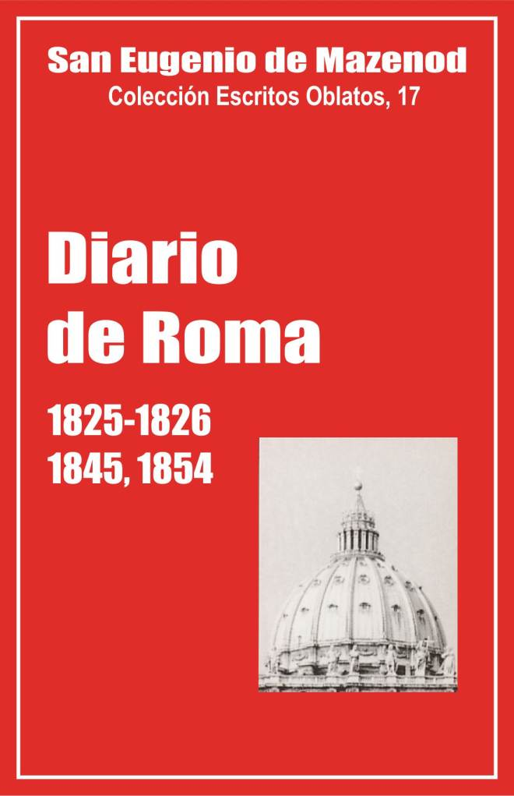

Palo Gordo
2019
Escritos Oblatos: - 01 - 02 - 03 - 04 - 05 - 06 - 07 - 08 - 09 - 10 - 11 - 12 - 13 - 14 - 15 - 16 - 17 - 18 - 19 - 20 - 21 - 22

San Eugenio de Mazenod
Colección Escritos Oblatos, 17
Traducción de
Félix Erviti, O.M.I. y
Olegario Domínguez, O.M.I.)
Postulación general, 1997
Asunción, Paraguay, 2004
Palo Gordo
2019
ROMA 1825/1826: Introd. - Texto - Enero 1826 --- ROMA 1845: Introd. - Texto --- ROMA 1854: Introd. - Texto
Nota del Editor
Deseo aquí expresar, en nombre de los oblatos españoles e hispanohablantes, mi admiración y gratitud a la labor infatigable del P Félix Erviti en la traducción y difusión de las obras del Santo Fundador. Al morir, en 2000, dejaba en su ordenador la versión de tres volúmenes del Diario, de la que nos hemos servido.
Honor al gran oblato, tesonero y ejemplar, a quien sin duda ha felicitado ya San Eugenio con efusivo abrazo.
En esta versión española damos íntegro el contenido del texto original, pero omitimos o abreviamos muchas notas con datos biográficos de personajes citados o con referencias históricas que no interesan a los oblatos del área cultural hispánica.
O. Domínguez O.M.l.
Prosiguiendo la publicación de lo que nos queda del ‘Diario’ de Eugenio de Mazenod, hemos reagrupado en un sólo volumen las páginas que se refieren a sus viajes a Roma. Fue allá seis veces. Primero en 1825 -1826 para lograr la aprobación de las Reglas y de la Congregación. Salido de Aix el 30 de octubre de 1825, hizo el viaje por tierra, pasando por Fréjus, Niza, Turín y Génova. Llegó a Roma el 20 de noviembre y salió el 4 de mayo de 1826. Pasó a Loreto en la costa del Adriático, Bolonia, Milán, Turín, el Mont-Cenis, Chambery, Grenoble, Gap y Aix. Llegó a Marsella hacía el 7 de julio.
Hizo el segundo viaje en 1832 con ocasión de su elevación al episcopado. Dejó Marsella a finales de julio, pasó por Aix donde nombró al P. Courtés vicario general de la Congregación, se detuvo en Gap y en Ntra. Sra. de Laus, el 30 de julio y el 1 de agosto para seguir por tierra a Roma donde llegó después del 15 de agosto. El Padre Tempier que lo esperaba, se marchó unos días después. Ordenado obispo el domingo 14 de octubre, dejó la ciudad el 4 de noviembre. El 6 se embarcó en Civitavecchia en el ‘Enrique IV’. De Liorna a Génova viajó en el ‘Colombo’ y en el ‘Sully’ de Génova a Marsella donde llegó el 16 de noviembre.
Elevado al episcopado sin la autorización del gobierno francés, éste protestó ante la Santa Sede. El papa Gregorio XVI llamó urgentemente a Roma al obispo de Icosía que salió inmediatamente a primeros de agosto de 1833. Inició el viaje por tierra en el coche-correo de Marsella a Niza y en coche particular de Niza a Génova, en barco de Génova a Liorna, y luego de Liorna a Civitavecchia donde llegó la tarde del 15 de agosto. Estaba todavía en ayunas, pero era demasiado tarde para poder celebrar la misa. Se quedó en Roma del 16 de agosto hasta primeros de diciembre, volviendo en barco de Civitavecchia a Marsella con parada en Génova. Se retiró primero a Aix y no volvió al obispado de Marsella hasta el 11 de diciembre. de 1833.
El cuarto viaje, en 1845, tenía por objetivo bendecir el matrimonio de su única sobrina Cesárea de Boisgelin con el marqués Carlos de Damas, residente en Albano cerca de Roma. Acompañado por el canónigo Santiago Jeancard, el viaje se hizo por via marítima del 11 al 14 de julio en la ida y del 6 al 11 o 12 de agosto en la vuelta.
En 1851, Mons. de Mazenod hizo el quinto viaje, con el Padre Tempier para la aprobación de las enmiendas a las Reglas, hechas en el Capítulo general de 1850. Viajaron en barco. Salidos el 21 de enero, volvieron a Marsella a primeros de abril. El papa Pio IX confirió al obispo de Marsella el privilegio del sagrado palio, reservado a los metropolitanos (breve del 1 de abril de 1851). En el curso de ese viaje el Fundador y el P. Tempier pasaron "cinco días" en Nápoles y sus alrededores (Rey II,484)., pero no tuvieron tiempo para ir a Palermo [1].
En enero de 1855 para asistir a las ceremonias de la definición del dogma de la Inmaculada Concepción. Mons. de Mazenod y el canónigo Santiago Jeancard viajaron para la ida, en "El Requin", de Tolón a Civitavecchia del 25 al 27 de octubre. Salidos de Roma, el 31 de diciembre, se embarcaron en un barco del Estado en Civitavecchia, el 1 de enero de 1855, y llegaron a Tolón, luego a Marsella el 4 de enero. En ese viaje, el obispo de Marsella fue nombrado por el papa Pio IX asistente al trono pontificio.
Mons. de Mazenod escribió muchas cartas desde Roma en 1832 y 1833, pero no escribió su ‘Diario’. Tampoco tenemos detalles de su estadía con el P. Tempier en 1851. El ‘Diario’ interrumpido antes de su viaje a Inglaterra en agosto de 1850, no había sido reanudado. (Rey II,375).
En este volumen 17 de los "Escritos oblatos" publicamos el ‘Diario’ de los viajes de 1825-1826, de 1845 y 1854. Se dará una introducción a cada una de esas partes del "Diario" de Roma.
Interés de esta publicación
Se conocen ya bastante bien los viajes del fundador a Roma por las cartas que escribió entonces, sobre todo a los Oblatos de Francia. También para sus Oblatos y sus amigos escribe el ’Diario’ en tres de sus seis viajes.
Esta lectura paralela de las cartas completa nuestros conocimientos. En ellas encontramos los aspectos complementarios que serán señalados en la introducción a cada una de las partes del ‘Diario’ de Roma. Baste mencionar aquí su amor por la Iglesia y su devoción al Papa, su interés por las ceremonias litúrgicas y los monumentos religiosos, sus gestiones administrativas y sus relaciones de asuntos o de amistad con varios cardenales, miembros del clero y de la aristocracia romana, su sorpresa ante la disciplina de los Romanos y la participación de los hombres en las ceremonias religiosas, etc.
Con frecuencia se ha hecho notar, que Mons. de Mazenod era muy consciente de ser fundador y padre. Sabía que tendría una posteridad que deseaba fiel a sus orígenes, de ahí las Constituciones y Reglas que había compuesto, los libros de registro que quiso en cada casa, sus numerosas cartas y su "Diario". Escribe, por ejemplo, el 5 de diciembre de 1854: "Por estas notas, siendo destinadas a aquellos que Dios me ha dado como hijos, deseo que sepan lo que ha pensado y lo que ha hecho su padre en esta circunstancia tan gloriosa para nuestra Inmaculada Madre"
Yvon Beaudoin O.M.I.
INTRODUCCIÓN
El padre de Mazenod hizo su primer viaje a Roma desde finales de noviembre de 1825 a principios de mayo de 1826. Para asegurar el futuro de su Instituto de los Misioneros de Provenza, cuya existencia misma estaba comprometida por las exigencias canónicas de los obispos, quiere lograr de la Santa Sede la aprobación de las Reglas. Sobre su estancia de más de cinco meses en Roma, disponemos de dos fuentes de información: sus frecuentes cartas a los Padres de Aix y su "Diario".
En sus cartas, de carácter personal y espontáneo, hace casi día a día el relato de su viaje de ida y de vuelta, de sus diligencias y de sus entrevistas, y expone los motivos de sus gestiones, no le oculta al padre Tempier, "intimo amigo" y primer colaborador, sus preocupaciones y hasta sus temores ante la lentitud del procedimiento, sus esperanzas, y por fin su alegría al enterarse, el 15 de febrero, que los cardenales se pronuncian unánimes por la aprobación de las reglas y que, dos días después, el papa León XII aprueba y confirma la decisión de la congregación de los cardenales.
El ‘Diario’ que publicamos aquí, se refiere sólo a la estancia en Roma del 26 de noviembre al 4 de mayo. Poco nuevo nos dice sobre las gestiones con las que se llegó a la aprobación de las reglas. El Fundador señala, como de paso, algunos acontecimientos importantes, tales como las dos audiencias del papa [20-12-25 y 15-4-26], sus visitas a los principales responsables de la congregación de los Obispos y Regulares, a Mons. Capaccini de la secretaría de los breves, o también el 2 de marzo, al señor Antonetti para confrontar la copia de las reglas con el manuscrito aprobado por el Papa. Sin embargo da pocos detalles y dice siempre, simplemente, que esas gestiones y esas entrevistas conciernen a "nuestro asunto". Al final, da cuenta de sus gastos. Su Diario recoge más bien lo que descubre en Roma; para lo esencial, es el Diario de un peregrino. La lectura paralela de las cartas es pues indispensable para quien quiera acompañarle.
Se podría plantear la cuestión del destinatario intencional de este Diario. Se trata, en primer lugar, creemos, de notas para el recuerdo personal de uno de los grandes momentos de la vida del padre de Mazenod y de la congregación. Además, se ve ahí sin duda un hábito de fidelidad a sus principios y a los de su padre: "¿A qué servirían los viajes si uno descuida hacer observaciones reflexivas sobre los diferentes objetos interesantes que se presentan tan frecuentemente?" había escrito cuando su viaje a París en 1805. Pero también piensa en los lectores eventuales, es decir en su familia y en sus compañeros a quienes tiene siempre en su mente, como lo revelan discretas alusiones.
Diario de un peregrino.
Este Diario es, pues, el de un peregrino. Voluntariamente, al parecer, el padre de Mazenod distingue bien el contenido del Diario y el de sus cartas, y en estas dos fuentes, no mezcla los géneros. Que haya querido contar tan ampliamente sus actividades de "romero" o de peregrino, no sorprende. Ciertamente, no ha hecho el viaje a Roma para pedir luces de Arriba sobre su futuro, como lo han hecho otros antes que él, tales como Carlos de Forbin-Janson en 1814 o Luis María Grignion de Montfort en 1706. Pero conoce su impotencia en la empresa difícil para la que trabaja. Cuenta, pues, sobre todo con la ayuda de la Providencia, por la intercesión de los santos que visita e invoca con fervor [3]. Además pronto es conquistado por la riqueza de las iglesias, la majestuosidad de las ceremonias litúrgicas en San Pedro y en la capilla Sixtina, el fervor de los Romanos y de los peregrinos del año santo, la belleza de las iluminaciones con ocasión de las cuarenta horas, etc. Como buen meridional, no puede menos de hablar o, si no tiene confidentes, de contar lo que ve y siente.
Las iglesias
El día mismo de su llegada, 26 de noviembre, va a recibir la bendición del Santísimo al Gesù. Al día siguiente empieza con una visita a San Pedro, donde asiste al oficio y luego a una procesión del Santísimo con ocasión de las cuarenta horas. De allí se dirige a la Trinidad de los Montes, luego a Santa María la Mayor y San Juan de Letran, y pasando por el Coliseo y el Capitolio vuelve a la casa de los Lazaristas que le da hospedaje. Un paseo de por lo menos tres horas de marcha.
El 4 de diciembre, después de haberse parado seis veces, escribe: "He recorrido muchas iglesias, a cual más hermosa. Ciertamente uno solo de estos hermosos templos embellecería una ciudad". En cinco meses ve unas cincuenta iglesias. A algunas, multiplica las visitas, así va unas diez veces a Santa María la Mayor, a San Pedro y a la capilla Sixtina. De ordinario da una breve reseña de la historia, a veces anecdótica o incluso legendaria de cada una, y describe la arquitectura, las pinturas y las obras de arte que hay allí.
A veces se detiene simplemente porque en sus gestiones pasa al azar delante de una u otra iglesia. Con frecuencia va para celebrar la misa, asistir a una ceremonia religiosa con sermón, adorar al Santísimo en ocasión de las cuarenta horas, o también para ganar las indulgencias del jubileo.
Celebración de la misa sobre la tumba de los santos
El P. de Mazenod celebra la misa unas treinta veces en las habitaciones y las iglesias donde vivieron y fueron sepultados santos o futuros santos que él venera: los jesuitas Ignacio de Loyola, Francisco de Borja, Luis Gonzaga, Juan Berchmans y Estanislao de Kostka, luego San José de Calasanz, San Felipe Neri, santa Francisca Romana, beato Leonardo de Puerto Mauricio, Pablo de la Cruz, etc. Se nota que tiene una devoción especial por los obreros apostólicos, que le han precedido en su propia vocación misionera. Nombra con frecuencia al beato Alfonso María de Ligorio del que obtiene reliquias, sin tener tiempo para ir a rezar sobre su tumba en Nocera de Pagani. Tres veces celebra sobre la tumba de san Pedro. Escribe el 16 de enero: "...me doy cuenta en este momento, examinando mis sentimientos, que sin querer excluir a san Pablo, y sin sospecharlo, mi devoción se ha centrado principalmente en el príncipe de los Apóstoles, que se ha dignado alcanzarme algunas gotas de esa consolación interior que da una débil idea de la felicidad del cielo. Me parece que habría aceptado la muerte en ese momento, sólo fue el fulgor de un instante, que, sin embargo, dejó algunas huellas todavía durante la acción de gracias. No consiste todo en recibir esos favores, hay que aprovecharlos y corresponder a la misericordia de Dios que es de verdad incomprensible para con unos miserables pecadores como nosotros...".
El 4 de marzo, celebra en una habitación del Gesù donde murieron san Ignacio y san Francisco de Borja. Sólo hace entonces una descripción del lugar pero, unos treinta años más tarde, tras haber celebrado de nuevo sobre el mismo altar, el 27 de noviembre de 1854, escribe: " Siempre con gran sentimiento de devoción rezo en ese santo lugar; no puedo olvidar la gracia que recibí en mi primer viaje a Roma, cuando tanta necesidad tenía de la protección de todos los santos que iba a invocar en cada uno de sus santuarios. ¡Qué misa fue aquella!. No cuento más que cuatro o cinco en mi vida en las que haya sentido ese tipo de gracia; no se pide, pero cuando se recibe, uno queda confundido y da gracias con un gran sentimiento de gratitud".
Las cuarenta horas.
La fe y la devoción del padre de Mazenod hacia la presencia real de Cristo en el santísimo Sacramento son bien conocidas. Escribirá el 17 de marzo de 1839 que ha recibido desde hace mucho tiempo gracias especiales a ese respecto. En Roma, preocupado con frecuencia por la lentitud del procedimiento y por las dificultades que se presentan, siente la necesidad de hablar cordialmente con Nuestro Señor. Unas quince veces va a adorarlo e invocarlo con ocasión de las cuarenta horas. Cada vez se sorprende al ver las iglesias llenas de piadosos fieles y admira el esplendor de la iluminación. Escribe, por ejemplo el 2 de febrero: "He ido... a san Lorenzo in Damaso, para adorar a nuestro Señor expuesto por las cuarenta horas. La iluminación era de verdad magnífica. Estoy convencido de que en el altar y en la iglesia ardían más de cuatrocientos cirios . La decoración del altar ocupaba todo el fondo de la iglesia, y se puede decir que era un muro ardiendo. El Santísimo colocado a gran altura, planeaba majestuosamente sobre ese torrente de luces; era algo soberbio e imponente, y aunque la iglesia rebosaba de gente, no había nadie que no estuviera en la actitud del más profundo respeto, de rodillas en el suelo y con un recogimiento que me edificó profundamente ... Sentí marcharme de ese santo lugar donde Nuestro Señor era rey en medio de su pueblo" [4].
Los predicadores
El padre de Mazenod va con bastante frecuencia a escuchar a los predicadores más distinguidos. No deja de hacer, cada vez, alguna observación sobre el fondo y la forma de los sermones que oye, pues para él la predicación está en el centro de su pastoral personal y de la de su congregación.
Con ocasión del triduo ordenado por el papa en acción de gracias por los beneficios del año santo, va, el 26 de diciembre a asistir al sermón de Mons. Marchetti en San Carlos en el Corso, luego, el 27 y 28 al del padre Jabalot o.p. en la Minerva. Encuentra al primero "demasiado familiar", aunque tenga "gran facilidad" y emplee "buenos términos". En cuanto al segundo, "es excelente en todos los aspectos, lleno de doctrina expuesta con una precisión y una claridad admirables...".
Durante la cuaresma, asiste a varios sermones. El 14 de febrero no nombra al predicador del Gesù del que quedó "muy contento, [este] no ha hecho un discurso florido, no había una frase rebuscada, pero lo que ha dicho era sólido e instructivo". El 5 de marzo, asiste en la iglesia de Santa María del Trastevere, al catecismo de un padre Pasionista. " Es, escribe, un misionero que no me ha parecido poner mucho orden en su instrucción, no pude menos de reírme varias veces, como todo el auditorio. Lo que ha dicho era bueno, pero dijo demasiadas cosas y sobre todo demasiado jocosamente; cierto es que lo hacía por los Transteverinos".
El 7 de marzo, se detiene en san Lorenzo in Damaso para oír a un predicador que decían famoso. "Su discurso sobre el juicio, anota, era la cosa más ordinaria del mundo, realzada por algunas expresiones enfáticas y por una recitación ridículamente teatral. Era el único de todo el auditorio que lloró al relato del trastorno de todos los elementos". El 12 queda "encantado" de la instrucción del abate Spada en san Luis de los Franceses: "dicción noble, pureza de estilo, precisión, exactitud, orden, piedad, sentimiento, siempre al alcance de los más sencillos de su auditorio, al que ha instruido y animado a obrar bien". Le gusta menos el predicador al que oye en la iglesia de los Reformados el 15 y en el Gesù el 24 de marzo.
Ejercicios del jubileo
El padre de Mazenod llegó a Roma antes de que finalizara el año santo de 1825 [5]. Por siete veces hace los diversos ejercicios requeridos que le permiten "ganar la indulgencia del jubileo". El 22 de diciembre, tras su cuarto jubileo, escribe: "Uno no puede ser demasiado ávido de riquezas espirituales, sobre todo cuando uno es tan pobre como yo en ese campo" [6].
Las grandes ceremonias litúrgicas
La piedad filial que el padre de Mazenod siente por el papa y su interés por las ceremonias litúrgicas, lo llevan a no faltar a ninguna liturgia de la basílica de San Pedro o de la capilla Sixtina: beatificación de Angel de Acri, el 18 de diciembre, cierre de la puerta santa el 24, fiestas de la Inmaculada Concepción y de Navidad, de las candelas, miércoles de ceniza, domingo de Ramos, semana santa y Pascua, etc.
Cada vez su narración muestra que está atento a los numerosos detalles de la ceremonia "para sacar provecho de ello en Marsella", anota el 8 de diciembre. "Estas observaciones no son minucias para rubricistas", comenta el domingo de ramos. Y el jueves santo, comparando la actitud de muchos curiosos con la piedad del papa, escribe: "El no pierde de vista el objeto principal, como la casi totalidad de los que acuden por curiosidad ". Ese día, lo pasa en el Vaticano "más para seguir la costumbre que por curiosidad". No le gusta la ceremonia del lavatorio de los pies en una sala llena de visitantes y donde hay una "confusión indecente", ni el banquete público de los cardenales que, en su opinión, es una comida "demasiado buena... para el día y la circunstancia de publicidad". Añade entonces: "ahora que sé lo que es, pasaría treinta años en Roma sin dar un paso para volverlo a ver".
El 26 de marzo, le entusiasma la misa solemne de Pascua en San Pedro. Ese día no se encuentra al lado de turistas no católicos, ingleses en su mayoría, "espectadores ociosos que profanan nuestros santos misterios", sino junto "a buenos católicos con los cuales, añade, podíamos comunicarnos mutuamente los sentimientos que nos inspiraba la vista de un espectáculo tan magnífico, de una ceremonia tan encantadora. Habría que escribir un libro para expresarlo. Hay uno editado que compraré para explicarlo a quien lo desee, pero lo que no podré comunicar nunca es la emoción de mi corazón, las deliciosas impresiones que se comunicaban a mi alma en el curso de esa escena celestial. Es imposible, absolutamente imposible hacerse siquiera una idea de lo que pasa, sin haberlo visto. El pontífice parece alzarse por encima de la condición humana; pero cuanto más se eleva, más también se hace sensible a nuestros ojos la divinidad del sacrificio que va a ofrecer con todo ese ceremonial, y penetra por ahí hasta lo más íntimo del alma; y más resalta el homenaje que se ofrece al adorable sacramento que es el objeto único de tanto esplendor, de un culto tan majestuoso, en un templo solo digno de El en el universo entero; resalta y se impone a cualquier potencia terrestre que ante El se eclipsa y se anonada. ¡Cuántas veces me he prosternado en espíritu! ¡Cuantas veces mis ojos han vertido lágrimas involuntariamente! Mi alma estaba embelesada al ver a mi Dios honrado de ese modo, y era inmenso mi agradecimiento y mi dicha de pertenecerle, de unir mis pobres adoraciones, todos los sentimientos, todas las emociones de mi corazón, a la gran invocación, al sublime sacrificio del sumo pontífice, del vicario de Jesucristo, padre y pastor de la Iglesia universal".
Expresa ahí el secreto de su amor a las ceremonias litúrgicas y su interés por las rúbricas: "el homenaje que se da al adorable sacramento que es el objeto único de tanto esplendor, de un culto tan majestuoso...".
Notemos por último que, con ocasión de las cuarenta horas o de las predicaciones de cuaresma, el padre de Mazenod se maravilla siempre de ver las iglesias llenas de fieles y sobre todo de hombres. La devoción y la religiosidad de los romanos lo edifica así como su disciplina y su docilidad.
Instituciones religiosas
El Fundador se interesa igualmente por las instituciones religiosas. Visita a varias, aquellas sobre todo donde hay franceses: el colegio romano (26 de noviembre), el monasterio de los cistersienses de la Santa Cruz de Jerusalén (30 de noviembre), el convento de las Damas de San Dionisio (2 de diciembre y 12 de marzo), la casa de acogida de la Trinidad de los peregrinos (3 de diciembre), los cartujos de Santa María de los Angeles (4 de diciembre), el oratorio jesuita Caravita ( 5 de diciembre), la casa de los redentoristas para entrevistarse con el postulador de la causa del Bto. Alfonso de Ligorio (29 de dicimbre, 6 y 14 de enero), las clarisas de San Lorenzo in Panisperna (23 de enero y 5 de marzo), los pasionistas de San Juan y Pablo ( 12 de febrero y 20 de abril), el retiro franciscano de San Buenaventura ( 28 de febrero), las damas de santa Francisca Romana del convento de Tor de’ Specchi (9 de marzo), el noviciado de los lazaristas (31 de diciembre) y de los jesuitas (18 de febrero), etc.
En todas partes conserva su libertad de juicio. Observa por ejemplo que los monasterios de los cistercienses y de los cartujos están casi vacíos; por otra parte, las comunidades de congregaciones más recientes que visita le edifican, en particular la de los lazaristas que conoce mejor. El 16 de diciembre, pasa el recreo con dos Padres ancianos de la casa, uno de ellos enfermo. Escribe luego: "Son grandes modelos de virtud, y admiro tanto las consideraciones, la caridad y los cuidados que los demás señores de la casa prestan a ese pobre enfermo, como las atenciones que tienen con el otro. Veo también con alegría la fidelidad de todos a su regla...".
Monumentos y villas
El padre de Mazenod menciona con frecuencia en su Diario los monumentos, plazas y palacios que encuentra en sus desplazamientos: el Coliseo, el Foro romano y los arcos de triunfo, el Capitolio y las colinas de Roma, la vía Appia y el Corso donde asiste a las carreras de caballos por el carnaval, las fuentes, el barrio San Pablo y la pirámide de Cayo Cestio, el Quirinal y los museos del Vaticano, etc.
Escribe, con todo, el 16 de abril: "Casi no me atrevo a confesar que ocupado únicamente de mis asuntos en Roma, muy poco me preocupaba de ver las curiosidades que atraen a tantos extranjeros a esta grandiosa ciudad. Cuidando solo de buscar los monumentos en los que la piedad de todos los siglos ha dejado tantas huellas, me sentía satisfecho cuando había visitado una basílica, o había rezado sobre la tumba de un santo, o contemplado algunas de sus obras y los lugares en que vivieron especialmente. Ya estoy a punto de dejar Roma, y no he visto una sola villa, no he tenido tiempo o tal vez mucha voluntad de ir a Tivoli, o a las tan afamadas cercanías. Para no atraerme demasiadas críticas, haré un esfuerzo en ese campo...".
Cumple la palabra. Aquel mismo día, recorre con dos Lazaristas la villa Doria Pamphili. Los 17 y 18, va a Tivoli donde visita la villa de Este, el templo de las Sibilas, la gruta de Neptuno, la casa de campo de Horacio y la villa Adriana. El 28 de abril hace una última visita a San Pedro. Pasando ante la puerta que lleva a la Cúpula, siente la "tentación de verla" y cae en ella. Sube los 590 peldaños "más para poder decir que entró en la bola que la corona que por verdadera curiosidad". Admira "la prodigiosa altura de esta iglesia" y añade: "arriba en la cúpula, uno se asusta".
Al día siguiente, sufre de una ciática que le hace muy penoso el andar. Debe dejar sus correrías. Eso le obliga incluso a retrasar unos días su salida, que hace el 4 de mayo.
El humor del padre de Mazenod.
En todos sus escritos, el fundador bromea muy poco, pero en su "Diario" y en sus cartas de Roma se nota que, sobre todo desde mediados de febrero, está distendido y de buen humor. En cualquier ocasión, sabe reírse, ver y contar el lado cómico de lo que le ocurre.
El 11 de febrero, no logra entrevistarse con el cardenal Pallotta a causa de su "glacial" criado. Se presenta tres veces en casa de ese "invisible" cardenal, todavía en la cama al mediodía, y a quien repugna que lo vean en "gorro de dormir". A la tercera visita, el 12, el criado no para de decirle: "le recibirá el martes", el 14, víspera de la reunión de la comisión. "Este curioso modo de proceder, escribe el fundador, no me ha emocionado en absoluto, he bajado riéndome a carcajadas para mis adentros"[a Tempier, 12-2-26]. El 5 de marzo, "no puede menos de reír varias veces" asistiendo al catecismo de un padre Pasionista, y dos días después, se complace en contar que otro predicador, en San Lorenzo in Damaso, era "el único de todo el auditorio que lloraba", cuando contaba el juicio final. El 19 de marzo, domingo de ramos, come con diversos dignatarios en casa del conde Ciorani y anota que por un despiste, el cardenal Caccia Piatti llegó finalizada la comida. Lo encuentra ese mismo día por la tarde en casa del ministro de Cerdeña y "le dan ganas de preguntarle si había comido bien".
En el amplio relato que hace de las ceremonias del jueves santo, aparece el auténtico meridional, locuaz y hasta burlón, que hace comentarios y chanzas sobre los menores incidentes. "Nada hay de curioso en esas diversas ceremonias, escribe al principio, sino el apresuramiento de los que desean ver". Anota luego que ante la masa de gente que se apretuja a la entrada de la sala donde el papa lava los pies a 12 sacerdotes, "los Suizos con sus alabardas y sus bastones distribuyen golpes a derecha e izquierda lo más delicadamente del mundo...". Unos instantes después ve a los sacerdotes a quienes el papa ha lavado los pies, vestidos de modo tan extraño, añade, que "tuve dificultad para no estallar en carcajadas ". En la sala donde los cardenales se regalan con su "sopa y cinco platos muy apetitosos...", él come "un trozo de pan" que se ha llevado. "No tomé más precauciones, confía, que la de cubrirme un poco la cara con mi sombrero, como si hablara al oído del que estaba a mi lado". Al final de la comida de los cardenales, vino un predicador a recitarnos "un discurso supuestamente sobre la eucaristía... y terminó bastante pronto para no dar tiempo a aburrirse a la augusta asamblea. Por cierto, algunos para no correr ese riesgo, habían tomado la precaución de dormirse en cuanto subió al púlpito". De ahí el fundador baja a la capilla Sixtina para el oficio de la tarde. La puerta está todavía cerrada; se desliza entonces "sin decir nada, por la pequeña escalera, que conozco bien, añade, la cual va a dar al salón de los prelados, detrás del altar; pasé con tal decisión ante el centinela, que no debió de poner en duda que pudiese hacerse nada sin mí por esa parte".
En Tivoli, visita el templito de la diosa Tos. "Peligrosos tenían que ser los catarros en aquellos siglos remotos, comenta. No vi en ese templo... más que un devoto, digno de la deidad que se adoraba antaño: era un viejo burro que comía unas briznas de hierba".
Las numerosas peregrinaciones del fundador en Roma, sus entrevistas con gran número de personajes, las horas pasadas en componer instancias, en recopiar el texto de las reglas, en llevar al día su Diario y su correspondencia, explican por qué podía escribir al padre Tempier, el 5 de enero de 1826: "Corro, porque corro siempre, corro a correos".
Si ha trabajado y rezado mucho, ha sentido igualmente más que nunca la ayuda de Lo Alto y ha expresado a menudo su agradecimiento, como en este texto del 10 de enero: "Dios me asiste en todo de un modo tan sensible, que me parece que no podría menos de conservar en mi alma un sentimiento habitual de agradecimiento que me lleva a alabar, a bendecir y a dar gracias a Dios, a Nuestro Señor Jesucristo, y en las debidas proporciones, a la santísima Virgen María, a los Santos Ángeles y a los Santos a quienes me creo deudor de la protección y de los consuelos que siento". [a Tempier, 10-1-26].
Yvon Beaudoin. O.M.I.
Llego al Colegio Romano [9] a la una de la tarde. Veo al Rector, P. Taparelli y al P. Dumouchel. Visito a Mons. Isoard [nacido en Aix, decano de la Rota, futuro cardenal] recibo la bendición en la iglesia del Gesù. Comida en casa de Monseñor. Alojado en San Silvestre de Monte Cavallo en la casa de los Señores de la Misión. [10]
Voy a San Pedro. Asisto al oficio en la capilla . Presentes todos los Cardenales; ausente el Papa. Se llevó en procesión el Santísimo a la capilla Paulina para la adoración de las cuarenta horas. Iluminación de esa Capilla según el diseño de... con una cantidad inmensa de velas. Por la tarde visito las iglesias de la Trinidad dei Monti, donde encuentro al Abad de la Trapa [11], Santa María Mayor y San Juan de Letrán, y regreso por el Coliseo y el Capitolio.
Visito al Marqués de Croza, encargado de los asuntos de Cerdeña; a Ferrucci, al P. Rozaven [sj] y al Embajador de Francia.
Salgo con el Sr. Obispo de Fossombrone a visitar la iglesia de San Sebastián y el cementerio de San Calixto. Paso delante del arco de triunfo de Septimio Severo, muy bien conservado y descubierto por entero en el pontificado de Pío VII. Está debajo del Capitolio, en el Campo Vaccino, donde hay aún innumerables restos preciosos, como columnas enteras y trozos de templos: el de La Paz, de la Concordia, de Faustino, de Rómulo y Remo. En el arco de triunfo de Tito puede verse, entre otros trofeos, el candelabro de oro del templo de Jerusalén, esculpido en piedra con mucho detalle y bien conservado. En ese mismo Campo Vaccino está la iglesia de los Santos Cosme y Damián y la de Santa María la Nueva. Se cree que en ese lugar estaba el Foro.
Seguimos nuestro itinerario dejando a la derecha el Coliseo y a la izquierda el arco de Constantino. Este arco fue erigido por el Senado y el Pueblo Romano para perpetuar la gran victoria de Constantino sobre Majencio, por el poder de la cruz, ínstinctu divinitatis, según escriben los paganos. A la izquierda dejamos la iglesia de los Santos Juan y Pablo y la de San Gregorio Magno, construida sobre su propia casa. Pasamos ante la iglesia de Santa Balbina y la de los Santos Nereo y Aquiles que, según creo, se abre una vez al año. Fue construida en los primeros tiempos de la Iglesia sobre un templo de Isis; se la llamó in fasciola, ya que, según la tradición, San Pedro dejó caer en este lugar la venda que cubría la llaga producida por los grilletes que le habían aplicado a los pies. Se ven los restos de las suntuosas termas de Caracalla; bajo estas ruinas se descubrieron el Toro y el Hércules farnesio.
Toda esta parte de la antigua ciudad, que tanta magnificencia contenía, donde no queda ni un solo resto de casa, y nada más que las iglesias y ruinas que he mencionado, fue incendiada por Roberto Guiscard en 1084, cuando vino a liberar a Gregorío VII, sitiado por el Emperador Enrique; así que todo cuanto había entre San Juan de Letrán y el Capitolio fue destruido, y gracias a la piedad de los fíeles se han conservado o levantado las iglesias, únicos edificios que quedan en este lugar. También Totila destruyó cuanto existía entre las termas de Caracalla y la Puerta Latina. Antes de llegar a la Puerta Capena o de San Sebastián, se ve también la iglesia de San César o Cesáreo. De esta puerta Capena (a causa del bosque y templo de los Camenos, edificado por Numa o porque se pasaba por ahí para ir a Capena construida por Italus cerca de Alba) arrancaba la Via Appia, pavimentada por Appius hasta Capua.
Fuera de la puerta, a cierta distancia, se encuentra, a mano izquierda, la iglesita llamada Domine, quo vadis. Según la tradicíón, en ese lugar, Nuestro Señor se apareció con la cruz a cuestas a San Pedro. Sorprendido San Pedro, le preguntó: Domine, quo vadis [Señor, ¿adónde vas?], y el Salvador queriéndole dar a entender, etc., le contestó: Eo Romam iterum crucifigi [voy a Roma, a ser de nuevo crucificado] y desapareció dejando en la piedra las huellas de sus pies.
Esta piedra está en la iglesia de San Sebastián, situada en la misma Via Appia, construida por Constantino sobre el cementerio del Papa San Calixto. Esa iglesia fue dedicada a San Sebastián porque el cuerpo de este Santo fue depositado en ese lugar por Santa Lucina, matrona romana. Se cree que San Gregorio, celebrando en el altar donde reposa el cuerpo del Santo tuvo una visión, en la que el Angel le dijo que cada vez que se celebrara el Santo Sacrificio en ese altar, se libraría un alma del purgatorio. Bajo el altar hay una soberbia estatua yacente de San Sebastián, obra de Antonio Georgetti, sobre boceto de Bernini.
Después de oír la Misa (yo la había celebrado antes de salir, para no retener demasiado a Monseñor en la iglesia), bajamos a las catacumbas, invadidos de un sagrado temor a la vista de esas galerías subterráneas, donde tantos mártires vivieron y fueron depositados tras su muerte. Dicen que hubo ciento setenta mil; entre ellos, diez y ocho Papas. Los cuerpos de San Pedro y de San Pablo estuvieron depositados aquí algún tiempo. Se ve el altar en el que celebraban los sumos pontífices, y otro, bien adentro en las catacumbas, donde San Felipe Neri pasaba las noches en oración. Reconocimos el lugar donde estuvo colocado el cuerpo de Santa Cecilia y el que ocupaba el Papa San Máximo. Después de haber hecho varios rodeos, siguiendo a un guía, por aquellos subterráneos, todos con una velita que cuidábamos no se apagara, salimos por la iglesia por la que habíamos entrado, y regresamos por la via Appia hasta el circo de Caracalla y el sepulcro de Cecilia Metella. Del circo solamente quedan restos que hablan de su antigua grandeza.
He elegido este día para visitar la Basílica de la Santa Cruz de Jerusalén. Fue construida por Constantino, a ruegos de Santa Elena, su madre, en su palacio Sessoriano, para depositar allí el leño de la Santa Cruz que ella había traído de Jerusalén. Sixto III y luego Simmaco celebraron allí dos Concilios, y Benedicto VII restauró la iglesia así como el monasterio ocupado por los cistercienses. Benedicto XIV le dio el magnífico aspecto que ofrece hoy día. La reliquia de la Santa Cruz y otras insignes, como el dedo de Santo Tomás Apóstol, están colocadas en una tribuna, del lado de la epístola, de donde se les muestran a los fieles el día de la fiesta. El Santísimo está también colocado a la altura de un primer piso en el fondo de la iglesia. Hay una capilla subterránea, dedicada a Santa Elena, donde ella había puesto tierra santa traída de Jerusalén.
La soledad de esta iglesia, tan bella y majestuosa, en la que estaba solo con mi ayudante, y las reflexiones que había hecho en el trayecto desde Santa María Mayor hasta Santa Cruz, viendo ese inmenso espacio, antes habitado y ahora convertido en extensas huertas, me sumergieron en tal tristeza que la belleza del monasterio no logró disipar. Al contrario, al recorrerlo me he entristecido todavía más pues esa espaciosa casa no es más que un desierto habitado por cuatro religiosos; y como única esperanza, tienen cuatro jóvenes estudiantes profesos: uno de 16, otro de 17 y dos de 18 años, los cuales probablemente no van a poder remplazar a los viejos cuando mueran. El abad es un anciano achacoso que apenas sale de su celda; y el vicario a quien conocí en el viaje que hicimos juntos de Génova a Roma es, sin duda un santo religioso, pero el hombre más nulo tal vez que yo haya encontrado en mi vida.
De regreso a mí convento no he podido resistir al deseo de entrar una vez más en la Basílica de Santa María la Mayor. La he recorrido durante media hora sin fijarme en nada en concreto; gozaba de la belleza de ese edificio y, mientras caminaba, observaba con mucha edificación con qué afán numerosos peregrinos se apretujaban alrededor de los tribunales de la penitencia, en los que unos Padres Dominicos, sentados en aquellos grandes confesionarios, escuchaban con caridad y tocaban a intervalos con la larga vara que tenían delante, como palo de bandera, la cabeza o los hombros de cuantos se arrodillaban a su vera. Todo ese espectáculo me edificaba y a la vez me conmovía. Me detuve a contemplarlo unos instantes. Era mediodía. Toda esta gente estaba en ayunas, porque al salir del confesionario iban a recibir devotamente la comunión para ganar el jubileo. Un montón de reflexiones se ofrecían a mí espíritu. Sería muy largo consignarlas por escrito. Lo cierto es que la Iglesia atrae a toda esta multitud de fieles con el fin de ganar el jubileo. Hay grandes albergues abiertos para acogerlos. Solo pueden pasar allí tres días, y el segundo día deben presentar una nota escrita que pruebe que se han confesado. Supongo que los Sumos Pontífices no darán tantos poderes a los confesores para absolver sólo a inocentes; y entre los culpables ¿hay que presumir que muchos se hayan preparado antes de venir al jubileo? La Iglesia sabe con todo que no se despacha sin la absolución a esas personas a no ser que tengan que hacer restituciones, etc. Pero ¿dónde está la prueba del tiempo? Se supone, al parecer, que los sacrificios que se imponen esos pecadores al venir a Roma y confesar sus pecados con la esperanza del perdón es prueba suficiente de su buena voluntad y de la disposición interior del corazón. Supongo, por otra parte, que los consuetudinarios no serán admitidos sin la debida caución.
Al regresar a San Silvestre de Monte Cavallo donde vivo, me encuentro con la invitación de ir a cenar, a las seis, con nuestro señor Embajador. Fui, a pesar de la repugnancia que siento por esta clase de banquetes. Entre tanto, antes de ir a casa del Sr. Embajador, he conocido al Padre vicario general de los lazaristas que me confió ciertos detalles sobre su posición para con sus superiores de Francia, cuyo vicario general no contesta siquiera a sus cartas. Me aseguró que él no había contribuido en absoluto a la determinación tomada por el Papa de nombrar para los demás países otro vicario general distinto del de Francia; estaría dispuesto a abandonar su cargo; pero me ha parecido ver en sus hermanos la firme decisión de transferir la Curia general a Roma, siguiendo la costumbre de todas las demás Congregaciones. Pido a Dios que estos señores que buscan todos por igual el bien, se pongan de acuerdo.
Llegada la hora de la cena, me dirigí a la embajada; el suizo, a quien pregunté dónde estaba la escalera, a punto estuvo de mandarme de paseo diciéndome que el embajador estaba enfermo. Tan pocas ganas tenía de subir, que estuve a punto de aprovechar su despiste para largarme a casa; no hice esa farsa por no comprometer al buen suizo que me tomó del brazo rogándome no dijera nada, cuando le hice saber que estaba invitado a comer con su Excelencia. El Sr. Duque de Montmorency se hallaba, en efecto, indispuesto, y no se presentó, de suerte que, cosa bastante chistosa, no le conozco todavía ni siquiera de vista. Pero no por eso dejamos de cenar en su casa, de modo que pudieron quedar satisfechos los más glotones, o si se prefiere, los más delicados, pues la comida era abundante y exquisita. Éramos unos once o doce a la mesa. Yo no conocía a nadie; menos mal que me colocaron entre el encargado de negocios de los Países Bajos, cuyo nombre no recuerdo, y el abate Fea. Hablé únicamente con estos señores; con el último, bastante, ya que hablaba italiano y al parecer se encontraba a gusto con un interlocutor que respondía en su lengua. Es un hombre muy culto a quien las artes deben mucho. Conoce perfectamente la historia de su país, Pío VII le encomendó la conservación de los monumentos; y sigue con esa tarea hasta hoy. Fue el que hizo descubrir del todo el arco de triunfo de Septimio Severo y la vía donde está ubicado que lleva al Capitolio. Le ha servido de punto de partida para confirmar lo que dice la tradición sobre la cárcel de San Pedro, al pie del Capitolio, en esa misma vía. Actualmente es la iglesia [de S. José de los carpinteros]; pienso visitarla uno de estos días.
Casi toda la mañana la he pasado en mi habitación ordenando los asuntos que tengo que gestionar en Roma. He visitado algunas iglesias; pasé por casa del embajador; vi al P. Antommarchi, ex general de los Servitas, y al regreso he admirado la gigantesca fuente de Trevi. Su manantial está a ocho millas de Roma. Marco Agríppa, cuñado de Octaviano Augusto, trajo las aguas para sus suntuosos baños, hoy desaparecidos. Nicolás V las recuperó para Roma. Clemente XII gastó enormes sumas para embellecer esa fuente con estatuas, caballos marinos, etc., y Clemente XIII la acabó colocando bajorrelieves de mármol. La estatua del centro es gigantesca, ella, como los tritones, etc., son obra de los mejores artistas.
He tenido la devoción de ir a ofrecer el santo sacrificio sobre la tumba de Santa Bibiana, cuya fiesta celebra hoy la Iglesia. Su templo está situado entre Santa María la Mayor y Santa Cruz de Jerusalén, en medio del campo, donde ya no quedan vestigios de los magníficos palacios que realzaban la belleza de esos lugares en tiempo de los romanos. Fue construido inicialmente por Santa Olimpia, junto al palacio Liciniano donde vivía Santa Bibiana, y donde ella había enterrado a Santa Dafrosa, su madre, y a Santa Demetria, su hermana, ambas mártires. El cuerpo de la santa fue trasladado después, en tiempos de Juliano el Apóstata. Fue un sacerdote llamado Juan quien realizó ese traslado en el año 362, desde el lugar llamado Forum Tauri. El Papa Simplicio consagró esa iglesia; Honorio III la reconstruyó, Urbano VIII la restauró de nuevo y encargó a Bernini la estatua de la santa. El cuerpo de ésta, y los de su madre y de su hermana fueron colocados debajo del altar mayor, en una magnífica urna de alabastro oriental del tamaño del altar. En el fondo de la iglesia puede verse la columna a la que Santa Bibiana fue atada y en la que fue flagelada hasta caer muerta. El cementerio de San Anastasio, papa, en el que fueron enterrados tres mil doscientos sesenta mártires, sin contar mujeres y niños, está debajo de la iglesia. ¡Qué recuerdos, qué respeto, qué devoción inspiran estas cosas! Según la costumbre, los Canónigos de Santa María la Mayor debían ir a cantar la misa mayor; el mal tiempo se lo impidió; me alegré mucho, pues de no haber sido así, mi Misa se habría atrasado mucho.
Pasando ante Santa María la Mayor, entré por cuarta vez y allí estuve más de una hora. No intentaré describir todo lo que se ve en estas grandes Basílicas; sería demasiado largo e incompleto. Ésta está situada en lo más alto del monte Esquilino, donde se encontraba el templo de Juno Lucina. La esbelta columna de la plaza es la única que se conserva íntegra de cuantas sostenían el gran templo de la Paz, cuyas ruinas se pueden ver en el Campo-Vaccino. El Papa Pablo V la hizo trasladar ahí y colocó encima la estatua de la Santísima Virgen.
La Basílica se llama también de Santa María ad Nives, por el milagro de las nieves; y Liberiana, por el Papa Liberio que la consagró y la mandó construir a expensas y a instancias de Juan, patricio romano; se la llama asimismo Santa María ad Praesepe, porque allí se conserva el pesebre en el que nació el Señor. Pero no era entonces como la vemos hoy. Fue reconstruida con magnificencia por Sixto III el año 432. Está asentada sobre cuarenta columnas antiguas y decorada con mosaicos. Muchos otros papas contribuyeron a su realce y la han enriquecido con inmensos tesoros: Gregorio III, Adriano I, León III, Pascual I, Gregorio IV. Clemente III en 1188 adosó el palacio y Gregorio X hizo el campanario. Nicolás IV restauró el palacio en 1286 y residió allí. Por último, Benedicto XIV rehízo la fachada y el pórtico, y restauró la iglesia y el palacio.
Imposible entrar en detalles sobre la belleza del altar y de las dos grandes capillas laterales. Nunca había visto mármoles tan bellos como los que adornan la Capilla de la Santísima Virgen; no se cansa la vista de mirarlos. Las estatuas, los bajorrelieves, las pinturas, todo está en proporción. Paulo V mandó construir la capilla de la Santísima Virgen en la que se encuentran cantidad de mármoles y piedras preciosas como lapislázuli, ágatas, etc. La capilla de enfrente fue construida por Sixto V. Las estatuas y tumbas de estos papas están en esas capillas, así como las de San Pio V y Clemente VIII.
Al regreso visité el convento de las Damas Basilianas, cuya superiora es la señora Beaudemont. El hábito de esas religiosas creo que diseñado por el buen abate de Sambucy, su fundador, me pareció tan ridículo como feo. Temo que esas pobres Damas no puedan sobrevivir; me confesaron que sólo tenían dieciseis pensionistas.
El resto del día lo pasé leyendo la vida de San José de Calasanz de quien no tenía hasta ahora sino una idea muy imperfecta. Esta lectura me dio ocasión a reflexiones demasiado penosas y a juicios demasiado poco favorables hacia quienes consintieron que el Santo fuese perseguido como lo fue, para que se me ocurra consignar eso por escrito
Había proyectado ir a celebrar la santa misa en el Gesù para la fiesta de San Francisco Javier; pero renuncié a esa idea pensando que habría demasiados sacerdotes ese día. Hice otras visitas por la mañana; a Monseñor Mazio, auditor del Santo Oficio, a quien no encontré. Visité cinco o seis iglesias, entre ellas San Andrés della Valle, magnífico templo de los Padres Teatinos.
Iba para ver en la casa de esos Padres al famoso Padre Ventura; que en ese momento se dirigía al comedor. Yo regresaba muy cansado por el ayuno que en Roma se observa durante el Adviento los viernes y sábados. Me bastó la comida para recuperarme.
Después de la comida visitamos el Gesù; y de allí nos dirigimos a la Trinidad de los Peregrinos, para ver un espectáculo de los más conmovedores. De mil a mil doscientos peregrinos se alojan diariamente en ese hospicio en el que pueden pasar tres días. Cuando llegan se les acoge en una amplia sala; se les manda sentar en un estrado que rodea todo el interior de la sala con los pies apoyados en un escalón; bajo el asiento hay tuberías de agua caliente y fría que corre por dos grifos dispuestos para cada peregrino; esos grifos llenan una cubeta a los pies de cada uno. A una señal, se presentan tantos miembros de la Cofradía cuantos son los peregrinos. Los cofrades, vestidos de saco y con un lienzo en torno al cuello, van a arrodillarse ante esos pobres de Jesucristo, les lavan los pies rezando en voz alta y haciendo repetir a los peregrinos el Pater, Ave, Gloria y el símbolo de los Apóstoles en italiano; y mientras secan y besan los pies, repiten varias veces estas palabras: Gesù, Giuseppe e Maria, vi dono il cuore e l’anima mia. La edificación y la emoción de esa ceremonia sube de grado al ver que los príncipes, los prelados, los obispos y hasta el mismo Papa se creen obligados a participar en ese acto de caridad que ha provocado conversiones de pecadores y la vuelta a la Iglesia de muchos herejes.
Una vez lavados los pies, entran en el comedor, donde los cofrades, con el Patriarca Mattei a la cabeza, les sirven la comida. Esta tarde se les sirvió una buena sopa, una abundante ración de merluza muy bien condimentada, dos huevos, ensalada, queso y fruta. A continuación, pasan a los dormitorios para descansar de las fatigas del viaje.
A más de la profunda edificación de esa obra admirable, he admirado la limpieza, la abundancia, pero sobre todo el buen orden que reina en el conjunto y en los detalles de toda la ceremonia. Conmovido al ver ante mí tal ejemplo de caridad, manifesté el deseo de participar, sirviendo con mis manos a algunos de aquellos pobres, pero para ello se requiere ser miembro de la Asociación, y me ofrecieron amablemente admitirme. Me retuvo el temor de compro-meterme a hacer algo contra la pobreza, virtud a la que mi deber me obliga a sacrificar todo lo que únicamente me sería agradable y de un mérito secundario.
El peregrino que se presenta debe llevar una tarjeta de su párroco, que acredita su intención de ganar el jubileo. La gran sala de recepción se destina a esa verificación, que se hace ordenadamente y sin barullo. Al peregrino se le recoge esa tarjeta, y se le entrega otra con la que tiene entrada en la sala donde se lavan los pies y luego en el comedor. Al día siguiente debe presentar la tarjeta de un penitenciario para probar que se ha confesado; sin ella no se le admitirá. Las primeras damas de Roma prestan el mismo servicio a las mujeres en salas distintas. Este año se han recibido unos cien mil peregrinos. Olvidaba decir que solo se consideran peregrinos los que recorren sesenta millas o más.
Tenía intención de volver hoy a la capilla papal esperando ver al Papa en el Oficio; como no fue Mons. Isoard, dejé de ir también yo, sobre todo al asegurársenos que no estaría el Santo Padre. En cambio he recorrido muchas iglesias, a cual más hermosa. Ciertamente cualquiera de estos hermosos templos honraría a una ciudad. La iglesia de San Pedro in vinculis es tan bella como célebre. Se conservan en ella las cadenas con que sujetaron al príncipe de los Apóstoles en Jerusalen o en Roma. Dice la tradición que en ese lugar celebraba él el Santo Sacrificio. A expensas de la emperatriz Eudoxia se construyó el hermoso templo que hoy vemos adornado con magníficas columnas, restos de las termas de Trajano, que amplió las construidas por Tito. Pelagio II en el año 555 depositó bajo el altar mayor los cuerpos de los siete Hermanos Macabeos; y en el año 1.073 fué elegido Papa Gregorio VII en esa iglesia. En el monumento de Julio II está la famosa estatua colosal de Moisés, considerada como la más hermosa escultura del mundo. Se dice que Buonarotti, terminada la obra, quedó tan encantado que le dió un martillazo en la rodilla gritando: "Habla". El resto del monumento no es obra de él.
San Martín ai Monti es de una rara elegancia. El oro y los mármoles más preciosos le dan brillantez; es de un estilo peculiar, tan grandioso como atrayente. Esa iglesia fue construida en un principio por Constantino, en medio de las termas de Trajano, a ruegos de San Silvestre que celebró en ella un concilio de 186 Obispos. Hoy está en la iglesia subterránea donde se puede ver un trozo de la sede de mármol. Símmaco la dedicó a San Martín y a San Silvestre hacia el año 500; Sergio II la restauró y depositó en ella algunos cuerpos de santos. León IV la adornó con bellas columnas que causan admiración; San Carlos Borromeo mandó dorar el techo cuando fue titular de la iglesia; el cardenal Palleotto construyó el grandioso coro detrás del altar mayor donde rezan el Oficio los Carmelitas. Hay por doquier pinturas de los mayores maestros, de Poussin, Dominichino, etc. Los cuerpos de los Papas San Silvestre y San Martín se hallan en la hermosa cripta sostenida por las columnas, obra del célebre Pedro de Cortone. El Cardenal Zelada ha contribuido a embellecer el hermoso edificio. Es el actual titular.
La iglesia de Santa Susana, construida en la casa de San Gabinio, padre de la Santa y hermano del papa San Cayo que la consagró en secreto el año 290, es el lugar donde fue martirizada la Santa. Ahí fue coronado papa San León III que también la embelleció. Esa iglesia guarda parte del cuerpo de Santa Felicidad.
Frente a la iglesia de Santa Susana está la iglesia de San Bernardo alle terme. Es un resto admirable de los baños de Diocleciano. Se ven otras ruinas en forma de teatro en la huerta del convento ocupado por los cistercienses. Con ellas se hizo una capilla dedicada a Santa Catalina.
Esos magníficos baños, que ocupaban grandes espacios, dieron el nombre a la plaza, llamada por corrupción verbal de Termini. Estas termas las iniciaron Diocleciano y Maximiano que hicieron trabajar en ellas a 40.000 cristianos, todos martirizados luego. Fueron continuadas y terminadas por Constancio y Maximino, hijos adoptivos de Diocleciano, que las embellecieron con estatuas, pórticos, etc., logrando de este modo una maravilla comparable a lo más grandioso que existe. De toda esa magnificencia no quedan más que ruinas, testigos de lo que en su tiempo debían ser estos lugares. Las ocho columnas de granito egipcio que sostienen la iglesia de Santa María de los Angeles bastan para darnos una idea. Esta iglesia es una de las más bellas de Roma, por lo menos es una de las que más me ha impresionado por su imponente belleza. Es una cruz griega inmensa por sus dimensiones, obra del gran Buonarrotti. Benedicto XIV mandó colocar en ella los originales de los cuadros en mosaico que están en San Pedro. Entre tantos hermosos cuadros, no se puede pasar por alto el martirio de San Sebastian, de Dominichino. No me cansaba de contemplarlo. Pasé media hora ante él sin acabar de verlo. El claustro de los cartujos está sostenido por cien columnas, pero el convento me pareció triste; tal vez se deba a su soledad no habitada, ya que casi no hay religiosos; cuatro o cinco a lo sumo.
En la plaza de Termini está la bella fuente de ese nombre. Sixto V fue quien llevó a Roma la antigua Aqua Martia que la alimenta abundantemente. Los cuatro leones, dos de pórfido blanco y dos de granito negro fueron trasladados del Panteón.
Visité también la iglesia de Santa María de la Victoria, que da a la plaza. Toda está decorada con mármoles, dorados, pinturas y esculturas de grandes maestros. Cerca está la puerta Pía, en otro tiempo Nomentana, y Figulense. Recibe el nombre de Pía porque el Papa Pío IV la adornó según diseño de Buonarotti.
Sería muy largo citar todas las otras iglesias que he visitado. Al regresar, contemplé solo el exterior del hermoso palacio Barberini construido sobre las ruinas del palacio de Numa. Urbano VIII lo mandó construir conforme a los planos de Bernini. En la plaza Barberini está la fuente del Tritón. Los arqueólogos defienden que en ese lugar se hallaban la pila Tiburtina y el templo levantado por Augusto a Quirino.
Me extendería demasiado si quisiera hablar de los diversos palacios que se encuentran por donde paso; son innumerables. La mayoría son muy bellos. Ni siquiera los citaré por no crear envidias.
Terminé el día visitando a su Eminencia el cardenal Zurla, vicario de Su Santidad; me ha recibido con gran amabilidad y se ha dignado fírmar de su puño y letra el permiso que llamamos celebret.
Hoy he efectuado varios asuntos y algunas visitas; estuve especialmente en casa de su eminencia el cardenal De Gregorio, que me recibió con extrema bondad y me invitó a almorzar mañana. Por la tarde, asistí a los ejercicios del oratorio del P. Caravita, obra de la que me había hablado con entusiasmo el jesuita que me acompañó en el viaje, obra de uno de sus hermanos, continuada por la Compañía. Confieso que quedé decepcionado. El ejercicio me pareció muy pobre; es una serie de Pater y Ave María, más una treintena de Avemarías. Por último la corta predicación no me ha gustado y, de hecho, no valía gran cosa. La capilla estaba llena de hombres que en parecían muy recogidos y devotos; se disciplinan dos o tres veces por semana. Hay en Roma otras cinco capillas u oratorios como ese y con la misma afluencia de gente. Ciertamente Dios es glorificado.
Pasé la mañana escribiendo. Antes de ir a casa de su eminencia el cardenal De Gregorio, fui al palacio del Quirinal, para conocer al famoso Monseñor Marchetti, Arzobispo de Ancira. Es un prelado que se distingue por su ciencia y por el celo de que siempre ha dado prueba. En tiempos de Pío VII, era uno de los misioneros que predicaban en las plazas públicas. Ha traducido las cartas Pastorales que los Obispos de Francia hicieron con ocasión del cisma del 92. Es autor de varias obras y, a sus 74 o 75 años, sigue trabajando de preferencia en controversia con los galicanos cuya opinión no le gusta.
El cardenal De Gregorio me ha tratado con una bondad y cordialidad extraordinarias. Recordó haberme visto a menudo en París cuando el exilio de los prelados romanos. Ciertamente lo había visto, aunque no fue de aquellos a quienes tuve el gusto de prestar servicios, como hice con los cardenales Mattei, Ruffo, arzobispo de Nápoles, Gabrielli, Brancadoro, el canónigo Muzzarelli y otros. Después de la comida, conversamos largamente cara a cara sobre asuntos importantes; luego tuvo la amabilidad de informarme con detalle acerca del trabajo de las congregaciones de Cardenales. Hay que reconocer que él tiene de sobra y que realiza todas sus funciones a conciencia.
Visita a Monseñor Caprano, secretario de la Propaganda, para anunciarle los favores que voy a pedirle y disponerle para que no me los niegue. Me ha recibido muy bien y ha prometido ayudarme en lo que pueda. Se ocupa en este momento de mandar la respuesta a las preguntas que propusimos a la Congregación de la Propaganda sobre nuestros griegos [12]. Había visto ayer impresos en casa del cardenal De Gregorio todos los detalles de ese asunto y las decisiones tomadas por el pleno de la Congregación.
Hice una visita a Monseñor de Argenteau. Terminé el día visitando la iglesia de los Santos Apóstoles en el último día de la Novena de la Inmaculada Concepción. Normalmente es el Papa quien da la bendición. El cardenal decano le ha sustituido. La iglesia de los Doce Apóstoles fue construida por Constantino cerca de uno de sus palacios; se ha ido renovando merced a la solicitud de varios cardenales y sumos Pontífices.
Había elegido este día para aprovechar la concesión del Papa y ganar el jubileo visitando la iglesia de San Lorenzo in Damaso; pero ha llovido tan intensamente todo el día que lo he pospuesto para mañana, ya que el Papa ha prolongado el indulto a toda la octava. Esta mañana, utilizando el coche de Monseñor Isoard, he ido por segunda vez a la Capilla Sixtina. No asistió el Papa. El Oficio es tan bello y solemne en esa capilla que no me pesó haber asistido. Los Cardenales llevaban hoy cappa magna roja, por la fiesta; y oficiaba un cardenal. En el Introito recitan todos, de dos en dos desde su sitio, el salmo Judica, el Confiteor, etc. Los procuradores generales de las Ordenes hacen otro tanto, y todos los que asisten, sean Obispos o eclesiásticos inferiores. He observado que no dicen el Confiteor al mismo tiempo, como hacemos en Marsella, sino uno después del otro, despacio y un poco inclinados el uno hacia el otro. Del mismo modo, de dos en dos recitan también el Gloria, el Credo, el Sanctus y el Agnus Dei. En el momento del ofertorio, el diácono va a incensar a los cardenales, a los prelados y a los procuradores generales de las Ordenes, unos tras otros. Ellos están de pie, toman el bonete y se quitan el solideo. Inmediatamente antes de recibir la incensación, saludan al que está después, como para avisarle. Lo mismo hacen para la paz. Anoto estos detalles ceremoniales para utilizarlos en Marsella.
Me ocupé durante el día en la redacción de la súplíca que presentaré al Papa cuando me conceda la audiencia.
Visité esta mañana la iglesia de San Lorenzo in Damaso. Para ganar el jubileo, debía confesarme, ayunar y visitar tres altares de esa iglesia, al dispensar el Papa de cualquier otra visita, etc. Esta iglesia había sido construída por San Dámaso en 380 en honor de San Lorenzo, fue demolida cuando el cardenal Riario mandó construir el palacio de la Cancillerla Apostólica y él la reconstruyó dedicándola a los dos santos bajo el pontificado de León X. Tiene hermosos cuadros y allí se venera el crucifijo ante el que rezaba Santa Brígida, el cual, según la tradición, le habló varias veces, En esa iglesia está enterrado el célebre poeta Anibal Caro. Su tumba está adosado al pilar, frente al altar mayor.
El ayuda de cámara de nuestro embajador viene para invitarme a comer hoy en casa de su jefe. Son más de las dos, y como un día de ayuno no espero a esa hora para comer; le di las gracias pues no acostumbro comer dos veces, menos todavía en días de ayuno. Esta moda de invitar a comer tan tarde para el mismo día es peculiar de nuestro embajador. Con frecuencia debe de exponerle a chascos.
He escrito a Monseñor el Arzobispo de Reims, felicitándole por haber sido nombrado cardenal. En el próximo Consistorio será preconizado por el Papa.
El cardenal decano, secretario de Estado [Della Somaglia], mandó aviso que me recibiría a las nueve. A esa hora me encontré en el Vaticano donde tuve el honor de presentarle mis respetos. Su eminencia me recibió con mucha bondad y amable cortesía, pero se había olvidado completamente de mí y de cuanto había hecho por los cardenales durante su exilio en París. Le recordé que lo visitaba con frecuencia, que algunas veces comí con él, que le había ofrecido la Vida de la venerable Inés (encuadernada a costa mía). Eramos en aquel entonces catequistas en la catequesis mayor en San Sulpicio. Yo le asistí cuando celebró en la capilla de los Alemanes; y yo fui el encargado en la época fatal tan desgraciada para ellos, de preguntarle a él, cardenal Della Somaglia, cuáles eran las necesidades de los Cardenales. Le recordé que me había respondido que por dos años no necesitaría nada, pero me señaló a aquellos que estarían en situación de recibir ayuda. Tantas cosas han ocurrido desde entonces que se pudieron olvidar los acontecimientos pasados . No por eso estuvo menos amable el cardenal, pero por mi parte me he dado cuenta que sería muy estúpido hacer el bien buscando el favor de los hombres. Sólo Dios nos tiene en cuenta lo que hacemos por El. Debemos, pues, hacerlo todo para agradarle.
El cardenal me ha hablado del infame Girard [13]. Me ha dicho que se nos iba a devolver, que se había retractado de todos sus errores, pero que no por eso nos fiásemos de él. Está convencido que nunca ha estado loco. Un tipo original que he encontrado en el trayecto de San Pedro a Santa María in Transtevere habría querido persuadirme de lo contrario. Yo conocía al peregrino sin que él lo se diera cuenta. Cierto padre Chabrier, conventual francés, penitenciario, y gran charlatán, habiendo reconocido por mi hábito que era francés, me paró en mitad de la calle y casi bajo las ventanas del manicomio donde está recluido Girard. El criado de Mons. Isoard que me acompañaba me traicionó al nombrarme y dar mis títulos, sin eso me hubiese divertido haciéndole hablar sobre mí ; sabía que se había permitido algunas declaraciones sobre el asunto Girard. Así que ese pobre religioso, que me dio la impresión de muy arrogante, se mantuvo entonces reservado e insistió mucho en convencerme de que su protegido estaba loco. No creí hacer un juicio temerario pensando que era un mentiroso. Pronto volvió sobre sus pasos, sin duda para ir a avisar a Girard que yo había llegado. Le habrá dado un mal rato sin provecho, porque nunca he pensado ocuparme de ese miserable. De haber sido diocesano nuestro, habría sido otra cosa.
Aunque extenuado (hacía veinticuatro horas que no había comido; los viernes y sábados de Adviento son días de ayuno en Roma) tuve que ir a casa del Sr. Embajador, al que esta vez tuve la suerte de encontrar. El también me habló de Girard. Está decidido a enviar a Francia a ese malvado. El Sr. Penitenciario francés me ha parecido muy apurado para ponerlo bajo la protección del brazo secular sustrayéndolo a las vejaciones de su obispo, el de Clermont. Este monje insulso me ha expuesto sobre el particular unos principios que merecerían un examen del Santo Oficio. El Sr. Embajador estaba casi tentado a presentármelo como un hombre de mérito. A mí me bastó una entrevista de cinco minutos para ver que no pasaba de ser un pobre hombre. En cuanto al Padre Monteinard, mínimo, es otra cosa, me adhiero a la buena opinión que tiene de él el señor embajador.
Antes de abandonar el Vaticano subí a los apartamentos del Santo Padre, para enterarme si Mons. Barberini me había solicitado la audiencia. Lo había olvidado totalmente. Podría tal vez haber sido recibido hoy, ya que no esperaba nadie; pero confieso que no me preocupé. Desprevenido, no tenía conmigo los papeles que debo presentar a Su Santidad; y además me parecía bien que el cardenal De Gregorio y algunos más hablaran de mí al Papa antes que yo lo viera.
No me canso de ver las ceremonias de la Iglesia, cuando se celebran con dignidad. Por eso vuelvo con gusto a la capilla papal. El Santo Padre no estaba presente; oficiaba de nuevo un cardenal, y nada es tan majestuoso como contemplar esa noble asamblea. Después del evangelio, un Padre agustino predicó en latín. Ese discurso no me gustó, ni con mucho, como el que oí el primer domingo de Adviento. Me pareció que ese monje se permitía reflexiones inadecuadas y poco respetuosas por la aplicación que se podía hacer de sus palabras a los cardenales ante los que predicaba. Otros dos monjes que estaban detrás de mí me probaron que yo llevaba razón, con las risas locas con que subrayaban cada alusión. Al cardenal oficiante le quitan el solideo al comienzo del prefacio; también él se lo quita durante el canto del Evangelio.
En la capilla, se me acercó el abate Conti ahora monseñor de mantellone. Pertenece al segundo orden de Prelados. Lo había conocido en París cuando era capellán del cardenal Despuig. Luego asistió a Mons. Della Genga, hoy Papa; me dijo que le confesaba durante su estadía en Francía.
Por fín he presentado la carta que tenía para el cardenal Pacca. Me recibió muy amablemente y me ha habló con mucho interés y veneración del Sr. abate Taillé. Me he hecho cargo de un rosario que el Papa quiso enviarle.
He vuelto a ver al cardenal De Gregorio y he entregado la carta del Sr. de Cesolles a la señora condesa de La Tour Du Pin. He visto también al abad de la Trapa y al P. Monteinard, y terminé el día yendo a adorar al Santísimo en San Andrés della Valle, donde se celebran las cuarenta horas.
He observado que en la capilla papal el diácono saluda al coro cuando va a cantar el Evangelio; y en la misa pontífical, cuando el prelado oficiante no toma la mitra preciosa, utiliza la blanca que conserva, por ejemplo, durante el sermón, en el Gloria y el Credo.
He permanecido toda la mañana en casa. Después de comer, fui al palacio Colonna para ver el cuerpo del cardenal Ercolani expuesto en su lecho mortuorio. Esperaba encontrar una capilla ardiente y algo magnífico; pero solo había un gran baldaquino en el que estaba, a gran altura, el cuerpo del Cardenal difunto, revestido con la sotana, roquete y manteleta, con el birrete rojo en la cabeza. El lecho en el que descansaba el cuerpo era muy amplio, recubierto de un gran mantel de tisú de oro. Solo cuatro cirios ardían en torno. Numerosas personas acudían a para ver ese espectáculo que más que satisfacer mi curiosidad me daba pena, porque, a más de la indiferencia que observé en los lacayos al pasar la primera antesala, sentí una especie de horror al ver cantidad de moscas devorando los ojos, la nariz y la boca del difunto a quien su alta dignidad no le libraba de tal ultraje, como no le librará de la voracidad de los gusanos, que pronto se apoderarán de esos restos como de una presa que se les entrega.
Salí del palacio con estas reflexiones y fui a visitar a Monseñor Mazio, auditor del Santo Oficio, que me recibió con los brazos abiertos, me dio mil muestras de interés y me ofreció su ayuda; hemos quedado en que el domingo acudiré a él en San Pedro para que me obtenga celebrar la santa misa en la confesión del príncipe de los Apóstoles y luego me consiga un buen puesto para ver la ceremonia de la beatificación del venerable [Angel de Acri]. Sin duda debo esta buena acogida a la carta de recomendación que me había dado para este prelado el Sr. arzobispo de Génova [Lambruschini], quien tantas atenciones me había prodigado a mi paso por su sede arzobispal.
Hoy nada tengo que anotar. Contento con el hermoso espectáculo que contemplo desde mi ventana de donde domino la ciudad: ante mí, bajo el jardín de la casa en que habito, los jardines del palacio Colonna; en frente, a poca distancia, las cúpulas del Gesù y de otras iglesías; algo más allá, San Andrés della Valle; a la izquierda, la columna Trajano y a poca distancia el Capitolio; a la derecha, San Ignacio, el colegio romano y el observatorio; más allá, la columna Antonina, Montecitorio, la plaza del Pueblo y otros edificios famosos; pero por encima de todo, el hermoso Vaticano y esa incomparable cúpula de San Pedro; en una palabra, toda la ciudad. Sólo he salido un momento para efectuar una visita a nuestro querido decano de la Rota que, espero, pronto será cardenal. El iba a almorzar con el embajador de Francia que hoy, con motivo de la fiesta de Santa Lucía, ha invitado a todos los canónigos de San Juan de Letrán y a otros prelados. Como no tuvo la amabilidad de invitarme, me dispensé de ir a verlo oficiar esta mañana en esa basílica de San Juan de Letrán. En calidad de representante del Rey de Francia, que es canónigo de esa Basílica, asistió al oficio bajo un dosel colocado en medio de los sitiales del Coro y más elevado que los mismos asientos de los cardenales. Se le inciensa inmediatamente después de ellos y antes que a los canónigos. Sólo le faltaba entonar el Deus in adiutorium. Esta costumbre se remonta a Enrique IV.
No me preocupé de ir a las exequias del cardenal Ercolani, a las que debían asistir todos los cardenales. Me ocupé en visitar a monseñor Caprano, Secretario de la Propaganda, que me comunicó con satisfacción que el Santo Padre me había concedido todas las gracias solicitadas, y que, hablando de mí tio, le había dicho textualmente: "Oh, el obispo de Marsella es un hombre meritorio". Y monseñor Caprano amablemente añadió que su sobrino era digno de el. Dejando de lado esta reflexión del obispo Monseñor Caprano, que puede con todo ser útil para lo que me propongo, me dio mucho consuelo saber que el jefe de la Iglesia piensa tan favorablemente de mi tío, a quien quiero con tanta razón.
Hoy me presentaron al Cardenal Guerrieri-Gonzaga que me recibió como estoy acostumbrado a ser recibido en todas partes. Allí encontré al R. P. Fortis, general de los jesuitas, hombre muy respetable, que me pareció agobiado por la edad y los achaques.
He cumplido también hoy lo que estaba prescrito para tratar de ganar por segunda vez el jubileo por las santas almas del purgatorio, según el indulto concedido al efecto por el sumo pontífice. He visitado la iglesia de San Lorenzo in Damaso y los altares señalados. Dios quiera que sean provechosos para las benditas almas, y sobre todo para las almas de mis queridos parientes difuntos, los sufragios que apliqué por ellos. Mi padre, fallecido tan santamente en mis brazos, mi abuela tan tiernamente amada por mí, mis abuelos, mi tío abuelo y mi tía que estuvieron seguramente presentes en mi pensamiento, como lo están todos los días en la misa. No sé por qué menciono también a mi hermana muerta tan joven. Pero por afecto, también mi sobrinita Carolina pasa a diario es esa lista, pues ciertamente no necesita mis sufragios. Pero así es mi corazón; no puede olvidar a ninguno de los que ama, estén vivos o muertos.
Apenas terminada la misa, he ido al Vaticano a ver a su Eminencia el cardenal secretario de Estado. Esta vez hemos hablado en italiano. El había tenido la amabilidad de comunicar al Santo Padre mi deseo de besarle los pies y ser recibido en audiencia. Su Santidad me ha concedido ese favor. El cardenal me informó sobre lo que tenía que hacer. Cuando yo esté dispuesto, él me presentará si lo deseo. Terminada la entrevista, fui a San Pedro donde estuve admirando, durante más de una hora, las bellezas de esa iglesia que nunca uno se cansaría de contemplar. Se trabaja afanosamente en los preparativos para la beatificación del Siervo de Dios Venerable Angel de Acri. Esa ceremonia será el domingo.
Pasé el recreo con el Sr. Collucci, uno de nuestros paúles, de 74 años de edad. No le hubiese dado más de sesenta. No tengo palabras para expresar lo edificado que quedé de su hermosa sencillez, de la belleza de su alma y de los sentimientos que expresaba con admirable dulzura. Está lleno de achaques, aunque no visibles; lo que no le impidió ponerse en camino todavía este año para dar misiones, pero la intensidad del mal le hizo dar marcha atrás, mejor dicho la orden del médico, ya que él estaba dispuesto a proseguir. Me decía que lo que lo había sostenido siempre era la paz del alma, de la que tenía la dicha de gozar en su santo estado, y que todos los días daba gracias a Dios por su vocación. Yo había notado ya la caridad con que estaba siempre dispuesto a acudir al confesionario y sus modales respetuosos con todos. Pienso que este santo sacerdote es un gran siervo de Dios. Me decía también que lo que más contribuía a su felicidad era aceptarlo todo como venido de la mano de Dios.
Hay en la casa otro enfermo que lleva ocho años sin salir de su cuarto. Era un gran misionero y ahora tiene paralizada la mitad del cuerpo. Con todo sigue confesando y siempre se le ve contento y resignado. Son grandes modelos de virtud, y no me admiran menos los miramientos, la caridad y los cuidados con que rodean a ese pobre enfermo los otros religiosos de la casa, así como las atenciones que tienen con el otro. Veo también con gozo la fidelidad de todos al reglamento de la casa. Todo marcha suavemente y bien. Agradezco a Dios que me haya brindado la ocasión de admirar una conducta tan ejemplar mantenida con constancia. Una cosa me llena de confusión, y es que estando yo a tanta distancia de su virtud, todos ellos me colmen de toda clase de atenciones y me traten con un respeto que ciertamente no merezco.
Al placer de vivir con gente tan santa, se une también una circunstancia especial que es a menudo para mi ocasión de buenos pensamientos; es que el beato Tomasi [teatino, cardenal] vivió cuarenta años en esta casa, que parece impregnada del buen olor de sus virtudes; y mi venerable maestro, don Bartolo Zinelli murió igualmente aquí en olor de santidad, ya que se le atribuyen varios milagros y profecías. He encontrado su busto en yeso; y su cuerpo descansa en la iglesia donde tengo la dicha de celebrar la santa misa diariamente.
Nada que anotar hoy. El Sr. abate Bourdet, sacerdote de la diócesis de Aviñón, que se siente llamado con una vocación persistente a las misiones entre infieles me acaparó la mañana desde la acción de gracias de mi misa hasta la comida. Me hizo leer todas sus cartas y me puso al tanto de sus disposiciones, que son sumamente edificantes, pues suspira por el martirio tanto como otros por el descanso. Yo había hablado muy bien de él a su eminencia el cardenal Secretario de Estado y le había dado algunas otras pruebas de buena voluntad para ayudarle a llevar adelante sus gestiones aquí. Este santo sacerdote, a cambio, me dará algo de parte en sus oraciones y buenas obras. Por la tarde otro sacerdote, menos interesante pero a quien la caridad me obligaba a escuchar, me ocupó por su parte un tiempo que yo contaba emplear mejor, por lo menos más agradablemente, pues tenía que escribir a la familia.
Este día tenía que ser memorable. He ido a San Pedro; monseñor Mazio me hizo situar en el recinto privilegiado desde donde he visto y oído a las mil maravillas. Vi primero toda la parte de la iglesia que está entre la confesión y el fondo de la iglesia, donde está la cátedra de San Pedro sostenida por cuatro doctores de la Iglesia, dos latinos y dos griegos, iluminada por innumerables cirios con ocasión de la beatificación de Ángel de Acri, sacerdote, misionero capuchino, cuyo cuadro cubierto por un velo y rodeado de antorchas estaba colocado a gran altura. Llegada la hora de la ceremonia, los cardenales de la Sagrada Congregación de Ritos y todos los miembros de la misma, se colocaron en bancos al lado del evangelio; el Cabildo de San Pedro con el Cardenal Galleffi arcipreste a la cabeza, se colocó en frente, al lado de la epístola. Monseñor, el vicegerente oficiaba pontificalmente. El general de los Capuchinos se acercó al cardenal decano, que se cubrió con el birrete mientras el religioso le dirigía un discurso en latín del que nadie entendió nada. Después, el cardenal entregó el decreto de beatificación a un eclesiástico revestido de sobrepelliz, que lo leyó en voz alta desde el púlpito. Apenas terminada la lectura del decreto, quitaron el velo que cubria el cuadro del santo, y el prelado oficiante entonó el Te Deum. Celebró a continuación la misa solemne del nuevo Beato. La música vocal de esa misa, acompañada solo por el órgano, era maravillosa. Tras la misa se retiró el clero, pero nosotros nos quedamos, sabiendo que el Santo Padre vendría pronto a rezar ante la imagen del santo. Mientras tanto monseñor Mazio tuvo la atención de entregarme la vida y una estampa del Beato, que habían distribuido a cada uno de los cardenales y prelados; al avisarme que estaba allí el Sr. Duque de Blacas, no pude menos de acercarme a él un momento; pero, habiendo llegado el Papa acompañado de varios Cardenales, regresé al sitio que me guardaba un joven escritor francés y contemplé a gusto al Santo Padre que postrado en su reclinatorio, rezaba con fervor angelical. Uní mi oración a la suya y me recreaba contemplándolo cuando el capellán de Mons. d’Isoard vino a sacarme de mi éxtasis, diciendo que saliera pues monseñor llevaba tres cuartos de hora esperándome en el coche. Como en ese momento se levantó el Papa, me consolé de verme obligado a salir. Eché un vistazo a todos los asistentes. Observé que mucha gente miraba con curiosidad y hasta con interés; no vi que otros compartieran el profundo sentimiento de veneración y dulce afecto que llenaba mi alma. Es el resultado de una actitud de fe hacia la persona del Papa.
Regresamos al palacio Mattei donde se hospeda Monseñor d’Isoard. Tomamos un bocado y volvimos al coche para ir en procesión a San Pedro, con una cofradía que había obtenido ganar el jubileo haciendo una estación en San Pedro. Monseñor el decano de la Rota, revestido de prelado, llevaba el crucifijo; yo a su lado con sotana y manteo largo. A la ida cantamos las letanías de los santos; yo sentía verdadero placer al hacer resonar mi voz por las calles de la capital del mundo cristiano, cantando las alabanzas de Dios. Al llegar a San Pedro, se presentaron a la veneración de los fieles las reliquias insignes de la Pasión como la madera de la verdadera cruz, la santa lanza, etc. Me llamó la atención el profundo silencio que reinó en toda la inmensa basílica durante la ceremonia. Estaban todos de rodillas y rezaban con mucha piedad a pesar de la enorme multitud. A este propósito, quiero resaltar que he comprobado desde mi llegada a Roma y en mis continuos recorridos por las iglesias que en todas partes y siempre se ve reinar una exquisita decencia y que la piedad de los peregrinos, que son todos gente de pueblo, campesinos pobres y la mayoría andrajosos, me edifica cada vez más. Volvimos de noche cantando el Te Deum. Terminó la ceremonia con la bendición del Santísimo impartida por monseñor el decano.
El abate Bourdet me ha ocupado la mañana; le acompañé a la Propaganda, para servirle de intérprete ante monseñor Caprano. Nunca me había imaginado poder ayudar en Roma. Tanto es así que me sentí bastante feliz al prestar ese servicio a ese santo sacerdote. Hemos arreglado su asunto. El Prefecto de la Propaganda le entregará una carta; yo le ayudaré a conseguir algunas facultades, y saldrá para París para ir desde allí a tierra de infieles y tal vez derramar su sangre por Jesucristo. Aproveché la ocasión para pactar con él una buena unión de oraciones, de la que yo saldré muy beneficiado.
A las nueve de la mañana monté en el coche de monseñor el decano y me trasladé al Vaticano. Era hora de que me presentara ante Su Santidad. Ya el cardenal secretario de Estado le había hecho saber mi deseo de presentarle el homenaje de mi respetuosa devoción. Monseñor Caprano le había hablado de mí. A Mons. Mazio, que había hecho grandes elogios de mi persona ante el Papa, éste se dignó contestarle que había trasmitido al cardenal secretario de Estado que me recibiría con mucho agrado; bastaba que me presentase en su audiencia. El cardenal Della Somaglia había tenido la bondad de decírmelo; no obstante, el maestro de cámara no se había preocupado de hacérmelo saber según habíamos convenido con monseñor d’Isoard. Cuando vi a ese buen maestro, monseñor Barberini, no me sorprendió su despreocupación: es un hombre más nulo de lo que cabe imaginar; lo que no impide que sea un buen sacerdote. Le dije muy llanamente que, viendo que me había olvidado, como había tenido ese olvido conmigo y no pudiendo retrasar más la visita a Su Santidad sin merecer reproches, había venido sin más aviso; y le rogaba que advirtiese al Santo Padre que yo estaba en su antecámara para cuando hubieran pasado los ministros. Todo está regulado en esta admirable corte. Las audiencias está programadas día por día, quiero decir las de los que deben trabajar con el Papa. Para conocimiento de todos hay una lista impresa en la antesala más cercana al despacho de Su Santidad. Allí esperé yo, en mi calidad de vicario general, que en Italia es una especie de prelatura y conlleva el título de monseñor. Mientras aguardaba que acabaran de pasar los colaboradores del Papa (hoy martes eran el secretario de los Breves, el prefecto de la congregación de los Obispos y Regulares, al obíspo elemosynarius del Papa y el maestro del Sacro Palacio), conocí al Arzobispo de Siena quien, al descubrir por mi vestimenta que era francés, se me acercó para conversar un poco sobre Francia donde había estado desterrado en tiempos de Napoleón. No se cansaba de alabar la buena acogida que le habían dispensado y todas las atenciones que habían tenido para con él. También el cardenal Pacca habló conmigo y me invitó a volver por su casa. Me dijo que había releído con más atención la carta del Sr. Taillé, en la que me recomendaba a él; añadió cosas demasiado elogiosas y mientras estaba hablando conmigo fue llamado por el Santo Padre.
Pasé el primero de los que no tenían audiencia fijada, lo que extrañó un poco al Rvdo. Padre General de los Dominicos, que parecía estar seguro de que pasaría antes que yo; pero el Santo Padre me llamó a mí primero, y obedecí sin hacerme rogar. Su Santidad estaba en su pequeño dormitorio, que me pareció muy poco amplio. Cerca de la alcoba, cerrada con cortinas de damasco carmesí, estaba el Papa sentado en un canapé, apoyado sobre un escritorio que tenía delante. Ordinariamente se hacen tres genuflexiones; yo sólo pude hacer una; el Papa me hizo amablemente señas de que me adelantara; me puse de rodillas y me postré, sin poder besar sus pies que parecía retirar intencionadamente. Me dijo en seguida que me levantara; no quise hacerlo; insistió, y le rogué me permitiese permanecer de rodillas, pues esa postura me convenía mucho. Pareció acceder a disgusto; la expresión de su rostro me lo demostró así como sus palabras llenas de amabilidad y dulzura. No intentaré transcribir aquí todo lo que sucedió en esa preciosa audiencia que duró más de media hora, seguro que con harto pesar del Padre dominico, que no había comido como tampoco lo había hecho yo que estaba en ayunas. El Papa me mostró una bondad indecible; habló mucho tiempo, y me escuchaba con gran atención cuando yo hablaba a mi vez. La conversación era en italiano, y él me hablaba siempre en tercera persona con los términos más corteses. Se dignó darme explicaciones muy detalladas cuando hubiera podido zanjar con una palabra. Me concedió en una palabra cuanto le pedía. Tras haber tenido la amabilidad de indicarme él mismo una persona adecuada a quien yo debía acudir para un asunto, se preocupaba tratando de recordar dónde vivía, y por lo menos me dijo dónde trabajaba y dónde con seguridad la encontraría; mas temiendo que yo no retuviera el nombre, el Santo Padre, llevó su bondad hasta tomar una hoja de papel de su mesa, me adelantó la carpeta y me entregó la pluma para que lo escribiera. Confieso que yo estaba confuso hasta el punto de emocionarme. Guardo esa dirección, escrita con la pluma del Papa, con respeto y a la vez como recuerdo de su extraordinaria bondad. Siento que, por haber escrito de rodillas y al borde del escritorio del Santo Padre lleno de papeles, me haya salido un garabato. Antes de que me retirara me dijo: "Pienso que no se marchará en seguida; nos veremos de nuevo". Tampoco pude besar sus pies al salir; pero le pedí su bendición, que recibí profundamente inclinado, y me fui con el corazón lleno de consolación y de alegría.
Había elegido este día, aniversario de mi sacerdocio para celebrar el santo sacrificio en el altar de la confesión de San Pedro. El abate Bourdet vino a recogerme muy de mañana y nos encaminamos lo más devotamente que pudimos a la Basílica. Nos atendieron inmediatamente. No se accede a esa cripta sin sentir un estremecimiento de respeto y devoción. Celebré la misa de Santo Tomás sobre los cuerpos de San Pedro y San Pablo, cuya mitad reposa bajo este altar, junto a los de los santos Romanos Pontífices de los primeros siglos de la Iglesia. Mi misa debió de prolongarse ya que quise darme el consuelo de recordar en el memento, uno por uno, a todos aquellos cuya salvación me es especialmente querida. Es un acto de comunión muy acorde con el lugar y las circunstancias. Ayudé a la misa de mi compañero que me había prestado el mismo servicio; y el pensar que este santo sacerdote acudía a la tumba de los Santos Apóstoles para alcanzar la fuerza de confesar la fe en medio de tormentos en los países infieles, y recibir de los mismos apóstoles en cierto modo, su primera misión, me inspiró una gran veneración por él y, en la medida de mi capacidad, algunos buenos sentimientos.
Encontré en la sacristía a Monseñor Mazio. Me había recomendado al responsable de los sacristanes. Asistí al oficio de Maitines y Laudes y, durante la hora de Prima, quiso que tomara con él una taza de chocolate en la salita a ello destinada en el bello cuerpo de la sacristía construida por el Papa Pío VI
En este Oficio, que no estuvo mal, observé: 1 – que los asientos más altos están reservados a los canónigos, los bajos a los beneficiados; 2 - que las lecturas de los primeros nocturnos son cantadas por los beneficiados y las del tercer nocturno por los canónigos; 3 - que el semanero va a tomar la capa para Laudes y lo mismo hacen los dos beneficiados coristas; 4 - que el oficiante vuelve a su asiento aunque esté revestido de capa; ocupa el primer lugar al lado del Evangelio; 5 - que se inciensa a cada canónigo y a cada beneficiado. Había observado lo mismo en las capillas papales. El Prelado celebrante espera y no comienza el prefacio hasta el final de la incensación; 6 – que los canónigos son incensados antes que los coristas, aunque estos estén con capa; en Marsella siempre me ha chocado lo contrario, hay que cambiarlo absolutamente; 7 - que al Benedictus, cuando el oficiante inciensa el altar, dos canónigos, en hábito de coro, lo asisten, es decir, van a colocarse en el coro por bajo de las gradas del altar; 8 - aquí, como en la capilla papal, los canónigos, tanto en la incensación como en el momento de la paz, se saludan sucesivamente, a modo de aviso; 9 - el Introito, aquí como en la capilla papal, lo dicen los canónigos de dos en dos alternativamente hasta el Oremus inclusive, e igualmente el Gloria, el Credo, el Sanctus y el Agnus Dei.
Me hubiera gustado pasar este día en retiro, pero tuve que ir a casa de la persona que el Santo Padre me había indicado. Quedé muy contento, aunque ciertamente él habría podido encontrar intempestiva mi visita pues era la hora de su almuerzo y en día de vacaciones. Pero hasta ahora Dios va preparando los caminos dondequiera que voy; lejos de mí atribuirme en nada ese favor; se lo agradezco solo a Dios, que es dueño de los corazones, y a los ángeles y a los santos a quienes invoco diariamente.
Uno no puede excederse en avidez de riquezas espirituales, sobre todo siendo tan pobre como yo en esa área. Me ha encantado tener ocasión de ganar otra vez el jubileo. El Papa ha concedido a todos los asociados del Sagrado Corazón, ganarlo visitando una de las cuatro basílicas y otra iglesia donde se venere públicamente un cuadro del Sagrado Corazón. Fui, pues, a Santa María la Mayor, la basílica más próxima a mi domicilio, y a la iglesia parroquial de los Papas cuando están en el Quirinal. Tiene como titulares a los santos Vicente y Anastasio, y todos los Papas muertos en el Quirinal han dejado alguna parte de su cuerpo a esta iglesia. Sus nombres figuran en dos grandes piezas de mármol colocadas a derecha e izquierda del presbiterio.
Había sido invitado a comer por el Cardenal De Gregorio. Allí me encontré con los dos nuevos secretarios: el de la Congregación de Obispos y Regulares, Monseñor Marchetti, arzobispo in partibus, y el del Concilio, Monseñor Sala. Son puestos cardenalicios. También estaba el hermano del P. Taparelli, rector del colegio romano, hijo del Marqués de Azeglio, mí amigo, y un tipo curioso llamado el conde, que proyecta formar una colonia en Méjico, de la que ciertamente yo no seré el capellán.
Ha llovido todo el día; no he salido. Sin embargo recibí la atractiva visita de un buen lacayo, que hace ya el número veinte, que venía a pedirme el aguinaldo. Le pregunté con qué título ¿Lo adivinaréis? Un amigo suyo, yendo a la casa de su amo, había escrito mi nombre a la entrada. Me pareció demasiado pesada la broma y lo despaché sin aguinaldo. El pobre hombre sorprendido me dijo: "Pero Monseñor ¿la servilleta?" "- Yo no he tocado ninguna servilleta en casa de su amo, pues no lo he visto. Vaya en paz y no vuelva más". Parecida aventura había tenido días antes. Salía de estar con el cardenal secretario de Estado e iba a subir a los apartamentos del Santo Padre. En el descansillo, el camarero de monseñor d’Isoard, que me acompañaba, me dijo en voz alta: "tal vez ha llegado ya monseñor el maestro de cámara"- "Sí, mi señor está arriba", contestó un lacayo que casualmente se encontraba allí. Bastó eso para que, dos horas después, lo tuviera a la puerta de mi cuarto pidiéndome el aguinaldo para la familia de monseñor el maestro de cámara. Habría temido que se burlase de mí, con los ruines de su ralea, si hubiese sido tan tonto que le diera un céntimo. Por lo demás, se contentan con poco. La tasa que asignan a cualquier persona que pone los pies en casa de su amo es de 30 sols; pero este minúsculo impuesto es cobrado por innumerables publicanos. Con razón, he negado tres paoli a esos impertinentes con los que nada tengo que ver. Pero gustosamente he dado treinta a los criados de Monseñor d’Isoard, a cuya casa voy a diario.
He ido muy temprano a casa de monseñor el arcipreste Adinolfi. El relato que me hizo de lo que ocurrió a mi respecto en su audiencia con el Papa ayer tarde, ha aumentado mi gratitud y mi afecto para este santo pontífice que, al darme nuevas pruebas de su protección para un asunto que interesa eminentemente la religión, manifiesta cuánto la quiere y qué digno es de ser su jefe [14]. Visité al regreso la iglesia de San Pantaleón donde descansa el cuerpo de San José de Calasanz, al que me encomendé mucho.
Por la tarde, fui a buscar sitio cerca de la Puerta Santa para ver cómo el Papa la cerraba con el ceremonial de costumbre. No fue cosa fácil; aunque llevaba un sello del señor Embajador, tuve que acudir a la influencia de su Eminencia el cardenal De Gregorio para entrar en el recinto, y allí tuve que batallar para colocarme. Tuve la buena idea de forzar con serias insistencias la entrada de la tribuna levantada aposta en el peristilo; los señores ingleses la obstruían, mientras yo veía sitios vacantes al fondo. Llegué allí no sin dificultad. Los que quisieron quedar bajo esas galerías, fueron desalojados sin compasión al acercarse el Papa.
Mientras comenzaba la ceremonia, tuve tiempo para observar todos los preparativos. Toda la parte del peristilo que está al lado de la Puerta Santa estaba tapizada con damasco carmesí con franjas de oro, es decir, imitación de oro. Una galería de dos pisos se extendía a lo largo; la parte superior, reservada a las señoras; la inferior para los hombres. A la derecha de la puerta santa, estaba el trono del Sumo Pontífice. Al lado y delante bancos para los Cardenales. A la izquierda de la puerta, una gran credencia con tres ladrillos dorados y los instrumentos necesarios para construir: una llana roja, dos artesas plateadas, mortero, etc. Detrás de la credencia, asientos para los Penitenciarios de San Pedro y los superiores de Ordenes; algo más lejos, una gran tribuna para los músicos.
Dada la señal, salieron en procesión del palacio Vaticano todos los prelados, los cardenales, etc. con una vela encendida en la mano. Iban todos revestidos con los hábitos propios de su grado, con la mitra blanca puesta. Cerraba la procesión el Papa, con la mitra de oro, precedido por el senado y los jefes de su guardia. Al pasar por la basílica, veneró las reliquias de la Pasión, como un trozo de la verdadera cruz, la lanza, etc., y luego se detuvo ante el altar del Santísimo para adorar a Aquél a quien se refería el culto dado a las santas reliquias. La procesión desfiló por la misma puerta santa, y cada uno fue a su sitio. El Papa se sentó en su trono. Bajó para bendecir las piedras y la cal, teniendo en la mano el cirio encendido que llevaba en la procesión. Se arrodilla a continuación ante la puerta santa, cubierto con la mitra, y con la paleta extiende la masa por tres veces rezando cada vez una corta oración. Coloca luego tres piedras con el mismo rito y termina haciendo tres veces la señal de la cruz. Mientras el Papa hace eso, el coro canta el himno Coelestis urbs Jerusalem. Vuelve al trono y se lava las manos, un príncipe romano le presenta el aguamanil. Recita unos versículos, a los que responde el coro, y una oración, A continuación, cardenales y prelados apagan sus cirios, el Papa entona el Te Deum, y una vez concluido, teniendo la cruz delante, y por tanto con la cabeza descubierta, da la bendición solemne a la que aplica indulgencia plenaria in forma jubilaei, como en seguida publican los dos cardenales diáconos que le asisten, uno en latín y otro en italiano. Los cardenales acompañan al Papa hasta una pequeña sacristía hecha para la ocasión con tapices de damasco, y todos se retiran. Me retiré yo también con Monseñor d’Isoard que, en calidad de decano de la Rota, llevaba la mitra del Papa en la ceremonia.
Después de pensarlo bien, preferí seguir el orden de la casa donde estoy alojado, en lugar de correr a alguna basílica para asistir a la misa de medianoche. Como está prohibido dar la comunión en esa misa, estos señores no comienzan el oficio hasta después las dos; así la misa se dice solo hacia la aurora y la comunidad puede satisfacer su devoción comulgando. Asistí al oficio y celebré mi primera misa durante la misa cantada y las otras dos a continuación. No era esta mi costumbre, pero hay que acomodarse a las circunstancias; no me disgustó haberlo hecho.
A las diez me dirigí a la Capilla Sixtina para asistir al oficio que presidió el Cardenal Pacca; los cardenales diáconos comulgaron en la misa. A continuación, el Papa fue llevado en la silla gestatoria al salón preparado en la parte superior de la fachada de San Pedro; allí está la gran logia desde la que el Papa da esa bendición solemne que todos ponderan con razón. Allí estaban ya los prelados y los cardenales y Prelados; allí me metí yo para echar una ojeada sobre la plaza, que ofrecía un aspecto magnífico, tapizada de una multitud inmensa de gente con la mirada alzada hacia la logia donde iba a aparecer el sumo Pontífice para bendecir solemnemente la ciudad y el mundo. Estaba toda la guarnición, formada en orden de batalla, tras ella, varias filas de coches y la muchedumbre de fieles completaban el cuadro viviente y de veras espléndido. Después de contemplar ese espectáculo, me combatió la duda de si sería mejor bajar a mezclarme con la gente para mirar la gran logia en la que el Papa debía aparecer alzado en la silla gestatoria y rodeado de toda su corte, o aguardar el paso del Papa para verle más de cerca, observar sus vestiduras, su tiara, la silla gestatoria, los dos grandes abanicos de plumas, etc. Decidí quedarme, pero me inclino a pensar que me equivoqué.
En el momento en que el Papa impartía la bendición, todas las miradas estaban centradas en él y se notaba en todos los asistentes una gran devoción. Apenas terminó de cantar, los gritos de alegría, la música de la tropa, el cañón del castillo del Santo Ángel y el repique de todas las campanas, produjeron de golpe una especie de algarabía que alegraba el alma y proclamaba la solemnidad del acto y los sentimientos que inspiraba. El Papa se despojó de sus ornamentos y regresó en la silla gestatoria a sus apartamentos, le seguimos recibiendo de nuevo a su paso su bendición.
Por decisión del Papa se ha prolongado el jubileo hasta el fin del mes. Ordenó un triduo de acción de gracias en algunas iglesias por los beneficios recibidos de Dios durante el año santo. Se ha elegido a los mejores predicadores para que con su palabra susciten los sentimientos de gratitud debidos al Señor. Mons. Marchetti, arzobispo in partibus de Ancira, predicará durante esos tres días en la iglesia de San Carlos al Corso. Yo deseaba vivamente escuchar a ese prelado, que ha participado siempre en las misiones predicadas en Roma desde hace cuarenta años. Observé, en el discurso familiar que hizo, una gran facilidad y el empleo de términos adecuados. Lo encontré, con todo, demasiado familiar. Se puede decir que era una conversación en la que el prelado recordaba todas las misiones en las que había participado, especificando la situación en que vivía el pueblo en cada una de esas épocas. Era para poner más de relieve los beneficios de Dios, etc. Terminó con una meditación sobre nuestro Señor Jesucristo, modelo del desprecio de las riquezas, de los placeres y honores. Estuvo bien.
Hoy no volví a San Carlos, pero fui a la Minerva para escuchar al P. Jabalot, dominico. Me encantó su discurso, excelente en todos los aspectos, lleno de doctrina expuesta con precisión y claridad admirables y ha tratado temas elevados como la naturaleza del Verbo, por quien todo fue hecho, etc. Lo que había de dogmático en su discurso no estorbó los movimientos de la más conmovedora piedad. Recordando los beneficios de Dios, puso de relieve la grandeza de ese Ser Soberano con admirable elegancia, y supo unir a ello el más emotivo patetismo, aplicando el pasaje de la Escritura en que David manda que salven a su hijo Absalón. Dios que había querido proporcionar a los pecadores el medio de volver a El en este santo tiempo, manda a los elementos, a las enfermedades, a los ángeles y a la muerte que los perdonen, etc. Extraordinario. Luego, centrándolo todo en Jesucristo, resaltó el beneficio de la Encarnación, que elevó al hombre por encima de los ángeles. Demostró que por la Encarnación y la aplicación de los méritos de Jesucristo en el perdón de los pecados, la suerte del hombre caído era preferible a la del hombre en estado de inocencia. Comparó la debilidad de Adán, que cedió a una simple sugerencia, con la multitud inmensa de fieles que por la fuerza del Redentor resisten cada día a las pasiones más violentas, a tentaciones de toda clase, mientras miles de mártires han desafiado la muerte en medio de los más atroces tormentos, prefiriendo derramar hasta la última gota de su sangre antes que pecar. Todos los puntos del sermón han sido hermosos y ricos. No dejó de observar tampoco que en el estado de inocencia, el hombre que hubiese caído no habría tenido las mismas ayudas que el pecador que encuentra en los méritos del Redentor remedio para sus iniquidades, etc. Explicó con igual exactitud y claridad el tema de las indulgencias; y la meditación no fue inferior al resto de la instrucción.
La iglesia estaba a tope, y el auditorio en Roma suele estar formado en sus tres cuartas partes por hombres; pues, por más que se diga, la mayoría de los habitantes de todas estas comarcas son de veras religiosos; y desde que llegué a Italia, pero sobre todo en Roma, he quedado muy edificado de todo lo que veo.
Tan encantado me dejó el P. Jabalot que hoy volví a la Minerva. Su instrucción fue distinta, pero también excelente. Explicó qué era el jubileo y qué había que hacer para ganarlo; y sacó la conclusión de que muchos de los que creen haberlo ganado, no lo han ganado de hecho. La instrucción fue sólida y clara. La meditación la orientó a impulsar a los pecadores a no volver a pecar. Ha sido fuerte y conmovedora, propia de un verdadero misionero. El P. Jabalot comenzó demostrando por la Escritura que había un límite de pecados tras el cual no cabía esperar perdón, porque Dios se retiraba. Citó, en primer lugar, la promesa hecha a Abrahán de darle el país de los amorreos, cuando esos pueblos hubiesen colmado la medida de sus iniquidades. Citó también a Oseas y otros dos profetas: "Perdonaré, dice el Señor, hasta el tercer pecado; pero el cuarto, no", etc. Sería demasiado largo hacer el análisis de esas hermosas instrucciones; anotaré solamente que el predicador no lanzaba gritos ni gesticulaba en exceso, como se pretende en Francia que hacen los predicadores italianos. Todo era noble y perfectamente acorde a la dignidad de la cátedra.
Mi primera visita fue para el Sr. arcipreste Adinolfi a quien encontré en cama. Fui luego al Santo Oficio para ver a monseñor Mazio que me regaló un librito escrito justamente por el P. Jabalot, acerca de los judíos y sus relaciones con las naciones cristianas. Ese pequeño regalo me vino muy a punto porque, invitado a comer esta tarde en casa del decano de la Rota junto con el P. Jabalot, el cardenal Turriozzi, el obispo sufragáneo de Olmutz y otros más, leí aprisa por las calles el librito para poder hablar de él con el autor, a cuyo lado procuré colocarme. Es uno de los hombres más estimados por su ciencia y su regularidad; es hijo y hermano de francés; Monseñor Turchi, arzobispo de Parma, lo inició en la predicación y lo ordenó sacerdote. Es gran admirador de nuestro Lamennais y muy versado en la literatura francesa. Me alegró mucho haberlo conocido y haré lo posible por verlo de nuevo antes de que salga para Bolonia donde va a predicar la Cuaresma.
Esta mañana volví a ver al Cardenal Pacca y le hablé largo y tendido de nuestro asunto. Es prefecto de la Congregación que debe decidirlo.
Por fin he encontrado la casa de los Redentoristas. Allí estuve un buen rato. Acerté yendo hoy, porque el padre con quien me despaché más a gusto sale esta noche para Nápoles con varios compañeros, que acaban de dar por cinco meses las misiones en la diócesis de Velletri. Me insistió mucho en que fuera a visitar la tumba del beato Alfonso. Confieso que no quisiera dejar Italia sin hacer esa peregrinación. Rezaré al Santo para que me ilumine en lo que tengo que hacer. El proceso de su canonización está adelantado; tal vez dentro de un año tengamos el consuelo de verle declarado santo. Entregué a ese Padre dos ejemplares de nuestras letanías que le han encantado, y le rogué que pidiera al P. General reliquias del beato para la iglesia de Marsella y la misión. Mientras tanto, me he hecho con algunas estampas. Volveré a visitar a estos Padres, aunque no me agrada mucho el procurador general que queda en el convento; con todo, solo el exterior le daña; en el fondo es un hombre bueno, de bastante malos modales, sí, pero muy devoto de su beato Padre al que conoció porque fue quien lo recibió en la Congregación.
Visité a monseñor Marchetti, nombrado secretario de la Congregación de Obispos y Regulares, para ponerle al tanto de nuestro asunto. Visité al embajador de Francia para presentarle excusas por no haber acudido ayer a su invitación. Es la tercera vez que me veo obligado a rehusar. Aprovechando el indulto del Papa que sigue otorgando el jubileo a quienes visiten las cuatro Basílicas, he hecho esas visitas en compañía de monseñor d’Isoard; y si Dios quiere terminaremos mañana ganando el último jubileo que el Papa concede a los que visiten una sola de las cuatro basílicas.
Visita al cardenal Pedicini [15] para informarle sobre el asunto del que él es el relator. Las cuarenta horas en nuestra iglesia. He intentado ganar el último jubileo, visitando Santa María la Mayor, la basílica más cercana a mi habitación. Con ocasión de la fiesta, fuimos a visitar el noviciado de estos señores [paúles]. Un novicio nos recitó un sermón junto al lindo pesebre que habían iluminado. Me gustó la predicación. En el noviciado poseen la habitación que durante cuarenta años ocupó el Beato cardenal José María Tommasi; la han transformado en capilla. Entré en ella con el respeto que necesariamente suscita el recuerdo de las modestas virtudes que el santo religioso había practicado siempre, y se puede decir que con asiduidad en este mismo lugar. Normalmente hago la acción de gracias en la tribuna donde él solía hacerla, pero ¡con qué confusión por la diferencia de los sentimientos! A pesar de todo, me siento contento allí; es una ayuda más; cuando uno es pobre no debe desaprovechar nada para levantarse de su profunda miseria.
Nada de particular tengo que anotar hoy.
Después de cumplir los deberes de piedad en nuestra iglesia de San Silvestre, fui, como de costumbre, a la misa mayor en la capilla Sixtina. No bajó el Papa. Oficiaba el cardenal Pedicini. Al terminar la misa, el cardenal Castiglioni [16], penitenciario mayor, me mandó aviso de que le esperara; me manifestó gran deseo de conocerme diciéndome que él era buen servidor de mi tío, el obispo de Marsella. Me citó para mañana a las nueve en su casa. De paso felicité el año nuevo al cardenal Della Somaglia, Secretario de Estado, y al cardenal Guerrieri. Por la tarde visité el cuerpo del beato Tomasi que reposa bajo el altar que le está dedicado en la iglesia de San Martín ai Monti. En este convento de los carmelitas escribió el P. Pouillard su famosa obra sobre el múleo [sandalia] del Papa. 2 de Enero: [ Cf. Carta nº 215 ] Estuve una hora con el cardenal penitenciario mayor. Me dio nuevas pruebas de afecto para con el obispo de Marsella. Creo que no olvidaré en mucho tiempo nuestra conversación. Luego a toda prisa fui a casa del cardenal Pedicini y salí enseguida para no faltar, como anteayer, a la procesión del Santísimo, pues se me había invitado a llevar una vara del palio. Esa procesión se hace al comienzo y al final de las cuarenta horas. Recordé la tontería de nuestros doctores que habían pretendido en su tiempo, a propósito de la procesión del Sagrado Corazón, que era algo inaudito se hiciera una procesión del Santísimo fuera de la octava del Corpus Domini. Cuando uno nunca ha salido de su rincón y no ha visto nada, debería ser más circunspecto. Esta tarde he vuelto al convento de los Padres Redentoristas. El P. procurador general me entregó un trozo bastante grande del forro de una sotana del beato Alfonso; me enseñó también el manuscrito de su Teología moral escrito por él. Tiene letra bastante pequeña y moldeada. El manuscrito es muy limpio y muy bien ordenado. Se ve que la escritura es esmerada; todas las letras están separadas; es una copia en limpio. He besado con respeto y emoción ese precioso manuscrito y, aprovechando la ocasión, me atreví a pedir un trozo de algún manuscrito, aunque sólo fuese la firma del santo; pero el P. Mautone no pudo satisfacer mi devoción; hay pena de excomunión para el que dé o preste cualquier cosa por pequeña que sea de las que hay en la casa de estos Padres. Aquél a quien me dirigí, actual postulador de la causa de canonización, fue recibido en la Sociedad por el mismo Beato; me dijo que todavía viven unos cuarenta que lo conocieron; me contó también una cosa notable que no aparece en la vida del Beato que tenemos, y es que el beato tuvo que sufrir penas muy amargas en su propia Congregación, y dolores tal vez aún mayores de parte del papa Pío VI. Fue declarado rebelde y separado de su Congregación. Nombraron otro rector mayor, y murió bajo esa especie de anatema. El procurador general lo comparaba a San José de Calasanz y me decía: "Se le quiso hacer santo a golpe de cincel". Estos sufrimientos se los ocasionaron dos de sus Padres que, por orden del Papa, le reemplazaron al frente de la Congregación. El P. Mautone tenía perfecto conocimiento de todo esto ya que había sucedido en su tiempo; esto mismo se lee en una Vida del beato en tres tomos, hoy desa-parecida, que me propongo ir a leer en la biblioteca del convento ya que no pueden prestar nada.
Nada de particular tengo que anotar hoy.
Salí tarde a casa de monseñor Marchetti y apenas tuve tiempo de sentarme, ya que casi a la vez llegó el cardenal Castiglioni; y no me interesaba encontrarme con él en casa de monseñor. De allí pasé a casa de Ferrucci, a quien no había encontrado ayer en su casa, para que me legalizara un documento importante. Fui luego a casa del Cardenal ... atravesando la hermosa plaza Navona, que todavía no había visto. Me ha impresionado su grandeza, la belleza de sus edificios, su magnífica fuente y la cantidad de agua que corre por ella. Antiguamente era el emplazamiento del circo llamado Agonal. Era ya demasiado tarde para entrar en la iglesia de Santa Inés, construida en esa plaza. Está situada en el mismo lugar que en tiempos del paganismo se destinaba a la prostitución; se dice que se levantó la iglesia en el lugar donde la virgen Santa Inés fue expuesta y milagrosamente preservada por el ángel de todo ultraje. Esa iglesia era entonces muy pequeña, pero recibió nuevo esplendor por la circunstancia del bautismo de Santa Francisca Romana. Inocencio X fue quien mandó construir la iglesia con las hermosas proporciones que podemos ad-mirar actualmente. La tumba de este Papa, obra de Bernini, está a la entrada de la iglesia. Dicen que el tesoro de la sacristía era de gran valor; había una custodia valorada en 130.000 escudos romanos. Inocencio X mandó también construir el palacio Pamphili, en el que se podían contemplar cuadros de los mejores artistas. El mismo pontífice mandó al célebre Bernini construir la grandiosa fuente que representa el mar, en medio de la cual se alzan peñascos sobre los que se apoyan los cuatro grandes ríos: el Danubio, el Ganges, el Nilo y el Río de la Plata. Se ven también en la fuente un caballo, un león, palmeras, etc. todo ello obra del caballero Bernini; sobre las rocas se alza un obelisco egipcio hallado en las ruinas del circo de Caracalla.
En mi primera salida de la mañana fui a la iglesia de San Pantaleón para celebrar la misa sobre la tumba de San José de Calasanz. Tenía muchos favores que pedir a Dios por intercesión de este gran santo. He visitado en su casa al arcipreste Adinolfi con quien tenía que hablar. Me trasladé luego al palacio del Quirinal a ver a monseñor Marchetti, arzobispo de Ancira también para gestiones, y finalmente, a casa del cardenal Pedicini. Por la tarde visita al marqués Antici, esposo de una sobrina del cardenal Mattei, que me prestó el folleto que el abate de Lamennais acaba de escribir sobre el famoso abogado del tribunal de París. Terminé yendo a cenar a casa de nuestro Embajador.
A la hora acostumbrada me dirigí a la Capilla Sixtina esperando ver en el oficio divino al Sumo Pontífice. No me equivoqué. Estando todos los cardenales en sus puestos y el cardenal oficiante sentado cerca de la credencia, llegó el Papa seguido de los obispos asistentes al trono pontificio y de los prelados. Estaba revestido de capa y llevaba la tiara. El cardenal oficiante, el diácono y el subdiácono se colocaron a la izquierda del Papa, que después de un momento de oración, empezó en lo bajo de las gradas del presbiterio, a bastante distancia del altar, el Introito. Los obispos y prelados colocados tras él, lo decían al mismo tiempo entre ellos, lo mismo hacían los cardenales desde sus bancos, de dos en dos según el uso, y también los otros prelados y los procuradores de las distintas órdenes y cuantos estaban en la capilla. Finalizado el Introito, el Papa tomó la mitra, llevada por el decano de la Rota durante toda la ceremonia, y se dirigió al trono teniendo a su lado dos cardenales diáconos con cappa magna. Leyó el Introito, y luego los cardenales llegaron uno tras otro a prestar obediencia, acercándose por el centro de la Capilla con su cappa magna arrastrando, hasta el trono del Papa, adonde subieron para besarle la mano que él les presentaba sin sacarla de debajo de la inmensa capa con que está revestido. Regresados los cardenales a su sitio, el cardenal presbítero más antiguo, hoy el cardenal Fesch [17], vuelve al trono para que el Papa bendiga el incienso. Una vez que el celebrante ha incensado el altar y él mismo ha sido incensado, el diácono lleva el incensario al cardenal presbítero, quien se arrodilla al pie del trono e inciensa al Papa, que queda sentado con la mitra puesta. Los cardenales bajan de sus asientos y formando un círculo recitan con el Papa el Gloria in excelsis. Un obispo ayudante sostiene el libro ante el Papa; otro, en quien reconocí al elemosynarius, sostiene la palmatoria; el Papa está de pie, sin mitra, durante las oraciones. Lee sentado la epístola y el evangelio. El subdiácono, una vez cantada la epístola, sube al trono; dos maestros de ceremonias apartan la capa y levantan una especie de faldón, de seda blanca, que le cae hasta los pies, para que el subdiácono pueda, postrado, besar los pies del sumo Pontífice. El cardenal presbítero lleva a bendecir el incienso antes del evangelio, que el Papa escucha de pie y con la cabeza descubierta. Después del evangelio, el subdiácono le da a besar el libro y le inciensa el cardenal presbítero, esta vez de pie. El diácono, una vez dicho el Munda cor meum, fue a besar los pies del Papa como había hecho el subdiácono después de cantar la epístola. El Papa bendice cada vez a quien va a postrarse. La misma ceremonia hace el predicador antes de subir al púlpito; acabado el sermón anuncia las indulgencias, y a continuación, el diácono se coloca al pie del trono para cantar el Confiteor. El Papa, de pie y sin mitra, por la presencia de la cruz colocada frente a él, canta el Misereatur, el Indulgentiam y la fórmula de la bendición para la aplicación de la indulgencia. El cardenal celebrante entona el Credo, que los cardenales rezan en círculo, como habían hecho para el Gloria. En el ofertorio es el cardenal presbítero quien da a bendecir el incienso e inciensa al Papa, una vez incensado el altar y el celebrante. Como el papa está sentado y con la mitra, el cardenal se arrodilla para incensar. Luego, el diácono inciensa al coro según costumbre. El Papa se levanta al prefacio y los cardenales van a rezar el Sanctus en círculo. El Papa baja del trono para ir a arrodillarse al pie de las gradas del presbiterio, sobre un cojín, teniendo delante el faldistorium en el que se apoya. Después de la elevación, vuelve a subir al trono, donde queda de pie hasta que se ha sumido la preciosa sangre. Los cardenales hacen círculo para rezar el Agnus Dei con el Papa, quien los bendice siempre antes de que se retiren. Para la paz, el cardenal presbítero se acerca al altar a recibirla del cardenal celebrante. Este, una vez recibida la paz en el altar, va a llevarla al papa que la da a los dos cardenales diáconos Luego el Sacerdote ayudante se coloca debajo del lugar que ocupa el Cardenal sacerdote en el coro. Este una vez recibida la paz en el altar, la ofrece al Papa, quien la da a los dos cardenales diáconos que le asisten. El cardenal presbítero vuelve a su sitio en el coro (lugar que volvía a ocupar cada vez que iba a formar el círculo); allí da la paz al sacerdote asistente, quien la da al cardenal decano, luego al cardenal que está colocado después del cardenal presbítero de quien él la había recibido, después al cardenal diácono más antiguo colocado del lado opuesto, y luego al más antiguo de los obispos asistentes, al primer prelado y al primer procurador general de órdenes religiosas. Después de las oraciones, el papa da la bendición solemne. Lee el evangelio y se retira, acompañado como había venido. Hasta ahora no había visto en Roma una ceremonia tan imponente como esta. ¿Qué será si oficia el Papa? No hay esperanza hasta Pascua. He pasado más de dos horas en casa de los Redentoristas leyendo la vida de su Santo, ya que está prohibido, bajo pena de excomunión, sacarla fuera, igual que todo lo que hay allí . Mientras tanto ¿qué se hacía en Marsella? El obispo, rodeado de su clero, oficiaba pontificalmente en la catedral; el P. Tempier ocupaba un lugar junto a él; Cailhol regulaba y dirigía las ceremonias con orden y dignidad. En Nimes, la misión ocupaba a nuestros Padres. Cada uno trabajaba todos a su modo por la gloria de Dios.
Retenido en casa por el R. P. Abad de la Trapa; salí un poco después para la Dataría donde debía encontrar al Cardenal Pacca; al no estar allí, fui a buscarle a su residencia y le expuse cuanto deseaba decirle El resto del día lo pasé escribiendo. La noche pasada ha quedado marcada por un crimen espantoso: un prelado ha sido asesinado en la cama por su sirviente. La huida no ha podido librar a ese criminal del castigo que le espera; él creía poder apartar de él toda sospecha fingiendo serenidad. Lo han detenido; pero su suplicio no va a resucitar a su desventurado amo.
Canté la misa mayor en nuestra iglesia, ya que hoy no hay capilla papal. Llevé mi pequeño memorandum al cardenal Pacca, que me había invitado a comer hoy. Recibí la bendición en la encantadora iglesia de Santa María in Campitelli, regentada por los sacerdotes de la Madre de Dios; allí se venera una imagen de la Santísima Virgen, tallada en un zafiro de un palmo de grande. Hay también allí una columna de alabastro transparente de gran valor, colocada ante una ventana de la cúpula.
Fui al taller de Alejo; vi al Cardenal Pedicini y al P. Monteinard.
¿Quién iba a decir que, después de estar dos meses en Roma, aún no habría visitado el Panteón? Confieso, ahora que he visto ese templo extraordinario, que siento vergüenza de haber tardado tanto en ir a admirar su belleza. Dicen que es el más hermoso monumento arquitectónico que existe; no sabría juzgarlo. Sólo puedo hablar de lo que he sentido al entrar en esa magnífica rotonda. He pasado media hora en una especie de éxtasis de admiración; no eran capaces mis ojos de captar las proporciones, la elegancia, la grandeza y la magnificencia de ese edificio único en su género. Ante la rotonda hay un pórtico sostenido por 16 grandiosas columnas de granito oriental de 66 palmos de altura y 6 de diámetro; las vigas son de metal. Se ignora quién construyó el Panteón, llamado así por estar dedicado a todos los dioses; Agrippa, yerno de Augusto, fue quien mandó construir el pórtico. El Papa Bonifacio IV dedicó ese templo a la Santísima Virgen y a todos los santos mártires, el 14 de mayo de 607. Llevaron veintiocho carros de huesos de santos mártires para colocarlos debajo del altar mayor; y la iglesia recibió el nombre de Santa María ad martyres. Eugenio IV lo restauró, pero Urbano VIII se llevó los metales del pórtico para emplearlos en San Pedro. Alejandro VII, Clemente IX, Clemente XI y Benedicto XIV restauraron la iglesia y el pórtico. Es sabido que este templo recibe el sol únicamente por la cima de la cúpula que está abierta, lo que hace que esta iglesia sea terriblemente fría y que llueva allí como en plena calle. Una cristalera podría remediar este inconveniente. No sé por qué razón no se ha hecho.
Hoy la lluvia ha deshecho todos mis proyectos. He pasado parte de la tarde en el convento de los padres Redentoristas leyendo la vida de su santo fundador, ya que está prohibido bajo pena de excomunión sacar la menor cosa de esa casa. Invitado a pasar la tarde en casa del señor Embajador, pensé que era mejor quedarme en la mía. No he venido a Roma para meterme en el mundo, yo que ni siquiera en Francia lo hago. Por eso tampoco voy a la casa del señor duque de Torlonia, a pesar de su apremiante invitación.
Hoy también lluvia; pero esta vez no me ha impedido salir para ocuparme de mis asuntos. He estado sucesivamente con el expedidor Colonna, con el cardenal Pedicini, con monseñor Caprano, arzobispo de lcona, en la Propaganda, con el cardenal De Gregorio, con monseñor d’Argenteau, con el cardenal Pacca, y por último, como todos los días, con monseñor d’Isoard, decano de la Rota.
Como debo ir al Vaticano para ver al secretario de Estado, aproveché la ocasión para darme el gusto de celebrar, por segunda vez, la santa misa en la confesión de San Pedro. No hablo de esta iglesia; habría demasiado que decir.
Despacho con el Cardenal Pacca. Lectura, parte del día, en casa de los redentoristas.
Visita al cardenal secretario de Estado. De allí, a mons. Mazio en el Santo Oficio; luego al Gesù, para oír la explicación de la Sagrada Escritura; por último, a casa del duque de Bracciano para comer con los Cardenales Spina, De Gregorio y Vidoni. El príncipe Nisceni, siciliano, estaba en esa espléndida comida; conoció mucho a toda mi familia en Sicilia, lo que nos dio ocasión de hablar algo de ese país. Hasta la puerta del duque de Torlonia me acompañó el conde de Milerio, un señor milanés al que conocí en la Capilla Sixtina hace unos quince días. Me recordó amablemente la promesa que le había hecho de visitarlo a mí paso por Milán. Me demostraba con ello que la invitación no había sido un simple cumplido, y en efecto me propongo ir a verlo si voy a Milán, con más razón porque me han dicho que es un excelente cristiano.
He celebrado por tercera vez en el altar de la confesión de San Pedro, con nuevo consuelo. ¡Oh, qué bien me hallaba en esa cripta! La misa ha sido un poco larga, contaba con la anuencia de mi monaguillo, que sabía que su tiempo sería recompensado. ¡Cuántas cosas hay que pedir a Dios, cuando se ofrece el santo sacrificio sobre el cuerpo de un apóstol como San Pedro! La próxima vez que vaya, me ocuparé más de San Pablo; hoy, la fe de San Pedro, su amor por Jesucristo, su dolor por haberle ofendido, los sentimientos de Nuestro Señor para con él, las prerrogativas con las que le enriqueció, el ardiente deseo de participar de todas esas hermosas virtudes, de beber en esa fuente, de adherirme inviolablemente a esa piedra fundamental, etc., han absorbido toda mi atención. No es que en el Confiteor, al nombrar dos veces al apóstol San Pablo, en las oraciones y en el canon, no me haya encomendado también a ese gran apóstol, pero me doy cuenta ahora, al examinar mis sentimientos, que sin intención de excluir a San Pablo, y sin advertirlo, mi devoción se ha dirigido principalmente al príncipe de los Apóstoles, que se ha dignado concederme unas gotas de consuelo interior que dan una débil idea de la felicidad del cielo. Me parece que hubiese aceptado morir en aquel momento, pero no era más que un fulgor momentáneo, aunque ha dejado huellas todavía en la acción de gracias. No basta recibir esos favores, hay que aprovecharlos y corresponder a la misericordia de Dios, que es verdaderamente incomprensible para con pobres y miserables pecadores como nosotros. Tampoco he olvidado esta vez encomendar personalmente a todos aquellos cuya salvación me interesa de una manera especial; ellos me lo devuelven sin duda con sus oraciones y la participación que me dan en sus méritos.
Después de la acción de gracias subí al despacho del cardenal secretario de Estado. El general Bracci estaba con él y me percaté que estuvo mucho tiempo; sin duda contaría al Cardenal todas las campañas de su vida. Por fin salió y, gracias a la amable deferencia de su Eminencia, pasé inmediatamente, aunque la antecámara estaba llena de gente esperando. Monseñor el maestro de cámara tenía aviso de que yo iba a llegar. El cardenal ha estado, como siempre, sumamente amable conmigo. Le he dicho todo lo que tenía que decirle, y estuvimos de acuerdo en todo. Lo curioso del caso es que, para complacerme, obligará al buen Padre procurador de los Redentoristas a ir a San Pedro; mandó a buscarle para autorizarle a prestarme la Vida del beato Ligorio, que yo tenía que ir a leer en su convento, a causa de la excomunión lanzada contra los que sustrajesen o llevasen prestado algo de esa casa.
Al salir del Vaticano, estuve con el cardenal Pacca siempre por mi asunto; espero que se decida mañana a ir a ver al Papa, a pesar del frío, con tal que los médicos no pongan nuevos obstáculos. Volví a estar con el cardenal Pedicini para informarle sobre las disposiciones del cardenal Pacca. Si el asunto no va más de prisa, no será por mi culpa.
Nada que reseñar hoy sino que fui a almorzar con monseñor Mazio. Coincidí en esa comida con el secretario del nuncio en París, que a toda costa pretendía haberme visto, cuando no había nada de eso; yo sabía de dónde venía ese conocimiento, pero no quise morder en ese anzuelo, que habría podido llevarme lejos: hubiese tenido que decirle que nos había puesto en el caso de hacer un feo a su Jefe diciéndole que los obispos en Francia no tienen que dar cuenta de los actos de su administración a los señores nuncios, y menos todavía a sus señores secretarios. El respeto que profesamos por Su Santidad les ahorró esa lección que bien merecida tenían por meterse en asuntos que no eran de su incumbencia [18].
Hoy cometí la tontería de no ir a San Pedro, donde bajó el Papa para asistir al oficio. Almorcé en casa del encargado de negocios de Cerdeña, con el P. Orioli, franciscano conventual de los más distinguidos de su Orden; había sido desterrado a Francia con su general y se gloría de ser uno de los admiradores del Sr. de Lamennais; de lo que concluyo que los hombres más notables de Roma son de la escuela de ese gran filósofo, ya que pude citar al P. Ventura, teatino, al P. Jabalot, dominico, al marqués Antici y varios más.
Me he enterado que el cardenal Pacca había conseguido del Papa lo que yo deseaba [19]. Inmediatamente fui donde el cardenal Pedicini para decírselo y combinar algo con él. De allí fui a comer a la casa del cardenal; éramos dieciocho a la mesa. Monseñor Muzi, el obispo que había sido enviado a Chile, y cuya misión no resultó feliz, estaba en la comida. No me sorprende que haya sido engañado por el intrigante que vino a Roma para una negociación de la que presumía ser el héroe. Frustrado en su esperanza, se burló del enviado de la Santa Sede, que tuvo que volver como fue.
He salido temprano para ver a Monseñor Marchetti antes de que se fuera a la Congregación. No lo he encontré; volví más tarde y le dije lo que consideraba útil para nuestros asuntos. De allí pasé a casa del duque de Montmorency, nuestro embajador, y luego a Santa María in Monterone, donde los Redentoristas para leer allí las Memorias y la Vida de su beato fundador.
Después de la misa, fui a San Luis de los Franceses para asistir al servicio por Luis XVI [en el aniversario de su ejecución]. Allí encontré a dom Agustín de Lestrange, abad de la Trapa, a quien ya había visto en mi casa por la mañana. La misa fue cantada por el superior de la comunidad de San Luis. El embajador, el decano de la Rota, un obispo griego muy conocido, monseñor de Argenteau y algunos franceses estaban presentes. Esa ceremonia ha sido de lo más pobre; no hubo ni discursos, ni lectura del testamento, ni música. Para resarcirnos, el buen superior cantó el prefacio de los difuntos muy solemnemente en el tono de Pascua y Navidad.
Tampoco he quedado satisfecho con la visita a la iglesia de Santa Inés; era demasiado tarde para poder admirar la belleza del edificio, pero todavía vi demasiado claro con la ayuda de los cirios encendidos en el subterráneo donde bajamos después de haber adorado a Dios en la iglesia superior. Nunca, a mi parecer, hubo una devoción más repelente y más digna de censura. Cuenta la tradición que estos subterráneos fueron el lupanar donde fue metida santa Inés. Primero, no creo nada de todo eso, este local es horrible y se parece más bien a un calabozo que a un lugar de esa clase. Pero no importa, quieren convencernos que es así, y para que no se olvide, lo primero que veis al bajar la escalera es esta hermosa inscripción que tanto debía de habernos edificado al rezar el oficio: Ingressa Agnes turpitudinis locum. Sentía la tentación de volverme atrás; tal era el horror que me infundía la idea de entrar in loco turpitudinis... Pero no, había que edificarse hasta el final. En la primera capilla a la izquierda, al entrar en ese infame lugar, sobre el altar, en lugar de un cuadro, un bajorrelieve que a primera vista, me pareció bien hecho. Digo a primera vista, porque al instante aparté los ojos de ese horror. El bajorrelieve representa a la santa desnuda, con los cabellos por todo vestido, entre dos soldados que la llevan ¿donde y a qué?. La historia o más bien la tradición lo dicen bastante. No pude contener por más tiempo mi indignación, y los dos Lazaristas, que esta tarde han querido apoyar esas infamias, recordarán lo que el sentimiento puede inspirarme y con qué energía sé rechazar las sinrazones que se tiene el valor de aducir en una causa tan escandalosa. Antes de que yo entrara, acudió para edificarse en ese santo lugar, el noviciado de los Benedictinos y no sé qué colegio eclesiástico lo hizo después. Tanto el maestro de novicios como el rector del colegio merecerían que se los zurrara, y que encima se les impusiera un entredicho para darles tiempo de aprender su oficio.
He salido tarde para tener tiempo de escribir. Fui a Ripa Grande, es decir, al puerto donde atracan los barcos. Quería saber cuándo saldría para Marsella el capitán que vino a cargar aquí; quería pedirle que llevara al Sr. obispo un busto del Papa reinante. Eso si justamente le queda espacio para colocarlo en su pequeño barco bien repleto. Regresé a toda prisa para comer una vez más en casa del Sr. Duque de Bracciano.
Visito al cardenal Pedicini, a monseñor Marchetti y al cardenal Pacca para mis asuntos. Visito a las religiosas clarisas de San Lorenzo in Panisperna. Esas damas, después de haberme conversado ampliamente sobre el interior de su casa, la felicidad que disfrutan y la paz que reina entre ellas, me enseñaron su huerta. De antemano habían conseguido los permisos necesarios. Se abrió el portón y me hallé a la entrada de la huerta; la abadesa, la madre vicaria y dos pequeñas alumnas encantadoras por la inocencia y la virtud, vestidas por recompensa de religiosas en el interior; solo nos separaba el umbral de la puerta. Me mostraron con agrado los escombros de las pequeñas paredes de separación, de las cabañas y de las fuentes que cada religiosa tenía para su uso particular, antes de que hubieran hecho el gran esfuerzo de reducirse a la vida común. Les encanta haberlo hecho antes de que el Papa las obligara; pero cuando me han dicho lo que les da la Abadesa, el sacrificio me ha parecido muy llevadero. Las Clarisas, en efecto, pueden contentarse con la sopa, tres platos y el postre. Por lo demás, la casa es regular; las religiosas están contentas y eso es lo esencial. Me han hecho pasar después a lo que llaman la sacristía desde la que he pasado a la iglesia para adorar el Santísimo. Se cree que esta iglesia ha sido construida sobre las termas olímpicas, donde fue quemado el diácono San Lorenzo; pero esa piadosa tradición no me parece basada en sólidas pruebas.
He terminado el día en casa del Sr. embajador, cenando con el encargado de negocios de Cerdeña y la familia de Castellane, que viene a pasar unos meses en Italia.
Estuve hoy en Ripa Grande, a la orilla del Tíber, para facturar el busto del Papa que mando a mi tío. He tenido tiempo suficiente para admirar las orillas del río mientras el ayudante de cámara de monseñor d’Isoard se informaba en la aduana de las formalidades necesarias. El barco no puede todavía hacerse a la vela porque faltan dos palmos más de agua para poder navegar. Sí no suben las aguas, tendrá que descargar parte de las mercancías para aligerar el peso. En esta Ripa Grande, que podría servir para paseo, si para llegar allí no hubiera que atravesar el barrio más feo de la ciudad, está el hospicio de San Miguel, grandioso establecimiento donde se hallan varias obras unidas y perfectamente dirigidas por una administración de cardenales y otros personajes distinguidos
Nada notable fuera de mis gestiones ordinarias con los cardenales. Hoy han ajusticiado al monstruo que la noche del 6 al 7 de este mes había asesinado a su joven amo monseñor Traetto para robarle un dinero, que ese prelado había recibido, pero que ya había destinado. El joven criminal, de solo diecinueve años de edad, ha sufrido el suplicio llamado aquí del maglio, es decir, fue ultimado de un golpe de maza en la sien, luego degollado y por último descuartizado. Aunque no haya habido testigos del crimen y él haya negado siempre haberlo cometido, los jueces convencidos lo han condenado. El Papa rehusó la gracia solicitada, justamente irritado por un crimen que todas las circunstancias vuelven execrable. El monstruo estaba convencido de que no le podrían ejecutar mientras no confesara; por eso no le preocupó mucho la sentencia que le comunicaron a media noche; pero cuando vio hacia las ocho que le llevaban al lugar del suplicio, pidió un confesor y, después de haber conversado mucho tiempo con él, se resignó a la muerte y dejó de hablar de su inocencia. Ese silencio equivalía a una confesión, que omitieron exigirle, aunque había confesado y comulgado antes de morir.
Visitas a monseñor Marchetti y al cardenal Pacca para nuestros asuntos, a monseñor Mazio por cortesía, así como al conde de Castellane al que no encontré; el trayecto sin embargo lo merecía, porque ha ido a vivir a la plaza del Popolo, al extremo de la ciudad. En esa plaza tuvo lugar ayer la ejecución; hoy preparan los bancos en forma de anfiteatro para las carreras de caballos que habrá varios días del carnaval.
En mis gestiones obligadas que me han hecho recorrer la mitad de la ciudad, entré en la iglesia de San Juan Bautista de los Florentinos, al final de la hermosa calle Giulia. Hay en ella un magnífico cuadro del martirio de los santos Cosme y Damián, obra de Salvador Rosa. El colorido no me ha gustado, el conjunto me pareció demasiado oscuro. Hay también en esa iglesia dos mausoleos de un mármol raro y grandioso. Los florentinos se hacen enterrar preferentemente en esta iglesia junto a la cual hay también un hospital para los de esa nacionalidad.
He salido temprano para ver al cardenal Pacca que me recibe siempre muy bien, pero sin darse prisa, aunque esta mañana me ha vuelto a decir que el Papa le había recomendado que me atendiera con prontitud. Fui luego al Santo Oficio, es decir, pasé por San Pedro para hablar de asuntos con monseñor Mazio, asesor del Santo Oficio. Antes de entrar con él me detuve una hora en San Pedro, para admirar con renovado placer lo que ya había admirado diez veces. Salí con el prelado hasta los Estigmas [20], de donde luego fui para comer a San Silvestre, mientras los enmascarados realizaban sus farsas; oí desde allí la campana del Capitolio que les daba el aviso de retirarse, igual que tres horas antes les había permitido salir. Al retirarse dejaron libre la calle para la carrera de caballos que ofreció un brillante espectáculo desde la plaza del Popolo hasta la de Venecia o de San Marcos, al otro extremo del Corso, es decir, de la hermosa calle bordeada por magníficas iglesias y grandiosos palacios, que llega, en perfecta alineación, desde la puerta del Popolo a este punto de la ciudad. Los caballos que lleven el premio ganarán, además de una suma de dinero que alcanza, creo, a 30 escudos romanos, un estandarte que es simplemente un trozo de tela de seda, de terciopelo o de tisú de oro o de plata, según sea el premio. Estas piezas las proporcionan los judíos a modo de tributo. Los notables de esa nación han tenido que presentarse hoy al senador de Roma para prestar su homenaje, humildemente postrados a sus pies. Terminan su discurso suplicando a su Excelencia que pida al Santo Padre siga otorgándoles su alta protección. El Senador adelantando su pie como si los despidiera a patadas, les dice con dignidad: "Seréis escuchados". Siento no haber asistido a esa escena burlesca.
He terminado el día haciendo mi adoración en las cuarenta horas, no lejos de mi barrio. La iluminación del altar era de un gusto delicioso. Los doscientos cirios encendidos ante el Santísimo estaban tan bien distribuidos que no herían la vista, como ocurre a veces.
Como he cantado la misa en nuestra iglesia, no salí por la mañana. Después de la comida, fui a hacer la estación en San Pablo extramuros. !Qué dolor ver una basílica tan hermosa pasto de las llamas! El incendió fue tan violento que las columnas mismas que sostenían el edificio, rotas por la caída del techo, saltaron en pedazos. El Papa tiene muchísimo interés en la reconstrucción de ese templo: ha destinado la cantidad de.....escudos romanos que se tomarán cada año de su tesoro, y ha invitado a los cardenales y a todos los demás colegios a contribuir según sus posibilidades. Llegan donativos de toda la cristiandad para participar en esa reconstrucción, pero ¿dónde encontrar columnas como las que han perecido? Eran della mole de Adriano, hoy día castillo del Santo Angel; era asombrosa la calidad del mármol y la belleza de esas piezas.
La primera iglesia construida sobre la tumba de San Pablo por el emperador Constantino, fue agrandada y ornamentada por los emperadores Valentiniano, Teodosio y Arcadio, Honorío y Eudoxia, y embellecida por varios sumos Pontífíces, era de cinco naves con cuatro hileras de columnas; las de la nave central eran de mármol precioso; las de las naves laterales de granito egipcio ; las 28 que adornaban las capillas eran de pórfido; en total había 158. La iglesia tenía 355 palmos de largo por 203 de ancho. Las tres puertas eran de metal labrado en Constantinopla.
Se conserva todavía en una de las capillas laterales que no fue destruida por el fuego, el crucifijo milagroso que, dicen, habló a Santa Brígida. Me mostraron en esa misma capilla las esposas de San Pablo. Son sencillamente un trozo de cadena que se parece a las cadenas de nuestras maletas. El fuego ha respetado también el retrato de los Papas, de San Pedro hasta Clemente XIV, que están pintados en el muro de la nave que se halla detrás del altar mayor.
Esta basílica al principio fue atendida por simples sacerdotes, luego por religiosos que se relevaban día y noche para cantar las alabanzas de Dios. En 936, San Odón de Cluny se estableció ahí con sus religiosos y Martín V terminó poniendo allí a los Benedictinos, cuyo abad fue nombrado cardenal por Eugenio IV. El Papa Pío VII había sido religioso en esa casa, y conservaba para ella un gran afecto. Se tuvo la delicadeza de ocultarle en sus últimos días el horrible suceso que le hubiera afligido demasiado.
Al volver a la ciudad me llamó la atención una capillita dedicada a San Pedro y San Pablo; se piensa que es el lugar donde esos dos santos Apóstoles se despidieron al ir al martirio. San Dionisio el Areopagita refiere las palabras de esa despedida, posiblemente inventadas por él para designar a cada Apóstol: Vade in pace, dice San Pedro a San Pablo, praedicator bonorum, mediator salutis et dux justorum; y San Pablo le contesta: Pax tibí, fundamentum ecclesiarum, et pater agnorum et ovium Christi.
Muy cerca está la viña o campo de Santa Francisca Romana. Y algo más cerca de la ciudad, en el mismo camino que es la antigua via Ostiensis, puede verse una pequeña iglesia dedicada al Salvador. Ahí fue donde Santa Plautila, madre de santa Flavia y discípula de los Apóstoles, vino a verlos pasar cuando los llevaban al suplicio. Se dice que San Pablo le pidió el velo para vendar sus ojos en el momento en que le fueran a cortar la cabeza prometiéndole devolvérselo, lo que hizo después de su martirio.
Por último, muy cerca de la puerta de la ciudad, puede verse la pirámide sepulcral de Cayo Sexto, prefecto de los Epulones. Está formada por bloques de mármol; tiene una base cuadrada de 130 palmos de lado por 160 de altura. Se conserva perfectamente aunque por el lugar en que se encuentra habría podido ser destruida mil veces por tantos bárbaros que han devastado Roma en repetidas ocasiones y han destruido casi todo lo que han encontrado de antiguo.
Al regreso, entré en la linda iglesia de Santa Martina en el Campo Vaccino. Para llegar desde la puerta Ostiense, atravesé los lugares más memorables, pero donde ya no queda rastro de nada; es decir, el templo de Fauna y de Diana, el palacio de Trajano, las termas de Decio, el monte Aventino, una de las siete colinas añadidas a Roma por Anco Marcio, la casa de Vitelio, emperador, el templo de Hércules, el de la Buena-Diosa,de la que sólo las mujeres eran sacerdotisas. En este amplio espacio sólo hay unas pocas iglesias diseminadas que, si no están abandonadas, al menos son poco frecuentadas, como la iglesia de San Sabas. En el monasterio vecino estaba s la celda de Santa Silvia, madre de San Gregorio Magno, que todos los días mandaba una escudilla de legumbres cocidas para su hijo, religioso entonces en el convento que había formado de su propia casa en la ladera del monte Celio, llamado antiguamente Clivus Scauri. También entré en la iglesia de Santa Prisca que en otro tiempo fue la casa de los santos esposos Aquila y Priscila, que acogieron a San Pablo cuando vino por primera vez a Roma, y fueron bautizados por él. Santa Prisca, entonces de dos años, tuvo la misma dicha que su padre que era cónsul, Se cree pues que fue en ese lugar donde se ofreció por primera vez en Roma el santo Sacrificio y se predicó el Evangelio. Igualmente se cree que San Pablo se hospedó allí cuando volvió la segunda vez a Roma, ya que escribiendo a los Corintios dice que, habiéndose encontrado con Aquila y Priscila, se alojó en su casa. Los cuerpos de los santos Aquila, Priscila y Prisca descansan en esta iglesia reconstruida por Adriano I y Calixto III.
Vuelvo a Santa Martina. Hoy era la víspera de su fiesta. La iglesia subterránea estaba abierta; es encantadora en sus varios compartimentos. El cuerpo de la santa, martirizada en ese lugar, reposa bajo un magnífico altar. Un sacerdote, encargado de eso, da a besar a todos una cabeza de plata puesta sobre una bandeja del mismo metal, dentro de la cual está el cráneo de la santa, que goza de gran veneración en Roma a la que ha protegido en varias ocasiones.
He salido tarde; sólo he visitado dos iglesias para adorar al Santísimo, y también al cardenal Pacca para entregarle el resumen de las cartas que he recibido sobre la misión de Nimes, que él quiere leer al Santo Padre.
Cuando uno tiene asuntos entre manos, hay que seguirlos. Así que también hoy he visitado al cardenal Pedicini, a monseñor Marchetti, a monseñor Caprano y al cardenal De Gregorio, al que no he encontrado.
Estudio todo el día. Día de ayuno ordenado; es un voto hecho hace más de cien años.
Celebré la primera misa para llegar a tiempo a la capilla Sixtina, donde el Santo Padre iba a bendecir y distribuir los cirios. Habían acudido muchos extranjeros distinguidos por el mismo motivo. En efecto, el Papa bajó y todos los cardenales presentes se revistieron de los ornamentos de su orden, es decir, los cardenales obispos de la capa, los cardenales presbíteros de la casulla, y los cardenales diáconos, con la casulla doblada por delante, por ser sexagésima. Todos llevaban su mitra de damasco blanco en la mano. Después de que el Papa bendijo los cirios, el cardenal decano le ofreció tres que recibió sentado en el trono, besándolos. Todos los cardenales, por turno, se presentaron, para a su vez recibir un gran cirio de 3 a 4 libras, de manos del Papa. Al recibirlo, besaban primero el cirio, luego la mano del Papa y a continuación sus rodillas. Los patriarcas y los obispos asistentes al trono vinieron después; al recibir el cirio, besaban también la mano y las rodillas del Papa, pero estaban de rodillas ante él mientras los cardenales estaban de pie. Después de los obispos pasaron sucesivamente los prelados y todos los de la Capilla; tanto unos como otros, tras la genuflexión, se postraban para besar el pie del Papa y luego el cirio que recibían de su mano. Los generales de Ordenes, los procuradores generales y el Colegio Germánico se han presentado también.
Después de esos señores, me presenté yo, el primero de todos los extranjeros presentes, que siguieron tras mi muy honrada persona. Iba con sotana y manteo largo; para honor de nuestro hábito francés, dejé arrastrar la cola de mi sotana, lo que debía de producir buen efecto cuando subía los escalones del trono. Me postré a los pies del Santo Padre y besé con verdadera devoción su pie, es decir, su mula [zapatilla] de terciopelo con una cruz de oro. Recibí luego respetuosamente de sus manos el cirio bendecido y, tras haber hecho una humilde genuflexión, regresé a mi sitio guardando cuidadosamente mi cirio que me propongo llevar a Francia como recuerdo de la ceremonia y del Pontífice que me lo ha dado.
Terminada la distribución, se puso en marcha la procesión. El Papa fue a sentarse en la silla gestatoria en que le llevan, muy cerca de mí, y su primera bendición, cuando fue levantado a hombros de los portadores, fue para mí, porque en ese momento no había nadie más en ese sitio, ya que los prelados y procuradores de las Ordenes estaban ya en procesión. El Papa llevaba el cirio en la mano izquierda y daba la bendición con la derecha. Salió la procesión de la capilla Sixtina y dio la vuelta a la gran sala que hay delante de la capilla. Cuando regresó la procesión, los cardenales se despojaron de sus ornamentos y tomaron de nuevo su cappa o manteo con el armiño, y el Papa cambió de capa y luego empezó la misa como de costumbre, teniendo a la izquierda al cardenal Pedicini que oficia, y a la derecha, a los dos cardenales diáconos, asistentes al trono.
Después de la misa, el Papa entonó el Te Deum en acción de gracias por un voto hecho a raíz de un terremoto; después del Te Deum cantó un buen número de versículos que preceden a las oraciones; por último, dio la bendición solemne y el cardenal oficiante proclamó las indulgencias. Era cerca de la una cuando terminó la ceremonia y ciertamente el Papa debía de estar cansado.
Durante el día entré un momento en el Gesù; luego, fui a rezar parte del oficio en la Minerva donde estaba expuesto el Santísimo. Desde allí fui, porque hoy es fiesta de precepto, a San Lorenzo in Damaso para adorar a Nuestro Señor expuesto para las cuarenta horas. La iluminación era de veras magnífica. Estoy seguro de que en el altar y en la iglesia ardían más de cuatrocientos cirios. La decoración del altar cubría todo el fondo de la iglesia; se puede decir que era un muro en llamas. El Santísimo colocado a gran altura dominaba majestuosamente sobre ese torrente de luz; era algo maravilloso e imponente; así, aunque la iglesia estaba llena de gente, todos guardaban una actitud de profundo respeto, con ambas rodillas en tierra, y con un recogimiento que me edificó especialmente. Una media hora después de haber llegado yo, cantaron motetes con acompañamiento de violines, bajos y otros instrumentos. Con pena salí de ese santo lugar donde Nuestro Señor era Rey en medio de su pueblo.
Durante el día, hallándome con monseñor d’Isoard, con quien había estado en el Vaticano, llegó el superior de San Luis de los Franceses para presentarle el cirio de costumbre. Nos mostró el que llevaba al Papa. Era una pieza curiosa; más alto que yo y de un grosor proporcionado a su talla; un verdadero cirio pascual de enormes dimensiones; pesaba 10 libras. Todas las basílicas y las iglesias principales hacen ese mismo regalo al Papa que lo recibe de la mano de los pastores de esas iglesias que al presentárselo besan su pie. El cardenal vicario recibe idéntico presente de un número mayor todavía de iglesias, ya que todas las parroquias, todos los conventos, todas las cofradías acuden a ofrecerle sus cirios. No podría enumerarlos. Me parece muy justo ese tributo y no sé por qué no existe en toda Francia esa costumbre.
Hoy era el día llamado ‘jueves gordo’, pero en Roma se vive en cristiano. A causa de la fiesta, las cosas han discurrido como los domingos de mayor devoción; sin máscaras, ni carreras; en una palabra, nada que huela a disipación. Ese respeto a la religión, en un tiempo y en un día en que toda Europa se vuelve loca, me ha causado enorme alegría. Tampoco hubo nada ayer a causa del ayuno. En total, el carnaval se limita aquí a seis días fijados por la policía, en los que a una hora determinada se permite salir con las máscaras; a otra hora pueden los coches recorrer el Corso; luego deben retirarse y dejar sitio para las carreras de caballos; terminadas éstas, reanudan la circulación los coches; pero a las 24 horas, es decir, a la entrada de la noche, ya no se permite a nadie llevar la máscara. Es lo menos que se puede tolerar, y un Estado puede sentirse feliz cuando puede así controlar la pasión de los pueblos. Al quedar suprimidos dos días de carnaval por la fiesta de hoy y la vigilia de ayer, los Señores conservadores (son los magistrados municipales) solicitaron del Papa que, para resarcir al pueblo, permitiera que el carnaval comenzara dos días antes. El Santo Padre, viendo que ello parecía una buena baza del infierno, negó esa gracia e hizo bien, aunque alegaran un ejemplo contrario de Pío VI.
De cuantos he ido a visitar, solo he encontrado al P. Antommarchi, ex general de los Servitas, tío de Antonio Antommarchi, ese excelente joven a quien he dirigido cuando estudiaba derecho en Aix. Es también tío de un Antommarchi de otra clase, de aquel cirujano de Bonaparte que acaba de publicar sus memorias tituladas: Les derniers moments de Napoléon, 2 vol. en 8º. El buen religioso me prestó esa obra que he leído de un tirón. Cuando se la devuelva, no podré menos decir al buen Padre que su sobrino es un impío desvergonzado que no honra a su héroe, mostrándole al desnudo. Y no contento con mostrarlo ateo y revolucionario, cuenta además algunos rasgos del gran hombre a quien exalta, para probar que despreciaba a los ministros de la religión; que sólo aparentaba favorecer al catolicismo por política, y que en el fondo no era más que un deísta redomado y un malvado sin remordimientos, pues no se avergonzaba de decir que si volviera a empezar, asesinaría de nuevo al duque de Enghien [21].
Solo salí para pasar una hora deliciosa en San Lorenzo in Damaso, donde estaba expuesto el Santísimo con la misma magnificencia que ayer y anteayer: idéntica afluencia, idéntico recogimiento, idéntico respeto. Hubo también un poco de música, pero suave, emotiva, propias para inspirar la piedad. Me alejé con pena de ese santo lugar con ganas de decir como San Pedro: Bonum est nos hic esse.
Hoy tenía que elegir si no quería comer dos veces al mismo tiempo. Hace dos días que el cardenal... me había invitado; el embajador, según su costumbre, no lo ha pensado hasta hoy; he preferido, pues, al cardenal y allí almorcé con varios generales de Ordenes y algunos prelados. Esta mañana fui a los Santos Apóstoles [iglesia atendida por los Conventuales] para visitar al P. Orioli, uno de los principales de la Orden que tiene fama de sabio, etc. Es el mismo con quien había almorzado en casa del ministro de Cerdeña, cuyos modales y conversación me habían gustado, como anoté en su fecha. Saliendo de los Santos Apóstoles, me encontré en la plaza del Gesù, justamente cuando salía el Papa de la iglesia donde había estado media hora en adoración ante el Santísimo solemnemente expuesto con ocasión del domingo de carnaval. No es que este día sea en Roma día de disipación; por lo menos hasta la noche no se ve nada que anuncie el carnaval; lo motiva la santidad del día del Señor. Sin embargo, creo que a la hora de los teatros se permiten las máscaras; en efecto, encontré algunas al volver del Gesù, adonde fui para hacer la adoración; pero como llegué un poco tarde, disfruté del espectáculo de la iluminación. Estaré a tiempo mañana y después.
Mientras en la ciudad se ocupaban de mascaradas y de carreras de caballos, me he dirigido hacia el Coliseo para asistir a un piadoso ejercicio del que el beato Leonardo de Puerto Mauricio fue, si no el fundador, como yo bien creo, al menos celoso promotor. Se sabe que el Coliseo era un teatro inmenso en el que cabían 87.000 personas. Fue construido por Flavio Vespasiano y terminado por su hijo Tito que se lo dedicó. 30.000 judíos trabajaron en su construcción. El día de la inauguración de ese inmenso edificio, se mataron ahí 5.000 animales feroces, y durante cien días se celebraron grandiosos festejos y espectáculos demasiado crueles, ya que fueron inmolados gran número de cristianos. Se lo llamó Coliseo por un coloso de 120 pies que representaba a Nerón con la cabeza coronada de rayos, ya que ese tirano pretendía parecerse al sol. Hoy se han construido en el Coliseo [...] pequeños oratorios, y en días determinados se hacen ahí las estaciones del Via Crucis. El Papa es el protector de esa obra; nombra a un cardenal como director perpetuo. El cardenal Mattei lo fue mientras vivía; actualmente es el cardenal Fesch, quien acude los días señalados y hace las estaciones personalmente, acompañado por la cofradía de los penitentes. He llegado algo tarde; habían terminado las estaciones; sólo he podido recibir la última bendición que dio el cardenal con la gran cruz procesional de la que ya no se desprendió; la llevó al frente de la procesión, mientras se cantaba un cántico muy emotivo sobre la cruz, hasta la iglesia de los santos Cosme y Damián. Allí hemos asistido a la predicación de un sacerdote de la cofradía; luego, a una meditación dada por uno de los padres de San Buenaventura, casa de retiro de los Recoletos, donde murió el beato Leonardo de Puerto Mauricio Ese ejercicio culminó con la bendición del Santísimo, que nos dio el arzobispo de Myra, que está en todas partes. Yendo a casa de mons. d’Isoard, donde debía comer, entré al Gesù para hacer un momento de adoración y ver la hermosa iluminación que todos ponderan. No me impresionó ni con mucho como la de San Lorenzo in Damaso. Sin duda, se debe al hecho de que la iglesia es notablemente mayor. Tal vez haya más cirios, pero producen menos efecto, en mi opinión, y el conjunto impone menos.
Hoy es el último día de carnaval; aquí hay tranquilidad hasta mediodía, cuando la gran campana del Capitolio avisa a los locos que pueden recorrer las calles. Salí con intención de celebrar en San Gregorio en la fiesta de San Romualdo; pero no había nadie en la casa; todos los monjes estaban en San Romualdo, pequeño hospicio cerca de la plaza de Venecia. El religioso que tenía la llave del convento de San Gregorio tuvo la amabilidad de llevarme; pero al llegar a la iglesia nos hemos encontrado con seis sacerdotes que esperaban para celebrar en los dos altares que quedaban libres de los tres que tiene la iglesia. Me faltó devoción para esperar tanto y fui derecho al Gesù donde ofrecí el santo sacrificio sobre la tumba de San Ignacio, en la magnífica capilla levantada a ese santo en esa iglesia. Estaba invitado a comer en casa del marqués de Croza, ministro de Cerdeña. Después de la comida mons. d’ Isoard me envió a su ayudante para rogarme que no desatendiera al Sr. abogado Malacria, que me había invitado a ver desde sus ventanas el panorama del Corso que se considera en Roma como un espectáculo único en su género. Creí que no debía negarme y fui, dando un rodeo, a casa de ese señor que, en efecto, había insistido mucho para que fuera en esta ocasión. No sabe uno de qué asombrarse más, si de la belleza del espectáculo que presenta esa interminable y hermosa calle llamada el Corso atestada de cabo a cabo de un gentío inmenso que se aprieta y se empuja, de esa multitud de gente que llena todos los balcones y todas las ventanas de las hermosas casas y de los numerosos palacios que embellecen esa calle y que hoy se ven como cubiertos de arriba abajo de tapices de damasco rojo con galones de oro, o bien de la extravagancia de las innumerables máscaras que hacen toda clase de locuras, que saltan, que gritan, que se mueven, y que finalmente ceden, como toda la gente que llena la calle, a la simple invitación de la tropa, dejando paso a los caballos que van a disputarse el premio en la carrera. Esa docilidad de un gentío loco de alegría es verdaderamente admirable y digna de consignarse. Una vez que han pasado los caballos, vuelve el gentío a invadir la calle, pero ahora toca a los coches desfilar. Lo hacen con mucha calma sin el menor incidente, aunque los peatones los rodean por todas partes, y se tiran mutuamente bombones con los y las ocupantes de los carruajes, abiertos la mayor parte de ellos para solaz y comodidad de los que desfilan. Pero es el último día de un carnaval que tanto divierte a la multitud, y va a expirar inmediatamente; habrá que enterrarlo, por tanto; no sé si por esto o por buscar algo más de diversión, se introdujo la costumbre de que llegada la noche cada uno lleve una pequeña vela llamada moccoletto; los sentados en las aceras ante sus casas, los que se pasean en los coches, todos los curiosos que están en las ventanas, todos tienen en las manos sus moccoletti encendidos, lo que produce un efecto encantador y ocasiona una nueva diversión con el juego entre los que quieren conservar sus velas encendidas y los que quieren arrebatarlas o apagarlas. Justo es reconocer, en honor de este pueblo, que todos esos juegos, que en cualquier otro lugar serían motivo de disensiones y disputas, se hacen aquí sin el menor desorden y con la más franca alegría. Una hora después del anochecer, se ordena apagar todos los moccoletti y todos se apagan como de un solo soplo. Se retiran todos. Unos van a lo que se llama el festín, que es un baile de máscaras en el teatro, otros acuden a reuniones privadas, sin que nadie sea insultado por las calles, aunque no me di cuenta si había muchas patrullas; yo no he encontrado ninguna. Al dar las diez, se retirarán del festín con la misma tranquilidad y volverán a casa para cenar antes de las doce; porque a esa hora tocará la campana mayor para avisar que empieza la cuaresma, y ya no hay lugar para locuras. Acabado todo esto, se vuelve a la normalidad. La campana suena entre las once y las doce para avisar a cada uno que tome sus precauciones y termine la cena antes de empezar la cuaresma. De los italianos y del pueblo romano se puede decir lo que se quiera, pero es imposible dejar de admirar la docilidad de este pueblo y la buena gana, por decirlo así, con que se somete a unas medidas de policía tan sabias, pero que difícilmente se observarían en una nación menos religiosa que ésta.
Me di prisa hoy para llegar a tiempo a la capilla Sixtina para asistir al oficio y recibir la ceniza de manos del Papa; pues aprecio inmensamente todo aquello que me acerca al jefe de la Iglesia. Llegado el Papa, procedió a la bendición conforme al pontifical que se sigue rigurosamente en su capilla. El subdiácono arrodillado sostenía el lebrillo con la ceniza, mientras el Papa la bendecía. No fue el cardenal decano sino el cardenal oficiante quien impuso la ceniza al Papa y el primero que la recibió de él. Después se presentaron el cardenal decano, todo el sacro Colegio, los obispos, prelados y toda la capilla. Llegó mi turno, y aunque muchos extranjeros con trajes de gala, oficiales y otros se habían puesto ya en la fila, yo recordando mi dignidad, me presenté el primero, y después de besar la zapatilla del Papa, recibí de su mano la ceniza sobre mi cabeza, es decir, como hacemos en Francia y como se hace también en la capilla, en la tonsura. A los laicos se les impone la ceniza en la frente.
La misa fue como de costumbre. El procurador general de los Teatinos era quien debía hacer el discurso en latín; le falló la memoria y lo abrevió mucho. Pero eran ya las doce y media cuando salimos del oficio.
Siempre es desagradable encontrarse en Roma al lado de ingleses. Hoy tuve uno junto a mí que me molestó mucho. Lo había tomado por católico pero él mismo pronto me sacó de dudas diciéndome que también ellos tenían la ceremonia de la ceniza, pero que no andaban con tantas pamplinas pues se contentaban con ir al corazón. Contuve mi indignación para contestarle que, comoquiera que sea, los hombres no somos espíritus puros y que, al ser compuestos de cuerpo y alma, llegamos al corazón a través de los sentidos; y volví a mi libro para rezar. A esas personas se las debería tener aparte; perturban nuestras ceremonias con sus irreverencias y su parloteo. No estaría mal que viesen la santidad de nuestros misterios, y que maldigan desde más lejos. Habría menos profanación.
Era ya la hora de comer. Inmediatamente después fui a recoger al confesor de la casa del papa que me había propuesto esta mañana en la capilla hacer juntos, después de la comida, la estación de Santa Sabina. Es un hombre de mucho mérito; de la Orden de los Servitas, que goza de gran fama. El ha dirigido el paseo. Entramos primero en la iglesia de Santa María in Cosmedin, donde muestran la cátedra de mármol en el que se dice que enseñaba San Agustín. Más cierto es que esa iglesia fue construida en el lugar ocupado por un templo antiguo del que quedan algunas columnas. Aseguran que era el templo de la diosa Pudor. La iglesia es muy antigua; hay dos ambones de mármol como el altar, aislado según el uso griego, bajo un dosel sostenido por columnas de granito rojo. Se veneran en el presbiterio muchas reliquias de mártires. Actualmente es una colegiata. Subimos al monte Aventino, una de las siete colinas anexionada a Roma por Anco Marcio. Al regreso observamos trozos de muralla, restos del antiguo palacio de los Papas; algunos firmaron bulas en ese palacio, apud Sanctam Sabinam, (junto a Santa Sabina). La Iglesia fue construida en 425, sobre la casa paterna de esa santa, o sobre las ruinas del templo de Diana. San Gregorio Magno había concedido a esa Iglesia la estación del primer día de Cuaresma y desde entonces los Papas iban allí para imponer la ceniza. Fué tal vez entonces, cuando se construyó un palacio para ellos. Honorio III cedió la iglesia y parte del palacio a Santo Domingo, que recibió allí a San Francisco de Asís y a San Angel, de la orden de los Carmelitas. He visto la habitación del santo, también la de San Pío V, transformadas ambas en capillas. Los mayores santos de la orden de Santo Domingo han vivido en esta casa. Puede verse en el jardín un hermoso limonero plantado por Santo Domingo. Había otro plantado por Santo Tomás, que se secó cuando la casa quedó abandonada. En la Iglesia puede verse una de las grandes piedras que colgaban al cuello de los cristianos cuando los tiraban al Tíber. La iglesia es hermosa; está sostenida por 22 columnas de mármol. Pero sobre todo, me conmueve y edifica mucho el recuerdo de todos los santos que desde hace seiscientos años han pasado por esta santa morada. Como las demás, esta casa se resiente de los males de estos tiempos, sólo hay seis novicios en el noviciado.
Cerca de Santa Sabina está la iglesia y el monasterio de San Alejo. Eufemiano, padre de San Alejo, había construido su palacio sobre las ruinas del templo de Hércules. Se sabe que San Alejo pasó diecisiete años bajo la escalera del palacio de su padre como un pobre desconocido. El palacio fue transformado en iglesia; puede verse el pozo de la casa, dentro de la misma iglesia, y parte de la escalera. Al rey Carlos IV de España le gustaba mucho vivir aquí; se había hecho construir una habitación en el convento, e hizo a la iglesia cantidad de hermosos regalos.
En la misma planicie está también la Iglesia llamada Santa María del priorato; era la iglesia del priorato de San Juan de Jerusalén. Es muy bonita. La vista de todos estos lugares que acabamos de recorrer es deliciosa: se ve Roma de frente y de lado, desde una altura que permite contemplar panoramas muy pintorescos; el Tíber corre a los pies de la colina y trae enfrente las embarcaciones que remontan este río para ir a cargar mercancías en Ripa Grande. Parece que este lugar no había pasado inadvertido al buen gusto de los antiguos romanos, ya que todavía pueden verse restos de las terrazas que sostenían el terreno en la pendiente de la colina, en la que debía de haber encantadores jardines.
Hoy he salido únicamente para mis asuntos; para ello hice las visitas rutinarias a monseñor Marchetti, al cardenal Pedicini y al cardenal Pacca. Mons. Marchettí estaba con el cardenal Pacca cuando me presenté en casa de éste; aproveché la ocasión para pasarle una nota urgente, para que diera instrucciones a monseñor el secretario. Parecía que mi ángel bueno hubiera guiado mis pasos; se cursaron las oportunas órdenes para que mi asunto se pusiera en marcha. Llevaba un mes paralizado, seguro que no por mala voluntad del cardenal, de quien tengo que felicitarme mucho, sino por cierta lentitud ocasionada, ya por otros asuntos, ya por la venida de su familia de la que tuvo que disfrutar un poco durante el carnaval.
Vi también hoy al Cardenal Spina. Me apresuré a volver a su casa, porque supe que había pedido mi dirección para ir a verme, y quise adelantarme y evitarle la molestia. Me recibió como ya parece ser costumbre de todos los cardenales y prelados que he tenido ocasión de ver en Roma, es decir con la mayor cortesía y cordialidad. Por último, hice una corta visita de cumplido al cardenal De Gregorio, y terminé la jornada llevando a Ferrucci la nota de las indulgencias que Suzanne me ha pedido para Nuestra Señora del Buen Socorro [iglesia del Calvario en Marsella].
He salido para hablar con el cardenal Pedicini que asistía al sermón en los apartamentos del Papa. Se da este sermón los viernes y miércoles de cuaresma. Entré a ver al Sr. Embajador, que quiso que a toda costa fuera a cenar. Por mucha repugnancia que sienta para aceptar esas invitaciones en cuaresma, no pude negarme. De allí fui a ver al cardenal Vicario y sólo pude salir a la una y media, extenuado por las ganas de comer. Entré en casa de mons. d’Isoard para tomar un trozo de pan que me sirvió de colación, y esperé hasta las siete para ir a cenar, tomando notas de la Vida del beato Alfonso en el hospicio de Monterone. La cena del Sr. Embajador fue espléndida, como me figuraba. El señor de la Tour du Pin, embajador de Francia en Turín, y su señora estaban también invitados, lo mismo que una princesa alemana, una dama inglesa, monseñor Argenteau, el sobrino nieto del famoso Fox y varias otras personalidades de las cuales sólo conocía a la marquesa de Prié.
Día fastidioso para mí, por las salidas inútiles que he tenido que hacer.
Salí tarde para ir a adorar al Santísimo en las cuarenta horas. Se tenían en la iglesia de los Santos Juan y Pablo, más allá del Coliseo. Me dirigí a esa iglesia bastante alejada, pasando por el templo de la Paz del que sólo quedan tres arcos, sin ningún adorno; era sin embargo uno de los edificios más hermosos de la Roma antigua, comenzado por Claudio y acabado por Vespasiano que colocó allí los vasos tomados en Jerusalén. De las ocho columnas que sostenían la nave central sólo queda una que Pablo V mandó levantar en la plaza de Santa María la Mayor. Saliendo de esas arcadas, pasé bajo el famoso arco de Títo en el que uno de los bajorrelieves representa el candelabro de los siete brazos del templo de Jerusalén. Entré en la iglesia llamada Santa María la Nueva regentada por religiosos Olivetanos. Fué construida junto al vestíbulo de la Domus aurea de Nerón en memoria de los santos Apóstoles, porque se cree que en ese lugar fue donde San Pedro se puso de rodillas para pedir a Dios que Simón el Mago, que se elevaba en aquel momento a la vista de todo el pueblo y del mismo Nerón, se estrellara. Se muestra la piedra en la que el santo apóstol se arrodilló; está incrustada en el muro de la iglesia; pero no hay más pruebas de la identidad de esa piedra, en la que quedó la marca de las rodillas, que la piadosa creencia de los fieles. Dirigiéndome hacia el Arco de Constantino que está al lado del Coliseo, me encaminé hacía la iglesia de los santos Juan y Pablo, en medio de una gran multitud que hacía el mismo camino que yo. El día era espléndido y todos orientaban su paseo hacia el templo en que estaban las cuarenta horas. Llegado a la plaza de la iglesia, viendo muy difícil entrar en el templo, me contenté con adorar el santo sacramento desde el pórtico exterior. Se me ocurrió llamar a la puerta del convento de los Padres Pasionistas; y estos Padres tuvieron la bondad de invitarme a pasar a la pequeña tribuna interior de su casa, donde pude cómodamente hacer mi adoración. Cuando terminé, un Hermano me acompañó muy amablemente enseñándome toda la casa; la encontré muy limpia, e inspiraba piedad y recogimiento. Quiso a toda costa hacerme entrar en un lindo cuartito cercano a la cocina, donde me ofreció una taza de café, que no quise aceptar para no ser gravoso a esos buenos Padres en la hospitalidad que con tanta amabilidad me dispensaban. Al recorrer la casa y los jardines, encontré a varios Padres, entre otros al P. Rector y al P. General; ambos estuvieron muy amables y atentos conmigo. Cuando me iba a retirar, me vio monseñor Brignole, hermano del ministro de asuntos exteriores de Turín; ese prelado se apresuró a saludarme dándome el tratamiento que se concede en este país a los Vicarios generales; gocé con la impresión que eso causó a mi caritativo Hermano, que sin duda se sintió contento de haber sido tan complaciente con un desconocido que descubría era nada menos que un prelado. El P. Rector me hizo prometer que volvería a su casa y, como yo manifestaba el deseo de celebrar en la habitación de su venerable Fundador, el P. Pablo [de la Cruz], me pidió que me quedara a comer ese día con la comunidad, a la que encantaría conocerme. Salí de esa santa casa muy edificado y conmovido por la amable caridad de sus moradores.
Algunas gestiones necesarias. Nada de particular, a no ser lo que me contaron sobre la degradación de un arzobispo, que había engañado a la Santa Sede para ser ordenado. El desgraciado sacrílego ha sido condenado a muerte, pero el Papa que lo había consagrado, conmutó esa pena por prisión perpetua. Su historia es extraordinaria: que un joven de veinte años (en la actualidad no tiene más de veintidós) haya sido tan hábil, tan pícaro para convencer a tantos hombres prudentes y al mismo Papa, de que el Pacha de Egipto esperaba su llegada para mostrarse favorable a los cristianos; pero que deseaba que fuese obispo, pues sólo él era de su agrado. Ese impostor fue, pues, consagrado y salió para el Cairo acompañado por un religioso que le dieron por consejero, como medida de precaución. Este, pronto descubrió que se trataba de un miserable y que no había nada de verdad en cuanto había dicho.
Los asuntos que en Roma me ocupan ordinariamente de las diez a las doce no me habían permitido todavía, desde el principio de la cuaresma, asistir ni una sola vez al sermón que se da precisamente a esa hora. Hoy fui a oír al predicador del Gesù, que me agradó mucho; no ha hecho un discurso florido, no había una frase rebuscada, pero lo que ha dicho era sólido e instructivo. Ha probado que la ley de Jesucristo era la más razonable, siendo el desarrollo y perfeccionamiento de la ley natural; que era fácil observarla y más suave que la ley del mundo. Siempre había tenido yo la idea de hacer una instrucción para probar esa segunda parte de su discurso.
Después de la comida, fui a ver al Sr. cardenal Pallotta que me había citado para esa hora. Me recibió de maravilla, entró conmigo en todos los detalles del asunto que me llevaba junto a él, accedió sin dificultad a las observaciones que le hice, se conmovió ante el relato de las cosas edificantes que le conté, y no me dejó marchar sin antes darme pruebas de su estima y, me atrevo a decir, de su afecto, pues me golpeó suavemente en la mejilla. Otro tanto había hecho el cardenal Pedicini, lo que me hace pensar que debo aparentar más joven de lo que soy, porque esas señales de bondad y de protección se dan a los que son mucho más jóvenes que uno. Todo esto no me quita de encima mis cuarenta y tres años.
Mi primer cuidado, después de haber dicho la santa misa esta mañana, fue visitar al Sr. cardenal Pedicini, para ponerle al corriente de la conversación tenida ayer con el Sr. cardenal Pallotta, y entregarle las notas que yo había escrito para responder a algunas observaciones que me había hecho. De allí me apresuré a ir a visitar al Sr. cardenal Pacca para llegar a tiempo de poder decirle una palabra antes de que los demás cardenales fueran a su casa para reunirse con él. Dije a su Eminencia que iba a estar en la iglesia de Campitelli [22] durante su congregación para que, en caso de que me necesitasen, pudieran dar conmigo inmediatamente en esa Iglesia que está frente al palacio del Sr. cardenal. Al salir, encargué que me avisaran en cuanto terminara la congregación. Y esto precisamente fue lo que olvidaron, de suerte que pude oír muy a gusto y sin ser molestado por nadie nueve misas, una tras otra. ¡Pues bien! ¿Lo diré? Nunca me he encontrado tan bien en la iglesia. Al entrar, había tomado mi partido, resolviendo rezar con toda mi alma mientras los cardenales estuvieran tratando nuestros asuntos. El tiempo me pareció corto. Salí de la iglesia a la una, porque comprendí que se habían olvidado de mí, ya que no era de suponer que en un día de ayuno los señores cardenales quisieran retrasar tanto su comida. Fui a buscar la mía, que tragué con rapidez y esta tarde he trabajado dos horas con el arzobispo secretario [Mons. Marchetti] sobre lo que se había decidido por la mañana en la congregación.
Hoy he continuado con el trabajo iniciado ayer con el Sr. arzobispo de Ancira, trabajo que quedó finalizado.
Antes de ir a ver a monseñor Gamberini, obispo de Orvieto, que me había citado para esta mañana, fui al colegio romano para celebrar la misa en la celda donde habitó San Luis Gonzaga. Está en el tercer piso de la casa y da al patio. Parece que, cuando la beatificación del Santo, fue transformada en capilla. Siguen la misma puerta y la ventana de su tiempo; pero ahora se entra por otra puerta; la antigua está cerrada, pero sigue en su sitio y en buen estado aunque un poco carcomida, lo mismo que los postigos de la ventana. Es una habitación grande; parece que vivían en ella dos escolásticos. Está tapizada de damasco carmesí con junquillos dorados. El altar es de madera; debajo está la caja donde estuvo depositado durante cincuenta años el cuerpo del santo. Colgados de las paredes hay varios cuadros que representan momentos de su vida y su feliz muerte Esos cuadros estaban en las dependencias del venerable cardenal Belarmino. La habitación actual no es en la que el santo murió; creo que la enfermería estaba donde está la iglesia, que entonces no estaba construida.
No lejos de esa habitación está la que habitó el venerable Berchmann, y a continuación, la que ocupó un mártir cuyo nombre no recuerdo. Muy cerca de la habitación de San Luis hay una capilla bastante bonita, muy bien decorada, donde hizo el santo sus votos. Me detuve para rezar allí un instante. En la sacristía de esa capilla hay un cuadro de Nuestro Señor Crucificado, que el santo llevaba consigo en sus viajes. Ahora está enmarcado en plata, así como dos cartas autógrafas que se conservan. Pero no puedo asegurar que esos marcos sean plata, me parecieron de ese metal; pero como mi atención se centraba sobre todo en el objeto principal, pude equivocarme. Puesto que la hora me apuraba un poco, me despedí del P. Taparelli, rector del colegio, y fui aprisa a ver a mons. Gamberini, que me recibió muy bien. Es un hombre de lo más distinguido de la Corte Romana; antes de ser nombrado obispo de Orvieto, había ocupado cargos importantes; de seguro llegará a ser cardenal, y yo creo que no tardará mucho.
Hacía tiempo que deseaba celebrar en la celda en la que murió San Estanislao de Kostka, sobre todo porque San Silvestre donde me hospedo está a dos pasos de San Andrés el noviciado de los jesuitas donde vivió San Estanislao y de donde pasó a mejor vida. Como esta mañana no quería alejarme del barrio para llegar a tiempo donde mons. Marchetti, que vive cerca del Quirinal, precisamente frente al noviciado, me decidí a efectuar mi corta peregrinación. Llamé modestamente a la puerta; enseguida me abrió un Hermano. Una vez indagado el motivo de mi visita, me llevó al locutorio donde esperé a que informara al P. Rector del objeto de mi visita. Encima de la mesa había libros para comodidad de los forasteros como invitando a no perder el tiempo; tomé el que estaba más cerca; era la Regla de la Compañía, puesta allí probablemente como cebo para hombres de buena voluntad.
Habían cursado órdenes, mientras yo leía, para satisfacer mí devoción. Vino el Hermano y me acompañó hasta la puerta de la capilla; todo lo he encontrado muy ordenado, dos sacristanes para ayudarme, las velas encendidas y un tercer novicio, sacerdote francés, para hacerme los honores de la casa. Se habían dado cuenta por mi hábito que yo era francés; por otra parte, así había hecho mi presentación yo mismo. El P. Rector, que al mismo tiempo es Maestro de novicios, lo había previsto todo. No obstante, como deseaba conocerlo personalmente, después de haber rezado un momento ante la imagen del santo colocada en el sitio que ocupaba su cama, pregunté al P. novicio francés si sería indiscreto pedir hablar con el Padre Rector; me aseguró que no, y fue al instante a exponerle mi deseo. Subimos juntos hasta su habitación, y quedé tan satisfecho de su acogida como encantado de su persona. Me despedí de él tras un cuarto de hora de conversación, proponiéndome volver a visitarlo antes de marchar de Roma. Vuelto a la capilla, dije la santa misa en el altar situado en el mismo lugar donde el santo se hizo extender por tierra y donde expiró. Hecha la acción de gracias, al regresar a la sacristía para recoger mi manteo, el padre novicio me presentó en una bandeja un librito con la vida del santo y una estampa, y al punto los dos jóvenes novicios sacristanes de esa capilla se dispusieron a enseñarme todas las reliquias y a explicarme todos los cuadros de las diversas celdas que antes formaban la enfermería, convertida ahora en capilla. Les agradecí mucho su amabilidad, me encomendé a sus oraciones y, dejándome guiar de nuevo por el novicio francés, visité con él una parte de la casa y los jardines, sin entrar, por supuesto, en la parte reservada a las tres clases de novicios que hay en esa casa, es decir, los sacerdotes, los clérigos y los hermanos, que no tienen comunicación alguna entre ellos. Actualmente hay siete sacerdotes en el noviciado; no pregunté cuántos eran los clérigos, pero sé que son bastante numerosos, lo que no es de extrañar ya que el noviciado de Roma recibe novicios de todas las naciones para atender, yo creo, el colegio romano cuando hayan hecho los votos. El sacerdote que el P. rector me había asignado para servirme de cicerone era francés, como dije, y había venido a Roma en el mismo barco que el abate Julián Girau, el iluminado Gerard y su bendito compañero.
Al salir de San Andrés, entré en el palacio del Quirinal donde Mons. Marchetti me ha dado la buena noticia de que ayer tarde el Papa había aprobado y confirmado la decisión de la congregación sobre nuestro asunto. Te Deum laudamus. Per singulos dies benedicimus Te, et laudamus nomen tuum in saeculum saeculi".
Escribí toda la mañana; salí un momento para buscar un amanuense.
Salí muy temprano para buscar un copista que no logro encontrar tal como yo desearía. Fui a celebrar en el altar de San Felipe Neri, en la iglesia Nueva. No tengo tiempo suficiente para anotar cuanto de hermoso tiene esa iglesia tocante a pinturas y esculturas. Vi el cuadro de Caravaggio, cuya reproducción tengo en Aix, representando la sepultura de Nuestro Señor. Pasé después a San Andrés della Valle con dos objetivos. Salía el P. Ventura y tampoco esta vez pude hablarle más que de paso. Por muy importante que sea, me propongo no verlo más; es demasiado difícil dar con él. Quería también ver al arcipreste Adinolfi; no estaba en la secretaría; lo encontré poco después en la calle; y hemos hablado un instante. Me volvió a expresar su gran sorpresa por el éxito de nuestro asunto: "Nunca se ha visto nada parecido, dijo, fue el Papa quien quiso que se expidiera el Breve de aprobación; él mismo dictó varias cosas que deseaba se insertaran, etc". En una palabra, este arcipreste subsecretario de la congregación no salía de su asombro. He sacado la conclusión por su semblante y su sorpresa que, si la cosa hubiese dependido de él, no podríamos estar tan contentos.
Desde allí fui a ver al Sr. arzobispo de Ancira, que me entregó sus papeles, incluso el informe redactado por él que no vio mal que yo leyera, y que con gusto pude copiar. Por último me acerqué al cardenal Pedicini para darle las gracias. Menos mal que no lo retrasé más. Ya él estaba algo sorprendido de que yo le hubiese privado del gusto de volver a verme, después de que él se había movido tanto por mí. Mi visita lo ha arreglado todo, pero confieso que estoy rendido; todas esas correrías me agotan, y la idea de que, por falta de copista, tengo que transcribir de mi puño y letra doscientas páginas, en folio menor, no es para animarme mucho.
He estado todo el día copiando por no haber encontrado un copista que se encargara de hacer ese trabajo en la semana; habrían guardado el manuscrito por lo menos tres semanas, y me habría costado 30 escudos romanos, si no más. Lo haré yo en tres días y sólo costará mi trabajo, que a decir verdad, no es poca cosa, pues hoy he escrito durante doce horas.
He empleado en copiar estos tres días y la mitad de una noche, esto es, hasta las tres de la mañana.
Gran parte del día la seguí dedicando a la escritura. Se trataba de las súplicas que había que redactar en doble original, etc. Espero que con esto termine todo, porque mis brazos están entumecidos.
Conferencia con mons. Marchetti. Llevé una carta suya a mons. Capaccini que no estaba Por la tarde necesitaba distraerme un poco, después de una semana como la que acabo de pasar Decidí ir a la iglesia de San Lorenzo extra muros, donde había adoración de las cuarenta horas. La afluencia era muy grande, porque en Roma cuando las cuarenta horas se celebran fuera de los muros, en domingo, y hace buen tiempo, la gente acostumbra ir de paseo hacia ese lugar. Lo que me parece admirable, y no me cansaré de repetir, es que el gentío no impide el recogimiento. Se entra en la iglesia, la iglesia está llena de gente; cada uno hace su oración con las dos rodillas en tierra, con un respeto conmovedor; algunos la prolongan más de un cuarto de hora; ni el menor ruido, ni una palabra; estoy cada vez más edificado. En el trayecto creo haberme cruzado con jóvenes que iban simplemente de paseo, y que tal vez no tenían intención de llegar hasta la iglesia situada a una milla de la puerta de la ciudad; pero no he visto nada indecoroso y es tan profundo el respeto del pueblo por los eclesiásticos que frecuentemente me he visto saludado por gente que no conozco. La iglesia de San Lorenzo extra muros es una de las basílicas; en ella se pueden admirar los ambones de mármol, como en las iglesias antiguas; el altar queda muy elevado y parece antiguo. Se cree que el cuerpo del santo mártir está enterrado en la cripta debajo del altar, y que el cuerpo de San Esteban, traído de Jerusalén, reposa a su lado. Esta basílica está atendida por los Canónigos regulares.
Hoy hice el recorrido acostumbrado a casa de mons. Marchetti y de allí he ido a la cancillería de los Obispos y Regulares. Mons. Marchetti me dijo que Mons. Capaccini le contestó y que esta tarde se entrevistarán para nuestros asuntos. Aproveché esa misma hora para ir a hacer mi adoración de las cuarenta horas en Santa Pudenciana, donde dicen que habitó San Pedro. Aunque esta iglesia está en un barrio apartado, encontré y dejé allí mucha gente –me retiré dos horas después de anochecido- iban y venían, pero todos en actitud respetuosa. No se ve a nadie con aspecto o modales de mala persona. Qué contraste con lo que vemos en Francia donde todos los golfos se dan cita en las puertas de las iglesias, y la más pequeña reunión pía atrae a los tipos más extraños del lugar.
Hoy nuevo motivo de edificación. Fui a decir la misa en San Buena-ventura, casa de retiro de los padres Franciscanos. En esa santa casa murió el beato Leonardo de Puerto Mauricio. Hay cinco casas de retiro que son una especie de reforma, y, aunque no estén separadas de la Orden, tienen cierta independencia; el guardián de San Buenaventura es como el Provincial de las otras casas; es el que dispone de las personas, etc. El Papa ha arreglado las cosas para que los grupos franciscanos no molesten a religiosos que entienden y practican la regla de San Francisco mejor que ellos.
Celebré en el altar mayor, bajo el cual reposa el Beato Leonardo, vestido de religioso. No repele su aspecto porque la cabeza, las manos y los pies están recubiertos con una capa de cera color carne La contemplación de ese santo cuerpo me inspiró una profunda veneración; recordé lo que había sufrido en el difícil ministerio de las misiones, y me encomendé al santo para que me conceda, a mí y a los nuestros, una amplia participación en el espíritu que animó toda su vida. Hay en ese santuario placas de mármol que recuerdan el nombre de algún religioso fallecido en este retiro en olor de santidad. Después de la acción de gracias, me hice acompañar a visitar al P. Vicario, que es al mismo tiempo, postulador de la causa. Me encantó la pobreza y la limpieza de la casa que recorrí. El P. vicario fue muy amable; me llevó luego a una celda en la que se conserva el jergón, las tablas y los bancos de la cama en que murió el beato. Las tablas empiezan a estar carcomidas, pero ese polvillo ha curado a varios enfermos. Visitamos luego la celda en la que el beato entregó su alma a Dios; se ha transformado en capilla; es una celda pequeña donde ahora se ve, frente a la puerta, el altar que se ha construido, a la derecha, una pequeña credencia que encierra los ornamentos, y a la izquierda está el lugar donde se hallaba la cama del santo. A ambos lados de la puerta, dos grandes relicarios; en uno está el hábito con el cual murió, su cordón y su terrible disciplina hecha con láminas de hierro cortantes; en el otro, el estandarte que enarbolaba en las misiones y una caja con sus reliquias. Alrededor de la celda se representan, en pequeños cuadros, diversos milagros realizados por intercesión del beato.
El P. Vicario me hablaba con ternura sobre varios rasgos de la vida de ese gran servidor de Dios. El ha vivido con los que conocieron al beato, y su mismo profesor le refirió lo que había oído contar al H. Diego que le asistió hasta la última hora. Pocos instantes antes de morir, el beato pidió al Hermano que saliera de su celda y cerrara la puerta. Apenas salió al pequeño pasillo al que dan todas las celdas de la enfermería, quedó deslumbrado por una gran claridad que, sin embargo, sólo le llegaba por los tres agujeritos hechos en las puertas para pasar el cordel atado al picaporte de madera. Le oyó hablar con expresiones de alegría. Entró en la celda y el santo acababa de morir.
Llegó el P. guardián cuando salíamos de esa preciosa celda. El P. vicario se retiró después de arrancarme la promesa de volver para celebrar en la capilla; me dieron entonces unas reliquias. Recorrimos el resto de la casa con el venerable guardián que me dio los datos que he anotado más arriba. Me mostró los muros de enorme espesor, que son restos del palacio de Nerón; ¿quién le iba a decir a ese monstruo que unos ángeles de la tierra habitarían en los restos de su palacio? . Parte del convento lo han adaptado para personas que quieren hacer retiro. Había varios en ese momento, entre otros el hermano del Cardenal Galeffi. Salí encantado cuando los religiosos iban al coro para rezar sexta, nona y vísperas. Rumiando en mi espíritu los buenos pensamientos que esos santos lugares me habían inspirado, me dirigí al palacio del Quirinal para informarme por el arzobispo de Ancira si se había decidido algo en la reunión de ayer tarde. Todo va maravillosamente; han buscado con Mons. Capaccini la vía más corta y más expeditiva; espero que el breve esté listo a más tardar dentro de la semana próxima.
Después de la comida, fui a ver a Ferrucci, al P. Monteinard, y al P. abad de la Trapa, cuyos asuntos por desgracia no van tan de prisa como los míos, y terminé el día con la visita a las cuarenta horas, en las que quedé tan edificado como ayer.
Sabía que mons. Capaccini debía haber tenido audiencia ayer con el Papa y que seguramente habría recibido órdenes para redactar el breve. Me apresuré a visitarlo esta mañana. Me recibió amablemente y no olvidó decirme que el Santo Padre le había hablado muy elogiosamente de mí, recomendándole que acelerara mi asunto, es decir, lo antepusiese a todos los otros. En consecuencia, monseñor Capaccini me ofreció mandarme a casa a la persona encargada de redactar el breve; no acepté, aunque le agradecí su excesiva atención. Le pedí la dirección de ese señor para ir personalmente a su casa, lo que hice inmediatamente. Encontré al Sr. Barluzzi y nos hemos puesto de acuerdo sobre el tema. Creo que el breve quedará redactado para el sábado; es un trabajo que exige algún cuidado.
Se celebraban las cuarenta horas en la iglesia de los Santos Cosme y Damián, construida sobre el antiguo templo de Rómulo y Remo; allí realicé mi adoración y, aunque era bastante de noche cuando me retiré, sólo he visto cosas edificantes.
No esperaba que fuera a cansarme tanto hoy. Después de una breve visita al señor Julio Barluzzi, fui a casa del señor Antonetti, subsecretario de la cancillería de los Obispos y Regulares que debía cotejar conmigo mi enorme manuscrito. Quién iba a imaginar que ese buen hombre tuviera la devoción de compulsarlo de la primera a la última palabra. Sin embargo, así lo ha hecho. Había preparado un asiento blando ante una mesa para que me sentara cómodamente; se colocó a mi lado y, mientras yo leía en voz alta, él seguía con la mirada, y también puedo decir con la nariz, la copia que yo había hecho. Este honrado sacerdote tiene la vista muy corta y también, según me pareció, el entendimiento poco agudo. La lectura ha durado cerca de cuatro horas y media sin interrupción. Por mucha prisa que yo me diera leyendo, hemos necesitado todo ese tiempo para terminar esa gran obra. El maldito no me perdonó ni una jota; demasiado hice con no anunciar los artículos; yo estaba que no podía más; y sin la ayuda de un vaso de agua que bebí por así decirlo, gota a gota durante esa larga sesión, no hubiese podido articular una palabra. Tengo que agradecerle que quedase edificado y no se aburriese. Menos mal que hemos terminado en una sola sesión, por criminal que haya sido para mí. Pero recordaré por mucho tiempo la simpleza de ese abate Antonetti; otro cualquiera hubiese despachado ese trabajo en un cuarto de hora; de hecho bastaba solo con verificar las correcciones, y él era tan bonachón que, de habérmelo propuesto, le hubiese hecho pasar por alto montones como le hice pasar una línea. Para distraerme del aburrimiento de la mañana que me ha dejado con la garganta rota, he ido a comprar un plano de Roma, unas vistas del interior de la iglesia de San Pedro, otra de la plaza y dos cuadros más para la galería de mi tío.
Nueva visita al Sr. Julio Barluzzi, y después, a la Cancillería de los Obispos y Regulares, donde me he enterado que se necesitaba una tercera copia de mi súplica. ¡Bendito sea Dios! Me llevé a casa el manuscrito resignado a someterme; lo he despachado a toda prisa. ¿Cuándo terminaré mi labor de amanuense? ¿Cuándo terminarán mis idas y venidas?
Hacía tiempo que deseaba celebrar en la capilla interior del Gesù instalada en las habitaciones donde murieron San Ignacio y San Francisco de Borja. Hoy he tenido ese consuelo. Tuvieron la feliz idea de respetar una dependencia tan preciosa cuando se construyó la hermosa casa del Gesù. Se sube por una pequeña escalinata que da a uno de los grandes corredores de la casa. La puerta sigue siendo la misma que San Ignacio abría y cerraba cuando entraba en su habitación. Esa dependencia se compone de cuatro celdas muy bajas; la primera, oscura, creo que recibe la luz de la escalera y del pasillo; era tal vez una antecámara; actualmente sirve de paso y a la vez de sacristía de la capilla que está frente a esa puerta. El santo ocupaba esa habitación, y ahí compuso sus constituciones; Laynez, segundo general de la orden, murió ahí. Hay también una estatua de pie, o mejor dicho, un maniquí representando a San Ignacio revestido con los ornamentos sacerdotales. El alba, la casulla y el bonete cuadrado son los mismos que usaba el santo. En ese lugar tuvo varias visiones, al menos así está escrito en la pared. La ventana de esa celda da a un pequeño patio. Regresando a la primera pieza, se va a la otra capilla. Esta habitación era algo mayor; la ventana, en el primer piso, da a la calle. Supongo que la puerta actual no era la del tiempo del santo porque es precisamente allí donde estaba colocada la cama, ya que es el sitio donde él y san Francisco de Borja murieron. Algo más adelante está el altar donde celebraba San Ignacio. San Carlos Borromeo celebró su segunda misa en ese mismo altar. Supongo que otros muchos santos han celebrado el santo sacrificio en el mismo altar, ante la imagen de la Santísima Virgen que allí estaba ya en tiempos de San Ignacio. Igualmente San Felipe Neri iba allí de vez en cuando para hablar con San Ignacio. Está señalado el lugar donde el santo rezaba, y donde San Francisco de Borja acogió a San Luis Gonzaga y a San Estanislao. La puerta que comunica con la celda siguiente, hoy sacristía de esa capilla, es la misma del tiempo del santo. Según reza una inscripción, el santo la abría para llamar al Hermano que le servía y que la ocupaba entonces. Hay un armario en el que se conservan varias cosas que pertenecieron al venerable cardenal Belarmino, entre otras, un viejo pantalón que me pareció roto, un gran solideo rojo y una cadena de hierro exactamente como las que se hacen ahora, pero aplicada y cosida a una tela, al parecer para que la camisa no se estropease.
Tuve la dicha de celebrar la misa en el altar donde todos esos santos celebraron antes que yo, y he hecho mi acción de gracias en el lugar donde dicen que rezaba San Ignacio: ese es el parecido; pero haría falta un discurso mucho más largo y para manifestar la diferencia. Sin embargo, todos esos preciosos recuerdos me han proporcionado una inmensa dicha, y esos lugares me cautivan demasiado como para no quedar altamente complacido de haberlos visitado.
No podía dejar pasar más tiempo sin ir a decir la misa en San Lorenzo in Panisperna. Hacía tiempo lo había prometido a las Religiosas de Santa Clara, que me esperaban impacientemente. No hubo nada de bastante hermoso para mí. Me costó contener la risa cuando vi que me trataban como a un prelado, con las seis velas encendidas, la palmatoria etc. Lo hubiese impedido de haberme dado cuenta antes de subir al altar. Y qué decir de las atenciones después de la misa; ya sabemos lo que saben hacer las religiosas. Lo que me gustó fue el observar que la regularidad reina en ese monasterio y que todas las Religiosas están contentas, encantadas sobre todo de que se haya establecido allí la perfecta vida común, tras muchas dificultades. Se cree que San Lorenzo fue martirizado bajo la iglesia de este convento.
Por la tarde fui a visitar San Pedro in Montorio situado en la parte más alta de la ciudad, frente al lugar en el que yo resido. Ahí fue crucificado el apóstol San Pedro. En el mismo lugar han levantado una capilla en la que muestran el agujero en el que fue plantada la cruz. Esa capilla, lo mismo que el convento y la iglesia han sufrido considerable deterioro; sin embargo, los religiosos Menores reformados se han establecido allí, pero su casa es la viva imagen de la pobreza. Ya no se ve en la iglesia el célebre cuadro de la Transfiguración, de Rafael; actualmente está en el museo donde lo colocaron al traerlo de París. La vista panorámica es magnífica; desde la plaza que hay delante de la iglesia puede verse la ciudad de Roma en toda su extensión, el curso del Tiber y la campiña hasta Frascati, tras la ciudad y a un lado todo lo que alcanza la vista. Queda uno pasmado ante ese imponente panorama. Con pesar bajé de este monte, que es simplemente el Janículo, pero las campanas me llamaban a la iglesia.
Hoy empiezan los catecismos que durante ocho días se dan en unas treinta iglesias designadas por el cardenal vicario. Me detuve en la más próxima; era la basílica de Santa María in Transtevere. Estaba llena de gente, como todas las demás. Confieso que no quedé muy satisfecho del Padre Pasionista encargado de dar el catecismo en esa iglesia. Es un misionero que no me pareció poner mucho orden en su catequesis; no pude reprimir la risa varias veces, al igual que todo el auditorio. Lo que ha dicho era bueno, pero ha dicho demasiadas cosas y, sobre todo, demasiado jocosamente; es cierto que se dirigía a transtiberinos.
La reina de Cerdeña y sus hijas han venido a oír la enseñanza desde la tribuna de nuestra iglesia. Estas catequesis deben versar en todas partes sobre el sacramento de la Penitencia, para preparar a los fieles a celebrar dignamente la pascua. Esta costumbre se debe a Benedicto XIV. Se empieza con el rosario y se termina con los actos de las virtudes teologales que un catequista hace rezar, palabra por palabra, a todo el pueblo.
Fui a decir la misa sobre el cuerpo de San Luis Gonzaga en la magnífica iglesia de San Ignacio. Desde allí me acerqué a San Andrés "della Valle" con la esperanza de tener algo para la cancillería de los Obispos y Regulares; nada de eso; faltaba todavía alguna cosa que fui a buscar por la tarde al despacho de monseñor Marchetti, después de comer en casa del Cardenal Pacca.
Visita inútil a monseñor Capaccini; visita al señor Julio Barluzzi para verificar algo en el breve. Visito con él a su tio el canónigo, con la esperanza de tener alguna buena noticia. Me detengo en la cancillería de los Obispos y Regulares para tratar de acelerar la expedición del breve, que no estará preparado hasta el sábado. Vuelta a San Lorenzo in Damaso para oír a un predicador de fama. Su predicación sobre el juicio fue de lo más ordinario, realzado por algunas expresiones enfáticas y una elocución ridículamente teatral. De todo el auditorio él era el único que lloraba al contar el trastorno de todos los elementos, etc. El auditorio, como veo aquí por todas partes, se componía casi únicamente de hombres; sólo se veían algunas mujeres esparcidas en las orillas del gentío. Es una de las cosas que más me edifican en Roma, esa afluencia de hombres en todos los ejercicios religiosos, y se comportan mejor que nuestros hombres de Francia.
Por la tarde he asistido al catecismo en la iglesia de la casa donde resido. La reina de Cerdeña y sus dos hijas que se alojan en el palacio del Quirinal asisten asiduamente. Este ejercicio repetido en treinta iglesias de Roma durante ocho días consecutivos debe ser muy útil para los fieles que en todas partes acuden en masa. Nuestro misionero habló sobre los pecados de escándalo. Los Paúles hacen ese mismo ejercicio todos los días en sus misiones.
Hoy, los recorridos rutinarios. Al haber levantado el Papa a mi favor la excomunión que pesaba contra los que sacan libros de la biblioteca de los religiosos, me he llevado a casa los tres volúmenes de la vida del Beato Alfonso. He conocido en Santa María in Monterone a dos Redentoristas; uno de ellos viene para ser consagrado obispo de una diócesis de Calabria; de tener que elegir, me parece que yo hubiera preferido a su hermano el asistente del Rector mayor. Mucho hemos hablado sobre el modo de dar ellos las misiones, etc. Han calculado que son necesarios dos misioneros para cada mil habitantes contando los niños. Encontré a varias personas con los Redentoristas; entre ellos a un señor que seguía furioso contra ese pobre prefecto apostólico que hemos visto en Marsella. No hay pestes que no haya dicho contra él. Felizmente estaba yo allí para ponerlo en razón. Resultaría, al menos ateniéndonos al decir de ese señor, que se podría acusar al prefecto apostólico de haber faltado de prudencia; yo no lo juraría, tan poca confianza me inspiraba ese señor.
Salí temprano para visitar a mons. Capaccini y al Sr. Julio Barluzzi; desde allí fui al convento di Torre di Specchio, para celebrar la misa en la celda de Santa Francísca Romana, fundadora de esa Orden de damas que viven según la regla de San Benito pero sin hacer votos. Hacen su oblación sobre la tumba de la Santa que se conserva en la iglesia de su nombre, en el Campo Vaccino; allí mismo se las entierra también. Pueden salir por la ciudad, pero raramente lo hacen. Durante toda esta octava entra todo el mundo en el convento, y yo fui recibido en la habitación de una de las sobrinas del cardenal Mattei. Solo se admiten damas en esta comunidad. Es muy raro que las que han hecho la oblación, que consiste en una simple promesa de obediencia y de estabilidad, abandonen; se citan muy pocos casos y deben de ser ya lejanos pues la Sra. Mattei me había dicho que no se había dado ningún caso de esa inconstancia. Apenas me había sentado cuando una Hermana conversa me ofreció una taza de chocolate y un vaso de limonada; rehusé ambas cosas con gran sorpresa de la pobre hermana, a la que expliqué que, estando solo de paso en Roma, seguía en lo referente al ayuno, la costumbre de Francia de no tomar nada por la mañana. Las damas me invitaron a volver por la tarde para el panegírico sobre su santa madre; no entraba en mis planes, pero como pensaba visitar al cardenal Pacca que vive cerca del convento, acudí, no por el sermón sino por la bendición por la que tuve que esperar hora y media en la hermosa iglesia interior de esas damas, donde el Santísimo estuvo expuesto todo el día rodeado de más de doscientas velas.
Algunas gestiones para resolver asuntos.
Celebré la misa en casa de las damas de San Dionisio, cuya superiora, la Sra. Baudemont, era superiora de las damas del Sagrado Corazón de Amiens, cuando celebré la primera misa en su iglesia la noche de Navidad de 1811. Visita inútil a mons. Capaccini. Esta tarde asistí a la catequesis dada por el abate Spada. Quedé encantado. Lenguaje noble, pureza de estilo, precisión, exactitud, orden, piedad, sentimiento, siempre al alcance de los más sencillos del auditorio a quienes ha instruido y animado a obrar bien. Siento mucho que haya sido el último día de esas catequesis preparatorias para Pascua; de verdad, hubiese vuelto a San Luis.
Diligencias acostumbradas y tan inútiles como las de ayer, salvo que retiré mi manuscrito con los decretos, firmas y sellos, pero todo lo referente al breve está parado por la desidia de mons. Capaccini a quien nadie consigue mover. Su modo de obrar será el fondo oscuro de mi cuadro de Roma.
Hoy se reunió el consistorio en el que fueron preconizados cuatro cardenales: dos extranjeros y dos romanos. Los Romanos son el general de los Capuchinos, predicador apostólico, hombre de mérito, y el abad de los Camaldulenses [Capellari, futuro Gregorio XVI]. Los dos extranjeros son el arzobispo de Reims y el de Valencia [Sevilla]. Por la tarde gran recepción en la embajada de Francía para celebrar la promoción del cardenal de Latil. El embajador de España mantuvo su puerta cerrada; así cuesta menos. Los dos cardenales romanos recibían cada uno en su convento. Era un guirigay de coches que rodaban de un cardenal a otro; menos mal que las iluminaciones y las fogatas alumbraban de forma que se podía evitar el peligro de ser atropellado. Aparecí un instante en casa del embajador para honrar a nuestro cardenal; nunca voy por las tardes a esas grandes reuniones. Me retiré pronto a mi convento, contristado al ver con mis ojos que muchas personas, y hasta sacerdotes, se tomaban sobre su conciencia buenos helados, a pesar del ayuno de la cuaresma; es posible que los helados puedan ser mirados como líquidos que no rompen el ayuno; en efecto, se derriten en la boca; pero, en mi opinión, ofenden cruelmente el espíritu de mortificación, del que no se debería uno apartar tan fácilmente en este santo tiempo. Confieso que el ayuno me costaría menos si tomara por la mañana una buena taza de chocolate, por la tarde una taza de café, por la noche un helado, precedido, una hora antes, por un vaso de limonada, y por fin, la colación. No me permito eso ni siquiera los días de fiesta, aunque sea el día de Pascua.
Prosigo en casa la lectura de la vida admirable del beato Alfonso de Ligorio. Visito a mons. Capucini, mons. Marchetti, al señor Julio y a la secretaría de los Breves, etc.
Saliendo pasé por la casa del Sr. Julio y la de mons. Marchetti. Luego me dirigí al ‘retiro’ de San Buenaventura, donde dije la santa misa en el cuarto donde murió el beato Leonardo de Puerto Mauricio; sentí consuelo haciendo la acción de gracias en el lugar que ocupaba su pobre lecho. Como yo no tenía relicario, no pudieron darme reliquias del beato. Volveré con cuanto haga falta para no ver frustrada mi esperanza. Al regresar, entré en la iglesia de los padres Reformados para oir el sermón. No había casi nadie. Los predicadores de cuaresma son dignos de lástima cuando no están de moda. No quedé descontento del sermón, pronunciado, con todo, con cierto exceso de gesticulación. Predicó sobre la predestinación con muy buenos principios. No está fuera de lugar observar que, durante los ocho días de catecismo, las treinta iglesias donde se daba estaban siempre llenas, aunque los catequistas predicadores no fuesen de igual valía, mientras que a los predicadores de cuaresma se les trata como merecen; parece que, aquí como en otras partes, se acude a escuchar a éstos sólo por curiosidad, mientras que a los otros uno va por deber y por el deseo de instruirse.
Hoy tuvo el Papa consistorio público, para entregar el capelo a los cardenales romanos a quienes había nombrado en el consistorio secreto del día 13. Estando todos los cardenales reunidos en una de las salas del Vaticano preparada para esta ceremonia, donde se habían dispuesto tribunas para el cuerpo diplomático y se habían dejado lugares para el público, llega el Papa y se sienta en su trono. Un maestro de ceremonias llama al abogado consistorial, que es quien debe defender las causas de beatificación, diciendo en voz alta: Accedat. El abogado consistorial, asistido por dos prelados, se presenta al pie del trono y pronuncia un discurso en latín sobre la causa; se trataba esta vez del venerable Pablo de la Cruz, fundador de los Pasionistas. Hacia la mitad de su discurso, el maestro de ceremonias lo interrumpe diciendo: Recedat. El abogado se retira a un lado; entonces los cardenales diáconos, acompañados de los maestros de ceremonias, van a buscar a los nuevos cardenales. Cuando han salido, el maestro de ceremonias llama de nuevo al abogado consistorial en los mismos términos, y éste, acercándose al pie del trono, reanuda su discurso donde lo había interrumpido; habla de memoria, pero su vecino tiene el cuaderno para ayudarle si hace alta. Cuando llegan los cardenales, se retira. Los dos cardenales a quienes el Papa dio hoy el capelo son religiosos, llevan el hábito propio de los cardenales religiosos, es decir, que en vez de llevar la cappa magna de sarga morada o roja, según el día, su cappa es del color propio de la Orden. Así, el cardenal Micara, general de los Capuchinos, llevaba la sotana y su amplio manteo de color pardo y esclavina de marta y el cardenal Capellari, como camaldulense, iba todo de blanco. Ambos llevaban el solideo y el birrete rojos. Acompañados cada uno por dos cardenales diáconos, se postraron a los pies del Papa y se los besaron. Quedando de rodillas besaron su mano; luego, levantándose, lo abrazaron. Bajaron del trono y fueron a abrazar a sus colegas, todos los demás cardenales del Sacro Colegio, empezando por el decano. Luego ocupando sus sitios, se sentaron y se cubrieron con el birrete rojo. Llamado de nuevo, el abogado consistorial acudió al pie del trono para terminar su discurso, el Papa le dijo unas palabras que no pude oír, a pesar de estar cerca pues me había colocado tras el cardenal decano. Los maestros de ceremonias fueron a recoger a los dos nuevos cardenales, que se arrodillaron a los pies del Papa para recibir el capelo. El Papa se lo colocó en la cabeza, que les habían cubierto con la capucha de su cappa; rezando una breve oración de la que oí algunas palabras como estas: "Recibid el capelo, etc., y defended hasta la efusión de vuestra sangre la fe y los derechos de la Iglesia, etc." Los maestros de ceremonias guardaron los capelos que se les llevarán con gran pompa esta tarde a su domicilio, propter retributionem. Ese capelo rojo se parece del todo a los sombreros que llevan nuestras campesinas del Condado. El Papa se retiró a una sala contigua para quitarse los ornamentos; todos los cardenales lo siguieron y yo también. Colocados en grupo rodeando a los nuevos cardenales, el más antiguo, es decir, el cardenal Micara, dio gracias al Santo Padre con unas breves palabras y el Papa le contestó amablemente; luego se colocó en su silla de manos y regresó a sus habitaciones. El colegio de cardenales se trasladó entonces a la Capilla Sixtina, donde los dos nuevos cardenales se postraron y se tendieron en las gradas del altar mientras se cantaba el Te Deum. El cardenal decano situado de costado al lado izquierdo del altar ante un atril, cantó algunos versículos y oraciones; los dos cardenales se levantaron y fueron a colocarse a la entrada del coro para agradecer o saludar a cada cardenal que desfilando los abrazaba cordialmente. En esto consiste la ceremonia del capelo que viene a ser una especie de toma de posesión.
Estando en Roma desde hace cuatro meses, ya era hora de que visitara el museo. Las personas conocidas empezaban a temer que me fuese sin preocuparme de ir a admirar las obras maestras que encierra. No era mi intención, aunque debo confesar que habría hecho ese sacrificio sin gran esfuerzo; hasta tal punto me he hecho insensible a cuanto no se relaciona con lo único importante. Ciertamente es magnífico; no intentaré describirlo, sería demasiado largo y, para hablar con conocimiento de causa, habría que ser entendido en escultura. En cuanto a las pinturas, baste decir que todo está pintado por Rafael y que allí están reunidas las obras maestras de los mejores maestros. En cuanto al local, creo que es único en su género. Dejo pronto este tema porque temo ser tentado a entrar en ciertos detalles sobre las rarezas que encierra; lo haría mal y con demasiada imperfección.
Creía que bastaría con dos palabras a mons. Marchetti; pero tuve que correr a San Andrés della Valle, justamente a la hora de la comida, pero los asuntos pasan por encima de todo. Para terminar con un punto he hecho tres veces ese trayecto. Sólo así se consigue terminar algo. Regresé agotado para comer. La comida fue frugal, pero me devolvió las fuerzas. Después de la comida hice una visita al Sr. Julio. En total, las gestiones del día han hecho adelantar los asuntos.
Fui a las nueve a la capilla Sixtina. Con dificultad logré llegar al recinto; todo estaba atascado; me abrí camino entre la gente y el ujier me invitó a entrar en el recinto privilegiado al que solo acceden demasiados extranjeros que lo obstruyen, sobre todo ingleses que se comportan mal. Podrían dejar de procurarles el placer de ese espectáculo, pues solo eso son para ellos nuestras santas ceremonias. Mientras se esperaba la llegada del papa, todos buscaban con la mirada a los dos nuevos cardenales; observé que había más curiosidad por el Capuchino que por el Camaldulense; pero esta primera vez decepcionó a los curiosos pues no apareció.
En cuanto llegó el Papa, los cardenales le prestaron obediencia; luego el Santo Padre procedió a la bendición de los ramos; monseñor el sacrista con la capa, y el diácono y el subdiácono estaban arrodillados a los pies del Papa, teniendo en la mano los ramos que le eran destinados. Hecha la bendición, para la cual el cardenal presbítero presentó el incienso, el cardenal decano presentó los tres ramos al Papa, uno tras otro; luego recibió el suyo; después todos los cardenales recibieron los suyos besando, como de costumbre, el ramo, la mano y las rodillas del Papa. Después se presentaron los obispos asistentes besando solo el ramo y las rodillas; los demás prelados, el pie y el ramo. Una vez que habían pasado los que actuaban en la ceremonia, fueron llamados los extranjeros más distinguidos. Me presenté de los primeros y recibí con devoción y gratitud de manos del Pontífice la palma que conservo al igual que el cirio del día de la Purificación. Los cardenales se revistieron con los hábitos propios de su Orden, y se puso en marcha la procesión. Al Papa lo llevaban en la silla gestatoria como es costumbre. El cardenal Odescalchi se revistió para cantar la Misa. En cuanto regresó la procesión, el Papa hizo la confesión teniendo a su izquierda al cardenal oficiante, contestaban todos los que oficiaban en el altar y los dos diáconos asistentes que estaban a la derecha del Papa. Subió el Papa al trono y se sentó para bendecir el incienso; antes de abandonar la parte baja del presbiterio bendijo a la asamblea a derecha e izquierda. Lo demás como de ordinario. Tan sólo he observado que los cardenales diáconos asistentes permanecen de pie cuando el Papa lee en el misal, y que el primero siempre le pone la mitra y el otro se la quita. El Papa permaneció de pie con la palma en la mano, sin apoyarse, durante todo el tiempo de la Pasión, que fue cantada maravillosamente y duró muy cerca de una hora; observé también que los cardenales conservaron el solideo durante la Pasión, y solo lo quitaron cuando el diácono de oficio cantó el Evangelio; por último, noté que los cardenales hacen la genuflexión con las dos rodillas cuando bajan de sus asientos para formar círculo en el Agnus Dei, y antes de volver a su sitio. Estas observaciones no son minucias para rubricistas. Cuando el sacerdote canta en la misa: Pax Domini sit semper vobiscum, el Papa, los cardenales y todos los asistentes hacen la señal de la cruz sobre la frente, la boca y el pecho.
Almorcé en casa del conde Ciorani, con el cardenal vicario Turiozzi, con monseñor Capaccini a quien hablé de nuestro asunto, y con no sé cuántos otros prelados más, entre otros el arzobispo griego de Myra, a quien por fin he podido conocer. Estaba invitado el cardenal Caccia Piatti, pero por un malentendido, se equivocó de hora y llegó al final de la comida; se marchó presentando excusas. Mons. Capaccini ha estado muy alegre y hasta muy amable; después de la comida tocó muy bien el piano para divertir a la asamblea.
Habiéndome encontrado esta tarde en casa del ministro de Cerdeña con el cardenal Caccia Piatti tuve ganas de preguntarle qué tal había comido. Es uno de los cardenales diáconos que asisten al Papa en el trono. Me dijo que el día de Ceniza o de la Candelaria, cuando me presenté ante el Papa para besarle el pie y recibir el cirio, el Papa le había dicho quién era yo.
El señor arzobispo de Myra me honró con su visita esta mañana; no se puede ser más atento. Tuvo la bondad de insinuar en la conversación el motivo de su regreso a Roma y me dijo sin que yo se lo preguntase que en Marsella sólo había ejecutado las órdenes del Arzobispo de Aix. Me pareció hábil la precaución. Me apresuré a visitar al cardenal Pacca que iba a encontrar al Papa, y le pedí que me concediera, si es posible, la exención de la tasa por el breve. Podría ahorrar 40 o 50 piastras. Si no olvida mi encargo, espero conseguir esa gracia. Como estaba cerca de la iglesia de Campitelli, celebré en el altar mayor ante la imagen milagrosa, entregada según la tradición por los ángeles a Santa Gala, al parecer en el pórtico de la casa que habitaba, donde está actualmente la iglesia. La santa no se atrevió a tocar la imagen, que se entregó al Papa. Está esculpida en una piedra preciosa de grandes dimensiones.
Nada especial hoy; me dediqué a escribir e hice acto de presencia en la oficina de los breves. La copia en limpio ha sido entregada a mons. Capaccini, que la presentará al Papa en cuanto pueda entrar a verlo. Por la tarde me he entrevistado con el canónigo, tío materno del Sr. Julio, hombre del todo dedicado a las buenas obras.
La Capilla Sixtina estaba tan rebosante cuando llegué que me ha sido imposible alcanzar mi puesto acostumbrado. En lugar de quedarme entre esa masa de curiosos que se apretujaban para escuchar, tres horas más tarde, el Miserere, me retiré y bajé a San Pedro para asistir al oficio. Gracias a la amabilidad de los padres Rispoli y Mautone, Redentoristas, pude estar sentado La primera lamentación fue cantada por una voz verdaderamente extraordinaria por la flexibilidad y dulzura de sonidos; la tercera fue cantada a tres voces, muy bien también. Y el Miserere al final fue muy hermoso. Así que, en cuanto al canto, no perdí nada asistiendo al oficio en San Pedro.
La lección de ayer me llevó a no esperar a mons. d’Isoard para ir a San Pedro. Después de haber gozado la dicha de celebrar la santa misa en la capilla particular de la casa, con el permiso expreso del cardenal vicario, al que le había pedido ayer ese favor y me lo otorgó, aunque el Papa le había recomendado que no lo concediese con facilidad y sólo a personas muy distinguidas en la Iglesia, me dirigí al Vaticano. No estaban ocupadas todas las plazas a mi llegada a la capilla Sixtina, donde se oficia como de costumbre. Nada en absoluto de especial. Todo se hace como en otras partes. El cardenal decano fue quien cantó la misa solemne; el Papa asistió y siguió los usos ordinarios. Merece subrayarse la piedad que lo anima de continuo en todas las ceremonias. Nunca pierde de vista el objeto principal, como casi todos los que asisten por curiosidad. Él llevó el Santísimo al monumento instalado en la capilla Paulina. Esta capilla sólo está separada de la Sixtina por la gran sala de entrada.
Había varias cosas que ver hoy en el Vatican. Más por seguir la costumbre que por curiosidad, me había propuesto ir a verlas; se habrían burlado de mí si, estando en Roma, no hubiese visto lo que tantos extranjeros vienen, como estorninos, a ver desde tan lejos. La afluencia de esa clase de gente, sobre todo de ingleses, es muy grande este año; ya no hay sitio en los hoteles. Ahora que sé lo que hay, pasaría treinta años en Roma y no haría nada para verlos de nuevo. Sinceramente, lo único curioso que hay es el apresuramiento de los que quieren ver.
Después de haber colocado el Santísimo en el monumento, el Papa dio la bendición desde la tribuna que da a la plaza de San Pedro. Mientras tanto, la gente se agolpaba a la puerta de la sala donde el Papa iba a lavar los pies a doce sacerdotes de diferentes naciones, a los cuales serviría luego la comida en otra sala. Todos querían entrar a la vez, pero los suizos con sus alabardas y sus bastones ponían orden; distribuyendo golpes a derecha e izquierda con la mayor cortesía del mundo, daban empujones, gritaban como energúmenos; era enorme la confusión. Me habría marchado de no haber estado tan cerca de la puerta; por último, un empujón me metió dentro; pero cómo habría que luchar para acercarse a los apóstoles; hice como tantos otros que ni siquiera querían verlos. Mientras llegaba el Papa, hablé unos momentos con mons. Brignole, y asqueado de ese barullo, me encaminaba a la puerta cuando me encontré con el ministro de Cerdeña que me tomó del brazo y me hizo volver. Subimos juntos y al pasar por la sala donde el Papa había lavado los pies a los apóstoles, he visto a dos o tres de ellos que no habían pasado todavía a la mesa. Eran figuras curiosas. Visten un hábito de sarga blanco y llevan en la cabeza un bonete blanco, más o menos de la forma de nuestros bonetes cuadrados sin borla. Casi estallo de risa al verlos. Dejamos esa sala y, gracias al traje bordado de mi compañero, llegamos, no sin alguna dificultad, a la sala del festín. Estaba tan atestada de gente que, a pesar de mi altura, sólo pude ver el ramo de flores que había en el centro. No pude ver ni a los convidados, ni los platos, ni al augusto personaje que les servía; pero, en cambio, encontramos al cardenal Caccia Piatti, que buscaba a su maestro de cámara, y con él entramos al salón del banquete de los cardenales. Aquí había menos gente y todo trascurría con más orden. Dimos una vuelta contentándonos con mirar el postre preparado para cada cardenal. Desde la víspera yo había decidido pasar todo el dia en el Vaticano; por precaución había metido en mi bolsillo dos panecillos que me servirían de colación en cuanto encontrara una oportunidad para hacerla. Aproveché el momento de la comida de los cardenales, comida a mi parecer demasiado buena para el día y la circunstancia de la publicidad Les sirvieron la sopa y cinco platos muy apetitosos que, unidos a los dulces del postre, buen vino, café y licor, que rehusaron todos los que yo alcanzaba a ver, constituían un festín que más de uno envidiaba en la sala. Yo que no envidiaba tan buenas raciones, comí a gusto mientras hablaba con mi vecino los trozos de pan que había traído tomando la precaución de taparme la cara con mi sombrero como si estuviera hablando al oído de mí vecino. Éste era un francés que no parecía dispuesto a contentarse con esa frugal comida. Acabado el almuerzo de los cardenales, retiraron cuanto había encima de la mesa menos el mantel; entonces llegó el predicador, subió al púlpito preparado y declamó un discurso supuestamente sobre la Eucaristía; habló poco y mal de ese gran misterio, hizo algunas descripciones poéticas sobre el fiat de la creación, y terminó bastante pronto para no dar tiempo a aburrirse a la augusta asamblea. La verdad sea dicha, algunos para no correr ese riesgo tomaron la precaución de dormirse en cuanto subió al púlpito.
Eran cerca de la tres. Esperar por esperar, preferí bajar a la capilla Sixtina para tomar sitio; la puerta estaba cerrada y ya muchos curiosos obstruían el acceso; sin decir nada me deslicé por la pequeña escalera, bien conocida por mí, que da al salón de los prelados, detrás del altar; pasé tan intrépido ante el centinela, que debió de pensar que allí nada se podía hacer sin mí. Ocupé un lugar y esperé tranquilo que empezara el oficio. Tuve tiempo de meditar más de una hora sobre el misterio del día. Mientras tanto se abrió la puerta, los puestos se llenaron de esos extranjeros que deben de estar dotados de una dosis extraordinaria de paciencia y de ingenuidad para esperar más de una hora los oficios y aguantar todo el tiempo que duran, es decir, más de tres horas, sin comprender nada de cuanto se dice. ¿Para qué? Para decir que han visto las ceremonias de Semana Santa y oído un hermoso Miserere al final. Pues bien, yo soy católico y gracias a Dios entro en el espíritu de la Iglesia cuando asisto a esas ceremonias; pero sólo por no ver a esos espectadores ociosos que profanan nuestros misterios con su presencia, no volveré mientras viva a esos oficios. No me cansaría de ver al Papa, de unirme a las oraciones del Pastor visible de la Iglesia, pero quisiera solo estar en familia, y sufro demasiado viendo que lo que hay de más grande en la tierra sirve de espectáculo a impíos que ultrajan a Jesucristo con sus pensamientos, su actitud y sus blasfemias, y se burlan del Pontífice, de los ministros de la religión, de sus ceremonias y de su culto. Así que basta una vez para cada cosa ¡Dios quiera que mañana tenga más suerte con mis vecinos!
Tan mal acompañado estaba como ayer. Es el inconveniente de la concurrencia de tantos extranjeros a quienes los señores suizos colocan preferentemente en los mejores sitios porque van vestidos con uniforme bordado, o llevan condecoraciones o charreteras. El oficio fue presidido por el cardenal gran penitenciario; no hay nada de particular, pero es notable la adoración de la cruz. El papa se despoja de su capa y se descalza, sostenido por dos maestros de ceremonias, otros dos le levantan la falda que arrastra por delante y por detrás; hace su adoración con las tres postraciones acostumbradas. El cardenal oficiante y el cardenal decano la hacen después, y luego todos los cardenales, de dos en dos. Hoy todos llevan calcetines morados. Es también el papa quien lleva el Santísimo para la misa de los presantificados, se dicen las vísperas y todos se retiran.
Al salir de la capilla fui inmediatamente al Gesù para asistir al ejercicio de las tres horas de la agonía de Nuestro Señor. Se hace en varias iglesias y después lamenté haber elegido esta, porque no he quedado contento del padre que predicaba. El ejercicio en sí es, sin embargo, muy piadoso. Se reúne la gente a mediodía y se está en la capilla hasta las tres, para emplear en santos ejercicios esas tres horas que Nuestro Señor pasó en la Cruz. Las iglesias donde se hacen esos ejercicios están llenas desde el comienzo, y hay que decir en honor del pueblo romano que la gente asiste con un recogimiento muy edificante. La asamblea se compone de fieles de todas clases: prelados, sacerdotes, religiosos, señores y señoras, etc. Se hace alternativamente una lectura que se escucha con mucha atención, una explicación de las siete palabras que Nuestro Señor dijo en la cruz, y se intercala un canto polifónico sobre el tema que ha tratado el predicador. Se termina dando la bendición con una reliquia de la cruz, sin decir nada. Los que lo desean pueden pasar todo el día en la iglesia, ya que el oficio empieza a continuación de este ejercicio, y por la tarde se hacen solemnemente las estaciones del Via Crucis.
El sábado santo asistí al oficio de la mañana en la iglesia de la casa donde estoy; al no poder decir la santa misa, quería comulgar y, como se da la comunión después de la misa, habría alterado todo de haber ido a otro sitio. Observo de paso que la iglesia en que se tocaran las campanas antes de que se toquen en San Pedro, sería multada.
Había tomado mis precauciones para no perderme nada de la hermosa ceremonia de este día: celebré muy de mañana, y llegué a San Pedro antes de que abrieran el recinto. Comenzaban los maitines en el coro los canónigos. Como mons. Mazio que debía buscarme el sitio estaba en el oficio, asistí al mismo. Después de laudes tuvo la amabilidad de invitarme al chocolate, que acepté solo por darle gusto, pues temía que, al llegar ya en masa los extranjeros, no lograría un buen sitio; y así hubiese ocurrido si tardo un cuarto de hora más. Gracias a mons. Mazio, conseguí un sitio inmejorable: en el banco que está entre el del cuerpo diplomático y el de los prelados, precisamente en el centro del presbiterio, a igual distancia del altar y del trono del papa, que está en el fondo del presbiterio en frente del lugar donde se reviste y desde donde entona tercia; en situación por tanto de poder verlo todo de maravilla; además con la extraordinaria suerte de estar al lado de buenos católicos, con quienes podíamos comunicarnos mutuamente los sentimientos que nos inspiraba la asistencia a un espectáculo tan magnífico, a una ceremonia tan encantadora. Tendría que escribir un libro para contarlo. Existe uno que compraré para explicarlo a quien lo desee; pero nunca podré expresar la emoción de mi corazón, las impresiones gratísimas que se comunicaban a mi alma durante todo el curso de esa escena celeste. Es absolutamente imposible hacerse siquiera una idea de lo que pasa sin haberlo presenciado. Es como si el Pontífice estuviera por encima de la condición humana; pero cuanto más alto está, más sensible se hace a los ojos la divinidad del sacrificio que va a ofrecer con todo ese ceremonial, y penetra hasta lo más íntimo del alma; y más resalta y se impone el homenaje rendido al adorable sacramento, que es el objeto único de tanto esplendor, de un culto tan majestuoso, en un templo que es el único digno de El en el universo, por encima de todo poder temporal y terreno que aquí ante El se eclipsa y se anonada. ¡Cuántas veces me he postrado en espíritu! ¡Cuántas veces he derramado lágrimas sin querer! Mi alma se extasiaba al ver a mi Dios honrado de esa forma, y le expresaba mi agradecimiento y la inmensa dicha de pertenecerle, de unir mis pobres adoraciones, mis sentimientos, todas las emociones de mi corazón, a la gran invocación, al sublime sacrificio del sumo pontífice, del vicario de Jesucristo, padre y pastor de la Iglesia universal.
Después de la misa, el Papa, acompañado por el mismo cortejo con el que había venido, fue a dar la bendición pontifical desde la tribuna de la plaza de San Pedro. Rápidamente fui a la plaza en medio de aquel enorme gentío que formaba un tapiz animado en el inmenso recinto. Es también aquí algo imponente. Sobre todo, el momento en que el Papa, levantándose sobre la silla gestatoria, extiende los brazos al cielo y bendice a la muchedumbre postrada, mientras los cañones del castillo del Santo Ángel avisan a la ciudad, como también la campana de San Pedro, la fanfarria, la música y los tambores, todo está hecho para provocar una viva impresión en quien lo presencia.
La tarde de ese hermoso día, la fachada y la cúpula de San Pedro son iluminadas con vasijas de fuego. Una hora después de anochecido el escenario cambia y en menos de un minuto esa misma cúpula y toda la fachada están como ardiendo. Ese efecto súbito y duradero se produce por la luz brillante de incontables farolillos encendidos, no sé por qué procedimiento, al mismo tiempo, en un abrir y cerrar de ojos. Esta segunda iluminación dura toda la noche.
Dos horas después de entrada la noche, la muchedumbre que estaba en la plaza de San Pedro disfrutando de esa bella iluminación, se traslada en masa, confusamente, pero sin el menor desorden, al Castillo del Santo Ángel para ver lanzar los fuegos artificiales que llaman la girandola. Estaba invitado a la casa del abate Ferrucci, donde se reunía una sociedad selecta: los cardenales Turiozzi, Frosini, Caccia Piatti; el príncipe y la princesa Altieri, la marquesa Massimi, el embajador de Francia, etc. No faltaban en la fiesta los helados y los dulces. Me escapé lo más pronto posible para llegar a mi comunidad antes de la oración de la noche.
Estaba invitado a asistir a la consagración de Mons. Rispoli, Redentorista. Oficiaba el cardenal Della Somaglia. He pasado el día en casa de esos Padres. El nuevo Obispo no ha cambiado de hábito; lleva simplemente la cruz pectoral sobre el hábito de la Congregación. Esta humildad me edifica, pero no me gusta mucho esa costumbre, a no ser que de ese modo los Obispos no dejen nunca la sotana, cosa que no hacen los que no conservan el hábito de su Orden o de su Congregación. Bajo ese aspecto, no puedo menos de alabar esa costumbre; pero me gustaría más que se llevaran los colores del episcopado.
Hoy he comido, como el día de Pascua, en casa de monseñor Mazio; me esperaban en casa del cardenal Pacca, pero por un malentendido no acudí a su invitación. Lo que siento es que, por esperarme, retrasaron la comida casi tres cuartos de hora.
Escribí por la mañana; visitas indispensables.
Nada de particular este día.
He comido con el cardenal Pacca, que me prestó el primer volumen manuscrito del relato de los acontecimientos de que él fue testigo. Es un trabajo notable por la imparcialidad con que fue escrito; narra hechos muy interesantes. La historia sacará de ahí materiales. Me agrada transcribir un pasaje que merece la pena que se conozca. Se refiere al famoso concordato de Fontainebleau. El cardenal después de haber descrito su entrada en Fontainebleau, cuenta su primera entrevista con el Papa [23]. Todos esos hechos me son especialmente conocidos; yo estaba en París en la época en que sucedieron, y mis contactos habituales con varios cardenales, especialmente con el cardenal Mattei, que me honraba con su confianza y amistad, me ponían en situación no sólo de poder atestiguar la veracidad del relato del Cardenal Pacca, sino hasta de añadir algunos datos muy interesantes. Los dejo de lado para transcribir otro pasaje de las memorias del cardenal que sirve tanto para honra de Francia como para manifestar la delicadeza de sentimientos de este Príncipe de la Iglesia.
He seguido leyendo las interesantes memorias del cardenal Pacca; convendría copiarlas por entero para asegurar que no desaparezcan por cualquier accidente imprevisto. La historia tiene ahí unos documentos valiosísimos sobre el breve arrancado en Savona por la insistencia y la astucia de los obispos cortesanos, y sobre el demasiado famoso concordato de Fontainebleau [24]. Qué grande aparece el Papa en la confesión que hace de su debilidad y en la retractación de los artículos que había aceptado. Podía haber atribuido ese exceso de condescendencia a las insinuaciones y a los consejos de los que le rodeaban (el cardenal los nombra, no oculta nada en sus Memorias), podía haber atenuado la falta que se reprochaba alegando, y era verdad, que había hecho esas concesiones para evitar los desastres que amenazaban a la Iglesia; pero, ¡no!, tanto en la carta a Napoleón como en las dos alocuciones a los cardenales solo atiende a expresar con una humildad conmovedora su arrepentimiento y su retractación anulando y declarando sin efecto todo lo que se había hecho. El cardenal Pacca tenía razón cuando me decía que había sido necesaria toda la virtud de este santo Papa para dar este paso. Por muy apurado que ande, no resistiré a la tentación de apropiarme los documentos que tan alta idea dan del Pontífice que supo reparar heroicamente un exceso de bondad y condescendencia que no me atrevo a llamar un momento de error, lo cual al mismo tiempo arroja tanta luz sobre la historia de ese tiempo. Cuando eso acontecía en Fontainebleau, yo estaba moribundo por la epidemia que los prisioneros austríacos me habían contagiado, cuando los asistía en las prisiones de Aix. Por eso hasta hoy sólo tenía un conocimiento imperfecto de esos hechos. Me equivoco en un año; fue el año siguiente [l814] cuando padecí la enfermedad de las cárceles.
Desde que el Papa realizó esta obra magnánima, se sintió aliviado, dicen las Memorias, y se operó en él un cambio sensible; recuperó su alegría normal y la sonrisa habitual que lo acompañaba; ya no se quejó ni de disgustos ni de insomnio, y él mismo dijo que se sentía liberado de un peso enorme que le oprimía.
Napoleón consideró la carta del Papa como si no existiera y se apresuró a declarar el concordato de Fontainebleau como ley de Estado; y con otro decreto lo declaró obligatorio para los arzobispos, obispos y cabildos del Imperio, y se insertó también en el Boletin de las Leyes. El Papa creyó deber reclamar, y lo expresó en una alocución que entregó a cada cardenal .Es demasiado larga para que la transcriba. Esta medida era necesaria en aquella circunstancia, porque era fácil intuir cuáles eran las intenciones del tirano y, si la justicia de Dios no le hubiese derribado, el cisma y una cruel persecución eran inevitables.
¡Cuántas más cosas interesantes e ignoradas hay en estas Memorias! Pero temo pase mucho tiempo hasta su publicación, precisamente por la veracidad con que han sido escritas por un testigo o, mejor dicho, por un actor directo como el cardenal Pacca, que llama a cada cosa por su nombre y que a nadie trata con remilgos en detrimento de la verdad. Para él los principales responsables del breve firmado por el Papa en Savona son el cardenal Rovarella, y monseñor, hoy cardenal, Bertazzoli, que se cree que fueron los redactores. ¡Qué diferencia, exclama el cardenal Pacca, entre aquel breve, inspirado al Papa por los cardenales y obispos enviados a Savona y esta bella y enérgica carta escrita al cardenal Caprara por el Santo Padre, cuando sólo tenía a su lado algunas personas de su corte, pochi suoi familiari!, es decir, cuando tuvo que actuar según sus propias luces y sin ser presionado por nadie.
Otra circunstancia que no quiero pasar por alto es que, cuando el Papa estuvo a punto de firmar el concordato de Fontainebleau, aunque creía que solo eran simples artículos, vaciló y miró a mons. Bertazzoli, pidiéndole consejo con la mirada, y que el prelado, inclinando la cabeza y encogiéndose de hombros, hizo ese movimiento que uno hace cuando aconseja ceder y resignarse; y que el Papa aun firmando manifestó que lo hacía titubante e contro cuore [vacilando y a disgusto]. Tuvo fiebre al día siguiente y cayó en profunda melancolía. Cuando llegó el cardenal Di Pietro y le mostró el veneno que encerraban aquellos artículos, el Papa, al ver el asunto en su verdadero aspecto, y reconocer la falta que había cometido y las funestas consecuencias que podrían derivarse, lleno de dolor, se abstuvo varios días de celebrar el santo sacrificio, considerándose indigno de subir al altar, lo cual no ocultó a los obispos franceses y a los cardenales que estaban en Fontenebleau. Solo por las insinuaciones de un sabio cardenal se decidió a volver a subir al altar.
Continúan las siempre interesantes Memorias. He pasado una hora con el cardenal Castiglione, penitenciario mayor, para tratar con él varios asuntos.
Hacía tiempo que deseaba visitar la tumba del venerable Benito José Labre, muerto en Roma el miércoles santo de 1783. Reposa en la iglesia de la Madonna ai monti, donde se realizan tantos milagros. He orado ante su tumba durante media hora con gran consolación. Espero que pronto se reanude la causa de su beatificación, dejada en olvido solo debido a los acontecimientos, pues sobran los milagros para su beatificación. Falta también el dinero, porque el que se había recogido en gran cantidad se empleó en otras beatificaciones o se gastó en las revoluciones que han trastornado Roma tantas veces desde hace bastantes años.
Al pasar ante el colegio romano vi bajar al cardenal Pedicini en hábito de ceremonia; pensé que se celebraría alguna fiesta y entré también; guiado por los ramos de boj que esmaltaban el suelo, llegué a una capilla interior donde habían debido cantar las primeras vísperas de la Anunciación. Estaban predicando en aquel momento. El cardenal dio luego la bendición con el Santísimo. Los señores de esa congregación que se llama prima primaria, por ser la primera establecida, me invitaron cortésmente a celebrar al día siguiente, día de la fiesta, lo que acepté con gusto.
A las siete y media fui a su capilla y ofrecí el santo sacrificio inmediatamente después del padre general de los Jesuitas, que estaba en el altar cuando llegué. Los miembros de la congregación hicieron la meditación hacia la mitad de mi misa, y cantaron luego maitines y laudes del oficio de la Santísima Virgen. Después de haber oído una misa de acción de gracias, pasé como es costumbre al salón del desayuno, donde tomé una taza de chocolate y una limonada, para hacer como los que me acompañaban. Los congregantes mientras tanto oyeron la misa conventual, en la que debían comulgar. Los sacristanes tuvieron la bondad de darme varias estampas con la imagen de la Virgen del altar mayor, que acepté agradecido, encomendándome a sus oraciones. Me pareció que los congregantes no eran muy numerosos, no creo pasaran de cien, pero era gente selecta. Al mismo tiempo se oían por toda la casa otras voces que cantaban también las alabanzas de Dios; son otras congregaciones dirigidas también por los padres Jesuitas y divididas según las edades y las clases de los jóvenes. No pude evitar el recuerdo de aquella ardiente y edificante congregación que establecí en Aix y que proporcionó tantos eclesiásticos a la Iglesia y tantos buenos cristianos al mundo, la cual subsistiría aún, a pesar de mi ausencia, si la envidia y el falso celo no hubíesen conspirado contra ella para destruirla [25]
Me había invitado el R. P. Monteinard, Mínimo, encargado de la casa y de la iglesia francesa de la Santísima Trinidad del Monte, a presidir la ceremonia de las cuarenta horas. Invitan siempre a un prelado, porque en Roma eso se hace con gran pompa. El padre Monteinard quiso rendir homenaje al clero francés invitando a un vicario general francés para el oficio, que consiste en cantar la misa, presidir la procesión con el santísimo sacramento y exponerlo luego en un trono que parece de fuego por los numerosos y refulgentes cirios que alumbran el altar ese día. El Santísimo queda expuesto hasta el día siguiente. El mismo prelado que, según la expresión del país, puso las cuarenta horas, viene a quitarlas. Se canta de nuevo la misa solemne ante el Santísimo, se hace después la procesión, se cantan también, como el primer día, las letanías de los santos y el Tantum ergo y se da la bendición. El segundo día el oficio se hace algo más tarde para que el Santísimo esté ya expuesto en la iglesia donde se tienen luego las cuarenta horas, antes de reservarlo en esta; así el Santísimo está expuesto sin interrupción a la adoración de los fieles del primero al último día del año. Y los fieles no se muestran indignos de este insigne favor: las iglesias donde está expuesto Nuestro Señor están siempre llenas de verdaderos adoradores.
Sigo leyendo las Memorias del cardenal. No resisto al deseo de copiar el juicio que hace sobre el clero de Francia [26]. Sería demasiado largo reproducir las reflexiones que el cardenal añade para probar que no fueron los papas Pío VI y Pío VII los que eligieron a las personas que los acompañaran en sus viajes, para dar una buena idea de su clero. Pero sí quiero transcribir un pasaje importante que demuestra que todos los espíritus rectos juzgan como nosotros un aspecto importante, hablo de la expoliación de los bienes patrimoniales, que nadie puede autorizar ni en moral ni en religión: "dei quali, dice el cardenal, non v´e autoritá sulla terra, che potesse legittimamente spogliarli" [27].
Canté la misa solemne, como dije, en la Trinidad de los Montes. A la una terminó la ceremonia. Celebrábamos este día el oficio de mi santo Patrono, el gran san José. Me ha encantado celebrar la fiesta solemnemente. Después de la misa fuimos a tomar el chocolate en la casa del p. Monteinard, único Mínimo, guardián de esa casa, a expensas de la institución. Bien puede pagar ese gasto, pues la casa de la Trinidad del Monte tiene una renta de 6.000 escudos romanos. Sólo Dios sabe el empleo que se hace de esa renta, desde que la administra una comisión laica que confunde lo sagrado con lo profano y desvía sin más de su verdadero destino unos fondos que sólo han sido legados a la Iglesia. Francia tiene otros tres establecimientos eclesiásticos en Roma, además de la academia en la que creo se absorbe la mayor parte de las rentas de las iglesias. Además hay que pagar pensiones a los que se prestan a administrar esos fondos. Me sorprende que el Papa no corrija todos esos abusos; probablemente le harán ver el descontento de la Corte. Creo que si se informara al Rey de ese desorden, él procuraría hacerlo cesar.
Sólo salí por la tarde para acudir a la cita del cardenal Pacca. Me dijo que el Papa, tan amable siempre conmigo, me ha concedido muy gustosamente la dispensa de la tasa por el breve, y que me recibiría con agrado cuando quiera acudir a su audiencia. Voy a prepararme, pues, para ello. He entregado al cardenal el tercer tomo de sus interesantes Memorias; al leerlas yo había observado dos cosas sobre Francia que no me parecían del todo exactas. Me permití manifestárselo. Y me ha admiró la rapidez y la amabilidad que puso en corregir ambos pasajes; tomó la pluma con agradecimiento y, sin replicar una palabra, los modificó ante mí.
Algunas visitas, compra de rosarios, relicarios, etc.
La señora Beaudemont, superiora de las religiosas del convento de San Dionisio, me había pedido que fuese a decir la misa a su iglesia para la primera comunión de algunas alumnas de su pensionado. Acepté su invitación, pero si por una parte realicé ese ministerio con consolación, por otra mi corazón se sintió cruelmente desgarrado, al ver a esas niñas de la misma edad que nuestra pobre Carolina [28], vestidas precisamente como la vimos vestida a ella cuando recibió la primera comunión como viático, coronada de flores en su lecho de muerte. ¡Oh, cómo siento y experimento que uno puede estar resignado a la voluntad de Dios sin por ello dejar de estar profundamente afligido! ¡Pobre angelito! Yo había estado en el cuarto contiguo a la habitación de mi hermana cuando vino al mundo, la había bautizado y me estaba reservado el honor de asistirla en su muerte y darle la extrema unción. La naturaleza se revela, pero la gracia la somete apelando a la fe y a la esperanza. ¡Querida niña! Te veo en el cielo con el que que contabas con tanta seguridad y sencillez: Talium est enim regnum coelorum (Mt 19, 14); son las palabras que hice grabar sobre la tumba. Ahora que reinas con Dios a quien tanto deseabas poseer, invoca su clemencia y su misericordia por aquellos que, como yo, han merecido estar separados de él para siempre, pero que se atreven todavía a esperar, por los méritos de Jesucristo y las oraciones de los santos, llegar a la patria bienaventurada, para amar allí y alabar eternamente al mismo Jesucristo, que vive y reina con el Padre y el Espíritu Santo por los siglos de los siglos.
Visitas para terminar algunos asuntos.
Fui a casa del cardenal penitenciario mayor, en Montecitorio, para entregar unos papeles al abate Niel que sale para París. Visito al canónigo Del Bufalo [29] para conocer el Instituto de los Misioneros de la preciosa Sangre de Nuestro Señor.
Como el marqués de Croza me tiene en gran estima y desea nos veamos con frecuencia, no he podido rehusar la invitaciòn de ir a comer a su casa, en familia. Ha alquilado el segundo piso del palacio en el que habita; no pude menos de temblar al entrar en el cuarto en el que fue tan inhumanamente asesinado, a primeros de año, el pobre prelado Traietto. El marqués transformará ese apartamento en capilla justamente en expiación de ese crimen.
He fijado la fecha de mi salida para el jueves 27. Debo pues disponerme a despedirme de las personas que me han dado tantas muestras de interés durante mi estancia en Roma. Convine ayer con el ministro de Cerdeña en que él vendría a buscarme para ir juntos a visitar al cardenal secretario de Estado. No sin motivo yo lo había programado así: pues siendo el viernes el día de audiencia de los ministros, si hubiera ido solo, era de temer una larga espera en la antesala. Eso que había previsto, me hubiese pasado. Entramos los primeros, dejando que esperaran posiblemente hasta mediodía, a un prelado y a otros que aguardaban su turno. El cardenal ha estado, como siempre, muy amable conmigo; me expresó su pesar por mi marcha y me abrazó muy afectuosamente, deseándome un feliz viaje. Experimenté cierta pena, pensando que no volvería a ver a este excelente cardenal al que conozco desde hace tantos años, a quien vi en los malos años de París. Me despedí también del cardenal Spina y del cardenal Pacca, que sale mañana para Porto, pero espero volverlo a ver dentro de unos días.
Habiéndome permitido el Papa despedirme de él, había pedido al maestro de cámara, mons. Barberini me indicase el día; me señaló el sábado.
He olvidado señalar que el martes, día 11, había asistido a una sesión muy interesante de la Academia de las Arcadas, en el Capitolio, en la sala que les otorgó León XII. El cardenal vicario pronunció el discurso de apertura, fue muy aplaudido; luego, un buen número de académicos fueron leyendo sucesivamente, unos, sonetos, otros, odas, anacreónticas en latín y en italiano, églogas, canciones, y hasta epigramas en griego. Entre los académicos se distinguió la Sra. Enriqueta Dionigi Orfei, que leyó un soneto muy bello. La sesión fue brillante, la sala estaba llena de un auditorio selecto, entre el cual figuraba la mitad del Sacro Colegio y la reina de Cerdeña con las princesas, sus hijas. Me encontraba yo entre los prelados, muy cerca del maestro de cámara de Su Santidad (es decir del primer chambelán); aproveché la ocasión para preguntarle por mi día de audiencia.
El sábado no dejé de ir al Vaticano. Aunque era bastante temprano, había ya gente en la antesala anterior a la de los ministros y ésta estaba medio llena; la verdad es que no es muy grande. Pero si los prelados que esperaban su turno para pasar hubiesen tardado tanto como el primero que entró, ya me podía despedir de la audiencia por ese día. Era un ministro al que el Papa encarga muchos asuntos; menos mal que los demás ministros fueron muy rápidos. Me llamaron inmediatamente después de ellos; lo sentí por los que esperaban pasar antes que yo, pero no tanto como para cederles el favor que Su Santidad quiso hacerme a mí.
Fui recibido en la misma sala que la primera vez. El Papa estaba sentado en el mismo sitio, pero lo encontré mucho mejor. Me hizo señas de que me acercara para abreviar así el ceremonial que pide tres genuflexiones, sólo hice una antes de colocarme junto a sus pies, donde quise quedarme de rodillas a pesar de que insistía para que me levantase. Las primeras palabras que le dirigí fueron de agradecimiento por las atenciones de que Su Santidad me había colmado; el Papa comprendió que yo lo sentía de veras, y me dijo que había hecho por mí lo que..., es decir, lo que había que hacer. El Santo Padre me dio tanta confianza que en seguida se entabló entre nosotros una conversación muy interesante, y si por mi parte le abrí del todo el corazón, él me habló con una confianza que me dio la medida de la estima que tenía a bien profesarme. Aproveché tan hermosa ocasión para presentarle todas las peticiones que tenía anotadas en un trozo de papel. No tomé más precaución que pedirle que perdonara mi indiscreción la última vez que estaba a sus pies. Había anotado dieciséis artículos que le presenté uno tras otro. El Papa no me negó nada; al contrario, con la bondad que le caracteriza, quiso concederme cuanto le pedí. Él había preparado una carta para mi tío y me la entregó en mano. Le hice reír al decirle, sonriendo yo mismo, que tenía como un escrúpulo, un remordimiento que no podía alejar de mí si no se lo confiaba: Me había encargado, le dije, el rey de Cerdeña que dijera a Su Santidad cómo deseó venir a Roma para el jubileo, pero que había sido impedido por los deberes de la realeza; no me atreví, Santísimo Padre, a cumplir mi recado la primera vez que tuve el honor de ser recibido en audiencia para no parecer un embajador extraordinario, etc". El Papa sonrió amablemente y después de haber elogiado a ese soberano, me encargó que si lo veía de paso por sus Estados le manifestara el aprecio que siente por él. El Papa me habló de Francia; la conoce mejor que la mayoría de los que quisieran aconsejarle. Me sentí halagado y casi asombrado por las confidencias que sin reparos me comunicó; correspondí a esa confianza expresando libremente mis sentimientos sobre el estado actual de las cosas. Entre los varios asuntos tratados en esa larga audiencia, hablamos de la última carta pastoral que ha escrito condenando las sociedades secretas; aproveché la ocasión para hablarle de la conversión de la logia masónica de Aubagne, le dio mucho consuelo, y me explicó por qué había dado un año de plazo a los que se convirtieran para dispensarles de la revelación.
Nunca olvidaré todos los demás detalles de esa memorable audiencia. Terminé pidiendo al Santo Padre un rosario para mi tío y una medalla para mí. "El jubileo me ha dejado sin nada, me contestó, pero mañana entregaré a mons. Caprano lo que desea". Y no lo olvidó, porque, en efecto, le entregó un rosario maravilloso engarzado en oro, con un broche y una medalla de oro, además dos medallas de plata para mí. No me fue posible besarle los pies, me presentó dos veces la mano que besé con profunda devoción. Le pedí la bendición apostólica para mi madre, mi hermana, sus hijos, su familia, mi tío, nuestra Sociedad y para mí mismo: "¡Oh!, se la doy de todo corazón, de rore coeli, dijo levantando los ojos al cielo, y hablándome de nuestros socios dijo: "que sigan trabajando mucho para el bien de las almas, etc". Me encargó que saludara a mi tío y me deseó un feliz viaje.
En el transcurso de la audiencia me había concedido a perpetuidad todas las gracias que antes me había concedido por siete años: "Tendrá que dejarme el rescripto, me dijo, para que lo haga consignar". "Santísimo Padre, le dije, soy vicario general, ¿no podría certificar yo mismo la gracia que se digna concederme verbalmente?". "Perfectamente, me contestó". Lo haré cuando esté en Francia porque no tengo ningún sello aquí. El Santo Padre añadió otros favores que certificaré igualmente
Es posible que los que esperaban en la antesala hayan encontrado un poco larga mi audiencia; a mí me pareció muy corta y bien empleada.
Casi no me atrevo a confesar que ocupado únicamente en mis asuntos en Roma, me haya preocupado muy poco por ver las curiosidades que atraen a tantos extranjeros a esta extraordinaria ciudad. Cuidando solo de visitar los monumentos en que la piedad de los siglos ha dejado tantas huellas, me sentía satisfecho cuando visitaba una basílica, oraba ante la tumba de un santo, contemplaba algunas de sus obras y los lugares ocupados especialmente por ellos. A punto ya de dejar Roma, no he visto una sola villa, no he tenido el tiempo o tal vez la seria voluntad de llegar hasta Tívoli, o sus alrededores tan famosos. Para que no me lo echen en cara haré un esfuerzo y hoy mismo empezaré visitando la villa Pamphili Doria, que en verdad merece ser visitada. Es una villa regia: el espacio es inmenso, las alamedas, los bosquetes, los surtidores y las fuentes, todo perfectamente arreglado; hay estanques que parecen pequeños lagos, un órgano que el agua hace tocar y tantas otras curiosidades que recorrí con dos Lazaristas, sin los cuales acaso no me habría decidido a hacer ese paseo. Al regreso nos detuvimos en la hermosa fuente llamada i fontanoni que proporciona agua abundante a toda la parte de la ciudad llamada Trastevere. Varios papas han contribuido a la construcción de esta hermosa fuente, que no es sin embargo tan bella en mi opinión, como la de Trevi, que puede compararse a un río. Adorna y proporciona agua excelente a la parte opuesta de la ciudad.
Hacía tiempo que deseaba celebrar el santo sacrificio en la habitación ocupada durante más de treinta años por san Felipe Neri, y utilizar el mismo cáliz que él utilizaba. Para eso fui el otro día a sondear el terreno para no llevarme un chasco. Me prometieron que el día que quisiera podrían satisfacer mis deseos. Fui esta mañana e inmediatamente abrieron la capilla y prepararon el precioso cáliz. El altar está en el minúsculo cuarto que el santo ocupaba y donde le favoreció el Señor con tantas visiones celestiales, donde le visitaron san Carlos Borromeo, san Ignacio de Loyola, san Felix de Cantalicio. Ese cuarto ha sido el único de la casa que no fue pasto de las llamas. El Señor no permitió que desapareciera un santuario tan precioso para la piedad de los fieles que de varias partes del mundo acuden allí en busca de buenos sentimientos. Así, al menos, debería ser, pues no sé si siempre se busca ese tesoro escondido que yo me siento dichoso de haber descubierto. Estos recuerdos y semejantes monumentos me hacen mucho bien; es posible que otros les presten menos atención porque no necesitan tanto reavivar su fervor. El decano y el sacristán mayor fueron en extremo amables conmigo. Me ayudaron a revestirme y a quitar después los ornamentos sacerdotales, y después de la acción de gracias tuve que aceptar el chocolate.
A las tres tomé la firme decisión de ir a Tívoli ; llegué dos horas antes de que anocheciera; fui a alojarme a la casa de los Señores de la Misión y aproveché el resto del día para visitar la villa de Este, reservando para el día siguiente todo cuanto atrae a los turistas a Tívoli, tan querida de los antiguos Romanos. La villa de Este, aunque abandonada, ofrece todavía un aspecto gratísimo. Es una casa regia, está situada en la ladera de la colina y domina un amplio jardín al que se baja por terrazas que forman un magnífico anfiteatro. Hay gran abundancia de agua, aunque haya muchas fuentes abandonadas; se han plantado coles y cebollas en los arriates donde antes había parterres de flores. El Papa debería comprar esta casa; la estancia aquí sería grata y sana.
Ya estaba en pie a las cinco de la mañana. Celebré la misa muy temprano y en seguida después de la acción de gracias salí con el canónigo Sertili, a quien me habían recomendado, para recorrer todo lo que había que ver. Bajo la guía de tan distinguido cicerone, fui en primer lugar al templo llamado de las Sibilas. Es un monumento de la época clásica, de forma circular, del que se conservan las dos terceras partes de las columnas. Cuanto más se mira, más se aprecia la elegancia de la construcción, sus proporciones, el trabajo; lástima que algunas grietas anuncien su próxima desaparición. Será una pérdida para las artes. Si en lugar de pertenecer a un hotelero que lo utiliza como reclamo de su hotel, ese templo fuese propiedad del gobierno, se evitaría la ruina total con algunos gastos apropiados. Junto a ese hermoso edificio hay otro templo convertido en iglesia; se conservan algunas columnas medio gastadas por el tiempo; se cree que estaba dedicado a Vesta.
Una vez admirados esos hermosos restos antiguos, bajamos por un camino artísticamente realizado en la roca escarpada, a la gruta llamada de Neptuno. Antes de llegar contemplamos a gusto la cascada que está enfrente; y que es espectacular; es una porción de las aguas del río [30]que cae de [...] toesas de altura con gran estrépito y abundante espuma; pero lo más estupendo que he visto en este género es el efecto producido por la caída del resto de las aguas del río en lo que se llama la gruta de Neptuno. No podría uno acercarse a esa espantosa gruta sin grave peligro, si no hubiesen colocado una barandilla que impide a los curiosos deslizarse a esa sima donde caen las aguas de todas partes, con un estruendo horrible, desde mucha altura y con violencia, empujadas impetuosamente hacia las aberturas por las que se escapan espumantes y entrechocándose. No pude menos de estremecerme al admirar el efecto de esas aguas, y di gracias al Sr. Miollis a quien se debe el camino que conduce a la gruta y las barandillas que protegen a los que se acercan. Ejemplos recientes han demostrado que eran convenientes y hasta necesarias esas precauciones.
Subiendo de la gruta, llegamos a una capilla construida sobre los restos de la casa de campo de Horacio; había que pasar por allí para ver lo que llaman las cascatelle producidas por la caída de las aguas desviadas del rio para mover los molinos y las fábricas de Tívolí. Los pintores han captado perfectamente esos hermosos efectos tanto aquí como en la gruta de Neptuno. Recorrimos los campos donde se encontraba la magnífica casa de campo [de Horacio]. Se hallaba precisamente frente a la de Mecenas, de la que queda algo más, pero no bastante para hacerse una idea de su magnificencia y de sus encantos. La visité después de haber atravesado el río que corre por el fondo del valle; todavía se ven algunas arcadas bien conservadas y únicamente encontramos a un obrero solitario en esos lugares antaño frecuentados por la gente más ilustre de Roma, hombres célebres, genios fecundos, hábiles artistas, en la mejor época de aquella brillante República, si es que así se puede llamar al Imperio romano del tiempo de Augusto.
Antes de entrar en la villa de Mecenas, visitamos el pequeño templo de la diosa Tos. Muy peligrosos debían de ser los catarros en esos siglos pasados. En ese templo en forma de rotonda, cuyos muros están bien conservados, sólo vi a un digno devoto de la diosa que antaño se adoraba allí: era un burro viejo que pacía unas briznas de hierba. Eso me recordó que yo estaba en ayunas y que era la hora de comer. La comida frugal, la despachamos con buen apetito y en silencio, ya que estábamos en el refectorio de los Paúles, y, aunque sólo son dos sacerdotes, un hermano no deja de hacer la lectura, mal que bien, para evitar la tentación de hablar.
Apenas terminada la comida, volvimos a salir para visitar la villa Adriana, que está a media legua de Tívoli. Aunque tan sólo quedan unas ruinas de esa inmensa casa de campo, nada mejor para tener una idea de la magnificencia romana. Esta casa, si así puede llamarse a esa amplia extensión de terrenos, tenia más de seis millas de periferia; es decir más de dos leguas. El Emperador Adriano había reunido allí lo más hermoso que había visto en todos los paises que había recorrido. Quiso que en este recinto encontrasen los extranjeros de todas las naciones los edificios y las curiosidades más valiosas de sus respectivos países: teatros, templos, ateneos, liceos, hipódromos, fuentes, y hasta lagos y bosques. Los anticuarios pretenden reconocer esas cosas en los restos que parecen haber sobrevivido solo para atestiguar la existencia de una concepción grandiosa, pero que prueban al mismo tiempo, como tantas otras ruinas que se hallan a cada paso, la vanidad de las cosas humanas y la nada de todas las creaciones del hombre aquí abajo.
El coche vino a mi encuentro y a todo escape regresamos a Roma, gracias a unos tragos de vino que alegraban a nuestro cochero, aunque sin nublar su vista ni su cabeza. Me encomendé a los ángeles de la guarda y con su ayuda llegamos felizmente.
Era hora de retirar el Breve que intencionadamente había dejado descansar unos días. Aunque el Papa me había dispensado de la tasa que ascendía a 47 piastras, tuve que desembolsar 9 para los gastillos de los empleados y unos cuantos más,
Peregriné por segunda vez a San Juan y San Pablo para celebrar la misa en la celda del venerable Pablo de la Cruz y en el mismo altar que usaba este gran servidor de Dios. Conservan con exquisito cuidado en su habitación los objetos que utilizaba en vida. Hice la acción de gracias ante el crucifijo que él llevaba en las misiones, y me apoyé en la misma mesita en la que está escrito que se apoyaba cuando hacía oración. Por respeto no me atreví a sentarme en las dos sillas que él utilizaba; me contenté con apoyar los labios en la parte donde él apoyaba sus manos. En una vitrina pueden verse cantidad de cosas que le pertenecieron: la Biblia, los Breviarios, la Imitación de Cristo, su cilicio, sus zapatos, sus hábitos, su cama y hasta su sangre que se conserva en una botella. El Padre postulador de la causa tuvo la bondad de darme algunos trozos de su túnica, como también de la de Mons. Strambi, uno de los primeros discípulos del venerable, que fue más tarde obispo de Macerata y murió en olor de santidad, justamente al recobrar la salud el Papa; se dijo que había ofrecido a Dios su vida a cambio de la salud del Jefe de la Iglesia. Los Padres Pasionistas me rogaron que me quedase a comer con ellos; los acompañé al Coro para el rezo de sexta y nona, de pie, según su costumbre y muy pausadamente, como ellos dicen todo el oficio.
Al volver, no podía salir de mi sorpresa al encontrarme de sopetón con el teólogo Lanteri [31], llegado hoy mismo de Turín, a pesar de su edad y sus muchos achaques, para solicitar lo que desde lejos no había podido lograr y que aun de cerca tal vez tenga dificultad en conseguir, a pesar de todas las recomendaciones que acompañan a sus súplicas y que se habían adelantado a su venida. Yo solamente confiaba en Dios y en la bondad de mi causa, y lo he logrado sin otra ayuda. Lo mismo le deseo a este hombre honrado.
No había olvidado que el Santo Padre me había prometido entregarme por Mons. Caprano el rosario para mi tio y las medallas que quería darme; por dos veces había intentado retirar esos objetos, pero inútilmente, siempre encontraba cerrada la puerta del prelado . Hoy tuve más suerte y lo encontré en casa y, aunque era día de despacho, me hizo entrar y me recibió muy bien. La conversación se prolongó mucho más de lo previsto, pero monseñor supo con sus modales amables y la confianza y naturalidad que puso en su conversación, hacer que esos instantes de más fuesen muy agradables e interesantes. Me puso al tanto de toda la situación del asunto de los Griegos de Marsella.
Por la tarde, habiendo entrado en la iglesia de los Santos Apóstoles, me encontré con el cardenal vicario que iba a hacer la visita apostólica. Después de haber adorado al Santísimo, entró en la sacristía donde dirigió un pequeño discurso a todos los religiosos, sentados a su alrededor, recordándoles que eran hijos de San Francisco y discípulos de San Buenaventura, exhortándoles a ser dignos de un Padre tan santo y de un tan gran maestro. Después fue al coro donde se revistió con la estola y la capa moradas para hacer el responso, durante el cual quedó sentado hasta el Pater. Luego se puso en marcha la procesión, no para ir al cementerio, que no existe en Roma [alrededor de las iglesias], sino para dar la vuelta a la iglesia, donde están situadas las tumbas sobre las que el cardenal vertía agua bendita mientras iba caminando; antes de entrar en el coro hizo el segundo responso; luego cambiando de ornamentos, con la capa de tisú de oro, fue al pie del altar del Santisimo. Expuso el copón sobre el altar, lo incensó mientras cantaban el Tantum ergo; después de esa estrofa, subió al altar para inspeccionar los vasos sagrados, acompañado por un Padre Dominico, co-visitador; vuelto al pie del altar, incensó de nuevo mientras cantaban el Genitori; después de la oración, dio la bendición, y dejando la capa y el alba, prosiguió la visita en muceta. Le dejé realizar sus funciones y me fui a casa de Mons. Fornici, uno de los maestros de ceremonias del Papa, que me regaló una obra que ha escrito sobre la liturgia y las ceremonias.
Comida con el teólogo Lanteri. He sacado ya el billete para la dilígencia del domingo 3O, para regresar a Francia pasando por Loreto, Milán y Turín.
Tengo la comida con Monseñor Mazio. Entré en el Gesù para recibir la bendición. Al salir me encontré con los principales escritores de Roma que acababan de ponerse de acuerdo para no abandonar la empresa del periódico, a pesar de las contradicciones.
Comida en casa del marqués de Croza. Intimamos cada vez más por simpatía y más todavía por la conformidad de nuestros principios y la mutua estima que nos profesamos. El R.P. Orioli y el teólogo Lanteri asistían a la comida.
Por la tarde, el P. Mautone, ese redentorista que ha tenido la dicha de conocer al beato Ligorio, me hizo un regalo precioso que estimo más que un tesoro: un trozo de hueso del beato y una carta autógrafa. No podría decir cuál de estos objetos estimo más. No me canso de mirarlos. El buen P. Mautone sabía el gozo que me proporcionaba haciéndome ese regalo. Me emocionó lo que me dijo al dármelo. Tal vez sea una debilidad repetirlo, pero esa confesión, salida de la boca de un hombre que nunca ha felicitado a nadie, al explicarme el enigma de la acogida general tan favorable que me han dispensado en Roma, la quiero consignar aquí, no para recordarla, sino para consuelo de mis amigos, a quienes únicamente será confiado este diario, para divertirlos unos momentos: "Todos cuantos le han conocido en Roma, me decía ese buen Padre, aseguran que usted ha sabido ganar todos los corazones, y que no hay ni uno solo que no le ame y estime. Es el beato quien ha hecho esto", añadió. Yo lo invoco, en efecto, todos los dias y él ha debido contribuir a esa buena disposición general que he notado todos los días desde que estoy en Roma.
Lluvia que me ha molestado. He escrito en casa.
No contento con haber celebrado la santa misa con el cáliz de San Felipe Neri en San Girolamo della Carità y en el altar donde reposa su cuerpo, sentí ganas de celebrar también en la capilla contigua al cuarto que él ocupaba, y que es la misma capilla donde él tenía sus largas celebraciones. Allí siguen la misma cruz, los mismos candeleros, el mismo cuadro de la Santísima Virgen, la misma campanilla colgada de la pared que servía para la misa del santo. En la habitación anterior, en vitrinas, se ven: el confesonario de madera corriente, con una rejilla de agujeros pequeños, el púlpito desde el que predicaba al pueblo, la cama, un pequeño calentador, unos zapatos, etc. Visité luego la casa que es realmente hermosa; la biblioteca que se ha salvado por completo. En unos estantes, cerrados con pequeñas rejillas de alambre, están colocados todos los libros que el santo utilizaba.
Hacia las dos fui a casa del marqués de Croza para comer. No esperaba enterarme allí de que su secretario, el mismo que dos horas antes me había llevado a casa el pasaporte, estaba expirando. Un ataque de apoplejía, al pasar por la calle, lo había golpeado. Después de comer hemos ido a la Sapientia para oír el discurso que Mons. Marchetti debía pronunciar en la apertura de las sesiones de la academia católica. Era una reunión selecta; el orador refutó el sistema del P.Ventura sobre el principio de autoridad.
Fui a despedirme del Príncipe de los Apóstoles a la basílica de San Pedro. Al pasar ante la puerta que conduce a la cúpula, tuve la tentación de ir a verla; y subí, más que por curiosidad, para poder decir que entré en la bola que la corona. Es verdad lo que dicen: podrían entrar 32 personas; para ello tendrían que colocarse 10 en los hierros que se entrecruzan para sostener la bola, y 22 personas pueden sentarse fácilmente en fila, una tras otra. La escalera es tan hermosa y es tan fácil llegar hasta la misma bola a la que se entra por el centro sin ningún peligro, que no concibo cómo se quiera inscribir el propio nombre en el gran registro que se conserva en la pieza que está debajo de la bola. Al bajar, estuve en la cornisa interior de la cúpula; desde allí se puede apreciar la prodigiosa altura de esta iglesia; se han guardado tan bien las proporciones, que uno no lo nota desde dentro de la iglesia; pero desde lo alto de la cúpula da miedo; los hombres que pasan no parecen mayores que patos, y sólo confusamente se distinguen los objetos. Hay que subir 590 escalones para llegar a la bola.
Al regreso de San Pedro visité al P. Tadini, carmelita, profesor de moral en la Sapientia, para despedirme de él; a Ferrucci para darle mis últimos encargos; al convento de los Agustinos de Santa María del Popolo, para ver al Prior del que me habían dicho era hombre de gran virtud. Desde allí, subiendo por la alameda del hermoso paseo del Monte Pincio, llegué a casa del P. Monteinard, y me despedí también del abad de la Trapa, que no ha tenido suerte durante su estancia en Roma. Terminé en casa del Embajador donde estaba invitado a comer.
El Embajador me pidió que pasara por su casa; solo fui después de realizar bastantes visitas. Me entretuvo en su despacho más de hora y media, pero he quedado muy contento por las ideas que manifestó y por todo cuanto me dijo. El tiempo era frío y húmedo; no sé si debo atribuir a eso o tal vez a un exceso de fatiga un dolor muy vivo en los músculos de la pierna izquierda y una debilidad muy acusada en esa parte que casi me impedía andar. Debía salir mañana; he logrado diferir la salida hasta el jueves.
El mal ha aumentado en lugar de disminuir. Intenté, sin embargo, salir; pero solo podía andar con suma dificultad. Llegado a casa del marqués de Croza, quiso darme un paseo en coche; ese ejercicio no me hizo ningún bien; y cuando quise regresar, creí que nunca llegaría a casa. Si esto sigue así, menudo viaje me espera, porque estoy decidido a terminar y a salir el jueves sin falta.
Fui esta mañana a visitar a casa de mons. Marchetti para conocer la respuesta a la última súplica que había presentado al Papa por su mediación. Monseñor me dijo que el Papa no sólo me concedía lo que había solicitado sino que quería que fuese con toda la amplitud posible: amplissime, y que si deseaba tener un Breve, no tenía más que decírselo a mons. Capaccini. Es, pues, cierto que hasta el último momento el Santo Padre ha colmado la medida a mi favor.
Los músculos de mi pierna están más irritados y más débiles que nunca. No pude salir hoy, y con gran dificultad he podido celebrar. Esta molestia me da la impresión de ser una ciática. Sí es así, puedo armarme de paciencia [32].
LLEGADA EL 26 DE NOVIEMBRE frs.
Aduana 1
Al camarero 2
Al portador
Vela 1
Correo 4
Chocolate y papel 1
Carta de seguridad 2
Correo 2
Idem 1
Idem 3
Idem 3
Chocolate y papel 1
A los criados del cardenal De Gregorio 3
--------------------------------------
DICIEMBRE
9 Lavado de ropa 3
10 Espejo 1
Franqueo, diversos 2
17 Lavado 1,7
Papel 1,8
Carta para Marsella 3
Aguinaldo para los criados de mons. Caprano 3
23 Par de zapatos 12
Lavado 1
24 Aguinaldo a los criados de mons d’ Isoard 30
25 Franqueo 0,5
29 Correo 1
30 Recados y pequeños gastos 3
Pensión en san Silvestre 124
Billete de Genova a Roma, aguinaldos 200
TOTAL DEL MES 86,4 + 324
----------------------------------
ENERO DE 1826
Aguinaldo para los criados del embajador 4
Correo 5
Chocolate 3
Correo 2
Impostatura 1
Idem y lacrado 1
Al clérigo de san Pedro 0, 5
Correo 5
Lavado 2,5
Busto del Papa 40
Caja y embalaje 40
Mozo de cuerda, etc. 4
Teología de Panzutti 25
Total del mes 151 + 109
Tomado en casa del banquero Ciorani, el 28 de enero de 1826, cien escudos romanos. Empezaré a pagar mi pensión desde el 28 de enero inclusive
----------------------------------------
FEBRERO
Chocolate 6
Vela 1
Cartas desde Génova, Turín, etc. 8
Otras cartas 4
Idem 5
Idem 5
Ropa 4
Correo 3
Aguinaldo para los criados del card. Pedicini 3
Encuadernación 2
Franqueo de dos cartas 4
Pensión alimentaria 128
Total del mes 173
--------------------------------------
MARZO
Empezaré a pagar mi pensión alimentaria a partir del 1 de marzo.
Comprado 3 vistas de San Pedro 30
Un plano de Roma 44
Dos ejemplares de Via crucis 50
Diversas estampas 10
Franqueo 2
Encuadernación 2
Impostatura 1
Bolgeni, Fatti dommat. 15
Se i Gians[enisti] sian Giac. 6
Mozzi, Storia d’ 15
P.VI .Sup nurisat 8
Confutaz[ione] di due libelli 12
Ropa 4
Al secretariado de Obispos y Regulares 40
Al cotejador 10
Sermones del P. Lejeune 12
Cartas 4
Cabellos 1
Correo 5
Decreta authentica S. Rituum cong. 60
Envío de ciruelas 8
Cataneo Massime eterne 3
Cartas 5
Cartas 2
Obras de Marchetti 160
Anti Febronius 12
Togni 6
Pensión alimenticia 124
Total del mes 150 + 502
------------------------ ABRILMuratori, 24 vol 60
Barruel, 2,5
Bolgeni Dell’episcopato, 5,18
Novae Vitae de pontef, 19,76
Dissertazione dello Stato, 2,8
Empezaré a pagar mi pensión alimenticia desde el 1 de abril inclusive
Franqueo de carta para Nimes 3
Impostatura 1
Correos 6
Rosarios y relicario 140
Retrato del Papa 50
Dones a la gente del C. Pacca 5
Cartas 3
Viaje a Tívoli 16
Libros 180
Lavado 3
Impostatura 1
Suelas a los zapatos 6
Breve de aprobación 88
Pagado a la diligencia 40
Pasaporte 3
Grabados del papa 6
Lavado 3
Propina en la cúpula 1
Idem a los criados de Cerdeña 5
Total 56 + 671
------------------------------------
[Total de los gastos 2222 francos, de ellos 641 en obras compradas en Roma]
------------------------------------
INTRODUCCIÓN
El documento
De 1837 a 1861, Mons. de Mazenod escribió un Diario. Se sabe por un viejo inventario que ese Diario constaba de 30 cuadernos de más o menos cien páginas cada uno. Sólo conservamos diez en los archivos generales. El décimo y último va del 10 de abril al otoño de 1845. El texto ocupa las 32 primeras páginas del cuaderno de 76 páginas, el resto ha quedado en blanco.
La última fecha que aparece en la página 20, es la del 11 de julio, día de la salida para Roma. Siguen, sin fecha, las otras 12 páginas (21-32), en las que el Fundador cuenta algunos detalles de ese cuarto viaje a Roma. Es esa parte del Diario la que publicamos aquí. Según el contexto ha sido escrita algún tiempo después del regreso a Marsella [34].
Duración y motivo del viaje.
Mons. de Mazenod dejó Marsella el 11 de julio, acompañado del canónigo Santiago Jeancard, uno de sus vicarios generales. Llegado a Roma el 14 de julio, salió el 8 de agosto y regresó a Marsella el 11 o 12 de agosto. Mientras tanto, fue a Albano, el 16, luego del 22 al 24 de julio y el 7 de agosto, día de la boda de su sobrina.
En efecto, Mons. de Mazenod fue a Roma para bendecir el matrimonio de su única sobrina, Cesárea de Boisgelin con el marqués Carlos de Damas. De los cinco hijos nacidos del matrimonio de su hermana Eugenia con Armando-Natal de Boisgelin, sólo dos sobrevivieron: Eugenio (1821-1905) y Cesárea (1818-1909) [35]. Esta se casó con el marqués Carlos de Damas, el 7 de agosto.
Carlos de Damas era el hijo de Roger de Damas y de Paulina de Chastellux, dos familias que los Mazenod conocieron en Palermo [36]. Roger de Damas se había puesto al servicio del rey de las Dos Sicilias y había llegado a ser "inspector general de las tropas de Nápoles". Se había casado en 1814 con Paulina de Chastellux; el hermano de esta, César, era en Palermo un amigo de Eugenio que habla de él en su Diario de emigración.[Diario 1, p..43]
La boda se celebró en la capilla del cardenal Acton. Cardenal a los 39 años, Carlos Jenaro Eduardo Acton (1803-1847), era hijo de John Francis Acton (1737-1811), de origen inglés, que fue ministro del rey de Nápoles y favorito de la reina María-Carolina.
El contenido y las particularidades de estas páginas
Este Diario de Roma proporciona pocas informaciones sobre la estancia en Roma. El Fundador no dice donde se alojó y apenas habla de la boda de Cesárea. En una página relata su audiencia con el Papa, sin precisar el día, y algunos temas de la conversación. Nombra luego una docena de cardenales que ha entrevistado y, al principio de la cuarta página añade: "no se hablaba en Roma más que del grave asunto de los Jesuitas". Las ocho páginas que siguen tratan de eso.
El asunto de los Jesuitas
Al final del reinado de Luis-Felipe, en 1843-1848, Mons. de Mazenod se empeñó a fondo en la lucha por la libertad de enseñanza, teniendo en la mente, sobre todo, la idea de defender a los Jesuitas para los que tuvo siempre gran estima
Después de la revolución de julio de 1830, el gobierno de Luis-Felipe había anunciado una ley sobre la libertad de enseñanza que aflojaría un tanto el tornillo del monopolio universitario instituido por Napoleón. Son sobre todo los católicos liberales, con Lamennais y L’avenir, los que reclamaban entonces esa libertad para asegurar la educación cristiana de los niños.
El gobierno cedió en 1833 en cuanto a la primaria, pero no cambió nada para la secundaria. Hasta excluyó del bachillerato, en 1838, a los alumnos de los seminarios menores, porque esas instituciones no estaban sometidas al control de la Universidad. Ante la insistencia de los obispos y de los católicos, el gobierno presentó en 1840, 1841 y 1844 proyectos de leyes siempre rechazados por la Iglesia. Mientras tanto, los católicos más ardorosos, atacaban la enseñanza con frecuencia atea de la Universidad y su monopolio. La Universidad y sus amigos anticlericales se defendieron atacando. Acusaron, como en el pasado, a los Jesuitas de ser los inspiradores de los obispos y solicitaron de las autoridades que hicieran cerrar sus casas. Mons. de Mazenod prometió entonces al provincial de los Jesuitas que los defendería.
El gobierno pareció querer apaciguar a los anticlericales tomando algunas medidas contra la Compañía, ya que a finales de 1843 envió una circular a los Obispos pidiendo información sobre las comunidades religiosas establecidas en las diócesis. Mons de Mazenod contestó al ministro de cultos con una apología de la Compañía, a la que principalmente apuntaba la circular.
La amenaza contra los Jesuitas e incluso contra las congregaciones no autorizadas siguió en 1845. El obispo de Marsella creyó oportuno intervenir de nuevo ante el ministro de Justicia para afirmar que la Compañía no se ocupa de política. Escribe por ejemplo, el 29 de abril: "La acción de los Jesuitas se ha limitado a llevar almas a Dios, a formar buenos cristianos, sin ocuparse del color de su bandera. Esa acción la han realizado bajo la autoridad de los obispos y en completa dependencia de ellos. En todas partes son los más sumisos de nuestros sacerdotes, lejos de dominar al episcopado, como se han atrevido a decir. Por lo que se refiere a mi diócesis, puedo atestiguar que sólo tengo alabanzas para su conducta respecto a mi autoridad, y que también sé que el gran bien que hacen en Marsella, les ha valido muchos amigos en todas las clases y en todas las opiniones de la sociedad" .
El gobierno no se atrevió a cerrar las casas de los Jesuitas manu militari, sino que quiso lograr, como en 1828, una intervención del Papa. Este respondió oficialmente que su deber era defender a los religiosos: sin embargo dejó entender al general de los Jesuitas que convenía ceder en algunos puntos para salvar el conjunto de la Compañía en Francia, así como a las demás congregaciones no autorizadas. El padre Roothaan, por obediencia, hizo cerrar importantes casas en París, Lyón y Aviñón.
Mons. de Mazenod estaba entonces en Roma. Justo antes de su salida, había escrito al Papa para suplicarle que no cediera en nada ante el gobierno. Es esa carta del 8 de julio la que menciona en el relato de su audiencia con Gregorio XVI. Cuenta luego en su Diario todas las peripecias que precedieron y acompañaron la decisión del general de los Jesuitas. Todos esos detalles se los proporciona su amigo, el abate d’Isoard, intermediario en todo este asunto entre el cardenal Lambruschini, secretario de Estado, y el Señor Pellegrino Rossi, embajador del gobierno francés ante el papa. Mons. de Mazenod y el canónigo Jeancard intervinieron incluso en la redacción de una nota del secretario de Estado al Sr. Rossi.
En la Biografía de Mons. de Mazenod, el canónigo Leflon publica las páginas del Diario relativas a ese acontecimiento y escribe: "Las notas de su Diario proporcionan tan preciosos complementos a todo lo que han escrito los historiadores sobre esta negociación tan enrevesada, que hay que citarlas integralmente" [Leflon, II, 212-216].
En este asunto, Mons. de Mazenod mostró una vez más su estima y su afecto por los Jesuitas por los que siempre se interesó, a quienes defendió, llamó a Marsella y propuso como modelos a los Oblatos a los que, sin embargo, raras veces dio la ocasión de trabajar con los Jesuitas, no considerando a su congregación "sino como un átomo comparada con la Compañía de Jesús" [37].
Los destinatarios del Diario. Lo que aporta el documento
A "instancias del padre Tempier", Mons. de Mazenod empezó a escribir su Diario, el 10 de enero de 1837, "para conservar el recuerdo de los hechos y de las circunstancias que podían interesar a sus hijos" (Rey, I, 702).
Se puede pensar que escribe esta parte del Diario, como las demás, para que "sus hijos" guarden el recuerdo de su viaje a Roma, de sus relaciones con el papa y varios cardenales y del papel desempeñado en la defensa de los Jesuitas.
Estas páginas escritas a los 63 años, después de 13 años de episcopado, nos revelan algunos detalles sobre la vida de la Iglesia y sobre el papel que el obispo de Marsella intenta desempeñar, sobre las relaciones complejas entre Francia y la Santa Sede, sobre el amor que Mons. de Mazenod tiene para su familia y el tiempo que no teme dedicarle. Por último, aparece siempre semejante a sí mismo, con su intransigencia frente al gobierno y con sus juicios severos sobre los jóvenes diplomáticos encontrados en el barco, o también sobre algunos eclesiásticos franceses, cuyo comportamiento en el asunto de los Jesuitas no aprueba.
Yvon Beaudoin. o.m.i.
... Tomé mi pasaporte para Roma. Me embarcaré mañana en el Sesostris...
Salida para Roma en el barco a vapor Sesostris, capitán Gerieu. Este viaje, que confieso me repugnaba, lo hago obligado por el deseo muy grande de toda mi familia. No se hacían a la idea de que no fuera yo quien bendijera el matrimonio de mi única sobrina. He accedido a sus deseos tan legítimos y salgo con Jeancard [38], bajo la protección de Dios y de nuestra buena Madre.
Viaje, estancia en Roma y regreso en el plazo justo de un mes. Fuerte viento a la salida y llegada a Livorno por la tarde del 12. Misa en la catedral el 13 [39]. Fui recibido con una cortesía y unas atenciones poco comunes por los señores canónigos, dos de ellos me asistieron, mientras otros eclesiásticos rodeaban el altar. Al entrar en la sacristía me encontré con el chocolate para mí, mi vicario general y el capitán que había oído mi misa. Salida sobre las 2, tiempo hermoso hasta Civitavecchia, adonde llegamos de mañana bastante temprano. Misa en Civitavecchia, sin que nadie se diera cuenta, fuera del sacristán. Encuentro en el barco con un tal señor de La Rozière, hijo del regicida Thuriot [40]. Era el secretario de la embajada de la legación francesa en Roma que el Sr. Rossi había enviado a París para dar cuenta de su negociación en Roma sobre el asunto de los Jesuitas. Ese señor de La Rozière llevó la mala educación no sólo hasta evitar dirigirme la palabra, sino hasta no saludarme al pasar delante de mí. Yo podía ignorar quién era él, pero él no podía equivocarse pues yo llevaba la sotana y la cruz pectoral colgada al cuello. Esa conducta salvaje indignó tanto a todas las buenas gentes que hacían la travesía con nosotros, que ninguno quiso acercarse a él, ni decirle una palabra. Se vió obligado a hablar con un joven policía, agregado a la embajada de Francia en Nápoles, que no lo dejaba y que durante la travesía fue tan insolente como él. Ese gracioso se llamaba.... y aunque no parecía tener más de veinte años, iba condecorado, lo que hizo que los pasajeros que eran caballeros de la Legión de Honor se quitaran sus condecoraciones mientras estuvieran en presencia de ese monigote. Todos esos señores, para reparar la ofensa de esos dos diplomáticos que les indignaba, me hicieron ostentosamente la corte. Mi actitud fue la que debía ser. El comandante, señor Gerieu, colmó la medida de los buenos modales.
En siete horas llegué de Civitavecchia a Roma, a las 4 de la tarde del mismo 14 de julio. Mi hermana, mi cuñado y mi sobrina estaban en Albano. Mi sobrino había venido a esperarme a Roma, donde descansé un día. Visita a Josefina de Coriolis por la tarde. Misa al día siguiente en la Trinità dei Monti. Visita al cardenal Fransoni [prefecto de Propaganda]. Acogida amistosa de esa eminencia.
Viaje a Albano para ver a mi familia y a la Señora de Damas que estaban allí para evitar los calores de Roma, que me perecieron muy aguantables. Misa en Albano en la iglesia de los Carmelitas. El 16 regreso a Roma.
Audiencia del papa concedida el mismo día que fue pedida [41]. El Santo Padre me dedicó hora y media y me trató con un afecto extraordinario, hasta abrazarme afectuosamente. Quiso leer en voz alta la carta que le había escrito sobre los Jesuitas. [42] Me dijo lo que había contestado a otros obispos, que le habían escrito sobre el mismo asunto y quiso guardar mi carta, que al parecer le gustó, y la metió en el cajón de su escritorio.
Hablando de los asuntos que afectan a la Iglesia de Francia, me dijo que había querido leer a Dupin, Cousin, Quinet y Michelet, y que él mismo había sacado de esas obras las proposiciones que han sido condenadas y que las había enviado al Santo Oficio para que se diera el decreto [43]. No pude menos de responderle que esta vez la condena había sido directamente inspirada por el Espíritu Santo. Me entregó entonces las notas escritas de su puño y letra, que leí con facilidad porque al copiarlas de las obras que leía, se había cuidado de no hacer faltas de francés. Confieso que me conmovió especialmente esa solicitud verdaderamente pontificia y no pude menos de testimoniar mi admiración al papa. Estaba conmovido hasta el fondo del alma. Así que pedí al Santo Padre el permiso de dar a conocer esa circunstancia verdaderamente notable en la historia de esta controversia.
No repetiré todo cuanto se dijo en esa memorable audiencia. Tengo la conciencia de haber cumplido con mi deber al estar, yo obispo, en presencia del jefe de la Iglesia que me trató como hermano desde el primer momento cuando impidió me arrodillara ante él y en toda la sesión, cuando me abrazó afectuosamente apretándome contra su corazón y cuando me expresó el deseo de volver a verme antes de que dejase Roma, adonde le dije que había venido para bendecir la boda de mi sobrina con el marqués de Damas. Antes de retirarme le pedí permiso para presentarle al señor Jeancard a quien admitió con benevolencia a besar su pie, diciéndole que conmigo no tendría necesidad de otro cicerone en Roma. Es que al Santo Padre le encanta encontrar a un obispo francés con el que pueda expresarse a gusto en italiano.
Después de una audiencia de hora y media puede uno estar seguro que será saludado respetuosamente al pasar por las antecámaras. Debo decir sin embargo que Mons. Medici, maestro de cámara no había esperado esa prueba para ser muy considerado conmigo.
Posteriormente vi a bastantes cardenales: Ostini, prefecto de los Obispos y Regulares; Castracane, penitenciario mayor; Fransoni, prefecto de la Propaganda; Patrizzi, cardenal vicario; Mezzofanti, Orioli, Acton, Lambruschini y Bernetti. No he encontrado en su casa a los cardenales Macchi y Bianchi. He visto también al cardenal Micara, decano del Sacro Colegio. Por desgracia, ya no estaba mi excelente amigo el cardenal Pacca, sobre cuya tumba he ido a rezar en la iglesia de Monticelli, donde está enterrado mientras le levantan un monumento. Todos esos cardenales han estado perfectos conmigo. Lambruschini fue amable hasta el punto de informarse mediante un amigo común, si yo había quedado contento de él, y Orioli traicionó con encantadora gracia un secreto que yo siempre había guardado. "Conozco un obispo francés, dijo a Jeancard, que sería uno de los nuestros, es decir cardenal, si el papa León XII hubiese vivido. Aunque entonces no era yo sino un simple religioso a una distancia inmensa del jefe de la Iglesia, sin embargo el papa tenía mucha bondad conmigo, y me confió que su intención era la de retener, al entonces abate de Mazenod, para encaminarlo al cardenalato" [44].
Bien lejos estaba yo en esa época, cuando vine a Roma para hacer aprobar nuestra congregación, de soñar con eso. Esas benévolas disposiciones del gran papa León XII facilitaron los caminos de la aprobación que yo solicitaba y que hasta entonces se había negado a cualquier otro.
Todas esas visitas me fueron devueltas. Esperé al último día para reiterarlas por mi parte, menos las de algunos cardenales, a los que vi varias veces, como el secretario de Estado, cardenal Lambruschini, el cardenal vicario, los cardenales Bernetti y Acton. Este último, conocido mío y de mi familia desde su infancia, me invitó a comer, lo que los demás cardenales no suelen hacer. Antaño era el cardenal Pacca el que me hacía así los honores de su casa.
En Roma no se hablaba más que del gran tema de los Jesuitas. Ya estaba bastante adelantado cuando llegué. Ya habían salido los despachos del Sr. Rossi. Pero ¿exponían la verdad o la alteró el ministro Guizot en sus discursos ante la Cámara? Esto yo no lo voy a decidir. Lo cierto es que en esa circunstancia se mintió descaradamente. El papa me dijo positivamente que había respondido a los ruegos del ministro de Francia que su obligación era mantener y proteger en la Iglesia a todas las órdenes y a todas las congregaciones religiosas, y que en consecuencia no podía (non posso) de ningún modo estar de acuerdo con el proyecto destructor del gobierno francés. Que esa era su decisión, así que sobre ese asunto, no daría ni orden ni consejo al general de los Jesuitas, que era perfectamente libre para tomar la resolución que le pareciera buena para su orden. Eso fue cuanto hubo en el comienzo de esta negociación. El público en Francia como en Roma ha chismorreado mucho sobre ello y, como ocurre siempre, se han dicho muchas falsedades, por no conocer la trama del asunto. Yo tuve la oportunidad de conocer perfectamente todos los detalles.
Esta es la verdad exacta. El Sr. Rossi, que fue enviado a la Santa Sede para obtener que ésta retirara a los Jesuitas de Francia, dando así satisfacción a la pretendida opinión y evitando al gobierno el engorro de poner en ejecución contra ellos las pretendidas leyes que podrían aplicárseles, primero fue bastante mal recibido; el cardenal secretario de Estado se fue a su diócesis para reunir un sínodo y esquivó así las peticiones del diplomático. Este acudió directamente al Papa, que se negó a escucharle sobre ese asunto, y lo envió a su ministro. El Sr. Rossi, alegando la ausencia del ministro, insistió; el Papa contestó que siempre quedaba alguien en la secretaría de Estado, reemplazando al ministro ausente; que se dirigiera a él. El Sr. Rossi, rechazado de este modo, no supo disimular su disgusto; tomó la actitud de mostrar su cólera ante todos los que le abordaron. No todos se dejaron impresionar; pero algunos eclesiásticos franceses, sumamente ridículos por sus pretensiones, quedaron muy afectados, y se encargaron de divulgar sus inquietudes para darse importancia. Se portaron indignamente en este asunto a vista de todo el mundo. Los que se han distinguido son sobre todo: Mons. de Falloux, Mons. de Brimaud, los abates La Croix y Bonnechose y algunos sacerdotes de San Luis y el inefable Vaures, penitenciario francés de San Pedro.
La cólera del Sr. Rossi llegó al colmo. Se desató en despropósitos. Un día en presencia del abate d’Isoard [45], que él sabía que estaba en buenas relaciones con el cardenal Lambruschini, se desmandó y dijo barbaridades: que no había gobierno en la Iglesia, que los Jesuitas lo mangoneaban todo, y que el Papa y el sacro colegio dependían de ellos. Se iban a arrepentir de burlarse de él; él subiría a la tribuna para denunciar a Francia tamaña monstruosidad. Resultaría un cisma. Allí no sabían con quién estaban tratando, que tuvieran cuidado, provocaría una revolución de la que no se iban a librar. Mientras decía esto, gesticulaba, saltaba en la silla, se levantaba de golpe, se acercaba a su interlocutor hasta rozarle la cara con su nariz. Todo ese furor podía no ser más que un juego fingido y para que sus amenazas fueran advertidas, sin duda con la esperanza de asustar.
El Sr. Rossi terminó presentando un ultimátum del que se tuvo noticia cuando el cardenal regresó de su diócesis. El Papa convocó una reunión de cardenales. La decisión tomada fue la que el Papa había anunciado, es decir, que no tenía por qué dar ni orden ni consejo a los Jesuitas, que su deber era protegerlos, lo mismo que a las demás órdenes y congregaciones religiosas, y que aceptaría lo que el general de los Jesuitas juzgara oportuno hacer con su prudencia. El padre Roothaan había sido informado por los oficiosos sacerdotes franceses que querían intrigar en este asunto, de la cólera y de las amenazas del Sr. Rossi, y no se había inmutado lo más mínimo. No pudo quedar tan indiferente ante la visita de dos cardenales, enviados por el Papa, a la salida de una de las congregaciones habidas en su presencia. Fueron los cardenales Patrizi, vicario de Su Santidad, y Acton, amigos declarados de los Jesuitas, los que el Papa envió ante él. Esas Eminencias, aun repitiendo que el Sumo Pontífice no quería darle ni orden ni consejo, expusieron al P. general, con cierta vehemencia, lo peligroso de la postura de los Jesuitas en Francia y cuánto podría temerse de una resistencia obstinada, porque, no sólo los Jesuitas quedarían en serio compromiso, en caso de una negativa a toda avenencia, sino que las demás congregaciones serían también perseguidas implacablemente. Que lo pensara: vide et considera, se le dijo al P. general, sin ocultarle que el Santo Padre esperaba una respuesta aquella misma tarde. El padre general expuso que le parecía conveniente primero conocer la opinión de los Jesuitas de Francia que, desde el lugar de los hechos, podrían informarle mejor. Esa consulta retrasaba demasiado la solución. Por lo menos era indispensable que conociera la opinión de aquellos que la divina Providencia le había dado como consejeros. ¡Perfecto! Pero el Papa tenía que conocer antes de las 10, la determinación que tomara.
La circunstancia de esta embajada es un secreto que el P. Roothaan guardó religiosamente por delicadeza y por afecto a la Santa Sede. Yo no creí que él asumiera la responsabilidad de la resolución que algunos exaltados de Francia le reprochan. ¿Qué iba a hacer ese pobre general al enterarse del deseo, si no de la voluntad, del Papa? No tenía otro camino que conformarse, fuera cual fuera su modo de pensar. Fue lo que hizo, en efecto, por respeto al Jefe de la Iglesia, y para no asumir sobre sí la responsabilidad con la que se le amenazaba. Así pues, se avino a dividir las casas de París, de Lyón y de Aviñón y a reducir el número de novicios en Francia. Eso fue todo lo que concedió. Y esa fue la concesión que el cardenal Lambruschini dio a conocer al Sr. Rossi y que éste comunicó a París. Cómo dejó escapar el cardenal que las iglesias de los Jesuitas iban a cerrarse, no puedo explicármelo. Es cierto que se dijo que se podría entrar por el interior de las casas. En todo caso, no pasó el día sin que el cardenal quedara preocupado. A las 9 de la noche llamó al sacerdote Sr. d’Isoard. ( Esto nadie lo sabe; yo lo refiero aquí para fijar la verdad histórica de este importante asunto). El sacerdote encontró al cardenal desolado "Me persigue –le dijo- una especie de remordimiento por no haber borrado de la comunicación del Sr. Rossi, cuando me la leyó, el pasaje en el que parecía convenido que las iglesias de los Jesuitas fueran cerradas. Eso no se puede hacer; además sería usurpar los derechos de los obispos. Vaya, amigo mío, inmediatamente a casa del Sr. Rossi y dígale de mi parte que exijo absolutamente que borre de su despacho esa afirmación, porque no se puede conceder lo que propone". El sacerdote no esperó a que se lo dijera dos veces. Fue a toda prisa a la embajada de Francia; al principio no le dejaban entrar. Insistió y eran ya casi las once cuando llegó al gabinete del Sr. Rossi que estaba cerrando sus despachos. Expuso al ministro el objeto de su visita. Este se enfureció con el abate como ya había hecho otras veces: "Ya está redactado el despacho, le dijo; iba a cerrarlo. No es hora de volver sobre el tema". Todo eso, con frases muy impropias que el abate escuchó con sangre fría, para repetir con seriedad que era preciso absolutamente suprimir aquel pasaje, porque el cardenal secretario de Estado estaba decidido a desmentirlo ante toda Europa. No tuvo más remedio que pasar por ello. El ministro tomó entonces su pluma con rabia y, delante del abate, borró las líneas que expresaban la fatal sorpresa. "Está bien, dijo el ministro, se hará así, pero ya ve que hay que rehacer el despacho". En esto tiró del cordón de la campanilla para llamar a su hijo que tenía que copiarlo de nuevo. El abate, satisfecho, volvió a toda prisa al Quirinal para informar al cardenal que le esperaba con dolorosa impaciencia.
Este es el hecho cierto que conozco por boca del mismo abate d’Isoard, mi amigo, que me tenía al corriente de todas sus negociaciones. No es la única vez que interviene en ese asunto espinoso, pues goza de la plena confianza del cardenal Lambruschini, y no es de esos pobres personajes que quieren darse importancia en Roma y son el hazmerreír de todo el mundo.
Es sabido que, por querer trapacear demasiado en los negocios, a veces se mete uno en grandes apuros. No hay duda de que en este caso se quiso competir en listura y se cayó en la trampa. Había que haber respondido más categóricamente al Sr. Rossi, ya que se proclamaba abiertamente que no se podía ni se debía hacer nada. No hay duda de que los despachos de ese diplomático fueron leídos al cardenal secretario de Estado, por lo menos le fueron leídos. Pues bien ¿por qué, (independientemente de lo que exigió que suprimiera, pasado un día entero) dejó pasar ciertas expresiones ambiguas que sirvieron de base en París para exagerar las supuestas concesiones hechas por el Papa? Me inclino a creer que, lo mismo que se había dejado pasar lo del cierre de las iglesias, también pudo pasarse por alto lo referente a las casas y a los que pudieran vivir en ellas.
Sea lo que fuere, el Sr. ministro plenipotenciario, inspirado por un gran sentimiento de gratitud o tal vez aconsejado por París, creyó hacer algo grandioso dirigiendo al cardenal secretario de Estado una hermosa carta de gratitud en la que exaltaba la profunda prudencia de Su Santidad, etc. La respuesta no fue la que esperaba el Sr. Ministro. El Papa quedó molesto al ser alabado diplomáticamente precisamente por aquello que había expresado no querer hacer. La nota reflejaba ese sentimiento, y las expresiones fueron tan fuertes que el ministro se enfureció muchísimo. Envió al secretario de embajada a casa del abate d’Isoard. Este fue a ver al Sr. Rossi, que se puso ante él como una furia. Amenazó con salir de Roma, si el cardenal secretario de Estado no retiraba esa nota que él consideraba injuriosa. Hubo que calmarle y consentir en ir de vuelta al cardenal para exponerle la situación. Es lo que hizo el abate d’Isoard, que no había podido disimular que la nota excesivamente larga contenía expresiones demasiado fuertes. Habló a Su Eminencia, que se mostró dispuesto a corregirla; y le encargó que redactara otra. El abate d’Isoard no quiso asumir esa responsabilidad, y aquella misma tarde vino a comunicarme todo el asunto. Yo tenía que marchar para Albano al día siguiente. Antes de acostarme, redacté con Jeancard, una frase noble y conveniente que dejaba a salvo el honor de la Santa Sede en su marcha atrás. La llevé a las 4 de la mañana a casa del abate, que ya estaba levantado, y me fui a Albano, donde me esperaban. Parece que las cosas se suavizaron de momento; pero el gobierno francés hubiera deseado ir más lejos. Ignoro si insistió ante la corte de Roma para que concediera más, pero sé que un mes más tarde, el padre general se creyó obligado a dirigir al mismo Papa una carta muy explícita que voy a copiar aquí como documento interesante en este asunto tan delicado [46].
Súplica dirigida el 12 de septiembre por el muy reverendo padre general a Su SantidadSantísimo Padre:
Que me sea permitido depositar a los pies de Su Santidad con sencillez y confianza filial la expresión de mis sentimientos y de mis pensamientos sobre la triste situación en la que está en Francia la Compañía de la que la divina Providencia me ha constituido jefe. Considero como un deber de confianza explicarme con la mayor franqueza y exponer las cosas tal como las veo.
En Francia, el partido de la impiedad y el gobierno mediante él emplean todas sus fuerzas para aniquilar en este reino a la Compañía de Jesús. Pero la ejecución de medidas violentas bajo una constitución que consagra la libertad de cultos y entre una población cuya inmensa mayoría profesa la religión católica, presenta unas dificultades que el gobierno percibe y confiesa. Ha pensado pues que realizaría una maniobra hábil si lograra hacer recaer sobre la Santa Sede todo lo odioso de esa persecución, y ese ha sido el objetivo de la misión en Roma del Sr. Rossi. Su Santidad, con energía apostólica, ha rechazado la petición que se le hizo de emplear su autoridad para suprimir en Francia la Compañía, pero al mismo tiempo ha juzgado que algunas medidas de prudencia, algunas concesiones hechas por el general, podrían calmar la tempestad. Las insinuaciones de Su Santidad sobre eso, han sido recibidas por mí como era mi deber. Su Santidad lo sabe. Tengo en mano las cartas que escribí y que Vos os dignasteis aprobar, asegurándome que quedabais satisfecho y añadiendo con bondad que esas cartas prescribían concesiones muy suficientes.
Desde entonces todo se ha hecho en mi nombre, me he cargado ante los hombres de la entera responsabilidad de todas las medidas tomadas. He evitado con cuidado decir cualquier palabra que pudiera comprometer a la Santa Sede. He presentado las órdenes recibidas como el resultado de mis convicciones personales. Pero ¿cuál es en Francia el resultado de esa condescendencia? No puedo disimulárselo por más tiempo a Su Santidad. Los buenos han quedado consternados y profundamente humillados, los débiles han quedado escandalizados, los impíos han triunfado, nuestros amigos, nuestros protectores, nuestros defensores han quedado desolados; han asegurado que esas concesiones nos serían más funestas de lo que pudieran ser todas las violencias del gobierno y que renunciaban a defender a los que rehusaban defenderse a sí mismos.
Sin embargo, el gobierno proclamaba muy alto que la misión del Sr. Rossi había logrado lo que se esperaba de la Santa Sede, que el ministerio nada tenía ya que discutir con nosotros, que el general de los Jesuitas estaba encargado de la ejecución, y que si no hacía ejecutar todo lo que se había pedido, que se recurriría a Roma para obligarlo, etc.
Santísimo Padre, todo cuanto he prometido ha sido ejecutado en gran parte y dentro de poco la ejecución será completa. No diré aquí cuánto nos ha costado, cuánto disturbio interior se ha seguido, qué perjuicio ha resultado para nuestros ministerios y las obras emprendidas por la salvación de las almas que ha habido que interrumpir o abandonar. Tampoco mencionaré lo que se ha dicho en esta ocasión contra mi pobre persona. Lo que me afecta profundamente es que las noticias difundidas por el gobierno francés, al no ser desmentidas, hacen recaer todo lo odioso sobre la Santa Sede, en nombre de la cual, dicen, el cardenal secretario de Estado ha tratado con el Sr. Rossi. Pero para todo eso de momento no veo remedio alguno.
Mi humilde súplica tiene en vistas más bien el futuro. El gobierno lleva sus pretensiones mucho más allá de las concesiones hechas. Sus comisarios llegan a molestar hasta a nuestras residencias, habitadas únicamente por cinco o seis padres de los que algunos, ocupados lejos en dar misiones o retiros en diversas diócesis, están casi siempre fuera de casa.
Santísimo Padre, cuando decía a esos religiosos que se resignaran a las medidas pactadas, ellos, temiendo verse llevados mucho más allá y confirmados en sus aprensiones por las noticias publicadas por el gobierno, me escribieron para preguntarme si al menos las concesiones hechas eran el nec plus ultra, y yo fundado en las seguridades que me había dado el Eminentísimo cardenal Lambruschini y mi confianza en la benevolencia y en la bondad de Su Santidad les contesté tranquilizándoles sobre ese punto. La verdad es que no es sólo esa promesa la que me ata para el futuro, sino también el deber de mi cargo. La autoridad del general de la Compañía es grande, es cierto, pero limitada por las constituciones de la orden que le deniegan en términos formales el poder de disolver una sola casa, y mucho más una provincia entera.
Me tomo pues la libertad de suplicar muy humildemente a Su Santidad tenga la bondad de no exigirme ninguna otra concesión fuera de las ya realizadas, y en el caso en que creyera tener que exigirme otras, me intime la orden en forma, de tal suerte que pueda decir que actúo por orden del sumo pontífice. Somos hijos de la obediencia, todo cuanto Su Santidad mande será ejecutado a la letra. Si me fuera permitido expresar a este propósito todo mi pensamiento, diría que sería mejor que se dejara a nuestros padres de Francia batirse con el gobierno como puedan. Serán apoyados poderosamente. Sin duda podrán caer en la lucha, pero por la vía de las concesiones su caída sería mucho más segura. Pero por lo menos el honor de la Santa Sede no quedará comprometido y eso será para nosotros un gran consuelo sea cual sea la salida de los acontecimientos".
Presentado al Santo Padre el 12 de septiembre.
El Santo Padre leyó mi carta en mi presencia y me respondió:
No, no, es suficiente lo que ha prometido y mandado, si quieren ir más lejos, habrá que mantenerse firme... y su gesto decía mucho más que sus palabras. Luego me contó que a una especie de agradecimiento mandado de París, había respondido que ni el Santo Padre, ni el cardenal podían recibir agradecimiento, ya que nada habían concedido, que el general había tomado algunas medidas de prudencia para sacar de apuros al gobierno francés y que se podía esperar que el ministerio hallaría en esa conducta un motivo más para actuar con los Jesuitas con más discreción y benevolencia. ‘Eso no impide, Santo Padre, añadí, que lo que he hecho hasta hoy, lo he hecho por obediencia, a las instancias que he recibido de parte de Su Santidad’.- ‘Claro, respondió el Papa, claro’ [47].
INTRODUCCIÓN
Las circunstancias del viaje
Apenas instalado en Gaeta, cuando la revolución romana de 1848, el papa Pio IX anunciaba su intención de recurrir a la intervención sobrenatural de la Santísima Virgen para "apaciguar las horrorosas tempestades que asaltaban a la Iglesia", y de proclamar el dogma de su inmaculada concepción, para renovar la piedad hacía María.
El 2 de febrero de 1849 en la encíclica Ubi primum, el Papa pidió a todos los obispos le dieran a conocer cuáles eran sobre ese asunto "la devoción y los deseos de su clero y de sus fieles y sus sentimientos personales". Mons. de Mazenod se apresuró en hacerle llegar las respuestas entusiastas que figuran en el primer y tercer volumen de los Pareri [49]. Envió una respuesta como obispo de Marsella [28-4-49] y otra en nombre de los Oblatos de María Inmaculada, dando el nombre de la congregación como testimonio de la creencia tradicional de la Iglesia.
De las 603 respuestas que recibió el Santo Padre, 546 pedían la definición doctrinal. Pio IX hizo saber entonces que se proponía proclamar ese dogma el 8 de diciembre de 1854.
Durante el verano de 1854, el padre Casimiro Aubert oyó decir que el Papa había invitado expresamente a cierto número de obispos y, sin decir nada al fundador, escribió a Mons. Barnabò el 18 de agosto para sugerirle hiciera invitar al obispo de Marsella y superior general de los Oblatos de María Inmaculada. Le rogaba interviniera en ese sentido ante el papa.
El secretario de la congregación de la Propaganda contestó el 3 de septiembre, no al padre Aubert sino a Mons. de Mazenod para decirle que el Santo Padre no había hecho ninguna invitación personal. Simplemente ha pedido a los nuncios que hicieran saber a los arzobispos y obispos, que con gusto los vería en Roma, para la definición del dogma. Sin embargo Mons. Barnabò añadía confidencialmente que su presencia en Roma agradaría al Papa [50].
Mons. de Mazenod contestó el 19 de septiembre para expresar su sorpresa y decir que lamentaba profundamente que una gestión "inspirada, sin duda, por un buen sentimiento, pero a la que, añadía, se lo aseguro ante Dios, yo estaba completamente ajeno y de la que me he enterado por su carta, haya podido hacerle pensar que había utilizado un rodeo para lograr sus buenos oficios ante el Santo Padre... Créalo bien, mi querido señor, si hubiera tenido el pensamiento que ha preocupado al que tuvo la indiscreción de escribirle, habría creído faltar a todo cuanto sus bondades, tan conmovedoras para conmigo, me imponen de confianza y de abandono para no dirigirme directamente a Vd. con franqueza y sencillez. ¿No es así cómo he actuado siempre?" [51].
Unos días después Mons. de Mazenod recibía una carta de Mons. Bouvier, obispo de Mans, en la que éste le anunciaba su paso por Marsella para el 23 de octubre de camino para Roma y que se sentiría feliz si lo acompañara.
Sin tardar, Mons. de Mazenod escribe al ministro de la Marina pidiéndole un pasaje gratuito en el barco del Estado, para él, para Mons. Jeancard y un criado [52].
Duración del viaje
El 22 de octubre Mons. de Mazenod publica una carta pastoral en la que anuncia el jubileo concedido por el papa Pío IX (encíclica del 1 de agosto) y su viaje a Roma. Sale luego de Marsella el 23, sin esperar a Mons, Bouvier, retrasado por la enfermedad. El 25 deja Tolón sobre el Requin y, desembarcado en Civitavecchia el 27, va a Roma el mismo día. Se aloja en el hotel de la Minerva pero, el 28 por la tarde, a invitación del papa, va a habitar al Quirinal. Reside en ese palacio con sus dos compañeros, hasta su salida de Roma, el 31 de diciembre. El regreso como la ida se hace en un barco del Estado, de Civitavecchia a Tolón, del 1 al 3 de enero. Los viajeros llegan ese mismo día a Marsella.
Las ocupaciones en Roma
De esa estancia de dos meses en Roma, sólo conservamos tres cartas del fundador a los Oblatos de Marsella. En la del 22 de noviembre al padre Tempier, habla de sus ocupaciones: "Las asistencias a los oficios, las sesiones del Vaticano, las visitas que recibir, los asuntos que tratar, etc.,llega la noche". Esta breve enumeración está lejos de ponernos al corriente de todas sus actividades romanas, las conocemos sin embargo por lo que cuenta en su Diario.
Visitas: Monseñor de Mazenod en primer lugar se encuentra con muchos personajes a los que va a ver o cuya visita recibe. Hay los nombres de 30 cardenales, 50 obispos, unos diez prelados, algunos generales franceses [53], etc. Para dar gusto a sus dos compañeros, pero también por devoción personal y para distraerse, visita San Pietro in Montorio y San Pablo de las Tre Fontane (10 de noviembre), la habitación donde han muerto san Ignacio y san Francisco de Borja, la Congregación de la Propaganda (27 de noviembre), las iglesias de san Gregorio y de los santos Juan y Pablo (3 de diciembre), celebra la misa sobre la tumba de san Pedro el día aniversario de su ordenación el 21 de dociembre y en el convento de las Damas del Sagrado Corazón el día aniversario de su primera misa la noche de Navidad. Contra sus costumbres, va algunas veces a recepciones oficiales, con ocasión de la elevación al cardenalato de Mons.Scitovszky, primado de Hungría (13 y 16 de noviembre), del patriarca de Lisboa y del arzobispo de Toledo (27 y 28 de noviembre), luego a las comidas ofrecidas por el príncipe Torlonia el 8 de diciembre y por el cardenal Cagiano el 14.
Ministerio pastoral: acepta con gusto ejercer el ministerio pastoral. El domingo 5 de noviembre, celebra la misa militar para el cuerpo de ocupación, invitado por Mons. Julio Level rector de San Luis de los Franceses; el 12, invitado por el capellán, el abate Geslin, da la comunión y administra el sacramento de la confirmación a algunos presos, militares y civiles, en el castillo Santo Angel. El domingo, 26 de noviembre, invitado por los Franciscanos, celebra la misa solemne en la fiesta del beato Leonardo de Puerto Mauricio en el retiro san Buenaventura en el Palatino. El domingo 17 de diciembre, es co-consagrante de Mons. Bizzarri, secretario de la congregación de los Obispos y Regulares. El 26 de diciembre, celebra la misa en el apartamento de Mons. Bouvier, obispo de Mans, y le da el viático; el 29, después de haber celebrado solemnemente en el Gesù, invitado por el general de los Jesuitas, asiste a Mons. Bouvier en su agonía y no lo deja hasta su fallecimiento.
Presente en todas las "capillas": Mons. de Mazenod participa en todas las "capillas" o ceremonias litúrgicas presididas por el Papa. Siguiendo su costumbre, describe en su Diario los detalles de las ceremonias que entonces fueron numerosas: Todos los santos, día de los difuntos, el servicio para los papas difuntos el 3 de noviembre. El viernes 17 de noviembre oficia pontificalmente en las primeras vísperas del aniversario de la consagración de la basílica de San Pedro y participa el día siguiente en la misa y en las segundas vísperas. Hablando de esa misa escribe el 18: "mi corazón desborda de catolicismo". Asiste a los consistorios públicos el 16 y el 30 de noviembre (nuevos cardenales). Está también presente en las ceremonias del 3 de diciembre (primer domingo de Adviento), del 8 y del 25 en San Pedro, y en la consagración de la basílica de San Pablo el 10 de diciembre.
Definición del dogma.: Pero el Fundador se interesa sobre todo por cuanto toca de cerca o de lejos a la definición del dogma de la Inmaculada Concepción. El 30 de octubre es recibido por el papa Pío IX ya antes de haber hecho la petición de audiencia. El Papa le anuncia que lo nombra asistente al trono pontificio, le da unas precisiones sobre el ceremonial que se propone seguir el 8 de diciembre y le habla de su proyecto de consagrar la basílica de San Pablo, recientemente reconstruida.
A principios de noviembre, visita al cardenal Gousset y al padre Perrone, s.j., uno de los teólogos que trabajan en la composición de la bula. Allí se entera de que "en las reuniones de obispos que tendrán lugar, no se tratará de discutir si hay que declarar dogma de fe la doctrina de la inmaculada concepción o sólo próxima a la fe (tesis del cardenal Gousset), sino únicamente de escuchar la lectura de la bula dogmática" y de hacer observaciones. El 19, va a ver a Mons. Pacifici, secretario de la comisión encargada de preparar la bula, para llevarle el texto de las cartas apostólicas de los papas León XII, Gregorio XVI y Pío IX, concernientes a la congregación de los Oblatos de María Inmaculada.
Del 20 al 24, participa en todas las sesiones en el Vaticano, en las que los cardenales y obispos pueden hacer observaciones sobre el texto de la bula. A causa, escribe, "de una timidez insuperable" y "por temor de no expresarme bastante bien en latín, del que no tengo la costumbre", no interviene. Pero un incidente nos permite admirar su piedad mariana. El presidente, cardenal Brunelli inicia la primera sesión, el 20, con la recitación del Veni Creator, sin ninguna invocación a la Santísima Virgen y sin rezar el Angelus al mediodía. El fundador queda "sorprendido" y "entristecido". "La idea de proponerle la reparación de ese olvido me persiguió todo el día, escribe, y esta mañana, durante mi acción de gracias, me he sentido más impulsado a poner en práctica mi proyecto". Antes de la sesión del 21, manifiesta su deseo a Mons. Barnabò que como teólogo va a sentarse cerca del presidente. Con alegría, Mons. de Mazenod constata luego que el cardenal Brunelli reza después del Veni Creator tres avemarías y que al mediodía suspende la sesión para rezar el Angelus de rodillas.
En la antepenúltima sesión, el 23, Mons. de Mazenod salió preocupado "cuando una voz se levantó para pedir que el proyecto de bula [...] fuese enteramente reformado, y que esa proposición escrita" fuera entregada el papa. De regreso al Quirinal, después de la última sesión, el 24, escribe al Santo Padre para rogarle que "rechace" esa proposición y "suplicarle" no haga caso a los motivos aducidos para eso. Escribe la segunda carta al papa, el 2 de diciembre, para pedirle que establezca una fiesta en honor de la consagración de la basílica de San Pablo, y una tercera, el 5 de diciembre, para rogar al papa defina como dogma de fe la creencia en la Inmaculada Concepción y no haga caso a algunos obispos que no quieren "una definición completa", haciendo así "al espíritu del siglo una concesión desgraciada a costa de la gloria de la Madre de Dios y del honor de la Iglesia".
Con desbordante alegría y mucha emoción asiste, el 8 de diciembre, a la misa pontifical y a la definición del dogma. Al día siguiente está presente en el consistorio secreto reunido con ocasión de esa definición y el domingo 10, pasa la mañana en San Pablo Extra Muros donde el papa, rodeado de todos los obispos presentes en Roma, consagra la nueva basílica.
El 26 de diciembre ve dos veces al papa. Después del mediodía, Pío IX va al Quirinal para visitar a Mons. Bouvier, gravemente enfermo. A su llegada, el Santo Padre es acogido por el obispo de Marsella quien lo acompaña también hasta su coche cuando se marcha. El mismo sigue al papa hasta el Vaticano para su audiencia de despedida que logra a las 22,30. Entrega entonces al papa una carta de felicitación, firmada por los señores de las conferencias de San Vicente de Paúl de Marsella y "un álbum con la descripción de la hermosa fiesta que se celebró el 8 de diciembre en mi ciudad episcopal".
Antes de marcharse, el 30 de diciembre, escribe la cuarta carta al papa para agradecerle su hospitalidad y sus bondades con ocasión de la enfermedad y del fallecimiento de Mons. Bouvier.
¿Cuando y por qué se ha escrito este Diario?
Se ve con bastante claridad que el fundador ha escrito este texto en el momento mismo de los acontecimientos, pero sin indicar siempre la fecha, sin duda porque no ha logrado escribir todos los días, especialmente a principios de noviembre. Indicaremos entre paréntesis esas fechas omitidas, cuando sea posible precisarlas, teniendo en cuenta el texto del padre Rey y el contexto del relato.
Antes de copiar su carta al papa, el 5 de diciembre, señala los destinatarios de su Diario: " Como estas notas están destinadas a los que Dios me ha dado por hijos, escribe, quiero que sepan lo que ha pensado y lo que ha hecho su padre en esta circunstancia tan gloriosa para nuestra inmaculada Madre. Para ellos transcribo aquí la carta que he dirigido al papa esta misma tarde".
En la biografía de Mons. de Mazenod, en el capítulo en que narra los acontecimientos de 1854, el padre Rey escribe: "Quisiéramos poder publicar entero el Diario que el venerado fundador escribió a ruegos de sus hijos espirituales" (Rey II, 510). Esta explicación es verosímil, sabemos que empezó a llevar su Diario, en 1837, a invitación del padre Tempier
Particularidades de esta publicación.
El manuscrito de este Diario ya no existe. Había desaparecido ya cuando en 1922, el padre Bernard publicó su obra: Bibliographie des Missionnaires Oblats de Marie Immaculée.
Fue publicado en Missions OMI, 1873 pp. 5-67 ("Extractos de su Diario") y en la Histoire de Mgr de Mazenod que salió en 1928, pero fue escrita de 1885 a 1903 por el padre Rey, que lo reproduce "casi por entero" (II, pp. 510-536). Los dos textos son considerablemente diferentes. El de Missions OMI 1873 tiene todas las características del Diario de 1825-1826, que fue publicado en Missions OMI de 1872, cuyo manuscrito original se conserva. Se ha observado también que en la edición de 1872, los giros de frases se han mejorado, se han corregido las repeticiones de palabras y han sido omitidos párrafos en los que el fundador habla de asuntos de Marsella o más personales, sin relación con el objetivo de su viaje en 1825-1826. Estas omisiones se explican por el hecho de que la revista Missions OMI era una publicación "oficial", destinada al público. No se sabe quién era el responsable de Missions OMI en 1872 y 1873. Pero se trata aparentemente del mismo padre, que ha seguido los mismos criterios de edición.
Ciertamente el padre Rey tenía el manuscrito. Como su obra iba destinada a los Oblatos, publica varias frases y párrafos que hablan de asuntos más personales, como la oposición del cardenal Gousset a la definición dogmática (5 de diciembre), el nombramiento del marqués Eugenio de Boisgelin al título de comendador de la orden de San Gregorio Magno (14 de diciembre), una conversación con Mons. Bouvier en el curso de la cual éste habla de la "corrección de su teología" exigida por Roma en 1852 (20 de diciembre), las "intrigas del Sr. Chaillot y consortes" (22 de diciembre) y algunos detalles de la visita de Pío IX al Quirinal el 25 de diciembre.
La edición del padre Rey se parece a la del "Diario de emigración en Italia", publicada en Missions OMI en 1866, cuando ese padre era responsable de la revista. Introduce, aquí como en 1866, comentarios personales, un extracto de cartas del Fundador y frases sacadas de las Mélanges historiques de Mons. Jeancard, etc.
La edición del Diario de 1854 plantea, pues, un problema difícil. Ninguno de los dos textos a nuestra disposición nos da el original completo. Un largo trabajo de crítica textual no está aquí en su lugar.
Publicamos el texto aparecido en Missions OMI 1873, el más completo y el más antiguo. Introducimos entre paréntesis, los detalles más importantes y los más seguros reproducidos por el padre Rey y ponemos en notas algunas añadiduras de este, sin tener en cuenta las modificaciones secundarias de giros de frase que no cambian el contenido.
Las notas son numerosas. Hemos dado en particular algunos detalles biográficos de los principales personajes encontrados, sin repetir esos detalles para los personajes ya nombrados en el Diario de 1825-1826 o en el de 1845. En el índice de los nombres propios, al final del volumen, se indicarán en caracteres gruesos las páginas donde se encuentran los datos biográficos de la mayoría de las personas nombradas en el volumen.
Como se puede constatar, el Diario de Roma de 1854, como los dos anteriores, narra acontecimientos importantes de la vida del fundador y nos revela, como escribe el padre Rey, "la fe, la piedad, la inteligencia, el corazón, la devoción sin límites hacia la Iglesia, el sumo pontífice, la Santísima Virgen y nuestro Señor Jesucristo" del P. Mazenod (Rey II, 510)
Roma, 8 de diciembre de 1996
P. Yvon Beaudoin, omi.
Salimos de Marsella el 23 de octubre, de Tolón el 25, en el Requin, y llegamos a Civitavecchia el 27. Nos recibió el Comandante Castagnola de parte de Monseñor el delegado. Salimos inmediatamente para Roma en un coche de correo. Bajamos en [el hotel de] la Minerva. Fui al día siguiente a celebrar al Sagrado Corazón. El domingo también. En este tiempo vino el Sr. Julio Berluzzi de parte del secretario de Estado y por orden del Papa a comunicarme que el Santo Padre me había reservado unos apartamentos en el Quirinal. Son los que ocupaba el Cardenal Lambruschini cuando era secretario de Estado. No se conforma el Papa con alojarnos, sino que con una magnificencia verdaderamente regia hospeda a los obispos y a su séquito. El sábado 28 Mons. Barnabò me encontró en la plaza de San Silvestre in capite, me hizo subir a su coche y me llevó al hotel de la Minerva, donde pasó una hora conmigo y me puso al corriente de todo cuanto se había hecho para preparar la gran decisión que se iba a realizar.
Antes de solicitar yo la audiencia, el Papa, adelantándose a mis deseos, me hizo saber a través de monseñor el maestro de cámara que me recibiría el lunes, día 30. El Santo Padre estuvo amabilísimo conmigo en la audiencia; me dijo que me considerase como asistente al trono sin más. Le entregué mi carta pastoral para el jubileo y empezó a leerla en mi presencia. Le presenté la súplica que el cardenal De Bonald me había enviado para Su Santidad. El Papa me hizo sentir muy a gusto en esta prolongada audiencia; puedo decir que nos reímos ambos a carcajadas. No tuve reparo en decirle que en Francia había causado sorpresa que el nuncio prefiriera invitar al cardenal Gousset en vez de al cardenal De Bonald, en quien debía haber pensado por múltiples razones. El Papa me encargó escribirle diciéndole que con gusto vería que viniera, y él mismo se lo escribió de su puño y letra al final de la súplica que yo le había presentado de parte del cardenal: cum desiderio amplectendi Romae Card. Archiep. oratorem [con el deseo de ver en Roma al card. Arzob. solicitante]. Cumplí rápidamente el encargo y teniendo en cuenta los deseos del Santo Padre insistí en mi carta al cardenal para que acudiera a Roma sin tardanza.
El Papa me comunicó en la audiencia su pensamiento sobre el motivo de nuestra convocatoria a Roma y sobre el ceremonial que se proponía seguir. Me permití sugerirle que estaría muy bien que hubiera aclamaciones en el momento en que, con su voz sonora, pronunciara su decisión infalible. Esto no será obstáculo para que el más antiguo de los cardenales, el más antiguo de los arzobispos y el más antiguo de los obispos se presentasen ante él para darle las gracias en nombre de la Iglesia. El Papa me dijo también que deseaba aprovechar esta importante reunión de obispos para consagrar la iglesia de San Pablo [reconstruida después del incendio de 1823], pero que le objetaban que no estaba acabada la pavimentación, etc. Lo animé mucho para que llevase a cabo esa buena inspiración, asegurándole que más de una vez se consagraban iglesias sin estar totalmente terminadas y que, si Dios me conservaba la vida, así haría yo con mi futura catedral de Marsella. Sería, en efecto, una circunstancia única que no se volverá a repetir, una reunión de más de cien obispos de todas las naciones. Preocupaba tanto a Su Santidad este pensamiento, que me dijo que, en tal caso, mandaría inscribir en una placa de mármol los nombres de todos los obispos presentes [54]. No sé si las repugnancias o las dificultades de los maestros de ceremonias se impondrán a la hermosa idea del Papa. Tuve ocasión de hablar de esto con el presidente del colegio de los maestros de ceremonias y le animé mucho a no poner dificultades para desviar de su idea al Papa.
El Santo Padre me despidió anunciándome antes que me nombraba prelado asistente al trono [55] y que no esperara a recibir el Breve para gozar de las prerrogativas de esa dignidad. Le di las gracias y le dije que no había podido gozar de ese favor que quería concederme el Papa Gregorio XVI en 1832 cuando fui consagrado en Roma. El Papa actual podía recordar que él mismo me lo había ofrecido en mi último viaje. Entonces decliné formalmente ese favor porque esperaba otro más insigne de su bondad, como fue, en efecto, el privilegio del pallium que quiso concederme y que me impuso personalmente, por gracia especial [56].
Al día siguiente de nuestra llegada fui a decir misa a las Damas del Sagrado Corazón, y también al otro día, pero esta vez fue para despedirme ya que al disponer de un altar en mis habitaciones en el Quirinal, en adelante celebraré en casa.
Vi también al cardenal Fransoni con quien hablé mucho de nuestras misiones, con la intención de volver sobre este asunto cuando me haya entrevistado con Mons. Barnabò.
He visitado al general de división comandante en jefe Sr. de Montreal, al general comandante de la plaza, barón Fririon y al general de Pontevès, mi diocesano. Sólo encontré al primero, y yo no estaba en casa cuando ellos me devolvieron la visita. Fui también a casa de nuestro señor embajador y no lo hallé; tampoco me encontró él cuando vino a verme. He visto a Mons. Level, a Mons. de la Croix, al cardenal vicario y al cardenal Caterini: el primero, antiguo conocido; el segundo era asesor del Santo Oficio cuando mi anterior viaje, lo que me proporcionó una ocasión para hablar con él sobre la aprobación de nuestro concilio provincial. El cardenal Caterini es un prelado famoso por su ciencia.
En mi calidad de asistente al trono acudí a las capillas el día de Todos los Santos, el día de Difuntos y el día siguiente para la celebración por todos los Sumos Pontífices. Anteayer visité al cardenal Marini; tanto él como el cardenal Ugolini me colmaron de atenciones en la sacristía de espera en la que el Papa se reviste antes de entrar en la capilla. Ayer fui a visitar al cardenal Gousset [57] y al P. Perrone. En las reuniones de obispos que tendrán lugar, no se tratará de discutir si hay que declarar dogma de fe la doctrina de la Inmaculada Concepción o únicamente próxima a la fe. Se tratará de escuchar la lectura de la bula dogmática que el Papa va a publicar con la misma autoridad con la que San León Magno enviaba su carta apostólica al concilio de Calcedonia. Jure assensus, sine jure dissensus, jure instructionis [58]. Visito al cardenal Ferretti; lo encuentro cuando estaba a punto de subir al coche para asistir a la congregación que se reúne en el Vaticano para aprobar el último trabajo que elabora la comisión de los teólogos sobre el presente asunto. Tendré el honor de volverlo a ver ya que tengo que hablarle de varios asuntos. He sido invitado por el Superior de San Luis de los Franceses a celebrar el domingo la misa militar para el cuerpo de ocupación. Acepté con gusto esta invitación. Me han entregado los nueve volúmenes de la colección que contiene las respuestas de los obispos a la encíclica del Papa sobre la Inmaculada Concepción. De los 570 Obispos que han contestado, 530 lo han hecho afirmativamente y pidiendo que se pronuncie tal decisión; 36 reconocen la verdad de la doctrina, aunque piensan que no es oportuna la decisión; y sólo 4 se pronuncian negativamente.
En mis correrías he visto en los Cartujos a mi diocesano, el P. Norbert, que es vicario de la casa. Vi también al P. Perrone a quien la voz pública hace cardenal. Sería una justa recompensa por los servicios que ese Padre ha prestado a la Iglesia desde hace más de treinta años y, sobre todo, por cuanto ha hecho apoyando los puntos de vista del Papa en la presente cuestión. Pero ¿qué es ser cardenal para un buen religioso, contento con su estado? [59]
Siempre siento profunda piedad al visitar el lugar donde San Pedro fue ejecutado, en San Pietro in Montorio. Desde allí fuimos a Villa Pamphili y rezamos con emoción al pie del monumento que el príncipe Doria levantó en su villa sobre los restos de los pobres franceses que perdieron la vida en ese lugar durante el asedio de Roma, intentando liberarla de la tiranía revolucionaria. Almorzamos en casa del embajador de Francia; uno de los invitados era el cardenal Gousset; habló mucho sobre el trabajo que está realizando acerca de la cuestión que a todos nos ocupa. En mi opinión, el trabajo ha sido realizado ya por otros. Si el Papa me hiciera caso, se ahorraría mucho trabajo; bastaría con que se pronunciara apoyándose en el asentimiento de los 530 Obispos que han juzgado sobre la tradición de sus iglesias, como era su deseo. Los 36 que se preocupan por algunos inconvenientes puramente humanos y por ello no creen oportuno declarar como dogma de fe lo que reconocen que es la doctrina de la Iglesia, podrían ser contados como votos afirmativos. Los disidentes quedan reducidos, de hecho, al insignificante número de 4. ¿Qué caso debe hacer el Papa de esa divergencia? Compadecerlos e ir adelante.
He ido a San Pablo extra-muros; es realmente asombrosa la belleza de esa iglesia. Para quedarse extasiado ante la magnificencia de sus columnas, de sus mármoles y de sus pinturas. Las seis columnas de alabastro egipcio, donadas a S. S. Gregorio XVI por el virrey de Egipto, son de un valor incalculable. He visto con alegría algunos preparativos que me indican que el Papa ha decidido consagrar esta iglesia en la presente circunstancia que es única. Me había hablado de ello en la audiencia del 30 de octubre como de un proyecto impugnado por los que le decían que la basílica no estaba todavía pavimentada; me permití animar a Su Santidad a que llevase adelante esa idea sin hacer caso de las pobres consideraciones de esos formalistas que no captan la grandeza de una concepción. Llegué a colocar mi mano sobre la del Papa, llevado por el entusiasmo que me inspiraba esa noticia tan de acuerdo con mi modo de ver las cosas. No volvería a repetirse una circunstancia tan feliz. El Papa rodeado de los obispos de todas las partes del mundo, consagrando una basílica tan célebre, reconstruida con los donativos de toda la cristiandad, es algo sublime.Me atreví también a decirle al Santo Padre que si Dios me concedía vida, en cuanto estuviese cubierta mi nueva catedral, me daría prisa en consagrarla por miedo a no poder hacerlo si esperaba a verla terminada. Me sentiría feliz si con mis reflexiones hubiese logrado afianzar al Santo Padre en su proyecto. El se dignó añadir que haría grabar una placa de mármol con el nombre de todos los obispos que estuvieran presentes en esa solemne ceremonia.
Al salir de San Pablo volví a las Tres Fuentes, lugar donde fue martirizado el gran apóstol. Tres manantiales brotan a poca distancia uno del otro. Dice la tradición que brotaron esas fuentes en el lugar mismo donde la cabeza de San Pablo dio tres saltos cuando fue decapitado.
El Sr. Abate de Geslin, capellán del Santo Ángel, me ha invitado a celebrar la Misa en el fuerte con el fin de administrar el sacramento de la confirmación a algunos soldados franceses prisioneros, y dar la comunión a otros prisioneros militares y civiles, o muy inciviles, porque hay uno que dio una cuchillada a un soldado francés.
He ido, pues, in fiochi [en hábito de ceremonia], hoy domingo día 12, al Castillo Santo Ángel y después de una alocución que me pidieron dirigiera a esos pobres prisioneros reconciliados con Dios, celebré la santa misa, en la que todos comulgaron. Luego confirmé a los que se habían preparado para ello, después de dirigirles unas palabras de consuelo y aliento. Entre los comulgantes había un pobre oficial que será degradado uno de estos días. Los visité luego en sus dormitorios y entregué una limosna al Sr. de Geslin para obsequiarlos un poco en este día. Visitamos todo el fuerte en el que nadie podía imaginar que hubiera un hermoso apartamento ahora ocupado por el comandante. Subimos hasta junto al arcángel San Miguel, estatua gigantesca de bronce, que se puede ver desde muy lejos. El arcángel está representado envainando la espada; para recordar la visión de San Gregorio Magno, cuando en una gran calamidad, yendo procesionalmente a la cabeza de su pueblo frente al castillo, vio al ángel exterminador envainar la espada, y cesó la peste.
Al estar tan cerca del Vaticano, subí al coche para ir allí. Tenía que ver de nuevo al cardenal Antonelli y visitar a los prelados de la casa de Su Santidad, los monseñores Stella, Talbot, de Merode y Borromeo. Seguí haciendo visitas. Fui a ver a los cardenales Sabelli y Tosti que estuvieron la mar de amables conmigo. Este último, que es el alma del gran conservatorio de San Miguel, quiere que vaya a pasar un día con él para mostrarme cuanto hay de interesante en ese gran establecimiento. Me presenté en casa de los cardenales Brunelli y Della Genga a los que no encontré, como tampoco a Mons. Lucidi, asesor del Santo Oficio y a Mons. Bizarri, secretario de los Obispos y Regulares. Tuve más suerte con nuestro general de Pontevès a quien encontré en casa. Terminé todas mis correrías, como hago a menudo, yendo a hacer mi adoración en la iglesia de San Silvestre, entrando por la puerta de la casa. Al volver fui a hacer una visita amistosa a Mons. sacrista [Mons. Castellani, OSA] que se hospeda en la misma ala del palacio donde vivo yo. Quería saber lo que tenía que hacer mañana para responder al aviso que me había mandado el cardenal Scitovszky primado de Hungría, de que iba a dar una recepción con ocasión de la entrega del capelo, después del consistorio. Quiero seguir todo el ceremonial. Consiste en primer lugar, en una visita de ceremonia que el cardenal recibe de los cardenales, de los príncipes y de todas las personalidades, en traje de ceremonia. Nosotros, los obispos debemos ir por la mañana en mantelletta [esclavina] y por la tarde, en hábito ordinario es decir, con sotana morada y manteo largo. Esto para mañana; no sé lo que habrá pasado mañana. Se está preparando la iluminación en el gran patio del Quirinal. El cardenal está alojado por el Papa en los apartamentos que hay bajo el reloj; debería haber también una orquesta en la plaza e iluminación en el barrio. Sé que el jueves será el consistorio público en el que el cardenal recibirá el capelo. Creo que asistiré en calidad de obispo asistente al trono.
De unas religiosas de Bogotá me entregan una hermosa carta escrita en español, para felicitarme y agradecerme lo que he hecho por el difunto monseñor Mosquera, su venerable arzobispo. Nunca hubiese creído suscitar tantos testimonios de agradecimiento simplemente por cumplir, como he hecho, un deber tan sencillo de respeto y veneración por ese confesor de la fe que vino a terminar sus días en mi ciudad episcopal. Me equivoco: me escriben no sólo las religiosas de un convento sino las Superioras de todos los conventos de Bogotá.
Acabo de hacer mi primera visita a su Eminencia el cardenal Scitovszky, con mi fiel compañero monseñor sacrista. Hoy por la mañana es cuando todos los cardenales y príncipes romanos le cumplimentan por medio de sus gentileshombres que vienen con uniforme de gala, espada al cinto y el gran manteo de seda en los hombros, en la carroza de ceremonia de sus patronos. Se les anuncia en voz alta, primero en la primera antecámara; luego en la segunda, y por tercera vez en el salón. El maestro de cámara recibe al personaje anunciado para presentarlo, nombrándole, a su Eminencia, que acude a recibirlo al umbral de la puerta donde se queda. Se hace otro tanto con los prelados y los obispos. Es lo que se ha hecho con mons. sacrista y conmigo. El cardenal nos ha recibido con distinción; sólo habla latín. Lo hemos cumplimentado sucesivamente en esa lengua; el congratulor ha sido pronunciado con efusión. Su Eminencia venía a sentarse entre nosotros en los cortos intervalos que hay de una felicitación a otra. Nos despedimos pronto para dejar sitio a otros.
No he faltado esta tarde al gran ricevimento. Sabía que me iba a encontrar con lo más distinguido de Roma. Lo que más me ha conmovido es el encuentro de tantos obispos de todo el mundo. Fuera de los cardenales Mathieu y Gousset, yo era el único obispo que respresentaba a nuestro episcopado. Los arzobispos de Baltimore y de Nueva York, y los obispos de Pittsburg y de Buffalo estaban por los Estados Unidos; el cardenal Wiseman, el obispo de Beverley y otro obispo, por Inglaterra; el arzobispo de Dublín, el de Armagh, el de Tuam y otros obispos, por Irlanda ; el cardenal arzobispo de Malinas, el obispo de Namur y el de Tournai, por Bélgica. Estaban también el arzobispo de Viena, el de Munich, el de Turín, el de Cagliari, el de Génova, y los obispos de Annecy, de Lausana y no sé cuántos más. Después de intercambiar unas palabras con los cardenales, obispos y prelados conocidos, me retiré para ir a mis apartamentos.
En la mañana del día 13, he devuelto la visita que el cardenal Mathieu tuvo la bondad de hacerme para darme las cartas que le hablan entregado para mí en Marsella; subí un momento a la Trinidad del Monte para ver a las Damas del Sagrado Corazón. De allí fui a casa del cardenal Della Genga que me ha recibido con la amabilidad que le caracteriza y con una efusión tan cordial que me recordó la amabilidad de su santo tío el Papa León XII. Después de la comida, vino a buscarme en su coche el coronel Caramelli, para ir a ver un horno moderno que se calienta sin leña y sin carbón, por la simple combustión de tierra arcillosa preparada con algunos ingredientes químicos. Bastan veinticinco minutos para cocer una hornada de pan. El fogón que calienta el horno expande un calor uniforme durante treinta horas y sólo gasta 60 céntimos de combustible durante ese tiempo. Se pueden hacer cincuenta hornadas de pan en veinticuatro horas. El inventor, cuyo nombre ignoro, es un bretón muy agradable y muy modesto; está muy contento de la protección que logró fácilmente aquí después que la Academia estudió su sistema y siguió atentamente el procedimiento.
De regreso a casa, he recibido la visita de un maestro de ceremonias con sotana y manteo morados. Me lo enviaba Su Em. el cardenal arcipreste de San Pedro, como también a todos los obispos presentes en Roma, para invitarnos a los oficios en San Pedro con ocasión del aniversario de la consagración de la basílica. Estamos invitados a asistir a las primeras y segundas vísperas, como también a la misa mayor a la que asistirá el Papa con los cardenales. Una hora después, mons. Lucidi, asesor del Santo Oficio y canónigo de San Pedro, vino a visitarme, primero por su cuenta, y para decirme luego que le habla encargado Su Em. el cardenal arcipreste de invitarme a oficiar pontificalmente en las primeras vísperas, que este año se cantarán ante el altar papal ya que en el coro de los canónigos no caben todos los prelados invitados. El viernes, a las dos de la tarde, iré a la sacristía de San Pedro para esa ceremonia. Los Padres del Retiro de San Buenaventura, por su parte, han venido a invitarme a celebrar la misa en su iglesia, en el altar donde reposa el bienaventurado Leonardo de Puerto Maurício, el día de su fiesta, domingo, 26 de este mes.
¡Cuánto he sentido tener que acudir a la invitación que me han hecho los padres Jesuitas! Asistí a la distribución de premios del colegio romano en la iglesia de San Ignacio. El acto, presidido por el cardenal Caterini, ha resultado más aburrido aún que nuestras distribuciones de premios en los colegios y seminarios menores. No menos de mil estudiantes competían por esos premios que consisten en medallas que se les repartían como entre nosotros los libros. No podíamos con el aburrimiento. Y para colmo de males, a la salida nos esperaba una lluvia torrencial que nos hizo muy penosa la visita que tenía que hacer al cardenal Mattei para agradecerle su invitación. Estuvo muy amable conmigo y nos dedicó mucho tiempo.
Ya estoy de regreso del consistorio público en el que el Papa ha impuesto el capelo al nuevo cardenal primado de Hungría; fui al Vaticano con mi fiel mons. sacrista. Subimos a la sala en la que el Papa debía revestirse. Dejé la mantelletta para poner la capa. Me encontré de nuevo con buen número de obispos asistentes al trono. El arzobispo de Milán quería saber los nombres y las diócesis de los obispos asistentes. Al nombre de Marsella, se creyó obligado a hacerme los mejores elogios del mundo. Llegó el Papa, se revistió dejando la muceta para tomar la capa y la mitra, y fue a la sala del consistorio donde todos los cardenales le esperaban. Le siguieron todos los obispos asistentes y nos colocamos a derecha e izquierda a su alrededor. Un abogado consistorial, rodeado de sus cofrades, se colocó al pie de las gradas y empezó a defender la causa de una sierva de Dios. A la voz del jefe maestro de ceremonias, el abogado interrumpe para dar lugar al rito prescrito, y reanuda el discurso cuando se le indica. Dos cardenales diáconos van a buscar a su colega y lo traen ante el Papa. Hace tres saludos a igual distancia avanzando por la sala; luego se arrodilla a los pies del Papa para besarle primero el pie y después la mano; al fin, se levanta el Papa para abrazarlo. Luego, el cardenal va a dar el abrazo fraterno a todos los cardenales, empezando por el decano, el venerable mons. Macchi, que me pareció envejecido; tiene ochenta y seis años. Después del abrazo, el cardenal Scitovszky se acercó a los pies del Papa, quien le impuso el sombrero rojo sobre la cabeza, pronunciando una oración en la que le recuerda que promete defender hasta la sangre, usque ad effusionem sanguinis inclusive, los derechos de la Iglesia; y una vez más le abraza. El Papa, precedido de su corte y seguido por los obispos asistentes, se retira, mientras los cardenales van en procesión a la capilla Sixtina cantando el Te Deum; el cardenal decano reza la oración. Y a continuación, se dirigen a los apartamentos del Papa para el consistorio secreto.
El nuevo cardenal, habiendo recibido su título y su anillo en ese consistorio secreto, cumple durante ese día algunos deberes que le son impuestos. Va a orar a San Pedro y hace una visita solemne al cardenal decano del sacro colegio; por la tarde, vuelto a su casa, espera en su apartamento que le traigan con gran pompa el sombrero rojo que el Papa le ha impuesto en el consistorio público de la mañana. Mientras tanto, los salones iluminados a giorno por cientos de velas, se llenan de cardenales, de prelados, de príncipes y princesas y de gran número de personas. Se conversa mucho mientras llega ese sombrero. Salido de San Pedro media hora después del Angelus, debe hacer el trayecto al paso de los caballos; no lo he visto durante la marcha; sin duda va rodeado de lacayos de a pie con librea, que llevan antorchas en las manos. Una vez llegados a la habitación del cardenal, el camarero secreto encargado de entregarlo atraviesa majestuosamente los apartamentos hasta el salón del trono donde, bajo un baldaquino, está el retrato del Papa reinante. El sillón, que nadie ocupa nunca y que por eso habitualmente está vuelto hacia la pared, esta vez sirve al cardenal que se sienta para escuchar la alocución elogiosa que le dirige solemnemente monseñor el camarero secreto. En ese momento la sala del trono está llena de cardenales, de prelados y de muchas otras personas. Una vez acabado el discurso del camarero secreto, el nuevo cardenal, siempre sentado, contesta. Mons. Scitovszky, que no habla ni italiano ni francés, pronunció su discurso en latín. Contestó con modestia a los elogios pomposos del discurso que acababa de oír, cumplimentó brevemente al orador, a los cardenales y a los prelados de todas las partes del mundo que, por una circunstancia de la que se alegraba, se encontraban reunidos en Roma, y se levantó la sesión.
Pasamos a otros salones para tener una velada y tomar unos refrescos. Allí me encontré con el cardenal Baluffi, el cardenal Brunelli y el cardenal capuchino a los que no había encontrado en su casa. El cardenal Baluffi estuvo encantador y me recordó la acogida que yo le había dispensado a su paso por Marsella; el cardenal capuchino, cuyo rostro venerable manifiesta la santidad, no se olvidó de agradecerme la protección que siempre dispensé a su orden en mi diócesis. También conversamos mucho con el cardenal Caterini y el cardenal Savellí. Por último, me retiré después de haber saludado a varios obispos llegados recientemente y, en especial, al buen obispo de Montreal [Mons. Bourget] llegado en barco esa misma mañana. Para regresar a casa, sólo tenía que atravesar el patio del Quirinal. Regresé muy poco deslumbrado por el grandioso boato que acababa de ver. El Señor me concedía la gracia de sentir la vanidad de cuanto presenciaban mis ojos. En mi corazón cotejaba con esos pensamientos y esos sentimientos los pensamientos y sentimientos que inundaron mí alma de consuelo en la visita que hice tres días antes al ritiro de San Buenaventura. Durante esa visita, recé con todo el fervor que pude en la celda y lugar donde el beato Leonardo de Puerto Maurício entregó su santa alma a Dios. Con pena me alejé de ese santo lugar, mientras que con impaciencia estaba deseando salir de los hermosos salones del Quírinal. Llevo conmigo las obras recientemente editadas del beato y algunos trozos de sus reliquias.
Regreso de San Pedro donde acabo de pontificar en las vísperas. No agradeceré bastante al cardenal arcipreste y a los canónigos el honor que quisieron hacerme y la dicha que me procuraron. Unos treinta obispos estaban en la ceremonia y un número mayor aún en la ciudad. La presencia de tanto número de obispos hizo que se decidiera hacer el oficio en el coro de la basílica, en vez de hacerlo en la capilla de los canónigos. Así la fiesta ha sido más solemne. Subí al altar papal para incensarlo, como también a las reliquias colocadas en la grada. Desde ese altar di la bendición solemne al finalizar las vísperas. La asistencia era muy numerosa; estaban: el cardenal arcipreste, unos treinta obispos con roquete y mantelletta, todo el cabildo de San Pedro con cappa, y el clero inferior, beneficiados, capellanes y jóvenes eclesiásticos. Era emocionante, sobre todo porque las ceremonias se realizan con una exactitud, precisión y gravedad notables. Al Magníficat el oficiante, acompañado de su dos asistentes y de cuatro coristas con capa, precedido de los maceros y oficiales de altar, y seguido de seis u ocho canónigos salidos del coro, va a incensar el altar donde está el Santísimo. Luego se dirigen a la confesión de San Pedro adonde se baja por la hermosa escalera que hay debajo del altar mayor. Se puede con facilidad imaginar la emoción que uno siente al encontrarse ante la tumba que contiene las preciosas reliquias del gran apóstol elegido por Nuestro Señor Jesucristo para ser la piedra angular de su Iglesia. ¡Con qué respeto hice la genuflexión que prescribe el ceremonial! ¡Con qué dulce emoción incensé tres veces esos restos venerables que parecen inspirar el amor a Jesús sentido en tan alto grado por el alma ardiente que los animaba. Saboreé esos pensamientos y esos sentimientos todo el tiempo que duró el Magníficat, y gracias a Dios es bastante largo, para que haya posibilidad de incensar a los numerosos asistentes al Coro. Observé aquí, como había observado en San Juan de Letrán, que el órgano suena mientras dura la incensación entre el último versículo del Magníficat y el Gloria Patri que se canta cuando la incensación ha concluido. Pero en esos momentos de felicidad no pensaba solo en mí; tenía muy presentes en el espíritu a todos aquellos que tienen derecho a mi recuerdo, y para ellos pedía las mismas gracias que para mí [60].
Todavía hoy estoy emocionado de la magnífica ceremonia a la que acabo de asistir en San Pedro [la fiesta de la dedicación de la iglesia de San Pedro]. Mi corazón rebosa de catolicismo, si así puedo expresarme. Cuarenta obispos de todas las naciones, reunidos en el inmenso coro de San Pedro, con el Jefe de la Iglesia a su cabeza, el sucesor del príncipe de los apóstoles, sobre cuya tumba uno de nosotros, un obispo de Hungría, celebraba solemnemente los santos misterios, con el mismo rito, los mismos cantos, las mismas ceremonias que utilizamos todos en nuestras respectivas diócesis, a tanta distancia unos de otros. Esa paz que bajando del altar se comunica con el beso de la más tierna fraternidad a todos esos Pontifices, encantados de encontrarse juntos en un lugar tan santo y en circunstancia tan especial, venidos de los extremos de la tierra o bien de las regiones más o menos cercanas, a la simple invitación de su muy amado jefe, para participar con él en la solemne glorificación de la Virgen Inmaculada, la santa Madre de Dios y la nuestra, y más especialmente la mía. ¡Es encantador!
Al retirarse del oficio, el Papa y todos los obispos se detuvieron y se arrodillaron en medio de la nave de la basílica para venerar las santas reliquias que un canónigo acompañado de varios acólitos nos fue mostrando desde lo alto de la tribuna a la izquierda del presbiterio. Los asistentes estaban avisados de la llegada de las santas reliquias por el tintineo sonoro y penetrante de dos campanas interiores que, si puedo juzgar por lo que sucedió en mí, tienen la virtud de inspirar el recogimiento y la atención. En el momento de la presentación de esas santas reliquias, reina un profundo silencio en esa amplia iglesia ; imposible describir la emoción que sentí y que, sin duda, otros muchos sintieron como yo. Tuve que sacar el pañuelo para enjugar las lágrimas que brotaban de mis ojos. Me retiré prometiéndome volver para rezar en ese santo lugar las segundas vísperas de la fiesta. Solo tendremos tiempo de ir a casa a comer, para volver a encontrarnos en San Pedro a las dos y media. Las vísperas de hoy han sido también muy solemnes, como las de ayer. Fue el arzobispo de Viena el que celebró el oficio pontifical como lo había hecho yo la víspera. Había muchos menos obispos presentes, pero como es costumbre que los cardenales arciprestes de las basílicas inviten a los demás cardenales, que acuden siempre, pues se creen obligados a asistir. Eran numerosos, colocados a un lado del coro, y nosotros, al otro lado, enfrente.
Hoy el cardenal secretario de Estado había reunido a unos cuarenta cardenales y obispos en un banquete solemne en el Vaticano. Sin duda invitará a los demás otro día. Yo no había perdido el tiempo en la mañana; por tres veces subí a ver a Mons. Pacifíci, secretario de la asamblea de los obispos y redactor definitivo de la Bula, para que añadiese un documento a las notas que recuerdan los decretos apostólicos en que se prueba la doctrina de la Santa Sede sobre la concepción inmaculada de la Santísima Virgen. Lejos de encontrarme indiscreto, Mons. Pacifici me agradeció vivamente la gestión; me dijo que él había buscado lo que yo venía a ofrecerle, que se había dirigido a una persona muy conocida para tener la fecha de las cartas apostólicas de las que yo acababa le hablarle, pero que no lo habla logrado; estaba muy contento de que yo le hubiera proporcionado el medio de reparar esa laguna; se trataba de la carta apostólica con que León XII instituía y aprobaba la congregación de los Misioneros Oblatos de María Inmaculada, es decir, como dice la carta, sine labe originali concepta. Le presenté también las cartas apostólicas de Gregorio XVI y Pío IX para confirmar esta misma Congregación. Mons. Pacifici quedó muy contento de que le regalara un ejemplar de nuestras santas Reglas; lo hice con mucho gusto. Espero que tendremos el consuelo de leer en las notas de la Bula la cita de las cartas apostólicas que nos constituyen, como una prueba de la doctrina constante de la Iglesia romana sobre la concepción inmaculada de nuestra bienaventurada Madre, la Santísima Virgen María [61] Me apresuré a visitar a los cardenales a los que tenía que ver; había visitado ya a los cardenales Patrizi, Della Genga, Caterini, Marini, Tosti, Fransoni, Ferretti, Antonelli, Baluffi, Brunelli, Mattei. Me quedaban por visitar los cardenales Altieri, Cagiano, De Angelis, Lucciardi, Ugolini y Macchi, Riario tío y Riario, arzobispo de Nápoles. Había visitado también a los cardenales Recanati, Wiseman, Gousset, Mathieu, Savelli y al cardenal Scitovszky, primado de Hungría, que recibió el capelo el sábado pasado. Dejé también mi tarjeta en casa de la princesa Borghese, recientemente llegada de Francia, recordando cómo ella a su paso por Marsella había ido a verme y que de ella y de su familia había recibido muchas atenciones en mi último viaje a Roma. No hay nada tan desagradable como encontrar a esos grandes personajes en los salones los días de recepción sin haber hecho a aquellos a los que uno conoce la cortesía de una visita que es perfectamente decoroso y muy conveniente hacer.
Era el día fijado para la primera reunión de los cardenales y obispos que debía tenerse en el Vaticano; en efecto, a la hora y en el lugar indicado se reunió la asamblea. La presidió su eminencia. el cardenal Brunelli, asistido por los cardenales Caterini y Santucci. Una vez entrados los cardenales, los obispos se colocaron a derecha e izquierda, según el rango de su promoción. El patriarca de Alejandría era el primero en el banco de la derecha; los arzobispos venían a continuación según su rango, frente por frente. Los obispos ocupaban otras dos filas de bancos detrás de las primeras en que estaban los arzobispos. Yo tuve el triste privilegio de ser el tercero por la derecha; antes estaban el obispo de Policastro, consagrado en 1819, y el obispo de Faenza, consagrado el mismo año que yo, pero en julio, mientras que yo lo fui en octubre. ¡Ay! solamente habían sido consagrados antes que yo Mons. Cardelli, Mons. Minucci, arzobispo de Florencia, y Mons. Fransoni, arzobispo de Turín. Después de nosotros conté que había treinta arzobispos y cincuenta y tres obispos; a esa juventud se unirán los recién llegados, como los obispos de Amiens, de Orleans y todos los obispos franceses que lleguen, porque en Francia, de entre los obispos, sólo los de Châlons y de Vannes, y de entre los arzobispos, los de Lyón y de Bourges, son más antiguos por la consagración.
Vuelvo a nuestra asamblea. Los tres cardenales estaban colocados en unos sillones en lo alto de la gran sala del consistorio de cara a la asamblea; a su derecha estaba la mesa de los dos prelados secretarios; a su izquierda estaba sentado en un escabel el prelado jefe de los maestros de ceremonias. En el fondo de la sala estaban los prelados y los teólogos que formaban la congregación que había elaborado todo el trabajo y que estaban allí para contestar a las observaciones o a las objeciones que los obispos estaban invitados a hacer con toda libertad sobre el texto de la Bula, pero no sobre el fondo ni sobre la oportunidad de la cuestión. Es lo que recordó Su Em. el cardenal presidente en un discurso en latín muy bien concebido y perfectamente recitado, al comienzo de la sesión, una vez que toda la asamblea hubo rezado el Veni Creator, y que el cardenal que alternaba con nosotros los versículos rezó la oración. Me extrañó que no se añadiera una breve invocación a la Santísima Virgen; no me tocaba sugerirlo, como tampoco advertir que hubiera estado bien que al sonar la hora del Angelus nos hubiéramos arrodillado para rezarlo. Terminado el discurso del cardenal, mandó leer la Bula, de la que todos teníamos un ejemplar en las manos, a uno de los prelados secretarios, que hizo esa lectura con perfecta claridad; conforme a lo anunciado por el cardenal presidente, el lector se detenía en cada párrafo para facilitar las observaciones de quienes deseasen hacerlas. Algunos obispos las presentaron [62]. Fueron resueltas por varios teólogos de la congregación. En resumidas cuentas, no me pareció que hubiera serio motivo para presentar dificultades, que fácilmente resolvían los teólogos. Lo que han hecho con una facilidad de palabra y una fuerza de razonamiento extraordinarias. La sesión se prolongó hasta la una.
En la sesión de hoy algunos obispos americanos, ingleses e irlandeses hicieron también algunas observaciones. Les han respondido magníficamente los PP. Passaglia y Perrone.
Había observado ayer que S.Em. el cardenal presidente se había limitado a invocar al Espíritu Santo rezando el Veni Creator a coro con la asamblea de obispos; me causó pena que tanto él como nosotros no nos hayamos puesto bajo la protección de la Santísima Virgen. Durante todo el día me rondó la idea de proponerle reparar ese olvido, y esta mañana en mi acción de gracias me sentí como impulsado a poner en práctica ese proyecto.
En efecto, al llegar a la asamblea estuve observando atentamente la llegada de los cardenales y, mientras entraban, pedí a Mons. Barnabò que propusiera mi sugerencia. Mi propuesta fue aceptada inmediatamente. Pero no fue eso lo único que me causó pena durante la sesión de ayer: la gran campana de San Pedro tocó a las doce para el rezo del Angelus y la sesión continuó sin más. Me había planteado también proponer al cardenal presidente que rindiéramos ese homenaje a la Madre de Dios, en cuyo honor estábamos reunidos. Es lo que me permití solicitar en particular a su eminencia, que se dignó acoger mi propuesta con mucha bondad. Después del Veni Creator el cardenal no se contentó con rezar un avemaría, sino que ha rezado tres; así mismo cuando tocó el Angelus suspendió la reunión y se arrodilló para rezarlo.
Han llegado algunos obispos franceses. He visto al obispo de Grenoble, al de Amíens, al de Blois y al arzobispo de Aviñón; Monseñor de Blois me dijo que seríamos unos veinte los franceses; me alegró mucho. Hemos tenido una sesión hoy y tendremos todavía otra mañana.
Ayer y hoy se han hecho algunas observaciones acerca de ciertos pasajes de la Bula. Han quedado perfectamente resueltas, como en las sesiones anteriores, por el teólogo de la comisión. (La sesión se inició con el discurso de un obispo francés, que pretendía nada menos que rehacer por entero la bula, simplificarla. etc. Es fácil decirlo. Se han necesitado más de dos años para componerla tal como está ¡cuántos harían falta para rehacerla! ¡Es de risa! Se han hecho algunas reflexiones sobre la autenticidad de algunos textos; los teólogos han respondido satisfactoriamente. Pero los arzobispos de países protestantes renovaron sus peticiones de una definición breve, imperativa, pero despojada de esas afirmaciones de textos, de testimonios que podrían suscitar protestas, etc. Ese ataque provocó una admirable respuesta del P. Passaglia. El P. Perrone fue encargado también de responder a otras observaciones, lo que hizo con su talento y ardor ordinarios. La sesión se prolongó hasta la una y media [Rey, II, 516s]).
Hoy ha sido la última sesión. Solo hubo, como en las anteriores, ciertas observaciones de detalle, resueltas inmediatamente. Terminó con una explosión del sentimiento católico con el que testimoniaron los obispos presentes su respeto y su devoción a la Santa Sede y a la persona del Santo Padre. El cardenal presidente se emocionó hasta las lágrimas. Me hubiese gustado hacer una propuesta que, ciertamente, se habría aceptado con entusiasmo; pero una timidez insuperable me lo impidió, como también el temor de no expresarme bastante bien en latín al que no estoy acostumbrado. Había comprobado esa dificultad por el modo de hablarlo de la mayoría de los que habían tomado la palabra. Para tranquilidad de mi conciencia, (y para expresar un sentimiento al expuesto por el cardenal Gousset, [Rey, II, 517]) me creí en el deber de escribir al Santo Padre la carta que transcribo íntegramente:
Santísimo Padre
Todavía emocionado por la piadosa manifestación que marcó esta mañana el final de nuestras reuniones episcopales, después de haberme unido a ella de todo corazón, siento no haberme atrevido a proponer a los obispos allí presentes ir juntos a presentar a los pies de Su Santidad la expresión de nuestro tierno afecto como también de la filial confianza con la que esperamos la palabra definitiva del sucesor de San Pedro.
Sin embargo, como ayer en nuestra asamblea se alzó una voz pidiendo que el proyecto de Bula que se nos ha presentado por vuestra orden fuese enteramente refundido, y como esa propuesta escrita de uno de nuestros colegas ha debido de ser presentada a Su Santidad, me siento interiormente obligado, en lo que a mí se refiere, a rechazar esa propuesta y suplicarle no haga caso de los motivos allí aducidos.
Si no me equivoco, es una consecuencia de la idea del pequeño número de quienes desde el principio parecieron desear que se limitara el alcance de vuestra decisión.
Vuestra sabiduría, con la asistencia de lo Alto, juzgará, Santísimo Padre, sobre esa opinión que no ha causado impresión en absoluto en los obispos reunidos, como se os habrá informado. En lo que a mí se refiere, la considero desafortunada, pues si prevaleciera, se seguirían graves inconvenientes. La decisión tan ardientemente deseada por los Pastores y por los pueblos quedaría de algún modo debilitada, si no va precedida de la magnífica exposición que se lee en el proyecto de Bula, al no quedar refrendada por las autoridades de la tradición allí invocadas y al no interpretar al mismo tiempo de manera bastante explícita los textos de la Escritura que deben indicarse como lugares que contienen la creencia definida. Tal vez se podría también decir un día que hemos venido de más allá de los mares y los montes, no sólo para hacer admitir observaciones de detalle (lo que me parece la única cosa permitida) sino también para reformar, en el conjunto de la redacción, a la misma Iglesia romana, o al menos a sus teólogos más eminentes, insinuándole otro lenguaje y enseñándole, en una palabra, a redactar Bulas.
Eso sería intolerable para quien, como yo, se interesa por el honor de la Iglesia madre y maestra; soy el menor de los obispos; pero estoy demasiado adherido a esta Iglesia santa para no ser muy sensible a lo que, en esta circunstancia sobre todo, no contribuya del mejor modo posible al cumplimiento de vuestros nobles pensamientos por acrecentar en la tierra la gloria de la Santísima Virgen y estimular la devoción hacia Ella.
Vuestra paternidad indulgente se dignará, pues, Santísimo Padre, excusar la indiscreción de mi celo y me permitirá manifestar el deseo de que todo venga de Roma, de la Santa Sede, en cuanto al fondo y en cuanto a la forma, en la decisión que el Espíritu Santo ponga en vuestros labios sagrados.
Acepte, Santísimo Padre, el homenaje de religioso afecto con el que me postro a sus pies pidiéndole la Bendición Apostólica.
Quedo, Santísimo Padre, de Vuestra Santidad devotísimo hijo
C. JoséEugenio Obispo de Marsella
Mons. Barnabò, al que visité hoy para entregarle la carta que dirijo al Papa, me confesó su intenso pesar por no haber seguido mi inspiración cuando yo quería provocar la hermosa manifestación de ir todos en grupo a presentar al Papa el homenaje de nuestros sentimientos. Dios no lo ha permitido. (Esta iniciativa me hubiera honrado demasiado [Rey, II, 518]).
El cardenal Baluffi sale de mi apartamento; no necesito decir lo amable que ha sido conmigo en su larga visita; pero sí deseo consignar aquí cuanto me ha dicho en confirmación a lo que yo sabía ya con menos detalles. Es a propósito de la Madona de Ancona. El cardenal es natural de allí; como yo le hablaba de una gracia particular que creí haber logrado al invocarla cuando pasé por esa ciudad [63], me contó que, en efecto, Bonaparte había ordenado le llevaran el cuadro milagroso que había sido despojado ya de sus joyas. Un abogado, jefe de los revolucionarios del país, le había dicho sin miedo que el milagro del movimiento de los ojos no podía negarse, ya que lo atestiguaban más de 70.000 personas que habían sido testigos. El general mandó colocarlo en su comedor frente a el; había invitado a comer a los dos canónigos que le habían llevado el cuadro. Se sirve la sopa; mientras come, el general levanta los ojos hacia el cuadro y queda impresionado por lo que ve; baja rápidamente la cabeza y sigue comiendo. Levanta de nuevo la mirada y nuevamente queda impresionado hasta el punto de no poder ya disimularlo. Finalmente, por tercera vez, lo que ve le deja tan vivamente impresionado que se levanta de la mesa sin terminar la comida y con él todos los convidados. Bonaparte está visiblemente turbado y con extraordinaria rapidez ordena que se devuelvan todas las joyas que habían sido robadas. Devolvió a los dos canónigos la imagen milagrosa mandándoles cubrirla para que un prodigio tan evidente no fuese profanado por la curiosidad indiscreta de la multitud; aun reconociendo el milagro, era no querer dar gracias a Dios. Muy contentos de poder colocar de nuevo el precioso cuadro en la catedral, los canónigos obedecieron las órdenes del general.
Comencé la jornada yendo a celebrar la Santa Misa en el cuarto donde San Ignacio y San Francisco de Borja murieron tras haberlo habitado durante su santo generalato. En esa misma habitación fueron recibidos en la Compañía de Jesús San Luis Gonzaga y San Estanislao de Kostka. Allí mismo San Felipe Neri, y sin duda otros santos que vivieron en esa época fecunda en santidad, acudieron a visitar a los dos generales y conversaron con ellos. Transformado el cuarto en capilla, San Carlos y San Francisco de Sales vinieron ahí a celebrar la misa, en ese mismo altar en el que yo he tenido la dicha de celebrar el santo sacrificio. Siempre que rezo en este lugar lo hago con profunda devoción; no puedo olvidar la gracia que recibí en mi primer viaje a Roma, cuando tanto necesitaba la protección de todos los santos a quienes iba a invocar en sus respectivos santuarios. ¡Qué misa aquella! En mi vida solamente en cuatro o cinco misas he sentido una gracia así; uno no la pide, pero cuando la recibe queda confundido y da gracias con profundo sentimiento de gratitud [64].
Por fin llegó el cardenal de Bonald; fui a verle. Sin la carta que le escribí, me dijo que no hubiese venido.
( Todavía dos ricevimenti de cardenales, uno en el Quirinal, el del patriarca de Lisboa, el otro en la embajada de España para el cardenal arzobispo de Toledo [Rey, II, 519]).
Esta mañana fui a la Propaganda; vi a S.Em. el cardenal Fransoni y le entregué una carta del P. Semeria. Hemos hablado mucho de la misión de Ceilán y me sentí feliz al constatar las buenas disposiciones de la Propaganda para con nuestros misioneros que trabajan en esa isla. En el ricevimento del patriarca de Lisboa me encontré con el buen Cardenal Falconieri, arzobispo de Ravena, único superviviente de mis tres consagrantes; no nos habríamos reconocido, porque va a hacer veintitrés años que no nos habíamos visto. Nuestra entrevista en medio de ese gran mundo fue de las más emocionantes. No podía apartarme de él; éramos como dos amigos que volvían a verse después de una larga ausencia. Quedamos en volvernos a ver; no dejaré de ir a buscarlo mañana cuando salga a devolver varias visitas.
( El príncipe José Bonaparte ha venido a invitarme a asistir, el miércoles 29, al servicio por su madre en la iglesia de Santa María in via lata) [65]
¡Vaya día de visitas hoy! Fui a ver a los cardenales Ferretti, Della Genga, Falconieri, Cagiano, De Angelis, de Bonald, Gousset, los príncipes Borghese y Torlonia, y los obispos de Brujas, de Valence y de Orléans. Por la tarde, en el ricevimento del cardenal arzobispo de Toledo,(me he encontrado con el arzobispo de Utrech y un obispo holandés, su sufragáneo, con el arzobispo de Munich y los obispos españoles de Salamanca y de Compostela, en el magnífico palacio de la embajada española [Rey, II, 519])
He ido al funeral de la princesa de Canino; todos los obispos franceses presentes en Roma estaban invitados; nos hemos encontrado en la tribuna destinada para nosotros con los cardenales de Bonald y Mathieu, los arzobispos de Aix y de Aviñón, los obispos de Saint-Flour, de Blois, de Grenoble, de Amiens y de Arras. El obispo de Amiens celebró la misa pontifical y rezó el responso. Los hijos de la difunta, uno de ellos eclesiástico, estaban al pie del catafalco en el que estaba el cuerpo de su madre. Se observó que estuvieron llorando todo el tiempo y siempre de rodillas. Volví a casa para no salir ya en todo el día. (Tenía que escribir mucho [Rey, II, 520]) Algunas visitas me han molestado un poco, pero ¿puede uno dejar de agradecer a las personas su amabilidad? La última visita ha sido la de Mons. Berardi, sustituto de la secretaria de Estado, que me traía el breve de mi nombramiento como prelado asistente al trono pontificio.
Después de escribir a Mons. Taché y a nuestros Padres de Río Rojo y haberles puesto de forma especial bajo la protección del apóstol San Andrés, en la misa que iba a celebrar en mi pequeña capilla, fui con mi fiel amigo Mons. Sacrista al consistorio público. El Papa iba a imponer el capelo al patriarca de las Indias y al arzobispo de Toledo. Antes hemos pasado a visitar al arzobispo de París, a quien el Papa ha hospedado en los apartamentos del arcipreste de San Pedro. El Prelado me ha recibido con excesiva cortesía, refiriendo a Mons. Sacrista cosas demasiado halagüeñas acerca de mí. Lo dejamos para ir al consistorio que se celebró como de ordinario. He visto en la tribuna al arzobispo de Aix y al obispo de Valence.
Como el día parecía que iba a ser hermoso después de unos días de lluvia, hemos salido a pie para gozar un poco del sol que se había ocultado por tanto tiempo. Nos hemos dirigido a la iglesia de San Gregorio y entramos en el convento de los Pasionistas, en San Juan y San Pablo [66]. Estos buenos Padres nos han acogido con la mayor solicitud; nos hicieron visitar la celda donde murió su santo fundador, y venerar todos los objetos que ellos usaron. Yo me senté en la silla de que él se servía habitualmente durante los últimos años de su vida cuando ya no podía andar. Volví a ver la capilla donde él decía la santa misa; yo mismo había celebrado en ese altar en mi primer viaje a Roma [el 20-4-26], cuando tanto interés tenía en invocar a todos los santos para obtener lo que venía a pedir. Volvimos a bajar a la iglesia para venerar su cuerpo colocado bajo el altar del Santísimo Sacramento. Antes de salir, tuve que prometer a esos buenos Padres que vendría a celebrar la misa entre ellos y a almorzar con la comunidad-
Creo estar bien informado al decir que el consistorio que tuvo lugar ayer ante el Santo Padre sobre el tema que nos atañe sólo ha durado tres cuartos de hora, incluyendo la alocución del Papa, y que los cardenales se han adherido por unanimidad a la propuesta del Romano Pontífice de pronunciarse dogmáticamente. A pesar de todo, siento alguna inquietud por algunas ligeras opiniones que he podido escuchar. Al principio sólo se trataba de retocar levemente la Bula, para contentar a un pequeño grupo de obispos que habían manifestado ese deseo; hoy un cardenal me decía que tal vez hubiese también alguna modificación en los términos del decreto. Espero que Dios nos libre de esa desgracia. Mejor sería abstenerse del pronunciamiento. Hace falta una definición dogmática muy formal como el Papa ha querido siempre, y como se lo ha manifestado positivamente a varios obispos. Hacer de otro modo sería bajar a la Santísima Virgen de la altura en la que ya está colocada. Imposible que no lo entienda así el Papa, estando las cosas como están. Mañana, durante la Misa solemne a la que asistiré en la basílica de San Pedro, voy a rezar a ese gran apóstol que asista y fortalezca a su sucesor, en esta circunstancia tan decisiva para la gloria y la exaltación de María, nuestra Madre.
El arzobispo de París vino a verme; juntos hemos ido a casa de monseñor Sacrista y en su capilla hemos venerado la cabeza del mártir San Lorenzo. En la expresión de la cara, muy bien conservada, han creído reconocer esos señores la expresión del dolor y de la resignación.
Dirigí también al Papa una cartita para pedirle que establezca para toda la Iglesia la fiesta de la consagración de la Basílica de San Pablo. Piensa celebrar la hermosa ceremonia rodeado de todos los obispos presentes en Roma, el tercer día después de la fiesta de la Inmaculada Concepción Transcribo aquí esa carta para que sirva de recuerdo; veremos más tarde si ha producido el efecto deseado.
Santísimo Padre
La única pena que he sentido en Roma, estando tan cerca de Vuestra Santidad, es verme privado del consuelo de poder, si no tan frecuentemente como desearía mi corazón, al menos de vez en cuando, renovar a vuestros pies el homenaje de mi respeto y de mi afecto filial. Soporto con resignación este sacrificio que me impone la discreción y procuro compensarlo en lo posible tratando de estar allí donde puedo gozar de vuestra presencia y contemplar, en vuestra persona, al Vicario de Jesucristo, a quien me resulta tan dulce amar.
No atreviéndome a pedir ser admitido ante Vuestra Santidad antes del tiempo de mi partida, me tomo la libertad de dirigiros estas líneas para comunicaros con toda sencillez un pensamiento que me preocupa.
Vuestra Santidad recordará sin duda con qué alegría acogí de sus labios la hermosa idea suya de consagrar la basílica de San Pablo, rodeado de los Obispos venidos a Roma de todo el mundo cristiano, en esta feliz circunstancia que nos ha reunido aquí; me permití deciros que no os echarais atrás por las pequeñas dificultades que se pusiesen delante para impedir que se lleve a cabo un plan tan bien concebido.
Me atrevo hoy a exponerle una idea que me parece completaría la decisión tomada por Vuestra Santidad. Sería, Santísimo Padre, la de establecer para toda la Iglesia el oficio conmemorativo de esta magnífica solemnidad, y la de mandar celebrar su aniversario todos los años como se hace para la dedicación de las otras basílicas mayores. Las lecciones del segundo nocturno podrían contener el relato de cuanto se haga en ese hermoso día y recordarían que la realización de esa gran idea ha tenido lugar gracias a la sabiduría y piedad de Vuestra Santidad.
Postrándome a vuestros pies para implorar vuestra bendición apostólica, soy de Vuestra Santidad afectísimo hijo.
Carlos-José-Eugenio
Obispo de Marsella
Roma 2 de diciembre de 1854
El gran número de obispos presentes en Roma ha impedido celebrar el oficio en la capilla Sixtina como es costumbre; el Papa decidió que se celebrara en San Pedro; fue necesario nada menos que el amplio espacio del coro de esa basílica para acoger a todos los prelados. El oficio ha sido grandioso. Ordinariamente el Santo Padre pone hoy las cuarenta horas en la capilla Paulina; esta vez las ha puesto en el mismo templo de San Pedro; de este modo, después de la Misa mayor cantada por uno de los obispos asistentes al trono, el Papa se acercó al altar, tomó el Santísimo Sacramento y lo llevó en procesión, precedido por todos los cardenales, con un cirio en la mano, y seguido por todos los obispos, que llevaban también un cirio encendido. La procesión dio la vuelta a la iglesia; llegado al altar, el Santo Padre dio la bendición, y se expuso el Santísimo para las Cuarenta Horas. Hacía tiempo que no se veía juntos a tantos cardenales y obispos en la iglesia de San Pedro; los cardenales eran cincuenta y cinco, y los obispos pasaban de ciento.
Mons. sacrista entregó mi carta al Papa, que parece ha quedado contento. Más tarde tendré noticias.
El día ha sido magnífico; fui al Sagrado Corazón a recibir la bendición después de dar una vuelta por el hermoso paseo del Monte Pincio; se diría que toda la ciudad se había dado cita allí. Terminaré la jornada con una visita al palacio Bcrghese; el príncipe y la princesa me han hecho saber que, según costumbre, sus salones están abiertos los domingos de adviento. Es como una invitación que conviene corresponder. Mons. de Ségur, nuestro auditor de la Rota, había cursado la misma invitación para el lunes y el jueves. El embajador de Francia debe hacer otro tanto para los días que señale; cada país tiene sus costumbres.
Al ser las cuarenta horas en San Pedro y al haber mandado el Papa que se expusieran las santas reliquias allí, como también en las otras grandes basílicas, con indulgencia plenaria para quienes las visiten, me sentí obligado a ir a San Pedro para adorar el Santísimo y venerar las reliquias. Estaba expuesto el Santísimo en el altar mayor rodeado por más de doscientos cirios. La oscuridad que se hizo en toda la iglesia hace resaltar la belleza de la iluminación del altar que resplandece vivamente sobre la hermosa custodia. Un pensamiento me ha embargado durante mi adoración: que nuestro divino Salvador estaba allí convenientemente situado en su trono, en el más hermoso templo del universo, desde donde reinaba sobre el mundo entero. Me parecía que no sólo estaba allí para los habitantes de la ciudad sino sobre todas las criaturas de las que es el único señor y dueño soberano Me complacía rindiéndole homenaje en nombre de toda la tierra, y me atrevía a invocar sobre ella su gran misericordia. Fui luego a venerar las santas reliquias expuestas en el altar donde está habitualmente el Santísimo. Bajo un gran baldaquino y un hermoso tapiz que cubría todo el altar habían colocado en el centro el velo de la Verónica, rodeado de un magnífico marco de oro y plata, tachonado todo él de piedras preciosas. Se aprecian ahí perfectamente los rasgos de la Santa Faz de Nuestro Señor infinitamente mejor marcados que los que apenas se descubren en el santo sudario de Turín. A derecha e izquierda, un gran relicario de la Santa Cruz, y otro donde está colocada una espina de la corona de Nuestro Señor Jesucristo. Esta espina es del todo parecida a la que se venera en la iglesia de la Santa Cruz de Jerusalén.
La visita que acababa de hacer a Nuestro Señor vivo me infundió mayor desprecio hacia todos los vestigios del paganismo que con razón son admirados desde otro aspecto en el museo que fui a mostrar, por complacencia, a mis compañeros. Estando en ese barrio, visitamos el conservatorio fundado por el príncipe de Torlonia, para ver allí a nuestras buenas hermanas de San Vicente de Paúl. Allí me encontré con la princesa de Torlonia, que se complacía admirando los trabajos realizados por las huérfanas, en esa casa fundada y sostenida gracias a su generosidad.
Desde que estoy en Roma no dejo de sufrir alternativas de esperanza y de temor con respecto a la gran cuestión para la que hemos sido convocados. En mi primera audiencia, el Santo Padre se había dignado hablarme de modo tal que no me dejaba dudas sobre sus intenciones. Todos los miembros de las comisiones de teólogos o de cardenales con quienes había hablado daban a entender que la cuestión había sido tan bien trabajada, que nada había que temer de cualquier parte que surgieran las dificultades.
[Texto de Missions OMI de 1873]
Sin embargo, aun existiendo acuerdo sobre el fondo de la cuestión, algunos obispos siguen impugnando la oportunidad de esa definición. Siempre tuve miedo que esos temores exagerados ejercieran alguna impresión en el Santo Padre; por eso me decidí a escribir al Papa la primera carta. Como veo que se sigue hablando de la cuestión de la oportunidad de la definición, pensé que acaso no sería inútil escribir una vez más al Santo Padre, suplicándole que se mantenga en su primera idea [67]. Ciertamente no pretendo ponerme en evidencia, sino que considero como un deber hacer todo lo que puedo para contribuir de algún modo a la gloria que procurará a la Santísima Virgen esa definición si se efectúa como el Santo Padre ha querido siempre hacerla. Estando destinadas estas notas a los que Dios me ha dado como hijos, quiero que sepan lo que ha pensado y lo que ha hecho su padre en esta circunstancia tan gloriosa para nuestra Madre Inmaculada. Para ellos transcribo aquí la carta que dirigí al Papa esta misma tarde y que S. Em. el cardenal secretario de Estado aceptó de buen grado entregársela mañana
[Texto de Rey, II, 523](Por otra parte, el cardenal Gousset que llegó de Francia poco después que yo, empezó a provocar nubes, con gran sorpresa mía. Le oí emitir una opinión contra la idea propugnada por el Papa y adoptada por la mayoría de los obispos del mundo. Desearía que el Sumo Pontífice se limitara en la Bula a declarar que la doctrina de la Concepción Inmaculada de María se acercaba a la fe. Me parecía tan extraña esta pretensión, que no temí en absoluto su aprobación. Porque la Inmaculada Concepción ¿no es ya reconocida por toda la Iglesia como próxima a la fe? No importa. Previne al papa de la opinión del cardenal para que estuviera en guardia contra sus insinuaciones, cuando se presentara ante él. Los teólogos de la comisión, prelados y religiosos, con los que hablé, no hicieron caso de esa aberración, pero el cardenal decía a quién quería oírle que trabajaba mucho, etc. He dicho lo que ocurrió en las sesiones de los obispos, los ataques dirigidos contra la redacción de la bula, las observaciones de los prelados ingleses, irlandeses y americanos. Los prelados alemanes no hablaron, pero comparten las ideas expresadas por los obispos de los países protestantes, y posteriormente algunos obispos franceses se unieron a ellos. Hay razón para pensar que varios de ellos iban a inspirarse en un mismo centro. Hablaban tan abiertamente contra la oportunidad de la definición que no puedo menos de pensar que hayan podido hacer llegar al papa algunas observaciones en ese sentido. Es lo que me decidió a escribir la primera carta al papa... transcrita en estas Notas. Hoy me entero que algunos, y entre otros un cardenal de mis amigos, que yo mismo había llamado a Roma [card. de Bonald] quien, para mi gran sorpresa, no querría que el papa se pronunciara directamente sobre esa cuestión, encuentran mal que el cardenal vicario se haya adelantado tanto en la Notificación, que acaba de publicar para la fiesta del 8, la fiesta de la Inmaculada Concepción, en la que anuncia formalmente que el Sumo Pontífice definirá como dogma la creencia en la Inmaculada Concepción de la Madre de Dios.
Esa notificación que es como una carta pastoral del Ordinario, no puede ser más precisa y, como nada semejante se publica sin la aprobación del papa, concibo que los prelados recalcitrantes hayan quedado descontentos. Mucho más descontento quedé por su tozudez en una idea que me parece totalmente inadmisible. Sin embargo, como estoy convencido que han importunado al papa con sus notas, y especialmente los dos cardenales que señalé antes, he pensado que no sería inútil escribir una vez más al Santo Padre para contrarrestar esa influencia y reafirmarlo si hiciera falta, si las observaciones de esos prelados hubieran podido causarle alguna impresión, aunque sólo fuera mostrándole que el más antiguo de los obispos franceses está lejos de compartir la opinión de dichos prelados. He aquí la carta que dirigí al papa esta misma tarde y que le será entregada mañana por el cardenal secretario de Estado, a quien la he encomendado sin decirle el contenido).
Santísimo Padre
Tan grande es vuestra benevolencia que me lleva a superar el temor de importunar a Vuestra Santidad, depositando una vez más a sus pies mi humilde sufragio sobre la gran cuestión que tiene en vilo a la Iglesia entera.
Me alegraba esta mañana al leer en la nota de su eminencia el cardenal vicario, que esperaba que la creencia en la Inmaculada Concepción de María sería definida como dogma de fe; pero a continuación me enteraba de que algunos obispos que no querían una definición completa, esperaban que sus ideas prevalecieran. Todo eso me ha consternado; me atrevería a decir, Santísimo Padre, que esos Prelados se dejan llevar por temores demasiado humanos; no se dan cuenta que hacen una desgraciada concesión al espíritu del siglo en detrimento de la gloria de la Madre de Dios y del honor de la Iglesia.
Sería una gran desgracia, Santísimo Padre, que esa opinión se abriese camino. El poder que tiene la iglesia de definir un dogma de fe seria considerado como problemático por mucha gente, que llegaría a pensar que la Iglesia, por decirlo de algún modo, ha dudado de sí misma y no se atreve ya a ejercer la plenitud de su autoridad en materia de fe. Interesa demostrar con hechos lo contrario. Sería la mejor respuesta a quienes en el tema que nos ocupa han contestado a la Iglesia el derecho que tiene a dar una definición dogmática.
Los enemigos de la religión triunfarían si la Santa Sede se detuviera en ese camino; dirían que se ha echado atrás y que no ha tenido el valor de mantener su doctrina. El protestantismo y la impiedad filosófica, a los que tanto se teme, sin motivo, verían en eso un signo de debilidad y de decadencia; mientras que si, por el contrario, se vieran obligados a atacar la definición de la Inmaculada Concepción por el principio de autoridad, los argumentos que se les opondrían traerían por la .fuerza de la verdad un triunfo cierto y patente para la Iglesia.
La opinión que me permito combatir ante Vuestra Santidad está en contradicción con la expectación universal de los fieles; si se conociera, la inmensa mayoría sentiría una profunda tristeza. Si esa opinión lograra aminorar de algún modo la tan esperada y deseada decisión, produciría una indecible decepción después de lo que está sucediendo a los ojos del universo y cuando ya en bastantes diócesis, la mía en particular, se están preparando las más brillantes manifestaciones de santa alegría.
Vuestra Santidad podía decidirlo todo sin haber consultado para nada al episcopado. Pero, puesto que ha pedido desde Gaeta el testimonio y el sentir de todos los obispos, ¿quién tendría derecho a quejarse de que vuestra decisión, Santísimo Padre, se ajuste a la opinión de la casi totalidad de ellos? Ni siquiera los galicanos, según sus principios, podrían hacerlo. ¿Cómo los obispos presentes en Roma que, después de todo, sólo se representan a si mismos, podrían pensar que se debe hacer caso a su opinión en contra de la de sus compañeros ausentes, que todos han opinado por escrito a favor de una definición dogmática? Me sorprende que no tengan en cuenta las orientaciones de Vuestra Santidad que pedía que sus observaciones se limitasen a la forma, sin ocuparse del fondo. Esta tentativa sobre el fondo de la cuestión aunque presentada con todo respeto, pienso que no podría admitirse sin perjudicar los derechos y la dignidad de la Santa Sede, ya que se propone hacerla volver sobre sus pasos ante el mundo y la posteridad.
Por último, Santísimo Padre, sufriría también grave deterioro la gloria de la Santísima Virgen si, en las presentes circunstancias y tal como está la cuestión, no se pronunciara que la doctrina de la Inmaculada Concepción contenida en el sagrado depósito debe ser considerada ya como un dogma de fe que hay que creer de corazón y confesar con los labios, y que a la vez no se le puede contradecir sin incurrir en los anatemas de la Iglesia. El proyecto de la Bula, tan suave y moderado en la fórmula de la penalidad me parece que debe ser conservado en su totalidad, sobre todo en su última parte.
Os pido, pues, de rodillas, Santísimo Padre, que seáis al menos tan explícito en lo que se pronuncie. Sólo siguiendo vuestras propias inspiraciones, que son las del Espíritu Santo, impediréis que la Santísima Virgen sufra desdoro en la opinión de los fíeles, como ocurriría hoy con una decisión indirecta o incompleta.
Postrado a los pies de Vuestra Santidad, imploro su bendición apostólica y soy con el más profundo respeto de Vuestra Santidad, el muy devoto hijo.
Carlos - José – Eugenio
Obispo de Marsella
Roma, 5 de diciembre 1854.
Desconozco cuál será la suerte de mi carta; el hecho es que al escribirla he creído cumplir un deber de conciencia [68] y me siento feliz de haberlo hecho.
Por lo demás, confío en que las varias cartas que he tenido ocasión de dirigir a Su Santidad han sido bien acogidas y hasta le han gustado. Esto me lo ha asegurado positivamente para la primera Mons. Pacifici, secretario para las cartas latinas a quien el Santo Padre se dignó remitirla empleando términos benévolos. Mons. Berardi, sustituto del secretario de Estado, me ha dicho esta mañana que la carta en la que pedía al Santo Padre establecer una fiesta o un oficio para el aniversario de la consagración de la basílica de San Pablo había sido bien acogida, ya que él había recibido la orden del Papa de ocuparse de ese asunto. (¿Aceptarán mi idea o no? No lo sé, yo me siento muy satisfecho de haber seguido mi inspiración exponiéndola al Santo Padre. Me había prometido hacer así cada vez que me creyera bien inspirado. Demasiado pesaroso quedé por no haberlo hecho en la última sesión de los obispos; todos me reprochan mi tonta timidez de aquel día [Rey, II, 525]).
He recibido sucesivamente en Roma interesantes cartas de Mons. Taché, del P. Faraud, del P. Grollier, de la misión de Río Rojo y las del buen P. Semeria, de Ceilán. No pude menos de postrarme rostro en tierra al leer las maravillas que contenían esas cartas. ¡Qué corazón no se emocionaría! Sí no nos prometen publicarlas en los Anales de la Propagación de la fe, hay que buscar otro medio de darles publicidad. No hacerlo así sería ocultar las misericordiosas obras de Dios y perjudicar su gloria. He recibido también bonitas cartas del P. Ricard. Me cuenta lo que intentan hacer en Oregón nuestros Padres, para evangelizar y convertir las poblaciones a ellos encomendadas. ¡Que Dios sea bendito por todo el bien que realizan nuestros queridos Oblatos, y que nuestra Madre Inmaculada aumente cada vez más el número de vocaciones, para que se propague y acreciente este bien!
Ha llovido todo el día. Esta lluvia ha impedido la iluminación que se preparaba. Las campanas de toda la ciudad anuncian la gran fiesta de mañana; pero sigue el mal tiempo; eso me entristece, máxime cuando no hay indicios de que pueda mejorar. Algo, pues, faltará a la alegría externa que esta hermosa fiesta debe provocar en todos los corazones. Sin embargo, el sumo Pontífice no ha descuidado nada para que todo suceda bien. Por notificación del cardenal vicario ha prescrito que el ayuno y la abstinencia del viernes se observen hoy jueves, vigilia de la gran fiesta, ya que los huevos y los lacticinios están prohibidos, y que mañana viernes se podrán comer alimentos grasos, suprimiendo el ayuno y la abstinencia en ese día de alegría y felicidad. Yo observé este ayuno con gran satisfacción en todo su rigor, y con la misma satisfacción comeré mañana, adhiriéndome al pensamiento del Santo Padre en honor de nuestra muy amada y siempre inmaculada Madre Virgen María. Tan sólo salí para responder a la invitación de la princesa Doria Pamphili, hija del Lord Schrewsbury que deseaba conocerme por mis vínculos con su familia.
El buen obispo de Mans, Mons. Bouvier, nos ha llegado ayer tarde en un estado de agotamiento inquietante. No tiene fuerzas para andar; ha habido que llevarle del coche a su habitación que está junto a la mía. Le he visitado esta mañana y le he encontrado muy mal; he admirado su valor inspirado por su piedad, pero mucho me temo que de aquí salga para el cielo.
Estábamos haciendo nuestra oración de la tarde en común, como de costumbre., cuando han venido a invitarme a comer mañana en casa del príncipe Torlonia. He aceptado con gusto esa invitación; quiero dedicar el día de mañana a la alegría. No haré vigilia con el mismo gusto que he sentido hoy observando el "magro stretto "
Ha llovido horrorosamente todo el día; cuando son las once de la noche, sigue lloviendo todavía; el cielo está cubierto por todas partes; si lloviera así mañana, la fiesta quedaría deslucida. "Exurgat María" y desaparecerán las nubes; hace falta; confío en que sea así. No es posible que los príncipes del aire, que los demonios triunfen. No soy ciertamente el único en suplicar a Marla que manifieste su poder; hará buen tiempo mañana, aunque hoy sea horroroso. Así será del agrado del Señor, por gloria de su divina Madre, para que el poder de esta Virgen Inmaculada brille más. Hará buen tiempo mañana.
¡Pues bien! ¿No lo había dicho? Mi confianza en María Inmaculada no ha quedado defraudada. Me levanto a las cinco de la mañana, abro la ventana; no hay ni una nube en el horizonte; hace un tiempo espléndido. Cada uno lo explicará como quiera; para mí no digo precisamente que sea un milagro, pero estoy firmemente convencido de que es una gracia especial que Dios ha concedido por intercesión de su divina Madre, cuya solemne fiesta hubiese quedado deslucida por la lluvia de haber seguido cayendo como ayer y como esta noche. ¡Gloria, gloria a Dios y acción de gracias a María! ¡Qué fiesta ha sido la de hoy! Imposible describirla. Desde las siete de la mañana más temprano aún, ¡oh! sí mucho antes, todas las calles de Roma estaban llenas de gente de todas las condiciones que se dirigían a San Pedro para tomar parte en la gran fiesta que se avecinaba. Los coches circulaban a gran velocidad. Se diría que tenían miedo de no encontrar lugar en la inmensa Basílica, y con razón porque la iglesia se ha llenado como quizá no se había visto hace mucho tiempo. Los Romanos que con frecuencia se muestran indiferentes a cuanto acontece en San Pedro, se apresuraban esta vez tanto y más que los extranjeros.
Yo había tomado la precaución de celebrar en mí capilla; a las cinco y media, así pude asistir también a la de mi Vicario General que ha celebrado a continuación. A las siete he subido al coche de Mons. Sacrista para llegar al Vaticano a la hora indicada. La ceremonia debía comenzar a las ocho. Esperaban ya los Obispos con capa y mitra, sentados en los bancos de la ante-capilla Sixtina; quiero decir, en la parte de esa capilla que está ante las rejas que la separan de los bancos cubiertos con tapices destinados a los Cardenales. Estos también esperaban sentados en sus bancos de costumbre. A la hora indicada, el cortejo papal salió por la puerta de junto al altar y el Santo Padre se arrodilló al pie del altar pronunció la oración o la antífona: "Sancta María et omnes sanctí tui, quaesumus Domine, nos ubique adjuvent: ut dum eorum mérita recólimus patrocinia sentiamus". Los cantores entonaron las letanías de los santos, y después de las tres invocaciones a la Santísima Virgen, la procesión se puso en marcha. Tras de los Prelados y otros ofíciales como abogados consistoriales, etc. todos con los hábitos de su orden, desfilaron los doce Penitenciarios de San Pedro con casullas; a continuación vinieron los Obispos y Arzobispos, conforme a la fecha de su ordenación con capa y mitra blanca en la cabeza; luego los Cardenales, Diáconos, Sacerdotes y Obispos, con dalmática, casulla, capa y mitra; todas las capas eran de tisú de plata, como también las dalmáticas y las casullas de los Cardenales, éstas magníficamente bordadas en oro. Por último, el Papa y su corte; el Papa venía bajo palio llevado, creo por seis Prelados. La procesión se dirigió a San Pedro bajando por la gran escalera para llegar por el pórtico a la puerta del centro de la Basílica. Se dirigieron a lo largo de la iglesia hasta el altar del Santísimo; allí se detuvo para adorarlo cantando siempre las letanías iniciadas en la Capilla Sixtina. Con el Papa y toda la procesión de rodillas, el Papa terminó con las oraciones: "Deus qui nobis... Deus., refugium nostrum..et ''Acciones nostras ...".
La procesión de nuevo se puso en marcha para ir al coro donde cada cual ocupó su sitio. En mi calidad de antiguo, elegí el banco lateral del trono pontificio que ponen para los oficios pontificales del Papa, en el fondo del coro bajo la cátedra de San Pedro. Había tomado la precaución de colocarme allí para poder oír pronunciar el decreto que esperaban nuestros corazones con tanto ardor. Comenzó el oficio como de costumbre con el canto de Tercia, durante el cual se revistió el Papa en el trono levantado al efecto cerca del altar. Después de Tercia, el Papa comenzó la Misa según el Pontifical y, después de la incensación del altar, se dirigió al trono, al fondo del coro, rodeado como de costumbre por los doce Obispos más antiguos asistentes. Los dos Cardenales Diáconos, el Cardenal Decano, o sub-Decano esta vez, a causa de la edad avanzada del Cardenal Macchi, y todos los demás Prelados fueron a sentarse en las gradas del trono,
Después del Evangelio, llegó el momento de oír la voz del Supremo Pastor pronunciando verdaderamente "ex cathedra" el solemne decreto. Nunca se había visto semejante reunión en San Pedro: ciento cincuenta Obispos de todas las naciones, a los que hay que añadir los veintiún Obispos del Sacro Colegio; las tribunas repletas de las más importantes personalidades, el gentío apretándose en todos los pasillos y en los alrededores del inmenso coro de la Basílica; la iglesia también llena de un mundo prodigioso, entre los cuales estaban los militares de la guarnición; todo ese inmenso pueblo a la espera del gran acontecimiento que iban a presenciar sus ojos. Fue entonces cuando el Soberano Pontífice elevando su hermosa y sonora voz pidió las luces del Espíritu Santo entonando el "Veni Creator". El mismo grito se elevó de todos los corazones y, en lugar de dejar a los cantores proseguir el himno, según costumbre, todas la voces uniéndose a la del Pontífice contestaron con entusiasmo a la entonación del Papa. Nunca se había visto cosa igual. La emoción invadía ya a la asamblea de los fieles. Había algo de sobrenatural en su entusiasmo. Se me olvidaba decir que antes del "Veni Creator", los Decanos de los Cardenales, de los Arzobispos y de los Obispos se habían acercado al pie del trono y habían pedido de rodillas en nombre de la Iglesia, el decreto esperado por el mundo entero. Dicha petición hecha en latín por el Decano y la respuesta del Papa no ha llegado a mis oidos; pero me unía a ella desde el fondo de mi corazón, en nombre especialmente de mi iglesia y de nuestra Congregación. Entonces el Sumo Pontífice, verdaderamente el "summus Pontifex aflante Spíritu Sancto", levantándose, ha pronunciado el decreto infalible que declara y define que es dogma de fe que la Santísima Virgen desde el primer instante de su concepción, por un privilegio especial y la gracia de Dios, en virtud de los méritos de Jesucristo, Salvador del género humano, ha sido preservada y exenta del pecado original.
Las lágrimas han velado la voz del Pontífice cuando pronunciaba las palabras infalibles que el Espíritu Santo ponía en sus labios. Dejo pensar cómo compartía esa justa emoción. Me parecía en ese momento ver abrirse el cielo sobre nuestras cabezas y mostrarnos al descubierto la alegría de la Iglesia triunfante unida a los transportes de la Iglesia militante, festejando con nosotros a su Reina y nuestra, todos los santos ascendiendo en gloria por la munificencia inagotable de Dios. Me imaginaba ver a Jesucristo Nuestro Señor felicitando a su divina Madre, y a mi gran patrono San José, en especial, gozando de la dicha de su esposa en el cielo. Pensaba también que la Iglesia del purgatorio se iluminaba en ese instante con una luz divina, que se suspendían los sufrimientos de esas almas, casi diría que el purgatorio se vaciaba, bien por el gran número de indulgencias plenarias aplicadas en su favor, o mas bien por la clemencia del Soberano Juez que, con ocasión de la glorificación de su Madre y haciendo partícipe a esa porción querida de su gran familia de la alegría general de la Iglesia, las perdonaba todas las deudas y las llamaba a los pies de su Madre para agradecerle su liberación y unir el entusiasmo de su alegría a la del coro de los Ángeles y de todos los Santos.
Con esas impresiones y otras que seria demasiado prolijo citar aquí, canté con el resto de los asistentes el gran símbolo de Nicea.
No diré nada del resto de la Misa. Todo el mundo sabe que el Papa va al altar al ofertorio, como hacen los Obispos, para continuar el santo sacrificio hasta la comunión de pie en su trono ; el cuerpo y la sangre de Jesucristo son llevados sucesivamente por el Diácono. Antes de dar la bendición se entonó el "Te Deum", cantado a coro, como he dicho, por la enorme asamblea a pesar de los maestros de ceremonias que, sorprendidos por esa novedad, intentaban inútilmente hacer callar a la gente,
El solemne acto se dio a conocer fuera de la iglesia por los cañones del fuerte del Santo Ángel y el repicar de todas las campanas de la ciudad. El día fue magnífico y ni una brizna de viento deslució la iluminación general que desde la cúpula de San Pedro hasta la casucha del pobre iluminó la ciudad. Las calles estaban llenas de gentes que salían para gozar de ese espectáculo consolador. Era uno de los transeúntes y me decía: "Ah, si en Marsella hace tan buen tiempo, lástima que no pueda ver lo que se hace allí" .
Al día siguiente de ese hermoso día el Papa convocó en Consistorio secreto a todos los Cardenales y Obispos presentes en Roma. Tuvo lugar en el Vaticano en la hermosa sala destinada para esto. Radiante de alegría el Papa subió al estrado y dirigiendo la palabra en latín a toda la asamblea pronunció la alocución que nos darán a conocer en cuanto esté empresa. La pondré entre mis papeles. Para conocerla mejor será necesario leerla y no citarla de memoria. El Papa leía despacio y claramente con su sonora voz que debían oír desde el fondo de la sala. No he perdido ni una palabra, ya que mi antigüedad en el episcopado me había hecho colocar cerca del trono desde donde pronunciaba el Papa su alocución,
Cuando acabó el Santo Padre, un murmullo aprobatorio llenó la sala. Pasado ese primer momento, se adelantó el Cardenal De Bonald en medio de la asamblea y agradeció al Papa en francés, en nombre de todos los Obispos de nuestra nación las atenciones que Su Santidad nos había dispensado. El Cardenal hablaba desde el fondo de la sala; su voz no es sonora, ni mucho menos, de modo que yo que estaba colocado en la parte de arriba no he oído ni una palabra de su pequeño discurso. No puedo, pues decir si habló también en nombre de los demás Obispos presentes. El Papa contestó con unas palabras en italiano, muy sentidas, muy correctas como él sabe hacerlo. A petición de otro Obispo nos concedió a todos la facultad de dar la bendición papal a nuestros diocesanos cuando regresemos a nuestras diócesis. Nos retiramos todos muy satisfechos de una sesión tan hermosa y conmovedora.
Día siguienteLa cita era en la iglesia de San Pablo Extra Muros, ya que el Papa quería consagrarla rodeado de todos los Obispos venidos a Roma desde todas las partes del mundo. La ceremonia debía empezar a las ocho. A las cinco celebré la Misa en mi capilla y oí la de mi Vicario General. A las siete y media estaba en la Basílica. Aunque faltaba algún detalle, todo estaba perfectamente dispuesto. El Papa había designado a ocho Cardenales para que le ayudaran en la ceremonia pero se la reservó casi entera para él. Todo se hizo de acuerdo con el Pontifical. Después del rezo de los siete salmos penitenciales ante el altar donde estaban expuestas las santas reliquias, el Papa inició la triple aspersión de la fachada exterior de la iglesia. Al mismo tiempo los Cardenales designados hacían lo mismo alrededor de toda la Basílica. Terminada esa ceremonia entramos, siguiendo al Papa, al interior de la iglesia como señala el Pontifical cantando las letanías de los santos, durante las cuales se repite tres, cinco y hasta seis veces alguna de las súplicas. Algunas no se encuentran en las letanías que se cantan de ordinario; se habían introducido para esta circunstancia. El Santo Padre consagró el altar dedicado a San Pablo ; el de la Confesión lo había consagrado Gregorio XVI. Hizo después dos unciones en las paredes, mientras los Cardenales hacían las restantes. Había elegido para ello a Cardenales casi todos extranjeros; italiano, sólo ví al Cardenal Falconieri arzobispo de Ravena. El Cardenal Riario Sforza arzobispo de Nápoles, celebró la primera Misa en el altar consagrado después de la ceremonia; el Papa y todos los Obispos asistieron a la Misa. Se me olvidaba decir que las santas reliquias fueron llevadas a hombros por cuatro arzobispos de distintas naciones: los arzobispos de Turín, de Milán,, de Munich y de Avignon, todos con capa y mitra blanca. Eran cerca de las dos cuando nos retiramos. ¿Quién me iba a decir que Mons. Sacrista, que rebosaba salud en la fiesta de la mañana, moriría por la tarde a causa de una fulminante apoplejía? No tengo palabras para expresar el dolor por la pérdida de un hombre tan excelente, tan complaciente y amable con todos; que se desvivió especialísimamente conmigo. He tenido que verle muerto, con mis propios ojos, para convencerme de que un hombre tan joven todavía, que parecía estar bien lo hubiese llevado Dios tan pronto. He ofrecido por él el sacrificio de la Misa los días siguientes a su muerte. Con eso no he hecho más que testimoniarle mi agradecimiento. Los Obispos asistentes al trono pontificio fueron invitados a las exequias que se celebraron en San Luls de los Franceses. Éramos unos veinte, de los que cinco eran italianos, Nuevo motivo de reflexión para mí sobre el caso que hay que hacer a esas amistades de conveniencia entre los hombres. ¡Qué pocos son los corazones verdaderamente sensibles en esta tierra! Cada vez me convenzo más. La indiferencia es general y los afectos muy superficiales. Y eso no sólo en los pretendidos amigos de este mundo sino también en las familias y entre los parientes.
El Cardenal Cagiano me invita a comer; éramos al menos unos veinte Obispos, de los que ocho eran Cardenales. Reuniones así sólo pueden darse en Roma.
( El Sr. julio Barluzzi ha venido a anunciarme que el papa había nombrado a mi sobrino, el marqués de Biosgelin, comendador de la Orden de San Gregorio Magno. Mi sobrino caerá de las nubes cuando se entere. Recibirá así parte de la recompensa por los servicios prestados a la Iglesia romana desde hace más de cuarenta años).
Mons. Bizarrí, Secretario de la Congregación de Obispos y Religiosos ha sido consagrado arzobispo de Philippes, en la iglesia de San Jerónimo de los Esclavenos. Fue S.Em. el Cardenal Della Genga, Prefecto de esa misma Congregación y Titular de esa iglesia, el que lo ha consagrado, juntamente conmigo y el Sr. Obispo de Forli. Digno de resaltar y realmente conmovedor en esa ceremonia a la que asistían en hábito de coro varios Arzobispos y Obispo, es que el Cardenal consagrante había sido consagrado a su vez por mí, único Obispo superviviente de sus tres Obispos consagrantes. Participaba así de algún modo de dos maneras en la presente consagración al haber impuesto anteriormente las manos al Prelado que iba, a su vez, a imponerlas conmigo, o yo con él, al nuevo elegido. Por razón de mí ancianidad lo presenté para el episcopado en nombre de la santa Iglesia católica: "Postulat Sancta Mater Ecclesia Catholica.. etc". Esta hermosa ceremonia se celebró ante muchos Prelados, Eclesiásticos y Religiosos. Entre otros vi al Abad de Monte Casino que me ha invitado a visitar la Abadía de Subiaco donde reside. Estuve tentado de ir, pero el tiempo no es bueno y tengo prisa por regresar. Quería ocuparme aquí de un asunto por el que tengo gran interés y que concierne a nuestras Misiones ; de haber sabido que la congregación de cardenales que se ocupará del asunto no se reuniría hasta pasadas las fiestas, me hubiera marchado esta semana, pero no estaba preparado para eso..
El Sr. Arzobispo de París ha venido a decirme que el Santo Padre le había concedido a su primo el Sr. Sibour como Obispo Auxiliar. De haber podido consagrarlo aquí lo hubiera hecho con gusto; pero la costumbre sólo permite a los Cardenales y Patriarcas celebrar esa ceremonia en Roma. Me dice que la consagración se hará en París en la parroquia de Santo Tomás de Aquino de la que es párroco el Sr. Abate Sibour. Como ha de pasar mucho tiempo hasta que se reúna un nuevo consistorio, el Santo Padre ha querido instituir el nuevo Obispo por un Breve que le entregarán antes de su partida. Mons. el Arzobispo elogia mucho la bondad y atenciones que el Santo Padre ha tenido con él.
Hoy he tenido una conversación muy interesante con un eclesiástico muy versado en los asuntos de los pontificados anteriores. Es Dom Rafael Natali, secretario del Cardenal Barberini, cuando éste era maestro de cámara del Santo Padre. Ese cargo relacionaba a este eclesiástico con gran número de extranjeros que solicitaban ser recibidos por el Santo Padre. He aquí lo que me contó. Estaba muy relacionado con el ayudante de campo del Emperador Alejandro de Rusia, que se llamaba conde Alejandro Nichaud ; éste fue encargado por su soberano en 1825, para que llevara a Roma su profesión de fe católica ya que se había convertido al catolicismo, Esto confirma lo que sabíamos de la conversión de ese emperador que probablemente le ha costado la vida. A la muerte del conde Alejandro Míchaud, el Emperador Nicolás sabiendo que entre sus papeles debía encontrarse la correspondencia del Emperador Alejandro con él, envió un correo extraordinario al hermano del difunto para que le entregara esos papeles. El hermano del conde Nichaud no pudo negarse a la petición del Emperador, pero tomó la precaución de copiar todas esas cartas. Esas copias fueron llevadas a Roma donde están y hasta ahora no han querido utilizarlas.
He ido a visitar al Obispo de Mans hospedado en el Quirinal, al lado de mí habitación. Este Prelado está gravemente enfermo, y aunque los médicos no pierden la esperanza de curación, temen lo peor. Me informo del estado de su salud varias veces al día; raramente he entrado en su habitación para no cansarle y evitar las consecuencias de una conversación que siempre es molesta tanto más cuando su debilidad es grande. Hoy sin embargo, he entrado y he tenido con él una conversación bastante larga sobre un asunto del que creo no debo hablar aquí. Ese Prelado había recibido hace dos días la visita del Cardenal Antonelli visitándolo en su propio nombre y en el del Santo Padre.
El 21 era el día que me había fijado para celebrar los Santos Misteríos sobre la tumba de San Pedro. Mons. Lucidi, asesor del Santo Oficio y Canónigo de esa Basilica, me habla pedido que le avisara el día y la hora para hacerme los honores del santo lugar. Le había escrito y él había tenido la bondad de contestarme con una amable carta. He ido esta mañana a la sacristía de San Pedro, donde me esperaban para bajar a la Confesión; allí estaba la princesa de Saxe. Ella también había pedido a Mons. Lucidi que le celebrara la Misa en la que deseaba comulgar. Esa misa me ha servido de preparación para la mía, que he celebrado a continuación. La princesa se ha quedado para oírla. Había elegido, ese día para visitar la tumba de San Pedro por ser el aniversario de mi ordenación sacerdotal, que siempre he celebrado el 21 de Diciembre. En Marsella acostumbro retirarme al monasterio de nuestras santas Capuchinas; estando en Roma debía dar preferencia a San Pedro. Es difícil expresar la emoción que se siente celebrando los santos misterios en este santuario tan venerable. Se deja penetrar uno por los efluvios de piedad que, me atrevo a decir, brotan de esa santa tumba. Hay que llorar por no sé qué mezcla de sentimientos de compunción, de fe, de amor, de agradecimiento. Se identifica uno de algún modo con el gran Apóstol al besar su tumba. El recuerdo de las virtudes tan preciosas que adornaban su alma, infunde un santo deseo de lograr alguna participación. Se está tan bien que desearía uno no abandonar el lugar; por eso la Misa de mi Vicario General, que oí como acción de gracias, me pareció muy corta; fue como un instante. Había que salir, sin embargo, para responder a la amabilidad de Mons. Lucidi, que me había preparado la "cioccolata" en la gran sala capitular. Mon. Piccolomini y Mons. Pacca vinieron también para acompañarme. No puedo por menos de alabar la amabilidad de estos Prelados y en general de todas las personas con las que he mantenido relación en Roma.
Al salir de San Pedro fui a ver a S. Em. el Cardenal Secretario de Estado, que me ha recibido inmediatamente, La conversación ha versado sobre la consagración de la iglesia de San Pablo, pero más especialmente sobre Gaeta y sobre mi participación cuando la huida del Santo Padre y los acontecimientos de esa época. Seria interesante que lo consignara en mis notas, pero no tengo tiempo para hacerlo; por otra parte, resultaría muy largo y extenso
He ido a la embajada para pedir al Sr. Embajador de Francia un pasaje en el barco para Tolón, para el día uno de Enero. No estaba en casa, pero ha venido a verme esta tarde y hemos podido hablar largamente ( He tenido la ocasión de ponerlo al corriente de las intrigas del señor Chaillot y consortes. Se había ocupado de eso hace tiempo y está perfectamente edificado ahora sobre ese asunto).
El Sr. Embajador me ha enviado nuestras hojas de ruta para Tolón. Había hablado el otro día a Mons. Lucidi del Oficio de la Santa Faz que tenemos en Marsella para hacerlo adoptar por el Cabildo de San Pedro, aprovechando la insigne reliquia de la Santa Faz sobre el velo de la Verónica, que posee la Basílica. Este Prelado y canónigo de San Pedro, me dijo que le escribiera sobre el tema para que pudiera mostrar la carta al Canónigo Secretario del Cabildo. Me expresaré mejor con él para que mi carta sea presentada directamente al Cabildo. Hela aquí traducida del italiano.
"Muy venerado Monseñor
Antiguamente en mí iglesia de Marsella, se rezaba un Oficio particular con misa propia en honor de la Santa Faz de Jesucristo, ultrajada y desfigurada en la pasión que sufrió por nosotros,
Cuando de acuerdo con la decisión de nuestro concilío provincial se trató de presentar un nuevo propio de la diócesis a la aprobación de la Congregación de Ritos, quise sondear la opinión del respetable secretario de esa Congregación; éste, sin ni siquiera examinar el hermoso oficio, me contestó que no sería aprobado. Por eso no lo presenté ; pero lo sintió toda mi diócesis que no podía comprender cómo un oficio tan piadoso y tan bien hecho era rechazado a priori. Yo mismo, no comprendiendo la razón de esa negativa, pensé que, consultando directamente al Santo Padre, sería más favorable a mi petición. Escribí, pues, a Mons. De Segur, nuestro auditor en la Rota, para que tuviese la bondad de mostrar a Su Santidad nuestra petición y entregarle al mismo tiempo un ejemplar del oficio.
El Santo Padre leyó diversos pasajes y lo encontró hermoso y edificante; en una palabra quedó tan encantado que autorizó a Mons. De Segur para que lo llevara a Mons, Gigli para que lo adaptara al Breviario Romano. Mons. De Segur fue a ver personalmente al Secretario de la Congregación de Ritos, pero Mons. Gigli no quiso saber nada del tema.
Sin embargo no me desanimo, tan convencido estoy de la oportunidad de ese hermoso oficio y me dirijo al venerable Cabildo de la Basílica de San Pedro para que apoye haciendo suya mi petición, este ruego que estoy dispuesto, a mi vez, a hacer llegar al Santo Padre.
El venerable Cabildo tiene razones suficientes para presentar al Santo Padre esa petición. Posee la insigne reliquia de la Santa Faz de Nuestro Señor impresa en el velo llamado "de la Verónica". Una reliquia tan preciosa, que muestra con toda confianza al pueblo en las calamidades y en los grandes días de fiesta, bien merece que sea honrada de un modo más solemne que por la sencilla manifestación que se hace.
Desearía, pues, por su mediación suplicar al venerable Cabildo que examinara con su docto saber si no sería digno de su piedad y muy oportuno, por los motivos antes indicados, que adoptase con los permisos necesarios, el Oficio denominado "Sanctae faciei Christi in passione deformatae", que tengo el honor de someter a su examen. Sería verdaderamente un modo muy digno de honrar la reliquia y que recibiese la adoración merecida la persona de Jesucristo y su hermosa Santa Faz tan ultrajada en la pasión.
El venerable Cabildo podría hacer suyo este Oficio, sin mencionar de donde procede. Y yo añadiría que de ese modo tendría él los honores de la iniciativa. Y luego lo seguiríamos nosotros con mucho gusto.
¿Qué motivos razonables puede tener la congregación de Rítos para negar la aprobación a un oficio así? Podría ponerlo, si quiere, otro día que no fuera viernes de Cuaresma; pero para la piedad y veneración que profesamos todos a la persona divina de Jesucristo ¿no sería mejor honrar su Santa Faz ultrajada, abofeteada, cubierta de salivazos, bañada en sangre en su dolorosa pasión, que venerar los clavos, la lanza y el sudario, todos objetos muy santos sin duda, pero que no pueden compararse con la persona misma de Jesucristo? Si los oficios relativos a esos objetos han sido aprobados hace pocos años ¿porqué no se podría aprobar algunos años después el oficio de la Santa Faz como se ha aprobado el oficio de la Oración del Huerto venido de México, y otros más?
He querido someter todo esto al buen saber y a la piedad del venerable Cabildo de la insigne Basílica de San Pedro, obedeciendo de algún modo al impulso de mi propia devoción para la persona divina de Nuestro Señor Jesucristo, honrando su Faz bendita tan horriblemente maltratada en su pasión. Me sentiría feliz si a mi humilde voz, el gran Cabildo de San Pedro poniéndose al frente de tan justa petición que quiero presentar al Santo Padre, pusiera en la balanza el peso de su elevada posición en la Iglesia, la importancia y la sabiduría de sus deliberaciones capitulares y el favor con que la honra muy justamente el Sumo Pontífice.
Por mi parte podría hablar con el San Padre, y tengo la esperanza de que juntos lograríamos que se honrara muy dignamente en la tierra esa Faz Augusta, que hace caer en éxtasis a los Ángeles en el cielo y que será nuestra alegría cuando seamos llamados a contemplarla nosotros mismos en la gloria.
Tengo el honor de ser de vuestra Señoria Ilustrisima afectísimo servidor
C. J. Eugenio
Obispo de Marsella
Roma, vigilia de Navidad
No he tenido valor para asistir a los oficios en la Capilla Sixtina donde el Papa debía oficiar las primeras Vísperas. El Oficio de la noche tenía que comenzar a las ocho para terminar a las once en Santa María la Mayor; así estaba programado. Cuando en la noche de Navidad oficia el Papa o en su lugar un Cardenal como ha ocurrido este año, celebra la Misa entes de la media noche. Mi intención era celebrar el cuarenta y tres aniversario de mi primera Misa en las Damas del Sagrado Corazón. Así lo hice. He celebrado mis tres misas y he dado la comunión no sólo a la Comunidad sino también a los pensionistas, y a gran número de piadosas personas reunidas en la iglesia cuyas puertas estaban cerradas al público. Por muy emocionado que pudiera estar en esta hermosa noche que traía a mi memoria unos recuerdos tan agradables, mi espíritu no temía disiparse trasladándose a los lugares donde estaban en ese momento mis queridos diocesanos y todos los miembros de mi familia espiritual. Me he retirado hacia las tres de la mañana cuando las campanas de las iglesias anunciaban el Oficio que iba a empezar en las grandes Basílicas, y en otras iglesias, sin duda.
A las nueve estaba en San Pedro para el Oficio pontifical que debía celebrar el Santo Padre. Los Cardenales y los Obispos asistentes se revisten en la parte baja de la iglesia de un modo que no me ha parecido muy conveniente. Quitan sus vestiduras ordinarias o la "mantelleta" y se ponen la capa blanca y la mitra de tela o tejido blanco, y entran con la mitra en la mano en el lugar provisional que han preparado con colgaduras en la Capilla de Nuestra Señora de la Pietá. El Papa entra por una pequeña puerta que desde el Vaticano da a la Capilla del Santísimo. Mientras se reviste con la capa y tiara, desfila la procesión como lo he contado para la fiesta de la Inmaculada Concepción. Al Papa lo llevan en un sillón llamado "silla gestatoria"; va majestuosamente en medio de la gente hasta el altar del Santísimo; allí desciende para adorar a Nuestro Señor. Los Cardenales, los Obispos y los Penitenciarios de San Pedro y todos aquellos que forman la procesión lo adoran igualmente. De nuevo se pone en marcha la procesión hasta llegar al coro; cada cual ocupa su puesto. El Papa se sienta en el trono colocado cerca del altar; todos los Cardenales, los Obispos y los Penitenciarios de San Pedro le prestan obediencia presentándose ante él; los Cardenales, de pie; los Obispos, de rodillas para besarle la mano colocada bajo la capa y la estola; y los Penitenciarios de San Pedro besándole la sandalia. A continuación el Papa entona Tercia. Durante el rezo se reviste para la Misa que se celebra como el día de la fiesta de la Inmaculada Concepción; la diferencia está en que hoy los Cardenales Diáconos, el príncipe asistente al trono y los Conservadores han comulgado directamente de su mano. He terminado mi santa jornada dando la Bendición del Santísimo en las Damas del Sagrado Corazón.
Al volver a casa me he enterado que mi venerable vecino, Mons. Bouvier, Obispo de Maus, estaba peor. Había comulgado la noche anterior en la misa que ante él celebró el Sr. Abate de Sebaux, su secretario. Han decidido administrarle la extrema uncíón. El Cardenal De Bonald es el encargado de administrársela. Casi todos los Obispos franceses presentes en Roma han participado en la ceremonia. No ha pasado una buena noche y esta mañana, 26 de Diciembre me han pedido que celebrara la Misa en su habitación y recibiera el Santo Viático. A lo que me he prestado gustosamente. Me sentía contento de dar una prueba de respeto y de veneración a ese Obispo a quien con harto dolor mío veo próximo a dejar de servir a la Iglesia a la que tan dignamente entregó su larga vida; tiene mi edad, un año más o menos. Mons. Tizzani, el mismo Obispo que había tenido unas conversaciones con él a propósito de su teología y que profesaba para nuestro Prelado una profunda estima y verdadera amistad, estaba esta mañana como ayer en la reunión para la extremaunción. Después de la comunión, el Prelado enfermo hizo su profesión de fe por boca de su Secretario; demasiado débil estaba él para leer una fórmula tan larga; sólo pronunció personalmente el juramento del final y las palabras anteriores. Le he dirigido luego unas palabras salidas del corazón que han parecido causarle impresión, así como a los asistentes reunidos al pie de su cama, y he dado a esa hermosa alma el viático de la salvación para su paso a la bienaventurada eternidad. Finalizada la misa, el Obispo enfermo ha expresado algunos sentimientos afectuosos para su diócesis y ha manifestado su pesar por morir alejado de sus diocesanos. Me ha agradecido repitiendo algunas palabras que le había dirigido. Nos hemos retirado muy afectados por el grave estado de ese querido enfermo con pocas esperanzas de curación,
El Papa, enterado de la situación del santo Obispo, quiso darle una prueba de su estima y de su simpatía; anunció su visita para las tres y media. Mons. Tizzani y yo lo introdujimos en el apartamento del enfermo. Recibimos al Santo Padre, a su llegada, en el gran patio del Quirinal. Apenas nos vio se dirigió a mí con su amabilidad acostumbrada. Lo tomamos del brazo para ayudarle a bajar las escaleras y lo acompañamos hasta el cuarto del Sr. Obispo. Al entrar le presentaron el hisopo con el cual asperjó la habitación, diciendo: "Pax huic loco et omnibus habitantibus in eo". Se ha acercado al enfermo, dirigiéndole unas afectuosas palabras. Nos hemos retirado dejando solo al Papa con el santo moribundo. Se sentó junto a su cama y ha permanecido una media hora con él. Al salir, el Santo Padre ha recomendado que no le dejaran hablar demasiado, porque le cansa; "Me hubiese quedado dos horas con él, nos dijo, y seguiría hablando: "caro infírma" pero "spiritus promptus est". He pedido al Santo Padre que todas las personas presentes en el salón le besáramos los pies. " Con mucho gusto", contestó el Papa, pero no quiso sentarse; nos dijo riéndose que no podía levantarse del asiento, cuando se sentaba. Se ha contentado con apoyarse, y todos han besado la sandalia, incluso los Arzobispos de Munich y de Viena, que estaban en el salón. Tuve la dicha de estar al lado del Santo Padre, que nos ha dicho bromeando: "Señores tened buena salud, para que Dios me guarde de hacerles una visita así". Le he contestado: "Santísimo Padre, es difícil no estar bien, cuando estamos tratados por Su Santidad como lo estamos nosotros". El Arzobispo de Víena y el de Munich, que estaban presentes están alojados como yo en el Quirinal a expensas del Papa. El Santo Padre contestó: "Es una hospitalidad merecida" – Si, Santo Padre, repliqué, una hospitalidad paternal y regia". Poco después se retiró. Mons. Tizzani y yo lo acompañamos hasta su coche; al ir por los corredores quería que me cubriera ; le dije riéndome, que en mi calidad de más "joven", claro que era el más viejo, no temía nada". Lo hemos ayudado a subir la escalera. Al pasar ante la sala donde está la escalinata, que lleva al patio, me ha dicho: "Hace 45 años me alojaba aquí". – Su Santidad era un niño. – Tenía bien mis 18 años, era cuando salí del colegio". No hice más preguntas. Al caminar por los pasillos ha saludado al Cardenal De Bonald, que pasaba por allí e iba a visitar al enfermo.
Como el Santo Padre me había concedido la audiencia de despedida para esa tarde, al recibir su bendición y besarle la mano me tomé la libertad de decirle que no había terminado conmigo, que pronto iría a presentarme a sus pies en el Vaticano. Así lo hice. Regresé a mi habitación contigua a la del enfermo; me cambié de vestido y me dirigí al Vaticano a donde llegué inmediatamente después del Papa. La hora de la audiencia estaba algo pasada, así que encontré la sala de espera con el Cardenal Baluffí, que se despedía, el Cardenal Arzobispo de Toledo y otros Arzobispos y Obispos. Comprendí que sería el quinto o el sexto; así que tenía para largo; me resigné como los demás y nada perdí esperando; cuando llegó mi turno, estuve con el Papa más de una hora. En la audiencia, como siempre, fue extremadamente cariñoso conmigo y me ha concedido cuanto le he pedido ( para mí y mi diócesis, para la congregación de la que le he ofrecido la noticia estadística que ha recibido con agrado empezando a recorrerla) Le agradecí en primer lugar, su hospitalidad; le pedí después, el altar privilegiado diario, la facultad de dar la Bendición papal dos veces en mis visitas pastorales, en todas las parroquias que visitase en mi diócesis. Le pedí también otras gracias que con mucho agrado me concedió. Los Señores de la Conferencia de San Vicente de Paul de Marsella me habían enviado, para el Santo Padre, una carta de felicitación firmada por la mayor parte de ellos y un álbum describiendo la hermosa fiesta del 8 de diciembre en mi ciudad episcopal. El Papa ojeó con complacencia todos los dibujos que representaban las iluminaciones. Le hablé, una vez más, del Oficio de la Santa Faz, informándole que habla escrito a Mons. Lucidi para que animara al Cabildo de San Pedro a presentarle esa petición. El Papa parecía bien dispuesto a concedérnoslo; sólo deseaba se reunieran varios obispos para hacer la petición. Antes de retirarme he pedido al Santo Padre su Bendición para mi diócesis y para mi doble familia. Se ha dignado concedérmela "toto corde", y me he retirado impresionado y emocionado por las bondades que el Santo Padre ha tenido conmigo.
Invitado por el Padre General de los Jesuitas a oficiar pontificalmente en el Gesú, he ido con mucho gusto. Al volver al Quirinal, a donde tenla prisa por regresar, he encontrado a nuestro venerable enfermo en agonía, pero conservando todo el conocimiento. Tenía que asistirle en ese supremo momento. Y lo he hecho con gran consuelo. Revestido con el roquete y la estola, me he colocado junto a su cama sugiriéndole pensamientos y sentimientos acordes con su estado. Rezábamos con los sacerdotes y algunos seglares de su diócesis que estaban presentes. Intercalaba de vez en cuando unas palabras para mantener el fervor de su santa alma; él hablaba con mucha dificultad, pero comprendía cuanto le decía y contestaba de modo perceptible. Por el malestar más que por el sufrimiento sólo podía pronunciar estas palabras: "Dios mio", que repetía con frecuencia.
Sin embargo, al ver que se acercaba su fin y deseando darle la absolución, me acordé que estaba en presencia de un teólogo de profesión Y no conociendo sus principios sobre el particular, le dije que mi práctica era dar de vez en cuando la absolución a enfermos como él, y le cité a San Ligorio que la daba cada tres horas. El santo moribundo tuvo fuerzas para contestarme, aunque con gran esfuerzo: "Lo sé" . Recé entonces el acto de contrición y le di la santa absolución. Perdía energía por momentos, pero como conservaba plena lucidez; hice más frecuentes las oraciones jaculatorias apropiadas a un Obispo moribundo: de fe, esperanza, amor, acción de gracias, deseo del cielo, invocaciones llenas de amor a Jesús Salvador, a María nuestra Madre, a San José, al Ángel Custodio, a San Miguel y a San Juan Bautista, patrono del moribundo. Mientras rezábamos y después de haber recibido la aplicación de las indulgencias del santo escapulario y otras, el Venerable Obispo se apagó suavemente, dulcemente, como una lámpara a la que le falta el aceite. Todos los presentes llevados de una profunda veneración se acercaron a besarle la mano. El Sr. Abate Sebaux su secretario íntimo y su compañero de viaje, al que nunca alabaré bastante, quiso cerrar los ojos al que, con toda justicia, llamaba su padre, y le besó la frente con filial devoción. Estaba yo emocionado pero consolado al mismo tiempo al ver las atenciones que se habían tenido con este hombre que, después de una santa carrera, iba a tomar posesión de la gloria. Las mismas atenciones siguieron prestándole el resto del día y de la noche en la que no cesaron de rezar en torno a su cadáver.
El Santo Padre, avisado de la hermosa muerte de nuestro Prelado, manifestó que se hacía cargo de sus funerales y que hoy día 30, celebraría la Misa por él. El Obispo de Montreal y yo hicimos otro tanto; y lo hicimos en la habitación del difunto, y, aprovechando mí privilegio de Obispo asistente, mandé al Sr. Sebaux que celebrara también, lo que fue para él un gran consuelo. Ahora esperamos lo que ordena el Papa. Por de pronto ha mandado que los funerales se celebren el martes en la iglesia de los Santos Apóstoles; allí será trasladado el cuerpo solemnemente, acompañado por centenares de religiosos. El Santo Padre ha consentido que sea el Sr. Arzobispo de Paris, único Obispo francés con el de Orleáns que estará en Roma ese dia, el invitado a celebrar el oficio.
Salgo mañana por la mañana. Me esperan en Civita-Vechia el Sr. Obispo, que quiere que me hospede en su casa, y el Sr. Dol, director de las salinas, que nos ha invitado a los dos a cenar la tarde de la llegada. Mons. el Delegado, enterado de mí llegada, ha guardado las cartas que me venían de Francia, temiendo que al mandarlas por correo se cruzaran conmigo. Calculó mal, pero no es cosa que puede parecerme mal.
Conmovido en lo más profundo del alma por el admirable modo de proceder del Santo Padre para con nuestro venerable Obispo de Mans, me he creído en la obligación de escribirle la siguiente carta:
Santísimo Padre
Habiendo asistido en sus últimos días y hasta el final de los mismos al Sr. Obispo de Mans, por la unión de corazones que se ha establecido entre el Obispo moribundo y yo, me he sentido bastante identificado con él, para que profundamente conmovido como estoy, tanto por la visita que Su Santidad le hizo en su lecho de muerte, como por todo cuanto ha ordenado para sus funerales, le ruego me permita agradecérselo humildemente.
De no estar a punto de emprender el viaje de regreso a mi diócesis me vería en la obligación de ir a postrarme a sus pies para expresar a Su Santidad cuanto siento, viendo como remata todas las atenciones de una fraternal y augusta hospitalidad . Toda Francia católica le admirará justamente y en particular la diócesis de Mans quedará tan consolada como agradecida. Los sentimientos del secretario del difunto y los de algunos otros sacerdotes de su diócesis que le han rodeado de cuidados y oraciones me lo garantizan.
Postrado a los pies de Su Santidad, le pido de nuevo su Bendición apostólica y con el mayor respeto quedo de Su Santidad afectísimo hijo.
C. J. Eugenio
Obispo de Marsella
Roma, 30 de Diciembre 1854.
NOTAS
[1] Carta de Mons. de Mazenod a Beltrán Talbot, mayo-junio 1851 "Me habría gustado mucho ir a sorprenderle en Sicilia, en el castillo que vi construir y en el que vivió una respetable persona de su apellido que me amaba como a su hijo, pues entonces yo era tan joven como lo es usted hoy. Era la condesa de Ventimiglia, suegra del príncipe de Belmonte- Ventimiglia, que construyó la casa de la Arencilla donde usted vive. Esta condesa era de nacimiento Talbot-Tyrconnel. Pero yo tenía solo 5 días para estar en Nápoles, y no pude saludarle más que de lejos... "
[2] Ms. en los archivos generales OMI, sin título. Conservamos el que aparece al frente del textos publicado en Missions, 1972, pp. 335-472. En la tapa del ms. el P. Tempier pegó un papel con esta inscripción: "Diario de nuestro venerado fundador y padre, durante el tiempo que pasó en Roma, en 1825-1826, para obtener de nuestro S. Padre León XII la aprobación de nuestras Constituciones y Reglas. Nota: a menudo no hacía más que tocar rápidamente en su Diario cuestiones importantes, pero entonces escribió largas cartas. Véanse las cartas de 1825-1826" (Ecrits Oblats, v. 6 y 7). En el folio 18 del ms. (los primeros 18 folios están en blanco) el P. Tempier pegó otro papel donde repite el título y añade: "Empezado el 26 de noviembre de 1825 y terminado el 1 de mayo de 1826".
[3] Escribe, por ej. el 21 de diciembre: "Hasta el presente, Dios prepara los caminos dondequiera que voy; estoy lejos de atribuirme nada en ese favor; lo agradezco a Dios solo que es el dueño de los corazones y a los ángeles y a los santos a quienes invoco cada día".
[4] El Fundador conservó la nostalgia de esas iluminaciones y ese culto tributado a Cristo en la Eucaristía. Toda la vida deseó establecer en Marsella esa costumbre de la adoración perpetua. Lo logró a fines de 1859. Entonces fue a hacer la adoración a las iglesias donde el Santísimo estaba expuesto, y en su Diario de 1860 como en 1825-1826 expresa su gozo al ver a nuestro Señor dignamente honrado en medio de su pueblo.
[5] El primer año santo se celebró en 1300 bajo Bonifacio VIII. Desde el s. XV se tenían cada 25 años. Pero en el s. XIX, por los trastornos políticos solo se celebró el de 1825.
[6] El P. de Mazenod apreciaba mucho las indulgencias y las pidió a menudo a Roma: para la congregación de los jóvenes, para el santuario de Laus, para el Calvario en Marsella y para los Misioneros de Provenza y los Oblatos de María Inmaculada.
[7] En Missions de 1872 había numerosas omisiones y correcciones de estilo. Aquí publicamos el texto del ms. completando las abreviaturas y corrigiendo las faltas de ortografía. En las notas aducimos una breve noticia biográfica de los cardenales y otros personajes, sacada de la Enclicopedia Cattolica (Città del Vaticano, 1948-1954)o de otros escritos.
[8] El 26-11-25 el P. de Mazenod empieza su carta a Tempier diciendo: "Muy querido amigo, he llegado esta mañana a Roma". En las cartas del 26 de noviembre y del 3 de diciembre relata su viaje.
[9] Fundado por los jesuitas en 1551como casa de estudios eclesiásticos abierta al clero secular y regular. Al suprimirse la Compañía, fue sede del seminario de Roma. Desde 1870 el Estado italiano lo convirtió en Liceo y hoy es el célebre Liceo Visconti
[10] Llamados también lazaristas por haber ocupado el priorato de San Lázaro en París, vicentinos, por su Fundador, y en España paúles.
[11] Dom Agustín Lestrange, que en 1817 pasó unos días en Aix, en la Misión de Provenza.
[12] Había en Marsella una pequeña comunidad de católicos de rito oriental, que frecuentaban la iglesia de San Nicolás- El patriarca del Líbano cambiaba allí los párrocos sin avisar a Mons. Fortunato. Este los encontraba ignorantes y pidió consejo a la Congr. de Propaganda para saber cómo comportarse con ellos. Cf. carta de Eugenio a mons. Caprano, 25-4-27.
[13] José Girard, sacerdote de la diócesis de Clermont. Había pasado unos meses en Marsella. El 5-5-25 Mons. Fortunato, enterado de que salía para Roma, había escrito al cardenal Vicario que "ese sacerdote es un visionario, que cae en las mayores ilusiones en materia de doctrina y de misticismo y que tal vez también anda mal en tema de costumbres". El 13-ó-25 el P. Tempier precisaba que Girard era padre de un niño nacido de una de las relgiosas que viven con él.
[14] Mons. Adinolfi había concluido su informe al papa diciendo que había que alabar las reglas. El papa le respondió: "Mi intención es que no solo se las alabe, sino que se las apruebe". Cf. carta 213 (Ecr. Obl. 6, ed. españ. p. 170).
[15] Prefecto entonces de la congregación de la inmunidad eclesiástica. Había sido nombrado ponente de la comisión de cardenales que debía estudiar las Reglas.
[16] Elegido Papa en 1829, con el nombre de Pío VIII.
[17] José Fesch (1763-1839) tío de Napoleón I, nombrado arzobispo de Lyón en 1802, se trasladó a Roma tras la caída del emperador y allí quedó hasta su muerte.
[18] Alusión a la expulsión de los Misioneros de Francia de Marsella en 1823, donde intervino el nuncio Mons. Macchi.
[19] Que la Regla sea examinada por una comisión de tres cardenales.
[20] Iglesia cercana a la plaza Argentina por donde debía pasar el fundador yendo de San Silvestre a San Pedro. Sobre la fachada de esa iglesia hay una estatua de S. Francisco recibiendo los estigmas.
[21] Ultimo descendiente de los Condés, rama colateral de la familia real de los Borbones. Ese asesinato político es considerado como una falta grave de Bonaparte.
[22] Iglesia de Santa María in Portico, donde está la tumba de S. Juan Leonardi, fundador de la Orden de los clérigos regulares de la Madre de Dios.
[23] No creemos útil reproducir esos extractos.
[24] El papa Pío VII, expulsado de los Estados Pontificios y cautivo en Savona, rehusó dar institución canónica a los obispos nombrados por Napoleón. Este nombró comisiones y convocó el concilio nacional; tras este concilio algunos obispos fueron enviados a Savona y obtuvieron del papa un decreto por el que los metropolitanos podían "en nombre del papa" conceder la institución canónica. Napoleón no aceptó la cláusula "en nombre del papa" y Pío VII rehusó modificar el texto. – Poco después el papa fue llevado a Fontainebleau, donde bajo la presión personal de Napoleón, firmó un texto con varios artículos ambiguos [1813]. Este fue el llamado concordato de Fontainebleau, que Napoleón declaró Ley de Estado.
[25] En 1826 subsistía la asociación de la juventud de Aix, con pocos miembros, dirigida por el P. Courtès. Los jesuitas, encargados del seminario menor de Aix, fundaron una congregación mariana que atrajo a los jóvenes cristianos de Aix. Hubo también otra congregación juvenil semejante a la de la casa oblata, dirigida primero por un jesuita y más tarde por la Congreg. del S. Corazón de Jesús Niño fundada por el abate Timon-David.
[26] Pacca lamenta que el clero de Francia y el de Italia tengan pocas ocasiones de encontrarse para conocerse y apreciarse mejor. Omitimos las páginas copiadas.
[27] "De los que no hay autoridad en la tierra que pueda legítimamente despojar"
[28] Carolina de Boisgelin, sobrina de Eugenio, muerta de tisis en 1825, que era pensionista de las Damas del S. Corazón en París. Eugenio con su tío mons. Fortunato estaban allí para la consagración de Carlos X.
[29] Gaspar del Bufalo, que sería canonizado en 1954. El P. de Mazenod fue a verle con vistas a la posible unión de ambas congregaciones. Cf. Ciardi, VOL, 37 (1978) 65-71.
[30] [Aniene]
[31] Pío Bruno Lanteri, fundador de los Oblatos de María Virgen. Obtuvo en el otoño la aprobación de su Instituto.
[32] El Fundador dejó Roma el 4 de mayo, día de la ascensión. El malestar de la pierna le duró solo unos días.
[33] Texto escrito en una hoja suelta formando 4 páginas. Al dorso de la 4ª escribe Tempier: "Cuenta o relación de sus gastos en Roma durante su estadía de 1825-26"
[34] El Fundador precisa que hace la narración tras su regreso. Parece todo escrito de un tirón, y sin duda bastante después del 12 de setiembre, pues el texto termina con una carta del general de los Jesuitas al papa fechada ese día.
[35] Carolina murió en París en 1805 a los 13 años; Natalia, en 1829, a los 19 años, y Luis, en Aviñón el año 1842, a los 26 años
[36] Cf. Diario 1, pp. 43, 53, 56s; Leflon I, 204-207 [ed. españ. 110-112]. Conservamos 18 cartas de Mons. de Mazenod a la condesa Roger de Damas, entre 1845 y 1854.
[37] Cf. Mazenod al P. Gautrelet, sj, provincial, el 20-10-57 (Ecr. Obl, 13, 236).-Y. Beaudoin, Mgr de Mazenod et les Jésuites (VOL, 51,125-179)
[38] Santiago Jeancard fue oblato de 1821 a 1834; siguió colaborando con Mons. de Mazenod en el obispado. Fue nombrado obispo auxiliar de Marsella en 1858.
[39] Escribe a Tempier el 13 desde Liorna: "No podemos ir a Pisa, no estaríamos a tiempo para la salida del barco. He sufrido lo indecible en la travesía, esta circunstancia cállesela a mi madre". El 18 escribe a su madre: "El viaje es tan fácil que siento de veras que usted no haya venido conmigo".
[40] Eran tenidos como regicidas todos los que habían votado la condenación a muerte de Luis XVI, guillotinado el 21-1-1793.
[41] No es posible precisar el día de la audiencia de Gregorio XVI.
[42] En su carta, de 8-7-45, pedía al Papa que no hiciera concesiones al gobierno francés. Decía, entre otras cosas: "Ni el episcopado ni el clero francés se dejan intimidar. Saben que el poder de sus enemigos es limitado, y que lo odioso de sus amenazas y sus medidas los desacreditan. Así, hasta hoy no intrigan entre nosotros. Querrían causar impresión en Roma a fin de que el temor de un mal mayor para la religión llevara a Su Santidad a hacer ciertas concesiones. Ahora bien, me atrevería a decir que esas concesiones serían en este momento funestas en extremo".
[43] Las obras de esos autores fueron puestas en el Índice, el 8-8-44 y 5-4-45.
[44] Lo cuenta Mons. Jeancard en su obra Mélanges historiques...Tours, 1872,262ss.
[45] El abate d’Isoard, entonces auditor de la Rota, sirvió estos detalles al P. de Mazenod. Ese abate era sobrino de Mons. d’Isoard, muy mencionado en el Diario de Roma de 1825-26.
[46] El P. de Mazenod copia con gusto esta carta, que responde a su postura de no hacer concesiones.
[47] Esta súplica del P. Roothaan y el relato de su audiencia con el papa, fueron sin duda enviadas de Roma por el abate d’Isoard con el que el Fundador estaba muy relacionado. Hay otras hipótesis. Para justificarse ante los jesuitas de Francia, el P. Roothaan ha podido enviarles esa carta; y entonces Mons. de Mazenod podía haberla conocido por los Jesuitas, establecidos en Marsella desde 1839. Dirigían obras importantes y el obispo se veía con frecuencia con algunos de ellos, en particular con los PP. Barthès y Barelle. En el Diario, esa carta no parece transcrita en el mismo momento que las páginas anteriores. También ha podido ser comunicada con el comentario que sigue por el P.Roothaan en persona cuando se refugió en Marsella el 1848".
[48] Título del texto publicado en Missions, 1873, pp. 5-67. El editor lo presenta como "Extracto de su Diario" y añade en nota: "En este viaje Monseñor fue acompañado por el Sr. Jeancard, su vicario general, que completó algunos puntos del relato de nuestro venerable fundador, en el volumen de Mélanges historiques que le debemos" (Tours 1872, 270-298). El P. Rey reproduce casi entero el relato (II, 510-536).
[49] Pareri sulla definizione dogmatica dell’immacolato concepimento... Roma, 1851. Vol. I, 136-140; III, 361-364 (texto en latín).
[50] No se ha encontrado la carta del P. Aubert. La respuesta de Mons. Barnabò se interpretó siempre como una invitación especial del Papa. Cf. Jeancard, o.c. 271, y Guibert (Rey II, 537).
[51] Rey y Leflon parecen ignorar estas cartas. Pero Rey habla de la buena relación del Fundador con mons. Barnabò, por quien podría estar al tanto de las invitaciones oficiales y oficiosas del Papa (II, 509).
[52] 7-10-54 "Habiendo sido llamado por el Sumo Pontífice a tomar parte en la asamblea de los obispos que se va a tener en Roma para tratar la gran cuestión de la inmaculada concepción..." –También escribe al ministro de cultos, quien le contesta el 14 de octubre, indicándole que, dada la ocasión, el gobierno contará con el apoyo de su celo y su prudencia desde Roma.
[53] Sorprende ver que a poco de llegar a Roma va a visitar a tres generales del ejército francés que ocupaba Roma y que permitió al Papa regresar al Vaticano en 1850. En su pastoral de 3-2-55 en que publica la bula Ineffabilis, muestra su confianza en la protección de María sobre Francia, que "devolvió a Roma a su pontífice exiliado" y lo defiende con sus armas, facilitando así la proclamación del dogma...
[54] La consagración se hizo el 10 de diciembre. Los nombres de los arzobispos y obispos presentes figuran en el ábside en placas de mármol. Mos. de Mazenod es el 4º en la lista de los obispos.
[55] Breve de Pío IX, de 1-11-54. Los asistentes al trono pontif. son obispos que han recibido ese título del Papa, para asistirlo en las ceremonias litúrgicas que preside.
[56] El pallium es el signo de jurisdicción de los metropolitanos. Mons. de Mazenod lo recibió de Pío IX el 3-4-1851.
[57] Mons. de Mazenod visitó otra vez al card. Gousset, el 28. Jeancard habla solo de una visita y da detalles interesantes omitidos por el fundador (o.c.,282-285). Rey escribe: visita al card. Gousset "para probar a su eminencia que no guardo rencor, no he dudado en ir a verlo" (II, 511). Gousset había calificado de galicano a Mons. de Mazenod, quien reaccionó enérgicamente en una carta, a la que el cardenal no respondió. Cf. Leflon, III, 345-348.
[58] Cf. Rey, II, 511. Los principios enunciados en la frase latina son: con derecho a aclaración, con derecho a asentir, sin derecho a disentir.
[59] Jeancard (o.c. 288) recoge esta confidencia de Mons. de Mazenod: "Me gusta mucho el P. Perrone: es perfecto por su sencillez, su facilidad tan natural y su ausencia de pretensión".
[60] Jeancard relata con entusiasmo la ceremonia: "En su sede elevada y con sus ornamentos brillantes de ricos bordados de oro, nuestro prelado estaba magnífico de dignidad por el porte de toda su persona y por la religiosa gravedad de su fisonomía. Me puse a contemplarle en esa situación con una complacencia filia y un poco ingenua. Sentía un poco de orgullo viéndolo honrado de esa forma. Pero en el magnificat, cuando lo vi, rodeado de sus asistentes y seguido de 8 canónigos con capa y de 12 con cappa magna, avanzar procesionalmente, con la mitra, por la amplia nave de la basílica para ir a incensar el altar del S. Sacramento, y de allí ir a la tumba de San Pedro, quedé impresionado con una idea que elevó al más alto grado mis preocupaciones actuales. Ya no vi a un simple oficiante que cumplía en la forma acostumbrada ua ceremonia eclesiástica, sino que en esa pompa del culto divino, en el templo más hermoso del universo...,no vi solo al obispo de Marsella ocupando en aquel momento el lugar del sumo pontífice, sino que vi en él un ángel de los que están más cerca de Dios..." Se nota bien la diferencia entre la grandilocuencia de Jeancard y el estilo más directo del fundador.
[61] Ese deseo fue implícitamente escuchado. La Bula menciona las cofradías y congregaciones religiosas establecidas en honor de la Inmaculada Concepción.
[62] Rey añade: "Algunos obispos se dieron ese gusto, entre ellos un prelado francés. El P. Passaglia estuvo encargado de responderle. Lo hizo victoriosamente, y la réplica del prelado no tuvo éxito. Lo mismo sucedió con las observaciones presentadas por arzobispos u obispos de países protestantes, acerca de ciertas expresiones que temían pudieran molestar a los herejes..."
[63] Entre los papeles de Mons. de Mazenod está la copia de una carta que cuenta el prodigio de los ojos de la Madona de la catedral de San Ciriaco(25-ó-1796) cuando una turba de fieles acudía a la iglesia al enterarse de que las tropas francesas iban a ocupar Ancona y los Estados Pontificios. Bonaparte entró en 1797.
[64] El Fundador había celebrado allí el 4-3-26. Ese día en el Diario escribió simplemente: "tuve esa consolación hoy"... "Tuve la dicha de celebrar la santa misa..."
[65] Rey, II, 519. El príncipe José Bonaparte era hijo de Carlos Luciano, sobrino de Napoleón I, que formaba parte de la junta que ocupó los Estados Pontificios en 1848, contra Pío IX. Mons. de Mazenod intervino ante el Papa a su favor.
[66] Rey añade aquí: "Yo contaba con la diligencia con que estos buenos Padres me recibieron. Están agradecidos a la acogida que hacemos a los suyos que pasan por Marsella para ir a sus diversas misiones" (II, 520).
[67] Jeancard (o.c. 288-291) explica así el motivo de esta carta: "Al acercarse el 8 de diciembre, el cardenal vicario publicó un invito sacro para prescribir oraciones [...] Su lenguaje era claro [...] No sé por qué causó admiración y casi susto en cierto ámbito de teólogos franceses que temían desautorizar opiniones galicanas y suscitar disidencias en la Iglesia. Esto causó sobresalto y verdadero pánico en algunos obispos". Tal explicación no parece muy verosímil.
[68] Aquí añade Rey: "oponiéndome en cuanto en mí estaba a la presión que trataron de ejercer sobre el S. Padre los obispos que adoptaron la miserable opinión que yo combato" (II, 525).